Date: 2019-12-03 15:47:59 CET, cola version: 1.3.2
Document is loading...
All available functions which can be applied to this res_list object:
res_list
#> A 'ConsensusPartitionList' object with 24 methods.
#> On a matrix with 21168 rows and 51 columns.
#> Top rows are extracted by 'SD, CV, MAD, ATC' methods.
#> Subgroups are detected by 'hclust, kmeans, skmeans, pam, mclust, NMF' method.
#> Number of partitions are tried for k = 2, 3, 4, 5, 6.
#> Performed in total 30000 partitions by row resampling.
#>
#> Following methods can be applied to this 'ConsensusPartitionList' object:
#> [1] "cola_report" "collect_classes" "collect_plots" "collect_stats"
#> [5] "colnames" "functional_enrichment" "get_anno_col" "get_anno"
#> [9] "get_classes" "get_matrix" "get_membership" "get_stats"
#> [13] "is_best_k" "is_stable_k" "ncol" "nrow"
#> [17] "rownames" "show" "suggest_best_k" "test_to_known_factors"
#> [21] "top_rows_heatmap" "top_rows_overlap"
#>
#> You can get result for a single method by, e.g. object["SD", "hclust"] or object["SD:hclust"]
#> or a subset of methods by object[c("SD", "CV")], c("hclust", "kmeans")]
The call of run_all_consensus_partition_methods() was:
#> run_all_consensus_partition_methods(data = mat, mc.cores = 4, anno = anno)
Dimension of the input matrix:
mat = get_matrix(res_list)
dim(mat)
#> [1] 21168 51
The density distribution for each sample is visualized as in one column in the following heatmap. The clustering is based on the distance which is the Kolmogorov-Smirnov statistic between two distributions.
library(ComplexHeatmap)
densityHeatmap(mat, top_annotation = HeatmapAnnotation(df = get_anno(res_list),
col = get_anno_col(res_list)), ylab = "value", cluster_columns = TRUE, show_column_names = FALSE,
mc.cores = 4)
Folowing table shows the best k (number of partitions) for each combination
of top-value methods and partition methods. Clicking on the method name in
the table goes to the section for a single combination of methods.
The cola vignette explains the definition of the metrics used for determining the best number of partitions.
suggest_best_k(res_list)
| The best k | 1-PAC | Mean silhouette | Concordance | Optional k | ||
|---|---|---|---|---|---|---|
| SD:kmeans | 2 | 1.000 | 1.000 | 1.000 | ** | |
| SD:skmeans | 2 | 1.000 | 1.000 | 1.000 | ** | |
| SD:pam | 2 | 1.000 | 1.000 | 1.000 | ** | |
| SD:mclust | 2 | 1.000 | 1.000 | 1.000 | ** | |
| SD:NMF | 2 | 1.000 | 1.000 | 1.000 | ** | |
| CV:hclust | 2 | 1.000 | 1.000 | 1.000 | ** | |
| CV:kmeans | 2 | 1.000 | 1.000 | 1.000 | ** | |
| CV:skmeans | 2 | 1.000 | 1.000 | 1.000 | ** | |
| CV:pam | 2 | 1.000 | 1.000 | 1.000 | ** | |
| CV:mclust | 2 | 1.000 | 1.000 | 1.000 | ** | |
| CV:NMF | 2 | 1.000 | 1.000 | 1.000 | ** | |
| MAD:hclust | 2 | 1.000 | 1.000 | 1.000 | ** | |
| MAD:kmeans | 2 | 1.000 | 1.000 | 1.000 | ** | |
| MAD:skmeans | 2 | 1.000 | 1.000 | 1.000 | ** | |
| MAD:pam | 2 | 1.000 | 1.000 | 1.000 | ** | |
| MAD:mclust | 2 | 1.000 | 1.000 | 1.000 | ** | |
| MAD:NMF | 2 | 1.000 | 1.000 | 1.000 | ** | |
| ATC:kmeans | 2 | 1.000 | 1.000 | 1.000 | ** | |
| ATC:skmeans | 2 | 1.000 | 1.000 | 1.000 | ** | |
| ATC:mclust | 2 | 1.000 | 1.000 | 1.000 | ** | |
| ATC:NMF | 2 | 1.000 | 1.000 | 1.000 | ** | |
| SD:hclust | 3 | 0.969 | 0.961 | 0.974 | ** | 2 |
| ATC:hclust | 5 | 0.968 | 0.935 | 0.970 | ** | 2,3,4 |
| ATC:pam | 6 | 0.918 | 0.892 | 0.927 | * | 2,3,4 |
**: 1-PAC > 0.95, *: 1-PAC > 0.9
Cumulative distribution function curves of consensus matrix for all methods.
collect_plots(res_list, fun = plot_ecdf)
Consensus heatmaps for all methods. (What is a consensus heatmap?)
collect_plots(res_list, k = 2, fun = consensus_heatmap, mc.cores = 4)
collect_plots(res_list, k = 3, fun = consensus_heatmap, mc.cores = 4)
collect_plots(res_list, k = 4, fun = consensus_heatmap, mc.cores = 4)
collect_plots(res_list, k = 5, fun = consensus_heatmap, mc.cores = 4)
collect_plots(res_list, k = 6, fun = consensus_heatmap, mc.cores = 4)
Membership heatmaps for all methods. (What is a membership heatmap?)
collect_plots(res_list, k = 2, fun = membership_heatmap, mc.cores = 4)
collect_plots(res_list, k = 3, fun = membership_heatmap, mc.cores = 4)
collect_plots(res_list, k = 4, fun = membership_heatmap, mc.cores = 4)
collect_plots(res_list, k = 5, fun = membership_heatmap, mc.cores = 4)
collect_plots(res_list, k = 6, fun = membership_heatmap, mc.cores = 4)
Signature heatmaps for all methods. (What is a signature heatmap?)
Note in following heatmaps, rows are scaled.
collect_plots(res_list, k = 2, fun = get_signatures, mc.cores = 4)
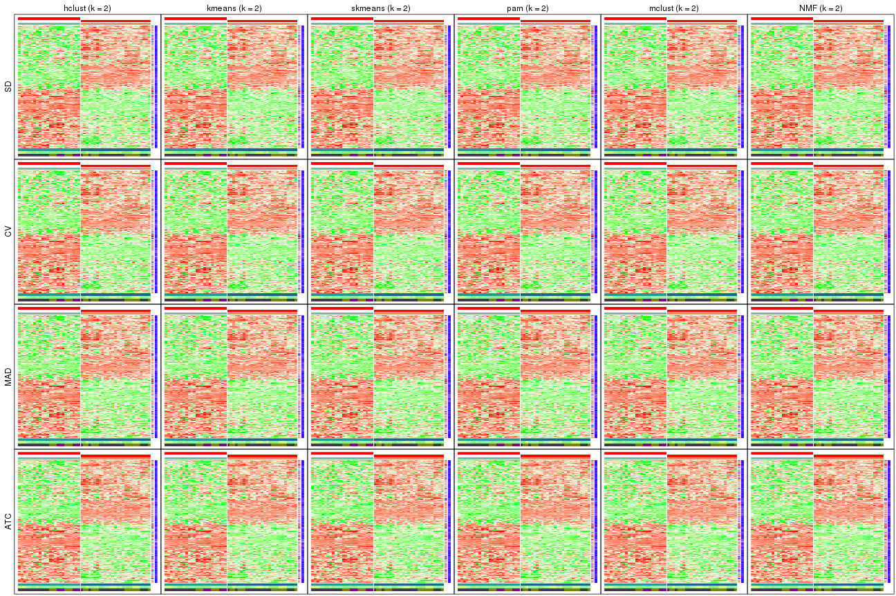
collect_plots(res_list, k = 3, fun = get_signatures, mc.cores = 4)
collect_plots(res_list, k = 4, fun = get_signatures, mc.cores = 4)
collect_plots(res_list, k = 5, fun = get_signatures, mc.cores = 4)
collect_plots(res_list, k = 6, fun = get_signatures, mc.cores = 4)
The statistics used for measuring the stability of consensus partitioning. (How are they defined?)
get_stats(res_list, k = 2)
#> k 1-PAC mean_silhouette concordance area_increased Rand Jaccard
#> SD:NMF 2 1 1 1 0.509 0.492 0.492
#> CV:NMF 2 1 1 1 0.509 0.492 0.492
#> MAD:NMF 2 1 1 1 0.509 0.492 0.492
#> ATC:NMF 2 1 1 1 0.509 0.492 0.492
#> SD:skmeans 2 1 1 1 0.509 0.492 0.492
#> CV:skmeans 2 1 1 1 0.509 0.492 0.492
#> MAD:skmeans 2 1 1 1 0.509 0.492 0.492
#> ATC:skmeans 2 1 1 1 0.509 0.492 0.492
#> SD:mclust 2 1 1 1 0.509 0.492 0.492
#> CV:mclust 2 1 1 1 0.509 0.492 0.492
#> MAD:mclust 2 1 1 1 0.509 0.492 0.492
#> ATC:mclust 2 1 1 1 0.509 0.492 0.492
#> SD:kmeans 2 1 1 1 0.509 0.492 0.492
#> CV:kmeans 2 1 1 1 0.509 0.492 0.492
#> MAD:kmeans 2 1 1 1 0.509 0.492 0.492
#> ATC:kmeans 2 1 1 1 0.509 0.492 0.492
#> SD:pam 2 1 1 1 0.509 0.492 0.492
#> CV:pam 2 1 1 1 0.509 0.492 0.492
#> MAD:pam 2 1 1 1 0.509 0.492 0.492
#> ATC:pam 2 1 1 1 0.509 0.492 0.492
#> SD:hclust 2 1 1 1 0.509 0.492 0.492
#> CV:hclust 2 1 1 1 0.509 0.492 0.492
#> MAD:hclust 2 1 1 1 0.509 0.492 0.492
#> ATC:hclust 2 1 1 1 0.509 0.492 0.492
get_stats(res_list, k = 3)
#> k 1-PAC mean_silhouette concordance area_increased Rand Jaccard
#> SD:NMF 3 0.833 0.945 0.932 0.1044 1.000 1.000
#> CV:NMF 3 0.762 0.938 0.916 0.1244 1.000 1.000
#> MAD:NMF 3 0.752 0.911 0.897 0.1523 1.000 1.000
#> ATC:NMF 3 0.881 0.946 0.949 0.0794 1.000 1.000
#> SD:skmeans 3 0.755 0.635 0.814 0.2580 0.881 0.758
#> CV:skmeans 3 0.755 0.680 0.823 0.2656 0.862 0.719
#> MAD:skmeans 3 0.757 0.754 0.862 0.2661 0.862 0.719
#> ATC:skmeans 3 0.788 0.944 0.910 0.2200 0.873 0.742
#> SD:mclust 3 0.838 0.904 0.926 0.1310 0.951 0.900
#> CV:mclust 3 0.884 0.909 0.930 0.1473 0.937 0.872
#> MAD:mclust 3 0.678 0.886 0.870 0.1768 1.000 1.000
#> ATC:mclust 3 0.873 0.902 0.929 0.1911 0.915 0.828
#> SD:kmeans 3 0.658 0.637 0.810 0.2085 0.961 0.920
#> CV:kmeans 3 0.603 0.874 0.835 0.2107 1.000 1.000
#> MAD:kmeans 3 0.637 0.591 0.821 0.2176 0.944 0.885
#> ATC:kmeans 3 0.715 0.337 0.795 0.2089 0.944 0.885
#> SD:pam 3 0.743 0.670 0.794 0.1940 0.890 0.777
#> CV:pam 3 0.645 0.907 0.835 0.1835 1.000 1.000
#> MAD:pam 3 0.747 0.607 0.777 0.1933 0.881 0.758
#> ATC:pam 3 0.980 0.953 0.979 0.2569 0.873 0.742
#> SD:hclust 3 0.969 0.961 0.974 0.0757 0.965 0.930
#> CV:hclust 3 0.860 0.845 0.924 0.1013 0.982 0.963
#> MAD:hclust 3 0.859 0.833 0.928 0.1005 0.982 0.963
#> ATC:hclust 3 0.949 0.969 0.961 0.2170 0.887 0.770
get_stats(res_list, k = 4)
#> k 1-PAC mean_silhouette concordance area_increased Rand Jaccard
#> SD:NMF 4 0.574 0.695 0.832 0.1228 0.961 0.920
#> CV:NMF 4 0.534 0.695 0.816 0.1179 0.961 0.920
#> MAD:NMF 4 0.570 0.736 0.820 0.1148 0.881 0.758
#> ATC:NMF 4 0.706 0.492 0.713 0.1461 0.873 0.742
#> SD:skmeans 4 0.523 0.575 0.696 0.1206 0.961 0.898
#> CV:skmeans 4 0.509 0.319 0.625 0.1374 0.898 0.727
#> MAD:skmeans 4 0.517 0.650 0.720 0.1208 1.000 1.000
#> ATC:skmeans 4 0.715 0.892 0.881 0.1312 0.915 0.768
#> SD:mclust 4 0.670 0.857 0.862 0.1559 0.881 0.730
#> CV:mclust 4 0.621 0.705 0.810 0.1719 0.890 0.744
#> MAD:mclust 4 0.586 0.753 0.836 0.1647 0.818 0.630
#> ATC:mclust 4 0.718 0.794 0.823 0.1771 0.795 0.517
#> SD:kmeans 4 0.574 0.518 0.719 0.0951 0.961 0.914
#> CV:kmeans 4 0.560 0.387 0.698 0.1055 0.865 0.726
#> MAD:kmeans 4 0.562 0.534 0.759 0.1030 0.867 0.703
#> ATC:kmeans 4 0.611 0.713 0.770 0.1079 0.774 0.520
#> SD:pam 4 0.704 0.644 0.791 0.0529 0.849 0.654
#> CV:pam 4 0.568 0.777 0.784 0.0663 0.982 0.963
#> MAD:pam 4 0.621 0.645 0.810 0.0739 0.844 0.647
#> ATC:pam 4 0.980 0.950 0.978 0.1326 0.915 0.768
#> SD:hclust 4 0.984 0.908 0.962 0.0445 0.984 0.964
#> CV:hclust 4 0.841 0.887 0.917 0.0578 0.953 0.901
#> MAD:hclust 4 0.697 0.856 0.889 0.0897 0.967 0.930
#> ATC:hclust 4 0.963 0.941 0.972 0.1724 0.901 0.739
get_stats(res_list, k = 5)
#> k 1-PAC mean_silhouette concordance area_increased Rand Jaccard
#> SD:NMF 5 0.527 0.565 0.763 0.0909 0.926 0.838
#> CV:NMF 5 0.510 0.548 0.735 0.0947 0.926 0.838
#> MAD:NMF 5 0.527 0.686 0.764 0.0745 0.980 0.947
#> ATC:NMF 5 0.654 0.660 0.786 0.1029 0.798 0.529
#> SD:skmeans 5 0.512 0.240 0.614 0.0760 0.900 0.734
#> CV:skmeans 5 0.508 0.220 0.570 0.0711 0.938 0.797
#> MAD:skmeans 5 0.511 0.291 0.611 0.0759 0.882 0.674
#> ATC:skmeans 5 0.824 0.850 0.877 0.0871 0.965 0.874
#> SD:mclust 5 0.606 0.771 0.812 0.0888 1.000 1.000
#> CV:mclust 5 0.554 0.590 0.744 0.0786 0.935 0.801
#> MAD:mclust 5 0.574 0.631 0.757 0.0694 0.945 0.830
#> ATC:mclust 5 0.845 0.889 0.907 0.0418 0.811 0.461
#> SD:kmeans 5 0.551 0.395 0.669 0.0772 0.935 0.844
#> CV:kmeans 5 0.547 0.303 0.627 0.0764 0.951 0.865
#> MAD:kmeans 5 0.541 0.520 0.701 0.0716 0.881 0.667
#> ATC:kmeans 5 0.598 0.686 0.745 0.0789 0.980 0.931
#> SD:pam 5 0.688 0.733 0.815 0.0470 0.896 0.727
#> CV:pam 5 0.564 0.377 0.762 0.0419 0.911 0.811
#> MAD:pam 5 0.602 0.613 0.788 0.0493 0.962 0.896
#> ATC:pam 5 0.880 0.812 0.887 0.0638 0.949 0.818
#> SD:hclust 5 0.896 0.884 0.935 0.0375 0.983 0.961
#> CV:hclust 5 0.820 0.854 0.884 0.0446 0.998 0.996
#> MAD:hclust 5 0.594 0.747 0.820 0.0627 0.984 0.964
#> ATC:hclust 5 0.968 0.935 0.970 0.0315 0.979 0.924
get_stats(res_list, k = 6)
#> k 1-PAC mean_silhouette concordance area_increased Rand Jaccard
#> SD:NMF 6 0.514 0.454 0.701 0.0683 0.947 0.862
#> CV:NMF 6 0.512 0.442 0.643 0.0777 0.880 0.702
#> MAD:NMF 6 0.533 0.447 0.698 0.0826 0.922 0.803
#> ATC:NMF 6 0.585 0.575 0.740 0.0582 0.894 0.697
#> SD:skmeans 6 0.512 0.237 0.565 0.0459 0.907 0.701
#> CV:skmeans 6 0.509 0.245 0.505 0.0481 0.907 0.669
#> MAD:skmeans 6 0.511 0.246 0.543 0.0503 0.879 0.589
#> ATC:skmeans 6 0.810 0.786 0.832 0.0558 0.940 0.753
#> SD:mclust 6 0.614 0.647 0.777 0.0588 0.928 0.777
#> CV:mclust 6 0.566 0.536 0.730 0.0547 0.939 0.783
#> MAD:mclust 6 0.562 0.322 0.657 0.0536 0.961 0.866
#> ATC:mclust 6 0.884 0.925 0.917 0.0508 0.958 0.845
#> SD:kmeans 6 0.535 0.416 0.646 0.0498 0.851 0.587
#> CV:kmeans 6 0.532 0.423 0.622 0.0473 0.820 0.513
#> MAD:kmeans 6 0.537 0.461 0.679 0.0575 0.915 0.702
#> ATC:kmeans 6 0.693 0.723 0.677 0.0728 0.875 0.567
#> SD:pam 6 0.673 0.712 0.824 0.0367 0.984 0.948
#> CV:pam 6 0.583 0.480 0.757 0.0319 0.927 0.815
#> MAD:pam 6 0.582 0.591 0.774 0.0334 0.984 0.950
#> ATC:pam 6 0.918 0.892 0.927 0.0503 0.936 0.732
#> SD:hclust 6 0.752 0.851 0.912 0.0476 0.999 0.998
#> CV:hclust 6 0.781 0.803 0.859 0.0323 0.999 0.998
#> MAD:hclust 6 0.579 0.638 0.758 0.0599 0.984 0.963
#> ATC:hclust 6 0.880 0.815 0.874 0.0522 1.000 1.000
Following heatmap plots the partition for each combination of methods and the lightness correspond to the silhouette scores for samples in each method. On top the consensus subgroup is inferred from all methods by taking the mean silhouette scores as weight.
collect_stats(res_list, k = 2)

collect_stats(res_list, k = 3)
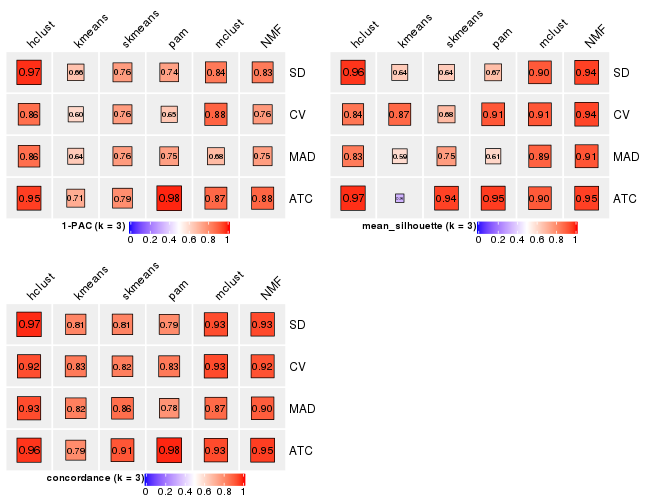
collect_stats(res_list, k = 4)
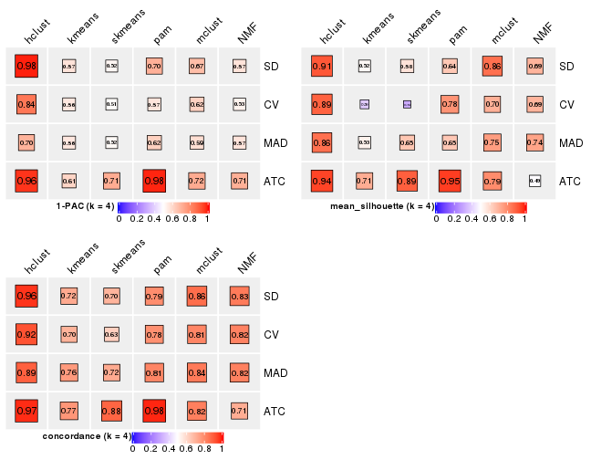
collect_stats(res_list, k = 5)
collect_stats(res_list, k = 6)
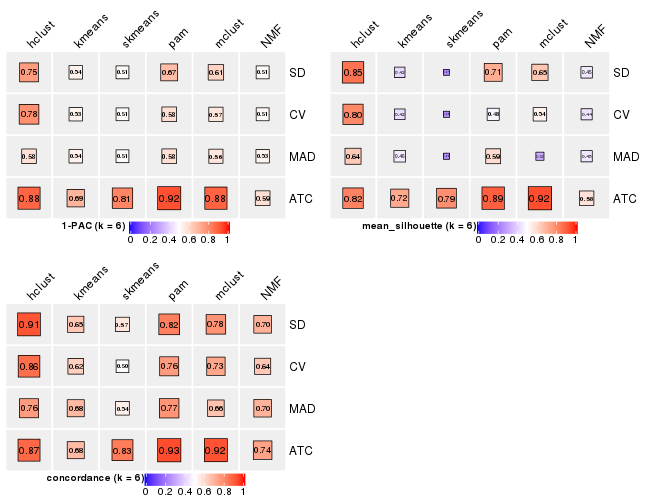
Collect partitions from all methods:
collect_classes(res_list, k = 2)
#> Error in valid.viewport(x, y, width, height, just, gp, clip, xscale, yscale, : invalid 'xscale' in viewport
collect_classes(res_list, k = 3)
collect_classes(res_list, k = 4)
collect_classes(res_list, k = 5)
collect_classes(res_list, k = 6)
Overlap of top rows from different top-row methods:
top_rows_overlap(res_list, top_n = 1000, method = "euler")
top_rows_overlap(res_list, top_n = 2000, method = "euler")
top_rows_overlap(res_list, top_n = 3000, method = "euler")
top_rows_overlap(res_list, top_n = 4000, method = "euler")
top_rows_overlap(res_list, top_n = 5000, method = "euler")
Also visualize the correspondance of rankings between different top-row methods:
top_rows_overlap(res_list, top_n = 1000, method = "correspondance")
top_rows_overlap(res_list, top_n = 2000, method = "correspondance")
top_rows_overlap(res_list, top_n = 3000, method = "correspondance")
top_rows_overlap(res_list, top_n = 4000, method = "correspondance")
top_rows_overlap(res_list, top_n = 5000, method = "correspondance")
Heatmaps of the top rows:
top_rows_heatmap(res_list, top_n = 1000)
top_rows_heatmap(res_list, top_n = 2000)
top_rows_heatmap(res_list, top_n = 3000)
top_rows_heatmap(res_list, top_n = 4000)
top_rows_heatmap(res_list, top_n = 5000)
Test correlation between subgroups and known annotations. If the known annotation is numeric, one-way ANOVA test is applied, and if the known annotation is discrete, chi-squared contingency table test is applied.
test_to_known_factors(res_list, k = 2)
#> n cell.line(p) agent(p) time(p) k
#> SD:NMF 51 6.87e-12 0.528 0.0406 2
#> CV:NMF 51 6.87e-12 0.528 0.0406 2
#> MAD:NMF 51 6.87e-12 0.528 0.0406 2
#> ATC:NMF 51 6.87e-12 0.528 0.0406 2
#> SD:skmeans 51 6.87e-12 0.528 0.0406 2
#> CV:skmeans 51 6.87e-12 0.528 0.0406 2
#> MAD:skmeans 51 6.87e-12 0.528 0.0406 2
#> ATC:skmeans 51 6.87e-12 0.528 0.0406 2
#> SD:mclust 51 6.87e-12 0.528 0.0406 2
#> CV:mclust 51 6.87e-12 0.528 0.0406 2
#> MAD:mclust 51 6.87e-12 0.528 0.0406 2
#> ATC:mclust 51 6.87e-12 0.528 0.0406 2
#> SD:kmeans 51 6.87e-12 0.528 0.0406 2
#> CV:kmeans 51 6.87e-12 0.528 0.0406 2
#> MAD:kmeans 51 6.87e-12 0.528 0.0406 2
#> ATC:kmeans 51 6.87e-12 0.528 0.0406 2
#> SD:pam 51 6.87e-12 0.528 0.0406 2
#> CV:pam 51 6.87e-12 0.528 0.0406 2
#> MAD:pam 51 6.87e-12 0.528 0.0406 2
#> ATC:pam 51 6.87e-12 0.528 0.0406 2
#> SD:hclust 51 6.87e-12 0.528 0.0406 2
#> CV:hclust 51 6.87e-12 0.528 0.0406 2
#> MAD:hclust 51 6.87e-12 0.528 0.0406 2
#> ATC:hclust 51 6.87e-12 0.528 0.0406 2
test_to_known_factors(res_list, k = 3)
#> n cell.line(p) agent(p) time(p) k
#> SD:NMF 51 6.87e-12 0.52771 4.06e-02 3
#> CV:NMF 51 6.87e-12 0.52771 4.06e-02 3
#> MAD:NMF 51 6.87e-12 0.52771 4.06e-02 3
#> ATC:NMF 51 6.87e-12 0.52771 4.06e-02 3
#> SD:skmeans 28 8.32e-07 0.26092 5.68e-01 3
#> CV:skmeans 32 1.13e-07 0.21986 2.24e-01 3
#> MAD:skmeans 44 2.79e-10 0.08009 3.09e-02 3
#> ATC:skmeans 51 8.42e-12 0.19972 1.18e-01 3
#> SD:mclust 50 1.39e-11 0.49244 3.99e-02 3
#> CV:mclust 51 8.42e-12 0.48669 3.01e-02 3
#> MAD:mclust 51 6.87e-12 0.52771 4.06e-02 3
#> ATC:mclust 51 8.42e-12 0.01081 6.91e-03 3
#> SD:kmeans 38 5.60e-09 0.07546 1.23e-01 3
#> CV:kmeans 51 6.87e-12 0.52771 4.06e-02 3
#> MAD:kmeans 41 1.25e-09 0.03651 5.16e-02 3
#> ATC:kmeans 27 2.42e-05 0.00805 8.05e-03 3
#> SD:pam 42 7.58e-10 0.49462 8.90e-02 3
#> CV:pam 51 6.87e-12 0.52771 4.06e-02 3
#> MAD:pam 31 4.32e-07 0.30542 5.15e-01 3
#> ATC:pam 50 1.39e-11 0.28527 1.24e-01 3
#> SD:hclust 51 8.42e-12 0.42203 5.14e-02 3
#> CV:hclust 47 5.48e-11 0.39966 2.48e-02 3
#> MAD:hclust 48 3.25e-11 0.36788 3.06e-02 3
#> ATC:hclust 51 8.42e-12 0.15241 2.05e-06 3
test_to_known_factors(res_list, k = 4)
#> n cell.line(p) agent(p) time(p) k
#> SD:NMF 43 4.60e-10 0.1396 5.99e-02 4
#> CV:NMF 47 6.22e-11 0.2580 7.34e-02 4
#> MAD:NMF 45 1.69e-10 0.0501 4.49e-02 4
#> ATC:NMF 31 4.32e-07 0.3054 4.94e-01 4
#> SD:skmeans 27 2.42e-05 0.1251 4.40e-01 4
#> CV:skmeans 12 2.48e-03 0.0512 7.28e-02 4
#> MAD:skmeans 40 2.06e-09 0.0402 2.90e-02 4
#> ATC:skmeans 51 4.89e-11 0.0063 2.03e-02 4
#> SD:mclust 50 7.99e-11 0.0974 1.25e-02 4
#> CV:mclust 45 9.25e-10 0.1229 2.27e-02 4
#> MAD:mclust 48 2.13e-10 0.0483 1.14e-02 4
#> ATC:mclust 43 2.46e-09 0.0219 4.68e-05 4
#> SD:kmeans 35 3.32e-08 0.0336 1.04e-01 4
#> CV:kmeans 23 1.01e-05 0.6216 1.06e-01 4
#> MAD:kmeans 40 1.07e-08 0.0098 2.40e-03 4
#> ATC:kmeans 43 2.46e-09 0.0235 2.88e-04 4
#> SD:pam 41 1.25e-09 0.3896 3.00e-01 4
#> CV:pam 48 3.25e-11 0.3881 2.45e-02 4
#> MAD:pam 43 4.60e-10 0.5520 4.43e-02 4
#> ATC:pam 50 7.99e-11 0.0104 2.18e-02 4
#> SD:hclust 49 2.29e-11 0.3366 3.93e-02 4
#> CV:hclust 47 5.48e-11 0.3997 2.48e-02 4
#> MAD:hclust 50 1.39e-11 0.3155 4.61e-02 4
#> ATC:hclust 50 7.99e-11 0.1869 4.05e-06 4
test_to_known_factors(res_list, k = 5)
#> n cell.line(p) agent(p) time(p) k
#> SD:NMF 40 1.07e-08 3.57e-02 1.59e-02 5
#> CV:NMF 41 6.54e-09 1.49e-01 2.13e-02 5
#> MAD:NMF 44 2.79e-10 1.06e-01 1.01e-01 5
#> ATC:NMF 41 6.54e-09 4.06e-02 2.78e-05 5
#> SD:skmeans 0 NA NA NA 5
#> CV:skmeans 8 NA 1.55e-01 1.83e-02 5
#> MAD:skmeans 9 2.01e-02 1.26e-01 3.58e-01 5
#> ATC:skmeans 48 9.44e-10 1.45e-05 4.70e-07 5
#> SD:mclust 48 2.13e-10 6.67e-02 7.58e-03 5
#> CV:mclust 40 4.33e-08 2.55e-01 8.37e-02 5
#> MAD:mclust 44 1.51e-09 9.51e-03 1.53e-03 5
#> ATC:mclust 51 2.23e-10 1.70e-05 1.29e-05 5
#> SD:kmeans 24 6.14e-06 3.71e-02 3.47e-02 5
#> CV:kmeans 19 7.49e-05 1.77e-01 2.48e-02 5
#> MAD:kmeans 34 1.98e-07 3.15e-02 4.55e-04 5
#> ATC:kmeans 41 6.54e-09 3.59e-02 2.91e-04 5
#> SD:pam 45 1.69e-10 5.60e-01 1.28e-01 5
#> CV:pam 21 NA NA NA 5
#> MAD:pam 39 3.40e-09 6.29e-01 5.16e-02 5
#> ATC:pam 48 9.44e-10 1.09e-02 1.36e-03 5
#> SD:hclust 47 5.48e-11 4.00e-01 2.48e-02 5
#> CV:hclust 47 5.48e-11 4.00e-01 2.48e-02 5
#> MAD:hclust 47 6.22e-11 2.24e-01 2.30e-02 5
#> ATC:hclust 50 3.61e-10 7.00e-04 1.87e-09 5
test_to_known_factors(res_list, k = 6)
#> n cell.line(p) agent(p) time(p) k
#> SD:NMF 28 3.63e-06 5.93e-02 2.48e-02 6
#> CV:NMF 26 3.07e-06 2.28e-02 1.06e-01 6
#> MAD:NMF 31 8.50e-07 1.08e-01 3.87e-02 6
#> ATC:NMF 30 3.06e-07 3.58e-03 5.65e-03 6
#> SD:skmeans 0 NA NA NA 6
#> CV:skmeans 2 NA NA NA 6
#> MAD:skmeans 0 NA NA NA 6
#> ATC:skmeans 42 1.67e-08 6.94e-08 1.23e-10 6
#> SD:mclust 42 1.67e-08 9.58e-02 6.48e-02 6
#> CV:mclust 34 7.45e-07 1.84e-01 4.74e-02 6
#> MAD:mclust 17 2.03e-04 2.36e-01 2.62e-01 6
#> ATC:mclust 51 8.65e-10 7.18e-09 5.15e-09 6
#> SD:kmeans 30 4.89e-06 1.74e-02 9.70e-05 6
#> CV:kmeans 22 2.00e-04 1.18e-01 5.04e-02 6
#> MAD:kmeans 29 2.24e-06 8.56e-04 2.26e-04 6
#> ATC:kmeans 39 2.37e-07 6.68e-03 2.11e-06 6
#> SD:pam 43 4.60e-10 5.73e-01 1.38e-01 6
#> CV:pam 21 NA NA NA 6
#> MAD:pam 39 3.40e-09 6.29e-01 5.16e-02 6
#> ATC:pam 49 2.22e-09 6.22e-06 6.29e-07 6
#> SD:hclust 47 5.48e-11 4.00e-01 2.48e-02 6
#> CV:hclust 46 9.28e-11 2.11e-01 1.86e-02 6
#> MAD:hclust 40 2.46e-09 1.96e-01 1.08e-03 6
#> ATC:hclust 50 3.61e-10 7.00e-04 1.87e-09 6
The object with results only for a single top-value method and a single partition method can be extracted as:
res = res_list["SD", "hclust"]
# you can also extract it by
# res = res_list["SD:hclust"]
A summary of res and all the functions that can be applied to it:
res
#> A 'ConsensusPartition' object with k = 2, 3, 4, 5, 6.
#> On a matrix with 21168 rows and 51 columns.
#> Top rows (1000, 2000, 3000, 4000, 5000) are extracted by 'SD' method.
#> Subgroups are detected by 'hclust' method.
#> Performed in total 1250 partitions by row resampling.
#> Best k for subgroups seems to be 3.
#>
#> Following methods can be applied to this 'ConsensusPartition' object:
#> [1] "cola_report" "collect_classes" "collect_plots"
#> [4] "collect_stats" "colnames" "compare_signatures"
#> [7] "consensus_heatmap" "dimension_reduction" "functional_enrichment"
#> [10] "get_anno_col" "get_anno" "get_classes"
#> [13] "get_consensus" "get_matrix" "get_membership"
#> [16] "get_param" "get_signatures" "get_stats"
#> [19] "is_best_k" "is_stable_k" "membership_heatmap"
#> [22] "ncol" "nrow" "plot_ecdf"
#> [25] "rownames" "select_partition_number" "show"
#> [28] "suggest_best_k" "test_to_known_factors"
collect_plots() function collects all the plots made from res for all k (number of partitions)
into one single page to provide an easy and fast comparison between different k.
collect_plots(res)
The plots are:
k and the heatmap of
predicted classes for each k.k.k.k.All the plots in panels can be made by individual functions and they are plotted later in this section.
select_partition_number() produces several plots showing different
statistics for choosing “optimized” k. There are following statistics:
k;k, the area increased is defined as \(A_k - A_{k-1}\).The detailed explanations of these statistics can be found in the cola vignette.
Generally speaking, lower PAC score, higher mean silhouette score or higher
concordance corresponds to better partition. Rand index and Jaccard index
measure how similar the current partition is compared to partition with k-1.
If they are too similar, we won't accept k is better than k-1.
select_partition_number(res)
The numeric values for all these statistics can be obtained by get_stats().
get_stats(res)
#> k 1-PAC mean_silhouette concordance area_increased Rand Jaccard
#> 2 2 1.000 1.000 1.000 0.5087 0.492 0.492
#> 3 3 0.969 0.961 0.974 0.0757 0.965 0.930
#> 4 4 0.984 0.908 0.962 0.0445 0.984 0.964
#> 5 5 0.896 0.884 0.935 0.0375 0.983 0.961
#> 6 6 0.752 0.851 0.912 0.0476 0.999 0.998
suggest_best_k() suggests the best \(k\) based on these statistics. The rules are as follows:
NA.suggest_best_k(res)
#> [1] 3
#> attr(,"optional")
#> [1] 2
There is also optional best \(k\) = 2 that is worth to check.
Following shows the table of the partitions (You need to click the show/hide
code output link to see it). The membership matrix (columns with name p*)
is inferred by
clue::cl_consensus()
function with the SE method. Basically the value in the membership matrix
represents the probability to belong to a certain group. The finall class
label for an item is determined with the group with highest probability it
belongs to.
In get_classes() function, the entropy is calculated from the membership
matrix and the silhouette score is calculated from the consensus matrix.
cbind(get_classes(res, k = 2), get_membership(res, k = 2))
#> class entropy silhouette p1 p2
#> GSM312684 1 0 1 1 0
#> GSM312685 1 0 1 1 0
#> GSM312686 1 0 1 1 0
#> GSM312693 1 0 1 1 0
#> GSM312694 1 0 1 1 0
#> GSM312695 1 0 1 1 0
#> GSM312699 1 0 1 1 0
#> GSM312700 1 0 1 1 0
#> GSM312701 1 0 1 1 0
#> GSM312705 1 0 1 1 0
#> GSM312706 1 0 1 1 0
#> GSM312707 1 0 1 1 0
#> GSM312687 1 0 1 1 0
#> GSM312688 1 0 1 1 0
#> GSM312689 1 0 1 1 0
#> GSM312696 1 0 1 1 0
#> GSM312697 1 0 1 1 0
#> GSM312698 1 0 1 1 0
#> GSM312702 1 0 1 1 0
#> GSM312703 1 0 1 1 0
#> GSM312704 1 0 1 1 0
#> GSM312690 1 0 1 1 0
#> GSM312691 1 0 1 1 0
#> GSM312692 1 0 1 1 0
#> GSM312708 2 0 1 0 1
#> GSM312709 2 0 1 0 1
#> GSM312710 2 0 1 0 1
#> GSM312719 2 0 1 0 1
#> GSM312720 2 0 1 0 1
#> GSM312721 2 0 1 0 1
#> GSM312722 2 0 1 0 1
#> GSM312731 2 0 1 0 1
#> GSM312732 2 0 1 0 1
#> GSM312733 2 0 1 0 1
#> GSM312734 2 0 1 0 1
#> GSM312711 2 0 1 0 1
#> GSM312712 2 0 1 0 1
#> GSM312713 2 0 1 0 1
#> GSM312714 2 0 1 0 1
#> GSM312723 2 0 1 0 1
#> GSM312724 2 0 1 0 1
#> GSM312725 2 0 1 0 1
#> GSM312726 2 0 1 0 1
#> GSM312715 2 0 1 0 1
#> GSM312716 2 0 1 0 1
#> GSM312717 2 0 1 0 1
#> GSM312718 2 0 1 0 1
#> GSM312727 2 0 1 0 1
#> GSM312728 2 0 1 0 1
#> GSM312729 2 0 1 0 1
#> GSM312730 2 0 1 0 1
cbind(get_classes(res, k = 3), get_membership(res, k = 3))
#> class entropy silhouette p1 p2 p3
#> GSM312684 1 0.3116 0.876 0.892 0 0.108
#> GSM312685 3 0.4796 0.875 0.220 0 0.780
#> GSM312686 1 0.1964 0.928 0.944 0 0.056
#> GSM312693 1 0.2537 0.904 0.920 0 0.080
#> GSM312694 1 0.1964 0.924 0.944 0 0.056
#> GSM312695 1 0.1289 0.939 0.968 0 0.032
#> GSM312699 1 0.0000 0.951 1.000 0 0.000
#> GSM312700 1 0.0237 0.951 0.996 0 0.004
#> GSM312701 1 0.0892 0.947 0.980 0 0.020
#> GSM312705 1 0.0237 0.952 0.996 0 0.004
#> GSM312706 1 0.0000 0.951 1.000 0 0.000
#> GSM312707 1 0.0000 0.951 1.000 0 0.000
#> GSM312687 3 0.4931 0.877 0.232 0 0.768
#> GSM312688 1 0.5138 0.641 0.748 0 0.252
#> GSM312689 1 0.0424 0.950 0.992 0 0.008
#> GSM312696 1 0.0424 0.952 0.992 0 0.008
#> GSM312697 1 0.0592 0.951 0.988 0 0.012
#> GSM312698 1 0.0424 0.952 0.992 0 0.008
#> GSM312702 1 0.0237 0.952 0.996 0 0.004
#> GSM312703 1 0.0237 0.952 0.996 0 0.004
#> GSM312704 1 0.0237 0.952 0.996 0 0.004
#> GSM312690 1 0.0747 0.949 0.984 0 0.016
#> GSM312691 1 0.3412 0.825 0.876 0 0.124
#> GSM312692 1 0.2165 0.923 0.936 0 0.064
#> GSM312708 2 0.0000 1.000 0.000 1 0.000
#> GSM312709 2 0.0000 1.000 0.000 1 0.000
#> GSM312710 2 0.0000 1.000 0.000 1 0.000
#> GSM312719 2 0.0000 1.000 0.000 1 0.000
#> GSM312720 2 0.0000 1.000 0.000 1 0.000
#> GSM312721 2 0.0000 1.000 0.000 1 0.000
#> GSM312722 2 0.0000 1.000 0.000 1 0.000
#> GSM312731 2 0.0000 1.000 0.000 1 0.000
#> GSM312732 2 0.0000 1.000 0.000 1 0.000
#> GSM312733 2 0.0000 1.000 0.000 1 0.000
#> GSM312734 2 0.0000 1.000 0.000 1 0.000
#> GSM312711 2 0.0000 1.000 0.000 1 0.000
#> GSM312712 2 0.0000 1.000 0.000 1 0.000
#> GSM312713 2 0.0000 1.000 0.000 1 0.000
#> GSM312714 2 0.0000 1.000 0.000 1 0.000
#> GSM312723 2 0.0000 1.000 0.000 1 0.000
#> GSM312724 2 0.0000 1.000 0.000 1 0.000
#> GSM312725 2 0.0000 1.000 0.000 1 0.000
#> GSM312726 2 0.0000 1.000 0.000 1 0.000
#> GSM312715 2 0.0000 1.000 0.000 1 0.000
#> GSM312716 2 0.0000 1.000 0.000 1 0.000
#> GSM312717 2 0.0000 1.000 0.000 1 0.000
#> GSM312718 2 0.0000 1.000 0.000 1 0.000
#> GSM312727 2 0.0000 1.000 0.000 1 0.000
#> GSM312728 2 0.0000 1.000 0.000 1 0.000
#> GSM312729 2 0.0000 1.000 0.000 1 0.000
#> GSM312730 2 0.0000 1.000 0.000 1 0.000
cbind(get_classes(res, k = 4), get_membership(res, k = 4))
#> class entropy silhouette p1 p2 p3 p4
#> GSM312684 1 0.3278 0.842 0.864 0.000 0.116 0.020
#> GSM312685 4 0.5495 0.617 0.096 0.000 0.176 0.728
#> GSM312686 1 0.2021 0.908 0.932 0.000 0.056 0.012
#> GSM312693 1 0.2329 0.891 0.916 0.000 0.072 0.012
#> GSM312694 1 0.2142 0.902 0.928 0.000 0.056 0.016
#> GSM312695 1 0.1624 0.917 0.952 0.000 0.028 0.020
#> GSM312699 1 0.0000 0.933 1.000 0.000 0.000 0.000
#> GSM312700 1 0.0524 0.933 0.988 0.000 0.008 0.004
#> GSM312701 1 0.0817 0.930 0.976 0.000 0.024 0.000
#> GSM312705 1 0.0524 0.934 0.988 0.000 0.004 0.008
#> GSM312706 1 0.0376 0.934 0.992 0.000 0.004 0.004
#> GSM312707 1 0.0376 0.934 0.992 0.000 0.004 0.004
#> GSM312687 4 0.2101 0.635 0.060 0.000 0.012 0.928
#> GSM312688 1 0.6998 -0.219 0.468 0.000 0.416 0.116
#> GSM312689 1 0.0657 0.933 0.984 0.000 0.012 0.004
#> GSM312696 1 0.0657 0.934 0.984 0.000 0.004 0.012
#> GSM312697 1 0.0779 0.933 0.980 0.000 0.004 0.016
#> GSM312698 1 0.0524 0.934 0.988 0.000 0.004 0.008
#> GSM312702 1 0.0336 0.934 0.992 0.000 0.000 0.008
#> GSM312703 1 0.0469 0.934 0.988 0.000 0.000 0.012
#> GSM312704 1 0.0469 0.934 0.988 0.000 0.000 0.012
#> GSM312690 1 0.0779 0.932 0.980 0.000 0.016 0.004
#> GSM312691 3 0.3791 0.000 0.200 0.000 0.796 0.004
#> GSM312692 1 0.2197 0.899 0.916 0.000 0.080 0.004
#> GSM312708 2 0.0188 0.995 0.000 0.996 0.004 0.000
#> GSM312709 2 0.0188 0.995 0.000 0.996 0.004 0.000
#> GSM312710 2 0.0000 0.995 0.000 1.000 0.000 0.000
#> GSM312719 2 0.0188 0.995 0.000 0.996 0.004 0.000
#> GSM312720 2 0.0188 0.995 0.000 0.996 0.004 0.000
#> GSM312721 2 0.0336 0.995 0.000 0.992 0.008 0.000
#> GSM312722 2 0.0188 0.995 0.000 0.996 0.004 0.000
#> GSM312731 2 0.0000 0.995 0.000 1.000 0.000 0.000
#> GSM312732 2 0.0707 0.987 0.000 0.980 0.020 0.000
#> GSM312733 2 0.0336 0.993 0.000 0.992 0.008 0.000
#> GSM312734 2 0.0336 0.993 0.000 0.992 0.008 0.000
#> GSM312711 2 0.0592 0.992 0.000 0.984 0.016 0.000
#> GSM312712 2 0.0000 0.995 0.000 1.000 0.000 0.000
#> GSM312713 2 0.0188 0.995 0.000 0.996 0.004 0.000
#> GSM312714 2 0.0188 0.995 0.000 0.996 0.004 0.000
#> GSM312723 2 0.0469 0.992 0.000 0.988 0.012 0.000
#> GSM312724 2 0.0188 0.995 0.000 0.996 0.004 0.000
#> GSM312725 2 0.0336 0.994 0.000 0.992 0.008 0.000
#> GSM312726 2 0.0188 0.995 0.000 0.996 0.004 0.000
#> GSM312715 2 0.0188 0.995 0.000 0.996 0.004 0.000
#> GSM312716 2 0.0000 0.995 0.000 1.000 0.000 0.000
#> GSM312717 2 0.0188 0.995 0.000 0.996 0.004 0.000
#> GSM312718 2 0.0188 0.995 0.000 0.996 0.004 0.000
#> GSM312727 2 0.0000 0.995 0.000 1.000 0.000 0.000
#> GSM312728 2 0.0469 0.992 0.000 0.988 0.012 0.000
#> GSM312729 2 0.0188 0.995 0.000 0.996 0.004 0.000
#> GSM312730 2 0.0188 0.995 0.000 0.996 0.004 0.000
cbind(get_classes(res, k = 5), get_membership(res, k = 5))
#> class entropy silhouette p1 p2 p3 p4 p5
#> GSM312684 1 0.3839 0.826 0.832 0.000 0.088 0.056 0.024
#> GSM312685 3 0.0290 0.000 0.008 0.000 0.992 0.000 0.000
#> GSM312686 1 0.2551 0.910 0.904 0.000 0.044 0.040 0.012
#> GSM312693 1 0.2734 0.894 0.892 0.000 0.048 0.052 0.008
#> GSM312694 1 0.2640 0.906 0.900 0.000 0.032 0.052 0.016
#> GSM312695 1 0.2269 0.920 0.920 0.000 0.020 0.032 0.028
#> GSM312699 1 0.0000 0.948 1.000 0.000 0.000 0.000 0.000
#> GSM312700 1 0.1195 0.940 0.960 0.000 0.000 0.028 0.012
#> GSM312701 1 0.1195 0.943 0.960 0.000 0.012 0.028 0.000
#> GSM312705 1 0.0740 0.949 0.980 0.000 0.004 0.008 0.008
#> GSM312706 1 0.0486 0.948 0.988 0.000 0.004 0.004 0.004
#> GSM312707 1 0.0324 0.949 0.992 0.000 0.004 0.000 0.004
#> GSM312687 5 0.4616 0.000 0.036 0.000 0.288 0.000 0.676
#> GSM312688 4 0.8488 0.206 0.268 0.000 0.168 0.292 0.272
#> GSM312689 1 0.1364 0.938 0.952 0.000 0.000 0.036 0.012
#> GSM312696 1 0.0613 0.948 0.984 0.000 0.004 0.004 0.008
#> GSM312697 1 0.0740 0.948 0.980 0.000 0.004 0.008 0.008
#> GSM312698 1 0.0451 0.949 0.988 0.000 0.004 0.000 0.008
#> GSM312702 1 0.0451 0.948 0.988 0.000 0.000 0.004 0.008
#> GSM312703 1 0.0579 0.948 0.984 0.000 0.000 0.008 0.008
#> GSM312704 1 0.0579 0.948 0.984 0.000 0.000 0.008 0.008
#> GSM312690 1 0.1331 0.940 0.952 0.000 0.000 0.040 0.008
#> GSM312691 4 0.3060 0.104 0.128 0.000 0.024 0.848 0.000
#> GSM312692 1 0.2897 0.900 0.888 0.000 0.040 0.052 0.020
#> GSM312708 2 0.1195 0.970 0.000 0.960 0.000 0.028 0.012
#> GSM312709 2 0.1012 0.972 0.000 0.968 0.000 0.020 0.012
#> GSM312710 2 0.1211 0.975 0.000 0.960 0.000 0.024 0.016
#> GSM312719 2 0.1106 0.975 0.000 0.964 0.000 0.024 0.012
#> GSM312720 2 0.1012 0.973 0.000 0.968 0.000 0.020 0.012
#> GSM312721 2 0.0771 0.976 0.000 0.976 0.000 0.020 0.004
#> GSM312722 2 0.0771 0.976 0.000 0.976 0.000 0.020 0.004
#> GSM312731 2 0.1012 0.975 0.000 0.968 0.000 0.020 0.012
#> GSM312732 2 0.2889 0.906 0.000 0.872 0.000 0.044 0.084
#> GSM312733 2 0.1582 0.966 0.000 0.944 0.000 0.028 0.028
#> GSM312734 2 0.1830 0.956 0.000 0.932 0.000 0.040 0.028
#> GSM312711 2 0.1399 0.971 0.000 0.952 0.000 0.028 0.020
#> GSM312712 2 0.0671 0.976 0.000 0.980 0.000 0.016 0.004
#> GSM312713 2 0.0671 0.976 0.000 0.980 0.000 0.016 0.004
#> GSM312714 2 0.0671 0.977 0.000 0.980 0.000 0.016 0.004
#> GSM312723 2 0.1493 0.964 0.000 0.948 0.000 0.024 0.028
#> GSM312724 2 0.0671 0.974 0.000 0.980 0.000 0.004 0.016
#> GSM312725 2 0.0798 0.973 0.000 0.976 0.000 0.008 0.016
#> GSM312726 2 0.0451 0.976 0.000 0.988 0.000 0.004 0.008
#> GSM312715 2 0.1830 0.959 0.000 0.932 0.000 0.040 0.028
#> GSM312716 2 0.0324 0.976 0.000 0.992 0.000 0.004 0.004
#> GSM312717 2 0.0579 0.976 0.000 0.984 0.000 0.008 0.008
#> GSM312718 2 0.1012 0.976 0.000 0.968 0.000 0.020 0.012
#> GSM312727 2 0.0579 0.976 0.000 0.984 0.000 0.008 0.008
#> GSM312728 2 0.1493 0.964 0.000 0.948 0.000 0.024 0.028
#> GSM312729 2 0.0579 0.976 0.000 0.984 0.000 0.008 0.008
#> GSM312730 2 0.0579 0.976 0.000 0.984 0.000 0.008 0.008
cbind(get_classes(res, k = 6), get_membership(res, k = 6))
#> class entropy silhouette p1 p2 p3 p4 p5 p6
#> GSM312684 1 0.3891 0.826 0.800 0.000 0.000 0.112 0.052 0.036
#> GSM312685 5 0.2908 0.000 0.000 0.000 0.104 0.048 0.848 0.000
#> GSM312686 1 0.2541 0.910 0.892 0.000 0.000 0.024 0.052 0.032
#> GSM312693 1 0.3239 0.880 0.852 0.000 0.004 0.080 0.028 0.036
#> GSM312694 1 0.3342 0.887 0.852 0.000 0.012 0.072 0.028 0.036
#> GSM312695 1 0.2953 0.905 0.880 0.000 0.024 0.024 0.044 0.028
#> GSM312699 1 0.0291 0.939 0.992 0.000 0.004 0.000 0.004 0.000
#> GSM312700 1 0.1901 0.930 0.932 0.000 0.016 0.016 0.012 0.024
#> GSM312701 1 0.1787 0.931 0.932 0.000 0.000 0.032 0.020 0.016
#> GSM312705 1 0.0767 0.940 0.976 0.000 0.004 0.000 0.008 0.012
#> GSM312706 1 0.0767 0.939 0.976 0.000 0.008 0.000 0.012 0.004
#> GSM312707 1 0.0622 0.939 0.980 0.000 0.008 0.000 0.012 0.000
#> GSM312687 3 0.0547 0.000 0.020 0.000 0.980 0.000 0.000 0.000
#> GSM312688 4 0.1398 0.000 0.052 0.000 0.008 0.940 0.000 0.000
#> GSM312689 1 0.2254 0.925 0.916 0.000 0.016 0.024 0.020 0.024
#> GSM312696 1 0.0810 0.939 0.976 0.000 0.004 0.008 0.008 0.004
#> GSM312697 1 0.1026 0.939 0.968 0.000 0.004 0.012 0.008 0.008
#> GSM312698 1 0.0696 0.939 0.980 0.000 0.004 0.004 0.008 0.004
#> GSM312702 1 0.0810 0.939 0.976 0.000 0.004 0.004 0.008 0.008
#> GSM312703 1 0.0696 0.939 0.980 0.000 0.004 0.004 0.008 0.004
#> GSM312704 1 0.0924 0.938 0.972 0.000 0.004 0.008 0.008 0.008
#> GSM312690 1 0.2076 0.927 0.920 0.000 0.004 0.016 0.020 0.040
#> GSM312691 6 0.3626 0.000 0.084 0.000 0.000 0.092 0.012 0.812
#> GSM312692 1 0.2816 0.901 0.876 0.000 0.000 0.060 0.028 0.036
#> GSM312708 2 0.2308 0.926 0.000 0.912 0.012 0.016 0.028 0.032
#> GSM312709 2 0.2152 0.929 0.000 0.920 0.012 0.016 0.024 0.028
#> GSM312710 2 0.1793 0.944 0.000 0.928 0.000 0.012 0.012 0.048
#> GSM312719 2 0.2164 0.929 0.000 0.908 0.000 0.020 0.012 0.060
#> GSM312720 2 0.2135 0.935 0.000 0.920 0.012 0.012 0.024 0.032
#> GSM312721 2 0.1964 0.938 0.000 0.920 0.004 0.008 0.012 0.056
#> GSM312722 2 0.1553 0.939 0.000 0.944 0.004 0.008 0.012 0.032
#> GSM312731 2 0.2076 0.939 0.000 0.920 0.008 0.016 0.012 0.044
#> GSM312732 2 0.5332 0.761 0.000 0.700 0.020 0.036 0.096 0.148
#> GSM312733 2 0.2867 0.924 0.000 0.880 0.016 0.016 0.028 0.060
#> GSM312734 2 0.3397 0.893 0.000 0.848 0.016 0.016 0.052 0.068
#> GSM312711 2 0.2414 0.933 0.000 0.896 0.012 0.012 0.008 0.072
#> GSM312712 2 0.1194 0.942 0.000 0.956 0.004 0.000 0.008 0.032
#> GSM312713 2 0.1761 0.938 0.000 0.936 0.008 0.008 0.016 0.032
#> GSM312714 2 0.1338 0.944 0.000 0.952 0.004 0.008 0.004 0.032
#> GSM312723 2 0.3118 0.894 0.000 0.856 0.004 0.028 0.024 0.088
#> GSM312724 2 0.2007 0.936 0.000 0.924 0.008 0.012 0.016 0.040
#> GSM312725 2 0.1729 0.936 0.000 0.936 0.004 0.012 0.012 0.036
#> GSM312726 2 0.1036 0.941 0.000 0.964 0.000 0.004 0.008 0.024
#> GSM312715 2 0.3201 0.910 0.000 0.860 0.016 0.016 0.040 0.068
#> GSM312716 2 0.0767 0.941 0.000 0.976 0.000 0.004 0.008 0.012
#> GSM312717 2 0.0891 0.942 0.000 0.968 0.000 0.008 0.000 0.024
#> GSM312718 2 0.2034 0.942 0.000 0.924 0.012 0.024 0.008 0.032
#> GSM312727 2 0.0870 0.941 0.000 0.972 0.000 0.012 0.004 0.012
#> GSM312728 2 0.3168 0.891 0.000 0.852 0.004 0.028 0.024 0.092
#> GSM312729 2 0.0891 0.942 0.000 0.968 0.000 0.000 0.008 0.024
#> GSM312730 2 0.0891 0.942 0.000 0.968 0.000 0.000 0.008 0.024
Heatmaps for the consensus matrix. It visualizes the probability of two samples to be in a same group.
consensus_heatmap(res, k = 2)

consensus_heatmap(res, k = 3)
consensus_heatmap(res, k = 4)
consensus_heatmap(res, k = 5)
consensus_heatmap(res, k = 6)
Heatmaps for the membership of samples in all partitions to see how consistent they are:
membership_heatmap(res, k = 2)

membership_heatmap(res, k = 3)
membership_heatmap(res, k = 4)
membership_heatmap(res, k = 5)
membership_heatmap(res, k = 6)
As soon as we have had the classes for columns, we can look for signatures which are significantly different between classes which can be candidate marks for certain classes. Following are the heatmaps for signatures.
Signature heatmaps where rows are scaled:
get_signatures(res, k = 2)

get_signatures(res, k = 3)
get_signatures(res, k = 4)
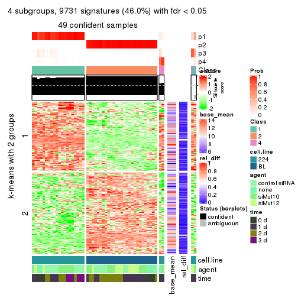
get_signatures(res, k = 5)
get_signatures(res, k = 6)

Signature heatmaps where rows are not scaled:
get_signatures(res, k = 2, scale_rows = FALSE)

get_signatures(res, k = 3, scale_rows = FALSE)
get_signatures(res, k = 4, scale_rows = FALSE)
get_signatures(res, k = 5, scale_rows = FALSE)
get_signatures(res, k = 6, scale_rows = FALSE)
Compare the overlap of signatures from different k:
compare_signatures(res)
get_signature() returns a data frame invisibly. TO get the list of signatures, the function
call should be assigned to a variable explicitly. In following code, if plot argument is set
to FALSE, no heatmap is plotted while only the differential analysis is performed.
# code only for demonstration
tb = get_signature(res, k = ..., plot = FALSE)
An example of the output of tb is:
#> which_row fdr mean_1 mean_2 scaled_mean_1 scaled_mean_2 km
#> 1 38 0.042760348 8.373488 9.131774 -0.5533452 0.5164555 1
#> 2 40 0.018707592 7.106213 8.469186 -0.6173731 0.5762149 1
#> 3 55 0.019134737 10.221463 11.207825 -0.6159697 0.5749050 1
#> 4 59 0.006059896 5.921854 7.869574 -0.6899429 0.6439467 1
#> 5 60 0.018055526 8.928898 10.211722 -0.6204761 0.5791110 1
#> 6 98 0.009384629 15.714769 14.887706 0.6635654 -0.6193277 2
...
The columns in tb are:
which_row: row indices corresponding to the input matrix.fdr: FDR for the differential test. mean_x: The mean value in group x.scaled_mean_x: The mean value in group x after rows are scaled.km: Row groups if k-means clustering is applied to rows.UMAP plot which shows how samples are separated.
dimension_reduction(res, k = 2, method = "UMAP")

dimension_reduction(res, k = 3, method = "UMAP")
dimension_reduction(res, k = 4, method = "UMAP")
dimension_reduction(res, k = 5, method = "UMAP")
dimension_reduction(res, k = 6, method = "UMAP")
Following heatmap shows how subgroups are split when increasing k:
collect_classes(res)
Test correlation between subgroups and known annotations. If the known annotation is numeric, one-way ANOVA test is applied, and if the known annotation is discrete, chi-squared contingency table test is applied.
test_to_known_factors(res)
#> n cell.line(p) agent(p) time(p) k
#> SD:hclust 51 6.87e-12 0.528 0.0406 2
#> SD:hclust 51 8.42e-12 0.422 0.0514 3
#> SD:hclust 49 2.29e-11 0.337 0.0393 4
#> SD:hclust 47 5.48e-11 0.400 0.0248 5
#> SD:hclust 47 5.48e-11 0.400 0.0248 6
If matrix rows can be associated to genes, consider to use GO_Enrichment(res,
...) to perform function enrichment for the signature genes.
The object with results only for a single top-value method and a single partition method can be extracted as:
res = res_list["SD", "kmeans"]
# you can also extract it by
# res = res_list["SD:kmeans"]
A summary of res and all the functions that can be applied to it:
res
#> A 'ConsensusPartition' object with k = 2, 3, 4, 5, 6.
#> On a matrix with 21168 rows and 51 columns.
#> Top rows (1000, 2000, 3000, 4000, 5000) are extracted by 'SD' method.
#> Subgroups are detected by 'kmeans' method.
#> Performed in total 1250 partitions by row resampling.
#> Best k for subgroups seems to be 2.
#>
#> Following methods can be applied to this 'ConsensusPartition' object:
#> [1] "cola_report" "collect_classes" "collect_plots"
#> [4] "collect_stats" "colnames" "compare_signatures"
#> [7] "consensus_heatmap" "dimension_reduction" "functional_enrichment"
#> [10] "get_anno_col" "get_anno" "get_classes"
#> [13] "get_consensus" "get_matrix" "get_membership"
#> [16] "get_param" "get_signatures" "get_stats"
#> [19] "is_best_k" "is_stable_k" "membership_heatmap"
#> [22] "ncol" "nrow" "plot_ecdf"
#> [25] "rownames" "select_partition_number" "show"
#> [28] "suggest_best_k" "test_to_known_factors"
collect_plots() function collects all the plots made from res for all k (number of partitions)
into one single page to provide an easy and fast comparison between different k.
collect_plots(res)
The plots are:
k and the heatmap of
predicted classes for each k.k.k.k.All the plots in panels can be made by individual functions and they are plotted later in this section.
select_partition_number() produces several plots showing different
statistics for choosing “optimized” k. There are following statistics:
k;k, the area increased is defined as \(A_k - A_{k-1}\).The detailed explanations of these statistics can be found in the cola vignette.
Generally speaking, lower PAC score, higher mean silhouette score or higher
concordance corresponds to better partition. Rand index and Jaccard index
measure how similar the current partition is compared to partition with k-1.
If they are too similar, we won't accept k is better than k-1.
select_partition_number(res)
The numeric values for all these statistics can be obtained by get_stats().
get_stats(res)
#> k 1-PAC mean_silhouette concordance area_increased Rand Jaccard
#> 2 2 1.000 1.000 1.000 0.5087 0.492 0.492
#> 3 3 0.658 0.637 0.810 0.2085 0.961 0.920
#> 4 4 0.574 0.518 0.719 0.0951 0.961 0.914
#> 5 5 0.551 0.395 0.669 0.0772 0.935 0.844
#> 6 6 0.535 0.416 0.646 0.0498 0.851 0.587
suggest_best_k() suggests the best \(k\) based on these statistics. The rules are as follows:
NA.suggest_best_k(res)
#> [1] 2
Following shows the table of the partitions (You need to click the show/hide
code output link to see it). The membership matrix (columns with name p*)
is inferred by
clue::cl_consensus()
function with the SE method. Basically the value in the membership matrix
represents the probability to belong to a certain group. The finall class
label for an item is determined with the group with highest probability it
belongs to.
In get_classes() function, the entropy is calculated from the membership
matrix and the silhouette score is calculated from the consensus matrix.
cbind(get_classes(res, k = 2), get_membership(res, k = 2))
#> class entropy silhouette p1 p2
#> GSM312684 1 0 1 1 0
#> GSM312685 1 0 1 1 0
#> GSM312686 1 0 1 1 0
#> GSM312693 1 0 1 1 0
#> GSM312694 1 0 1 1 0
#> GSM312695 1 0 1 1 0
#> GSM312699 1 0 1 1 0
#> GSM312700 1 0 1 1 0
#> GSM312701 1 0 1 1 0
#> GSM312705 1 0 1 1 0
#> GSM312706 1 0 1 1 0
#> GSM312707 1 0 1 1 0
#> GSM312687 1 0 1 1 0
#> GSM312688 1 0 1 1 0
#> GSM312689 1 0 1 1 0
#> GSM312696 1 0 1 1 0
#> GSM312697 1 0 1 1 0
#> GSM312698 1 0 1 1 0
#> GSM312702 1 0 1 1 0
#> GSM312703 1 0 1 1 0
#> GSM312704 1 0 1 1 0
#> GSM312690 1 0 1 1 0
#> GSM312691 1 0 1 1 0
#> GSM312692 1 0 1 1 0
#> GSM312708 2 0 1 0 1
#> GSM312709 2 0 1 0 1
#> GSM312710 2 0 1 0 1
#> GSM312719 2 0 1 0 1
#> GSM312720 2 0 1 0 1
#> GSM312721 2 0 1 0 1
#> GSM312722 2 0 1 0 1
#> GSM312731 2 0 1 0 1
#> GSM312732 2 0 1 0 1
#> GSM312733 2 0 1 0 1
#> GSM312734 2 0 1 0 1
#> GSM312711 2 0 1 0 1
#> GSM312712 2 0 1 0 1
#> GSM312713 2 0 1 0 1
#> GSM312714 2 0 1 0 1
#> GSM312723 2 0 1 0 1
#> GSM312724 2 0 1 0 1
#> GSM312725 2 0 1 0 1
#> GSM312726 2 0 1 0 1
#> GSM312715 2 0 1 0 1
#> GSM312716 2 0 1 0 1
#> GSM312717 2 0 1 0 1
#> GSM312718 2 0 1 0 1
#> GSM312727 2 0 1 0 1
#> GSM312728 2 0 1 0 1
#> GSM312729 2 0 1 0 1
#> GSM312730 2 0 1 0 1
cbind(get_classes(res, k = 3), get_membership(res, k = 3))
#> class entropy silhouette p1 p2 p3
#> GSM312684 1 0.2356 0.926 0.928 0.000 0.072
#> GSM312685 1 0.5254 0.809 0.736 0.000 0.264
#> GSM312686 1 0.2261 0.927 0.932 0.000 0.068
#> GSM312693 1 0.0892 0.933 0.980 0.000 0.020
#> GSM312694 1 0.2165 0.929 0.936 0.000 0.064
#> GSM312695 1 0.2066 0.930 0.940 0.000 0.060
#> GSM312699 1 0.1643 0.929 0.956 0.000 0.044
#> GSM312700 1 0.1860 0.931 0.948 0.000 0.052
#> GSM312701 1 0.1753 0.931 0.952 0.000 0.048
#> GSM312705 1 0.1753 0.929 0.952 0.000 0.048
#> GSM312706 1 0.1411 0.930 0.964 0.000 0.036
#> GSM312707 1 0.1643 0.929 0.956 0.000 0.044
#> GSM312687 1 0.5216 0.817 0.740 0.000 0.260
#> GSM312688 1 0.5058 0.833 0.756 0.000 0.244
#> GSM312689 1 0.2066 0.930 0.940 0.000 0.060
#> GSM312696 1 0.1860 0.928 0.948 0.000 0.052
#> GSM312697 1 0.1860 0.928 0.948 0.000 0.052
#> GSM312698 1 0.1753 0.929 0.952 0.000 0.048
#> GSM312702 1 0.2261 0.928 0.932 0.000 0.068
#> GSM312703 1 0.2066 0.928 0.940 0.000 0.060
#> GSM312704 1 0.2165 0.928 0.936 0.000 0.064
#> GSM312690 1 0.2066 0.930 0.940 0.000 0.060
#> GSM312691 1 0.5178 0.823 0.744 0.000 0.256
#> GSM312692 1 0.1964 0.931 0.944 0.000 0.056
#> GSM312708 2 0.5431 0.308 0.000 0.716 0.284
#> GSM312709 2 0.5497 0.292 0.000 0.708 0.292
#> GSM312710 2 0.6126 -0.187 0.000 0.600 0.400
#> GSM312719 2 0.4842 0.382 0.000 0.776 0.224
#> GSM312720 2 0.2066 0.607 0.000 0.940 0.060
#> GSM312721 2 0.4399 0.450 0.000 0.812 0.188
#> GSM312722 2 0.3482 0.573 0.000 0.872 0.128
#> GSM312731 2 0.6062 -0.194 0.000 0.616 0.384
#> GSM312732 3 0.6168 0.851 0.000 0.412 0.588
#> GSM312733 3 0.6126 0.848 0.000 0.400 0.600
#> GSM312734 2 0.6267 -0.269 0.000 0.548 0.452
#> GSM312711 2 0.6126 -0.233 0.000 0.600 0.400
#> GSM312712 2 0.5327 0.296 0.000 0.728 0.272
#> GSM312713 2 0.5621 0.265 0.000 0.692 0.308
#> GSM312714 2 0.3551 0.566 0.000 0.868 0.132
#> GSM312723 2 0.4974 0.337 0.000 0.764 0.236
#> GSM312724 2 0.2625 0.587 0.000 0.916 0.084
#> GSM312725 2 0.1860 0.602 0.000 0.948 0.052
#> GSM312726 2 0.1031 0.615 0.000 0.976 0.024
#> GSM312715 2 0.6168 -0.126 0.000 0.588 0.412
#> GSM312716 2 0.2448 0.609 0.000 0.924 0.076
#> GSM312717 2 0.0747 0.618 0.000 0.984 0.016
#> GSM312718 2 0.2165 0.611 0.000 0.936 0.064
#> GSM312727 2 0.0747 0.620 0.000 0.984 0.016
#> GSM312728 2 0.5058 0.329 0.000 0.756 0.244
#> GSM312729 2 0.1964 0.617 0.000 0.944 0.056
#> GSM312730 2 0.1753 0.619 0.000 0.952 0.048
cbind(get_classes(res, k = 4), get_membership(res, k = 4))
#> class entropy silhouette p1 p2 p3 p4
#> GSM312684 1 0.5160 0.8269 0.748 0.000 0.072 0.180
#> GSM312685 1 0.7586 0.5882 0.460 0.000 0.328 0.212
#> GSM312686 1 0.5091 0.8272 0.752 0.000 0.068 0.180
#> GSM312693 1 0.3474 0.8453 0.868 0.000 0.064 0.068
#> GSM312694 1 0.5477 0.8242 0.728 0.000 0.092 0.180
#> GSM312695 1 0.4920 0.8326 0.768 0.000 0.068 0.164
#> GSM312699 1 0.0804 0.8370 0.980 0.000 0.008 0.012
#> GSM312700 1 0.4720 0.8313 0.768 0.000 0.044 0.188
#> GSM312701 1 0.4259 0.8404 0.816 0.000 0.056 0.128
#> GSM312705 1 0.1388 0.8341 0.960 0.000 0.012 0.028
#> GSM312706 1 0.0804 0.8399 0.980 0.000 0.008 0.012
#> GSM312707 1 0.0336 0.8376 0.992 0.000 0.008 0.000
#> GSM312687 1 0.7599 0.5848 0.448 0.000 0.344 0.208
#> GSM312688 1 0.7572 0.6423 0.476 0.000 0.224 0.300
#> GSM312689 1 0.4996 0.8270 0.752 0.000 0.056 0.192
#> GSM312696 1 0.1798 0.8302 0.944 0.000 0.016 0.040
#> GSM312697 1 0.1798 0.8302 0.944 0.000 0.016 0.040
#> GSM312698 1 0.1706 0.8303 0.948 0.000 0.016 0.036
#> GSM312702 1 0.2197 0.8319 0.928 0.000 0.024 0.048
#> GSM312703 1 0.1820 0.8297 0.944 0.000 0.020 0.036
#> GSM312704 1 0.1913 0.8303 0.940 0.000 0.020 0.040
#> GSM312690 1 0.5432 0.8175 0.716 0.000 0.068 0.216
#> GSM312691 1 0.7536 0.6422 0.484 0.000 0.220 0.296
#> GSM312692 1 0.4541 0.8397 0.796 0.000 0.060 0.144
#> GSM312708 2 0.4431 0.2431 0.000 0.696 0.304 0.000
#> GSM312709 2 0.4454 0.2309 0.000 0.692 0.308 0.000
#> GSM312710 2 0.6835 0.0700 0.000 0.592 0.252 0.156
#> GSM312719 2 0.5649 -0.1002 0.000 0.580 0.028 0.392
#> GSM312720 2 0.1867 0.5790 0.000 0.928 0.072 0.000
#> GSM312721 2 0.5233 0.1507 0.000 0.648 0.020 0.332
#> GSM312722 2 0.5417 0.4638 0.000 0.732 0.180 0.088
#> GSM312731 2 0.7110 0.0575 0.000 0.564 0.200 0.236
#> GSM312732 4 0.7775 -0.3694 0.000 0.240 0.376 0.384
#> GSM312733 3 0.7859 -0.3231 0.000 0.272 0.376 0.352
#> GSM312734 3 0.6130 0.2198 0.000 0.440 0.512 0.048
#> GSM312711 4 0.6755 0.0567 0.000 0.448 0.092 0.460
#> GSM312712 2 0.5834 0.4012 0.000 0.704 0.124 0.172
#> GSM312713 2 0.5088 0.2523 0.000 0.688 0.288 0.024
#> GSM312714 2 0.3758 0.5392 0.000 0.848 0.104 0.048
#> GSM312723 2 0.4888 -0.0581 0.000 0.588 0.000 0.412
#> GSM312724 2 0.4095 0.5034 0.000 0.804 0.024 0.172
#> GSM312725 2 0.3219 0.5153 0.000 0.836 0.000 0.164
#> GSM312726 2 0.2197 0.5802 0.000 0.916 0.004 0.080
#> GSM312715 2 0.5959 -0.1834 0.000 0.568 0.388 0.044
#> GSM312716 2 0.2751 0.5863 0.000 0.904 0.056 0.040
#> GSM312717 2 0.2593 0.5599 0.000 0.892 0.004 0.104
#> GSM312718 2 0.3778 0.5728 0.000 0.848 0.052 0.100
#> GSM312727 2 0.0657 0.5989 0.000 0.984 0.004 0.012
#> GSM312728 2 0.5150 -0.0312 0.000 0.596 0.008 0.396
#> GSM312729 2 0.2032 0.5978 0.000 0.936 0.036 0.028
#> GSM312730 2 0.2032 0.5972 0.000 0.936 0.036 0.028
cbind(get_classes(res, k = 5), get_membership(res, k = 5))
#> class entropy silhouette p1 p2 p3 p4 p5
#> GSM312684 1 0.5998 0.522194 0.612 0.000 0.256 0.016 0.116
#> GSM312685 3 0.7208 0.731729 0.224 0.000 0.384 0.024 0.368
#> GSM312686 1 0.6086 0.520927 0.604 0.000 0.264 0.020 0.112
#> GSM312693 1 0.4167 0.659460 0.788 0.000 0.136 0.004 0.072
#> GSM312694 1 0.5592 0.464554 0.560 0.000 0.372 0.008 0.060
#> GSM312695 1 0.5383 0.405107 0.536 0.000 0.420 0.020 0.024
#> GSM312699 1 0.0771 0.702708 0.976 0.000 0.020 0.004 0.000
#> GSM312700 1 0.4590 0.493661 0.568 0.000 0.420 0.012 0.000
#> GSM312701 1 0.5070 0.598484 0.668 0.000 0.272 0.008 0.052
#> GSM312705 1 0.1153 0.702464 0.964 0.000 0.024 0.008 0.004
#> GSM312706 1 0.2054 0.703243 0.916 0.000 0.072 0.008 0.004
#> GSM312707 1 0.1569 0.704598 0.944 0.000 0.044 0.008 0.004
#> GSM312687 3 0.7163 0.761449 0.184 0.000 0.480 0.040 0.296
#> GSM312688 3 0.7316 0.735527 0.272 0.000 0.496 0.064 0.168
#> GSM312689 1 0.4549 0.424181 0.528 0.000 0.464 0.008 0.000
#> GSM312696 1 0.1012 0.691360 0.968 0.000 0.020 0.012 0.000
#> GSM312697 1 0.1117 0.687032 0.964 0.000 0.020 0.016 0.000
#> GSM312698 1 0.0807 0.690901 0.976 0.000 0.012 0.012 0.000
#> GSM312702 1 0.2236 0.671182 0.908 0.000 0.068 0.024 0.000
#> GSM312703 1 0.1106 0.685451 0.964 0.000 0.024 0.012 0.000
#> GSM312704 1 0.1469 0.680526 0.948 0.000 0.036 0.016 0.000
#> GSM312690 1 0.4538 0.483666 0.564 0.000 0.428 0.004 0.004
#> GSM312691 3 0.6368 0.697710 0.220 0.000 0.624 0.084 0.072
#> GSM312692 1 0.5142 0.589468 0.652 0.000 0.296 0.020 0.032
#> GSM312708 2 0.5759 -0.353384 0.000 0.520 0.000 0.092 0.388
#> GSM312709 2 0.5785 -0.381016 0.000 0.504 0.000 0.092 0.404
#> GSM312710 2 0.6936 -0.282020 0.000 0.452 0.012 0.288 0.248
#> GSM312719 2 0.5992 0.093883 0.000 0.540 0.052 0.376 0.032
#> GSM312720 2 0.2624 0.488302 0.000 0.872 0.000 0.012 0.116
#> GSM312721 2 0.4992 0.271244 0.000 0.640 0.028 0.320 0.012
#> GSM312722 2 0.5833 0.214839 0.000 0.636 0.028 0.080 0.256
#> GSM312731 2 0.6486 -0.070807 0.000 0.460 0.016 0.404 0.120
#> GSM312732 4 0.6611 0.392948 0.000 0.164 0.076 0.620 0.140
#> GSM312733 4 0.6398 0.403720 0.000 0.188 0.032 0.608 0.172
#> GSM312734 5 0.7528 0.000000 0.000 0.312 0.044 0.244 0.400
#> GSM312711 4 0.5229 -0.000569 0.000 0.432 0.004 0.528 0.036
#> GSM312712 2 0.5584 0.319264 0.000 0.636 0.016 0.276 0.072
#> GSM312713 2 0.6117 -0.322280 0.000 0.548 0.012 0.104 0.336
#> GSM312714 2 0.3471 0.471933 0.000 0.836 0.000 0.072 0.092
#> GSM312723 2 0.5477 0.036610 0.000 0.536 0.040 0.412 0.012
#> GSM312724 2 0.4530 0.438730 0.000 0.752 0.020 0.192 0.036
#> GSM312725 2 0.3934 0.448266 0.000 0.792 0.032 0.168 0.008
#> GSM312726 2 0.1774 0.543258 0.000 0.932 0.000 0.052 0.016
#> GSM312715 2 0.7202 -0.735721 0.000 0.404 0.036 0.176 0.384
#> GSM312716 2 0.3427 0.479095 0.000 0.844 0.012 0.032 0.112
#> GSM312717 2 0.2830 0.529625 0.000 0.884 0.020 0.080 0.016
#> GSM312718 2 0.4697 0.483036 0.000 0.776 0.040 0.064 0.120
#> GSM312727 2 0.1026 0.527741 0.000 0.968 0.004 0.004 0.024
#> GSM312728 2 0.5297 0.071891 0.000 0.552 0.036 0.404 0.008
#> GSM312729 2 0.1739 0.534069 0.000 0.940 0.004 0.032 0.024
#> GSM312730 2 0.1471 0.528885 0.000 0.952 0.004 0.020 0.024
cbind(get_classes(res, k = 6), get_membership(res, k = 6))
#> class entropy silhouette p1 p2 p3 p4 p5 p6
#> GSM312684 1 0.6273 -0.4285 0.436 0.000 0.352 0.004 0.196 0.012
#> GSM312685 5 0.7117 0.6209 0.116 0.000 0.200 0.072 0.544 0.068
#> GSM312686 1 0.6485 -0.4514 0.428 0.000 0.368 0.008 0.172 0.024
#> GSM312693 1 0.4777 0.1209 0.676 0.000 0.212 0.000 0.108 0.004
#> GSM312694 3 0.5512 0.7549 0.440 0.000 0.468 0.004 0.076 0.012
#> GSM312695 3 0.4917 0.7910 0.432 0.000 0.520 0.000 0.028 0.020
#> GSM312699 1 0.1003 0.6293 0.964 0.000 0.028 0.000 0.004 0.004
#> GSM312700 3 0.4486 0.8032 0.452 0.000 0.524 0.000 0.012 0.012
#> GSM312701 1 0.5140 -0.5129 0.532 0.000 0.388 0.000 0.076 0.004
#> GSM312705 1 0.1615 0.6180 0.928 0.000 0.064 0.004 0.000 0.004
#> GSM312706 1 0.2587 0.5444 0.864 0.000 0.120 0.004 0.004 0.008
#> GSM312707 1 0.2099 0.5956 0.904 0.000 0.080 0.004 0.004 0.008
#> GSM312687 5 0.8106 0.6282 0.108 0.000 0.316 0.116 0.360 0.100
#> GSM312688 5 0.6356 0.5895 0.220 0.000 0.184 0.028 0.552 0.016
#> GSM312689 3 0.4639 0.8202 0.400 0.000 0.568 0.008 0.016 0.008
#> GSM312696 1 0.0405 0.6340 0.988 0.000 0.008 0.004 0.000 0.000
#> GSM312697 1 0.0653 0.6335 0.980 0.000 0.004 0.012 0.000 0.004
#> GSM312698 1 0.0146 0.6346 0.996 0.000 0.000 0.004 0.000 0.000
#> GSM312702 1 0.1777 0.6037 0.928 0.000 0.044 0.024 0.000 0.004
#> GSM312703 1 0.1088 0.6239 0.960 0.000 0.024 0.016 0.000 0.000
#> GSM312704 1 0.1237 0.6211 0.956 0.000 0.020 0.020 0.000 0.004
#> GSM312690 3 0.5156 0.7770 0.396 0.000 0.544 0.012 0.036 0.012
#> GSM312691 5 0.7132 0.5164 0.128 0.000 0.372 0.088 0.396 0.016
#> GSM312692 1 0.5604 -0.5019 0.492 0.000 0.404 0.004 0.088 0.012
#> GSM312708 6 0.4249 0.6678 0.000 0.416 0.012 0.000 0.004 0.568
#> GSM312709 6 0.3872 0.6864 0.000 0.392 0.004 0.000 0.000 0.604
#> GSM312710 6 0.6805 0.4497 0.000 0.380 0.024 0.176 0.024 0.396
#> GSM312719 4 0.6295 -0.2175 0.000 0.428 0.068 0.436 0.016 0.052
#> GSM312720 2 0.2848 0.4955 0.000 0.828 0.004 0.008 0.000 0.160
#> GSM312721 2 0.5124 0.2595 0.000 0.560 0.044 0.376 0.004 0.016
#> GSM312722 2 0.6852 -0.1358 0.000 0.468 0.068 0.156 0.008 0.300
#> GSM312731 2 0.6633 -0.0668 0.000 0.436 0.004 0.272 0.028 0.260
#> GSM312732 4 0.8330 0.2769 0.000 0.108 0.088 0.328 0.188 0.288
#> GSM312733 4 0.7862 0.2347 0.000 0.108 0.084 0.360 0.096 0.352
#> GSM312734 6 0.5101 0.4595 0.000 0.192 0.004 0.068 0.044 0.692
#> GSM312711 4 0.6501 0.0907 0.000 0.372 0.028 0.464 0.028 0.108
#> GSM312712 2 0.5175 0.3921 0.000 0.652 0.004 0.212 0.008 0.124
#> GSM312713 6 0.5344 0.6180 0.000 0.448 0.012 0.052 0.008 0.480
#> GSM312714 2 0.3588 0.4542 0.000 0.788 0.000 0.060 0.000 0.152
#> GSM312723 2 0.4729 0.1226 0.000 0.500 0.020 0.464 0.016 0.000
#> GSM312724 2 0.4223 0.5100 0.000 0.732 0.020 0.220 0.008 0.020
#> GSM312725 2 0.3564 0.5462 0.000 0.772 0.020 0.200 0.000 0.008
#> GSM312726 2 0.2832 0.6030 0.000 0.876 0.024 0.076 0.012 0.012
#> GSM312715 6 0.4980 0.5876 0.000 0.252 0.004 0.056 0.024 0.664
#> GSM312716 2 0.4537 0.4855 0.000 0.768 0.036 0.080 0.012 0.104
#> GSM312717 2 0.3116 0.5911 0.000 0.852 0.036 0.096 0.008 0.008
#> GSM312718 2 0.5522 0.4930 0.000 0.688 0.052 0.088 0.020 0.152
#> GSM312727 2 0.1439 0.5961 0.000 0.952 0.012 0.008 0.012 0.016
#> GSM312728 2 0.4475 0.1739 0.000 0.528 0.016 0.448 0.008 0.000
#> GSM312729 2 0.1508 0.6008 0.000 0.948 0.004 0.020 0.016 0.012
#> GSM312730 2 0.0951 0.5958 0.000 0.968 0.000 0.008 0.004 0.020
Heatmaps for the consensus matrix. It visualizes the probability of two samples to be in a same group.
consensus_heatmap(res, k = 2)

consensus_heatmap(res, k = 3)
consensus_heatmap(res, k = 4)
consensus_heatmap(res, k = 5)
consensus_heatmap(res, k = 6)
Heatmaps for the membership of samples in all partitions to see how consistent they are:
membership_heatmap(res, k = 2)

membership_heatmap(res, k = 3)
membership_heatmap(res, k = 4)
membership_heatmap(res, k = 5)
membership_heatmap(res, k = 6)
As soon as we have had the classes for columns, we can look for signatures which are significantly different between classes which can be candidate marks for certain classes. Following are the heatmaps for signatures.
Signature heatmaps where rows are scaled:
get_signatures(res, k = 2)

get_signatures(res, k = 3)
get_signatures(res, k = 4)
get_signatures(res, k = 5)
get_signatures(res, k = 6)
Signature heatmaps where rows are not scaled:
get_signatures(res, k = 2, scale_rows = FALSE)

get_signatures(res, k = 3, scale_rows = FALSE)
get_signatures(res, k = 4, scale_rows = FALSE)
get_signatures(res, k = 5, scale_rows = FALSE)
get_signatures(res, k = 6, scale_rows = FALSE)
Compare the overlap of signatures from different k:
compare_signatures(res)
get_signature() returns a data frame invisibly. TO get the list of signatures, the function
call should be assigned to a variable explicitly. In following code, if plot argument is set
to FALSE, no heatmap is plotted while only the differential analysis is performed.
# code only for demonstration
tb = get_signature(res, k = ..., plot = FALSE)
An example of the output of tb is:
#> which_row fdr mean_1 mean_2 scaled_mean_1 scaled_mean_2 km
#> 1 38 0.042760348 8.373488 9.131774 -0.5533452 0.5164555 1
#> 2 40 0.018707592 7.106213 8.469186 -0.6173731 0.5762149 1
#> 3 55 0.019134737 10.221463 11.207825 -0.6159697 0.5749050 1
#> 4 59 0.006059896 5.921854 7.869574 -0.6899429 0.6439467 1
#> 5 60 0.018055526 8.928898 10.211722 -0.6204761 0.5791110 1
#> 6 98 0.009384629 15.714769 14.887706 0.6635654 -0.6193277 2
...
The columns in tb are:
which_row: row indices corresponding to the input matrix.fdr: FDR for the differential test. mean_x: The mean value in group x.scaled_mean_x: The mean value in group x after rows are scaled.km: Row groups if k-means clustering is applied to rows.UMAP plot which shows how samples are separated.
dimension_reduction(res, k = 2, method = "UMAP")

dimension_reduction(res, k = 3, method = "UMAP")
dimension_reduction(res, k = 4, method = "UMAP")
dimension_reduction(res, k = 5, method = "UMAP")
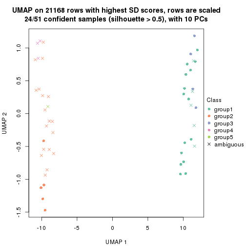
dimension_reduction(res, k = 6, method = "UMAP")
Following heatmap shows how subgroups are split when increasing k:
collect_classes(res)
Test correlation between subgroups and known annotations. If the known annotation is numeric, one-way ANOVA test is applied, and if the known annotation is discrete, chi-squared contingency table test is applied.
test_to_known_factors(res)
#> n cell.line(p) agent(p) time(p) k
#> SD:kmeans 51 6.87e-12 0.5277 0.040552 2
#> SD:kmeans 38 5.60e-09 0.0755 0.122859 3
#> SD:kmeans 35 3.32e-08 0.0336 0.103863 4
#> SD:kmeans 24 6.14e-06 0.0371 0.034725 5
#> SD:kmeans 30 4.89e-06 0.0174 0.000097 6
If matrix rows can be associated to genes, consider to use GO_Enrichment(res,
...) to perform function enrichment for the signature genes.
The object with results only for a single top-value method and a single partition method can be extracted as:
res = res_list["SD", "skmeans"]
# you can also extract it by
# res = res_list["SD:skmeans"]
A summary of res and all the functions that can be applied to it:
res
#> A 'ConsensusPartition' object with k = 2, 3, 4, 5, 6.
#> On a matrix with 21168 rows and 51 columns.
#> Top rows (1000, 2000, 3000, 4000, 5000) are extracted by 'SD' method.
#> Subgroups are detected by 'skmeans' method.
#> Performed in total 1250 partitions by row resampling.
#> Best k for subgroups seems to be 2.
#>
#> Following methods can be applied to this 'ConsensusPartition' object:
#> [1] "cola_report" "collect_classes" "collect_plots"
#> [4] "collect_stats" "colnames" "compare_signatures"
#> [7] "consensus_heatmap" "dimension_reduction" "functional_enrichment"
#> [10] "get_anno_col" "get_anno" "get_classes"
#> [13] "get_consensus" "get_matrix" "get_membership"
#> [16] "get_param" "get_signatures" "get_stats"
#> [19] "is_best_k" "is_stable_k" "membership_heatmap"
#> [22] "ncol" "nrow" "plot_ecdf"
#> [25] "rownames" "select_partition_number" "show"
#> [28] "suggest_best_k" "test_to_known_factors"
collect_plots() function collects all the plots made from res for all k (number of partitions)
into one single page to provide an easy and fast comparison between different k.
collect_plots(res)
The plots are:
k and the heatmap of
predicted classes for each k.k.k.k.All the plots in panels can be made by individual functions and they are plotted later in this section.
select_partition_number() produces several plots showing different
statistics for choosing “optimized” k. There are following statistics:
k;k, the area increased is defined as \(A_k - A_{k-1}\).The detailed explanations of these statistics can be found in the cola vignette.
Generally speaking, lower PAC score, higher mean silhouette score or higher
concordance corresponds to better partition. Rand index and Jaccard index
measure how similar the current partition is compared to partition with k-1.
If they are too similar, we won't accept k is better than k-1.
select_partition_number(res)
The numeric values for all these statistics can be obtained by get_stats().
get_stats(res)
#> k 1-PAC mean_silhouette concordance area_increased Rand Jaccard
#> 2 2 1.000 1.000 1.000 0.5087 0.492 0.492
#> 3 3 0.755 0.635 0.814 0.2580 0.881 0.758
#> 4 4 0.523 0.575 0.696 0.1206 0.961 0.898
#> 5 5 0.512 0.240 0.614 0.0760 0.900 0.734
#> 6 6 0.512 0.237 0.565 0.0459 0.907 0.701
suggest_best_k() suggests the best \(k\) based on these statistics. The rules are as follows:
NA.suggest_best_k(res)
#> [1] 2
Following shows the table of the partitions (You need to click the show/hide
code output link to see it). The membership matrix (columns with name p*)
is inferred by
clue::cl_consensus()
function with the SE method. Basically the value in the membership matrix
represents the probability to belong to a certain group. The finall class
label for an item is determined with the group with highest probability it
belongs to.
In get_classes() function, the entropy is calculated from the membership
matrix and the silhouette score is calculated from the consensus matrix.
cbind(get_classes(res, k = 2), get_membership(res, k = 2))
#> class entropy silhouette p1 p2
#> GSM312684 1 0 1 1 0
#> GSM312685 1 0 1 1 0
#> GSM312686 1 0 1 1 0
#> GSM312693 1 0 1 1 0
#> GSM312694 1 0 1 1 0
#> GSM312695 1 0 1 1 0
#> GSM312699 1 0 1 1 0
#> GSM312700 1 0 1 1 0
#> GSM312701 1 0 1 1 0
#> GSM312705 1 0 1 1 0
#> GSM312706 1 0 1 1 0
#> GSM312707 1 0 1 1 0
#> GSM312687 1 0 1 1 0
#> GSM312688 1 0 1 1 0
#> GSM312689 1 0 1 1 0
#> GSM312696 1 0 1 1 0
#> GSM312697 1 0 1 1 0
#> GSM312698 1 0 1 1 0
#> GSM312702 1 0 1 1 0
#> GSM312703 1 0 1 1 0
#> GSM312704 1 0 1 1 0
#> GSM312690 1 0 1 1 0
#> GSM312691 1 0 1 1 0
#> GSM312692 1 0 1 1 0
#> GSM312708 2 0 1 0 1
#> GSM312709 2 0 1 0 1
#> GSM312710 2 0 1 0 1
#> GSM312719 2 0 1 0 1
#> GSM312720 2 0 1 0 1
#> GSM312721 2 0 1 0 1
#> GSM312722 2 0 1 0 1
#> GSM312731 2 0 1 0 1
#> GSM312732 2 0 1 0 1
#> GSM312733 2 0 1 0 1
#> GSM312734 2 0 1 0 1
#> GSM312711 2 0 1 0 1
#> GSM312712 2 0 1 0 1
#> GSM312713 2 0 1 0 1
#> GSM312714 2 0 1 0 1
#> GSM312723 2 0 1 0 1
#> GSM312724 2 0 1 0 1
#> GSM312725 2 0 1 0 1
#> GSM312726 2 0 1 0 1
#> GSM312715 2 0 1 0 1
#> GSM312716 2 0 1 0 1
#> GSM312717 2 0 1 0 1
#> GSM312718 2 0 1 0 1
#> GSM312727 2 0 1 0 1
#> GSM312728 2 0 1 0 1
#> GSM312729 2 0 1 0 1
#> GSM312730 2 0 1 0 1
cbind(get_classes(res, k = 3), get_membership(res, k = 3))
#> class entropy silhouette p1 p2 p3
#> GSM312684 1 0.0747 0.98763 0.984 0.000 0.016
#> GSM312685 1 0.1031 0.98648 0.976 0.000 0.024
#> GSM312686 1 0.1163 0.98551 0.972 0.000 0.028
#> GSM312693 1 0.0592 0.98879 0.988 0.000 0.012
#> GSM312694 1 0.1163 0.98562 0.972 0.000 0.028
#> GSM312695 1 0.0747 0.98866 0.984 0.000 0.016
#> GSM312699 1 0.0747 0.98742 0.984 0.000 0.016
#> GSM312700 1 0.0747 0.98797 0.984 0.000 0.016
#> GSM312701 1 0.0747 0.98871 0.984 0.000 0.016
#> GSM312705 1 0.0747 0.98742 0.984 0.000 0.016
#> GSM312706 1 0.0747 0.98914 0.984 0.000 0.016
#> GSM312707 1 0.0892 0.98762 0.980 0.000 0.020
#> GSM312687 1 0.0892 0.98703 0.980 0.000 0.020
#> GSM312688 1 0.0592 0.98850 0.988 0.000 0.012
#> GSM312689 1 0.0747 0.98797 0.984 0.000 0.016
#> GSM312696 1 0.0592 0.98740 0.988 0.000 0.012
#> GSM312697 1 0.0592 0.98740 0.988 0.000 0.012
#> GSM312698 1 0.0592 0.98740 0.988 0.000 0.012
#> GSM312702 1 0.0592 0.98845 0.988 0.000 0.012
#> GSM312703 1 0.0592 0.98740 0.988 0.000 0.012
#> GSM312704 1 0.0424 0.98847 0.992 0.000 0.008
#> GSM312690 1 0.0592 0.98893 0.988 0.000 0.012
#> GSM312691 1 0.1031 0.98686 0.976 0.000 0.024
#> GSM312692 1 0.0592 0.98938 0.988 0.000 0.012
#> GSM312708 2 0.6126 0.01460 0.000 0.600 0.400
#> GSM312709 2 0.6215 -0.06174 0.000 0.572 0.428
#> GSM312710 3 0.6095 0.36619 0.000 0.392 0.608
#> GSM312719 2 0.6154 0.22906 0.000 0.592 0.408
#> GSM312720 2 0.3412 0.46429 0.000 0.876 0.124
#> GSM312721 2 0.6062 0.26137 0.000 0.616 0.384
#> GSM312722 2 0.5098 0.40194 0.000 0.752 0.248
#> GSM312731 3 0.5621 0.42573 0.000 0.308 0.692
#> GSM312732 3 0.3816 0.48878 0.000 0.148 0.852
#> GSM312733 3 0.4796 0.50841 0.000 0.220 0.780
#> GSM312734 3 0.6062 0.30842 0.000 0.384 0.616
#> GSM312711 3 0.6126 0.15692 0.000 0.400 0.600
#> GSM312712 3 0.6260 0.23819 0.000 0.448 0.552
#> GSM312713 2 0.6095 -0.00361 0.000 0.608 0.392
#> GSM312714 2 0.5678 0.27308 0.000 0.684 0.316
#> GSM312723 2 0.6305 0.05733 0.000 0.516 0.484
#> GSM312724 2 0.6045 0.25748 0.000 0.620 0.380
#> GSM312725 2 0.5058 0.42528 0.000 0.756 0.244
#> GSM312726 2 0.4178 0.50518 0.000 0.828 0.172
#> GSM312715 3 0.6111 0.35001 0.000 0.396 0.604
#> GSM312716 2 0.4504 0.43131 0.000 0.804 0.196
#> GSM312717 2 0.3752 0.50340 0.000 0.856 0.144
#> GSM312718 2 0.5098 0.45376 0.000 0.752 0.248
#> GSM312727 2 0.1753 0.51091 0.000 0.952 0.048
#> GSM312728 2 0.6215 0.18014 0.000 0.572 0.428
#> GSM312729 2 0.4399 0.46147 0.000 0.812 0.188
#> GSM312730 2 0.4062 0.47753 0.000 0.836 0.164
cbind(get_classes(res, k = 4), get_membership(res, k = 4))
#> class entropy silhouette p1 p2 p3 p4
#> GSM312684 1 0.431 0.866 0.736 0.000 NA 0.004
#> GSM312685 1 0.498 0.806 0.612 0.000 NA 0.004
#> GSM312686 1 0.410 0.868 0.744 0.000 NA 0.000
#> GSM312693 1 0.316 0.881 0.852 0.000 NA 0.004
#> GSM312694 1 0.458 0.862 0.696 0.000 NA 0.004
#> GSM312695 1 0.474 0.847 0.668 0.000 NA 0.004
#> GSM312699 1 0.102 0.871 0.968 0.000 NA 0.000
#> GSM312700 1 0.461 0.861 0.692 0.000 NA 0.004
#> GSM312701 1 0.407 0.873 0.748 0.000 NA 0.000
#> GSM312705 1 0.253 0.880 0.896 0.000 NA 0.004
#> GSM312706 1 0.271 0.879 0.884 0.000 NA 0.004
#> GSM312707 1 0.190 0.877 0.932 0.000 NA 0.004
#> GSM312687 1 0.490 0.821 0.632 0.000 NA 0.004
#> GSM312688 1 0.450 0.844 0.684 0.000 NA 0.000
#> GSM312689 1 0.503 0.828 0.596 0.000 NA 0.004
#> GSM312696 1 0.121 0.874 0.960 0.000 NA 0.000
#> GSM312697 1 0.172 0.873 0.936 0.000 NA 0.000
#> GSM312698 1 0.112 0.871 0.964 0.000 NA 0.000
#> GSM312702 1 0.287 0.879 0.864 0.000 NA 0.000
#> GSM312703 1 0.139 0.874 0.952 0.000 NA 0.000
#> GSM312704 1 0.208 0.877 0.916 0.000 NA 0.000
#> GSM312690 1 0.438 0.865 0.704 0.000 NA 0.000
#> GSM312691 1 0.482 0.819 0.612 0.000 NA 0.000
#> GSM312692 1 0.394 0.874 0.764 0.000 NA 0.000
#> GSM312708 2 0.772 -0.192 0.000 0.432 NA 0.328
#> GSM312709 4 0.780 0.207 0.000 0.368 NA 0.384
#> GSM312710 4 0.680 0.349 0.000 0.308 NA 0.568
#> GSM312719 2 0.647 0.266 0.000 0.536 NA 0.388
#> GSM312720 2 0.512 0.444 0.000 0.764 NA 0.112
#> GSM312721 2 0.662 0.261 0.000 0.532 NA 0.380
#> GSM312722 2 0.714 0.200 0.000 0.540 NA 0.296
#> GSM312731 4 0.615 0.258 0.000 0.328 NA 0.604
#> GSM312732 4 0.520 0.356 0.000 0.184 NA 0.744
#> GSM312733 4 0.478 0.404 0.000 0.152 NA 0.780
#> GSM312734 4 0.678 0.412 0.000 0.244 NA 0.600
#> GSM312711 4 0.612 0.135 0.000 0.320 NA 0.612
#> GSM312712 4 0.616 0.106 0.000 0.384 NA 0.560
#> GSM312713 4 0.756 0.221 0.000 0.388 NA 0.420
#> GSM312714 2 0.691 0.112 0.000 0.520 NA 0.364
#> GSM312723 2 0.669 0.191 0.000 0.488 NA 0.424
#> GSM312724 2 0.564 0.403 0.000 0.680 NA 0.260
#> GSM312725 2 0.444 0.498 0.000 0.800 NA 0.148
#> GSM312726 2 0.308 0.516 0.000 0.884 NA 0.084
#> GSM312715 4 0.675 0.398 0.000 0.264 NA 0.596
#> GSM312716 2 0.615 0.412 0.000 0.672 NA 0.200
#> GSM312717 2 0.453 0.515 0.000 0.800 NA 0.132
#> GSM312718 2 0.614 0.429 0.000 0.676 NA 0.184
#> GSM312727 2 0.340 0.509 0.000 0.872 NA 0.060
#> GSM312728 2 0.618 0.318 0.000 0.572 NA 0.368
#> GSM312729 2 0.507 0.478 0.000 0.744 NA 0.200
#> GSM312730 2 0.510 0.457 0.000 0.748 NA 0.188
cbind(get_classes(res, k = 5), get_membership(res, k = 5))
#> class entropy silhouette p1 p2 p3 p4 p5
#> GSM312684 1 0.534 -0.06719 0.556 0.000 0.400 0.028 0.016
#> GSM312685 3 0.556 0.27560 0.376 0.000 0.564 0.044 0.016
#> GSM312686 1 0.549 -0.11512 0.504 0.000 0.448 0.028 0.020
#> GSM312693 1 0.481 0.29141 0.688 0.000 0.268 0.032 0.012
#> GSM312694 1 0.541 0.00166 0.560 0.000 0.392 0.028 0.020
#> GSM312695 1 0.502 0.09566 0.616 0.000 0.348 0.024 0.012
#> GSM312699 1 0.272 0.45522 0.868 0.000 0.120 0.008 0.004
#> GSM312700 1 0.534 0.04611 0.580 0.000 0.372 0.032 0.016
#> GSM312701 1 0.459 0.17353 0.604 0.000 0.380 0.016 0.000
#> GSM312705 1 0.406 0.43690 0.788 0.000 0.168 0.028 0.016
#> GSM312706 1 0.406 0.41060 0.768 0.000 0.200 0.024 0.008
#> GSM312707 1 0.278 0.45715 0.868 0.000 0.116 0.004 0.012
#> GSM312687 1 0.600 -0.27510 0.496 0.000 0.420 0.064 0.020
#> GSM312688 1 0.566 -0.20118 0.540 0.000 0.396 0.048 0.016
#> GSM312689 1 0.507 -0.09836 0.532 0.000 0.440 0.012 0.016
#> GSM312696 1 0.252 0.45838 0.896 0.000 0.076 0.024 0.004
#> GSM312697 1 0.313 0.44572 0.860 0.000 0.104 0.028 0.008
#> GSM312698 1 0.193 0.46166 0.928 0.000 0.052 0.016 0.004
#> GSM312702 1 0.446 0.37809 0.740 0.000 0.216 0.032 0.012
#> GSM312703 1 0.329 0.44230 0.844 0.000 0.120 0.032 0.004
#> GSM312704 1 0.343 0.41979 0.828 0.000 0.144 0.020 0.008
#> GSM312690 1 0.542 0.04261 0.568 0.000 0.372 0.056 0.004
#> GSM312691 3 0.501 0.15296 0.432 0.000 0.540 0.024 0.004
#> GSM312692 1 0.579 0.16712 0.580 0.000 0.336 0.068 0.016
#> GSM312708 5 0.528 0.33272 0.000 0.332 0.016 0.036 0.616
#> GSM312709 5 0.425 0.47459 0.000 0.200 0.004 0.040 0.756
#> GSM312710 5 0.722 0.06404 0.000 0.268 0.024 0.280 0.428
#> GSM312719 2 0.675 0.10620 0.000 0.500 0.044 0.352 0.104
#> GSM312720 2 0.507 0.34989 0.000 0.660 0.008 0.048 0.284
#> GSM312721 2 0.619 0.17923 0.000 0.592 0.024 0.276 0.108
#> GSM312722 2 0.706 0.20961 0.000 0.480 0.052 0.128 0.340
#> GSM312731 4 0.742 0.22924 0.000 0.316 0.040 0.416 0.228
#> GSM312732 4 0.597 0.35061 0.000 0.120 0.024 0.640 0.216
#> GSM312733 4 0.670 0.23712 0.000 0.156 0.028 0.540 0.276
#> GSM312734 5 0.592 0.33545 0.000 0.092 0.020 0.276 0.612
#> GSM312711 4 0.650 0.32613 0.000 0.328 0.024 0.528 0.120
#> GSM312712 2 0.671 -0.12340 0.000 0.472 0.012 0.340 0.176
#> GSM312713 5 0.536 0.44924 0.000 0.236 0.012 0.080 0.672
#> GSM312714 2 0.722 0.17142 0.000 0.456 0.032 0.224 0.288
#> GSM312723 4 0.602 -0.02724 0.000 0.460 0.052 0.460 0.028
#> GSM312724 2 0.698 0.23986 0.000 0.544 0.056 0.252 0.148
#> GSM312725 2 0.516 0.39246 0.000 0.736 0.048 0.156 0.060
#> GSM312726 2 0.605 0.41035 0.000 0.652 0.036 0.132 0.180
#> GSM312715 5 0.650 0.32021 0.000 0.172 0.012 0.280 0.536
#> GSM312716 2 0.650 0.25164 0.000 0.544 0.032 0.108 0.316
#> GSM312717 2 0.409 0.47124 0.000 0.804 0.008 0.084 0.104
#> GSM312718 2 0.690 0.34318 0.000 0.560 0.060 0.140 0.240
#> GSM312727 2 0.478 0.45753 0.000 0.764 0.036 0.060 0.140
#> GSM312728 2 0.602 0.02754 0.000 0.556 0.040 0.356 0.048
#> GSM312729 2 0.547 0.41692 0.000 0.684 0.016 0.104 0.196
#> GSM312730 2 0.534 0.36872 0.000 0.660 0.020 0.052 0.268
cbind(get_classes(res, k = 6), get_membership(res, k = 6))
#> class entropy silhouette p1 p2 p3 p4 p5 p6
#> GSM312684 1 0.582 -0.00323 0.464 0.000 0.368 0.004 NA 0.000
#> GSM312685 3 0.628 0.23239 0.312 0.000 0.400 0.008 NA 0.000
#> GSM312686 1 0.609 -0.16660 0.404 0.000 0.392 0.008 NA 0.000
#> GSM312693 1 0.502 0.29164 0.656 0.000 0.240 0.008 NA 0.004
#> GSM312694 1 0.520 -0.07725 0.480 0.000 0.440 0.004 NA 0.000
#> GSM312695 1 0.526 -0.07790 0.476 0.000 0.444 0.008 NA 0.000
#> GSM312699 1 0.280 0.45244 0.860 0.000 0.100 0.004 NA 0.000
#> GSM312700 1 0.534 -0.01079 0.500 0.000 0.424 0.008 NA 0.008
#> GSM312701 1 0.520 0.15592 0.564 0.000 0.340 0.004 NA 0.000
#> GSM312705 1 0.461 0.35350 0.716 0.000 0.172 0.012 NA 0.000
#> GSM312706 1 0.404 0.38765 0.732 0.000 0.208 0.000 NA 0.000
#> GSM312707 1 0.304 0.45116 0.832 0.000 0.128 0.000 NA 0.000
#> GSM312687 3 0.610 0.34390 0.332 0.000 0.428 0.004 NA 0.000
#> GSM312688 3 0.590 0.28237 0.404 0.000 0.432 0.000 NA 0.008
#> GSM312689 3 0.528 0.15225 0.416 0.000 0.512 0.008 NA 0.008
#> GSM312696 1 0.317 0.42100 0.836 0.000 0.120 0.004 NA 0.004
#> GSM312697 1 0.336 0.41296 0.832 0.000 0.104 0.008 NA 0.004
#> GSM312698 1 0.251 0.45327 0.884 0.000 0.072 0.004 NA 0.000
#> GSM312702 1 0.447 0.32905 0.720 0.000 0.208 0.008 NA 0.008
#> GSM312703 1 0.338 0.41179 0.820 0.000 0.112 0.000 NA 0.004
#> GSM312704 1 0.424 0.36625 0.752 0.000 0.180 0.012 NA 0.008
#> GSM312690 3 0.577 0.23241 0.420 0.000 0.460 0.008 NA 0.008
#> GSM312691 3 0.551 0.29980 0.328 0.000 0.552 0.012 NA 0.000
#> GSM312692 1 0.585 0.01301 0.496 0.000 0.356 0.008 NA 0.004
#> GSM312708 6 0.667 0.25743 0.000 0.340 0.008 0.044 NA 0.448
#> GSM312709 6 0.614 0.42576 0.000 0.224 0.000 0.052 NA 0.568
#> GSM312710 6 0.748 0.05398 0.000 0.188 0.000 0.308 NA 0.340
#> GSM312719 2 0.690 0.09756 0.000 0.400 0.016 0.396 NA 0.068
#> GSM312720 2 0.515 0.34422 0.000 0.696 0.004 0.040 NA 0.168
#> GSM312721 2 0.636 0.09223 0.000 0.448 0.004 0.396 NA 0.076
#> GSM312722 2 0.731 0.14951 0.000 0.400 0.000 0.224 NA 0.248
#> GSM312731 4 0.681 0.19480 0.000 0.224 0.012 0.456 NA 0.272
#> GSM312732 4 0.616 0.18931 0.000 0.064 0.004 0.492 NA 0.368
#> GSM312733 4 0.646 0.12009 0.000 0.092 0.004 0.448 NA 0.384
#> GSM312734 6 0.489 0.27623 0.000 0.100 0.004 0.116 NA 0.732
#> GSM312711 4 0.651 0.29054 0.000 0.184 0.008 0.568 NA 0.160
#> GSM312712 4 0.704 0.06031 0.000 0.332 0.000 0.352 NA 0.248
#> GSM312713 6 0.647 0.38033 0.000 0.240 0.000 0.096 NA 0.540
#> GSM312714 2 0.716 0.16558 0.000 0.452 0.008 0.232 NA 0.220
#> GSM312723 4 0.534 0.08943 0.000 0.328 0.004 0.588 NA 0.040
#> GSM312724 2 0.643 0.13829 0.000 0.488 0.000 0.324 NA 0.120
#> GSM312725 2 0.548 0.32419 0.000 0.644 0.016 0.244 NA 0.036
#> GSM312726 2 0.546 0.38353 0.000 0.696 0.020 0.148 NA 0.068
#> GSM312715 6 0.573 0.31551 0.000 0.144 0.008 0.136 NA 0.656
#> GSM312716 2 0.678 0.31130 0.000 0.544 0.008 0.156 NA 0.116
#> GSM312717 2 0.537 0.39588 0.000 0.684 0.016 0.188 NA 0.056
#> GSM312718 2 0.698 0.26510 0.000 0.492 0.004 0.216 NA 0.180
#> GSM312727 2 0.390 0.43908 0.000 0.820 0.012 0.044 NA 0.060
#> GSM312728 4 0.486 -0.06891 0.000 0.428 0.004 0.528 NA 0.008
#> GSM312729 2 0.636 0.32782 0.000 0.592 0.008 0.160 NA 0.156
#> GSM312730 2 0.593 0.34221 0.000 0.632 0.004 0.144 NA 0.148
Heatmaps for the consensus matrix. It visualizes the probability of two samples to be in a same group.
consensus_heatmap(res, k = 2)

consensus_heatmap(res, k = 3)
consensus_heatmap(res, k = 4)
consensus_heatmap(res, k = 5)
consensus_heatmap(res, k = 6)
Heatmaps for the membership of samples in all partitions to see how consistent they are:
membership_heatmap(res, k = 2)

membership_heatmap(res, k = 3)
membership_heatmap(res, k = 4)

membership_heatmap(res, k = 5)
membership_heatmap(res, k = 6)
As soon as we have had the classes for columns, we can look for signatures which are significantly different between classes which can be candidate marks for certain classes. Following are the heatmaps for signatures.
Signature heatmaps where rows are scaled:
get_signatures(res, k = 2)

get_signatures(res, k = 3)
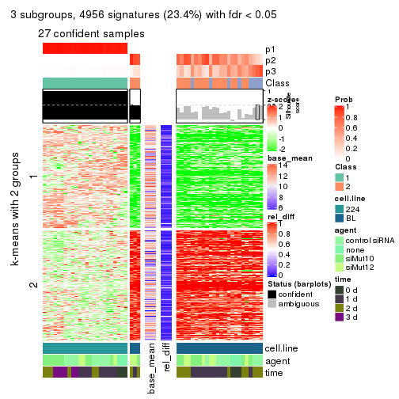
get_signatures(res, k = 4)
get_signatures(res, k = 5)

get_signatures(res, k = 6)

Signature heatmaps where rows are not scaled:
get_signatures(res, k = 2, scale_rows = FALSE)

get_signatures(res, k = 3, scale_rows = FALSE)
get_signatures(res, k = 4, scale_rows = FALSE)
get_signatures(res, k = 5, scale_rows = FALSE)

get_signatures(res, k = 6, scale_rows = FALSE)

Compare the overlap of signatures from different k:
compare_signatures(res)
get_signature() returns a data frame invisibly. TO get the list of signatures, the function
call should be assigned to a variable explicitly. In following code, if plot argument is set
to FALSE, no heatmap is plotted while only the differential analysis is performed.
# code only for demonstration
tb = get_signature(res, k = ..., plot = FALSE)
An example of the output of tb is:
#> which_row fdr mean_1 mean_2 scaled_mean_1 scaled_mean_2 km
#> 1 38 0.042760348 8.373488 9.131774 -0.5533452 0.5164555 1
#> 2 40 0.018707592 7.106213 8.469186 -0.6173731 0.5762149 1
#> 3 55 0.019134737 10.221463 11.207825 -0.6159697 0.5749050 1
#> 4 59 0.006059896 5.921854 7.869574 -0.6899429 0.6439467 1
#> 5 60 0.018055526 8.928898 10.211722 -0.6204761 0.5791110 1
#> 6 98 0.009384629 15.714769 14.887706 0.6635654 -0.6193277 2
...
The columns in tb are:
which_row: row indices corresponding to the input matrix.fdr: FDR for the differential test. mean_x: The mean value in group x.scaled_mean_x: The mean value in group x after rows are scaled.km: Row groups if k-means clustering is applied to rows.UMAP plot which shows how samples are separated.
dimension_reduction(res, k = 2, method = "UMAP")
dimension_reduction(res, k = 3, method = "UMAP")
dimension_reduction(res, k = 4, method = "UMAP")
dimension_reduction(res, k = 5, method = "UMAP")
dimension_reduction(res, k = 6, method = "UMAP")
Following heatmap shows how subgroups are split when increasing k:
collect_classes(res)
Test correlation between subgroups and known annotations. If the known annotation is numeric, one-way ANOVA test is applied, and if the known annotation is discrete, chi-squared contingency table test is applied.
test_to_known_factors(res)
#> n cell.line(p) agent(p) time(p) k
#> SD:skmeans 51 6.87e-12 0.528 0.0406 2
#> SD:skmeans 28 8.32e-07 0.261 0.5685 3
#> SD:skmeans 27 2.42e-05 0.125 0.4402 4
#> SD:skmeans 0 NA NA NA 5
#> SD:skmeans 0 NA NA NA 6
If matrix rows can be associated to genes, consider to use GO_Enrichment(res,
...) to perform function enrichment for the signature genes.
The object with results only for a single top-value method and a single partition method can be extracted as:
res = res_list["SD", "pam"]
# you can also extract it by
# res = res_list["SD:pam"]
A summary of res and all the functions that can be applied to it:
res
#> A 'ConsensusPartition' object with k = 2, 3, 4, 5, 6.
#> On a matrix with 21168 rows and 51 columns.
#> Top rows (1000, 2000, 3000, 4000, 5000) are extracted by 'SD' method.
#> Subgroups are detected by 'pam' method.
#> Performed in total 1250 partitions by row resampling.
#> Best k for subgroups seems to be 2.
#>
#> Following methods can be applied to this 'ConsensusPartition' object:
#> [1] "cola_report" "collect_classes" "collect_plots"
#> [4] "collect_stats" "colnames" "compare_signatures"
#> [7] "consensus_heatmap" "dimension_reduction" "functional_enrichment"
#> [10] "get_anno_col" "get_anno" "get_classes"
#> [13] "get_consensus" "get_matrix" "get_membership"
#> [16] "get_param" "get_signatures" "get_stats"
#> [19] "is_best_k" "is_stable_k" "membership_heatmap"
#> [22] "ncol" "nrow" "plot_ecdf"
#> [25] "rownames" "select_partition_number" "show"
#> [28] "suggest_best_k" "test_to_known_factors"
collect_plots() function collects all the plots made from res for all k (number of partitions)
into one single page to provide an easy and fast comparison between different k.
collect_plots(res)
The plots are:
k and the heatmap of
predicted classes for each k.k.k.k.All the plots in panels can be made by individual functions and they are plotted later in this section.
select_partition_number() produces several plots showing different
statistics for choosing “optimized” k. There are following statistics:
k;k, the area increased is defined as \(A_k - A_{k-1}\).The detailed explanations of these statistics can be found in the cola vignette.
Generally speaking, lower PAC score, higher mean silhouette score or higher
concordance corresponds to better partition. Rand index and Jaccard index
measure how similar the current partition is compared to partition with k-1.
If they are too similar, we won't accept k is better than k-1.
select_partition_number(res)
The numeric values for all these statistics can be obtained by get_stats().
get_stats(res)
#> k 1-PAC mean_silhouette concordance area_increased Rand Jaccard
#> 2 2 1.000 1.000 1.000 0.5087 0.492 0.492
#> 3 3 0.743 0.670 0.794 0.1940 0.890 0.777
#> 4 4 0.704 0.644 0.791 0.0529 0.849 0.654
#> 5 5 0.688 0.733 0.815 0.0470 0.896 0.727
#> 6 6 0.673 0.712 0.824 0.0367 0.984 0.948
suggest_best_k() suggests the best \(k\) based on these statistics. The rules are as follows:
NA.suggest_best_k(res)
#> [1] 2
Following shows the table of the partitions (You need to click the show/hide
code output link to see it). The membership matrix (columns with name p*)
is inferred by
clue::cl_consensus()
function with the SE method. Basically the value in the membership matrix
represents the probability to belong to a certain group. The finall class
label for an item is determined with the group with highest probability it
belongs to.
In get_classes() function, the entropy is calculated from the membership
matrix and the silhouette score is calculated from the consensus matrix.
cbind(get_classes(res, k = 2), get_membership(res, k = 2))
#> class entropy silhouette p1 p2
#> GSM312684 1 0 1 1 0
#> GSM312685 1 0 1 1 0
#> GSM312686 1 0 1 1 0
#> GSM312693 1 0 1 1 0
#> GSM312694 1 0 1 1 0
#> GSM312695 1 0 1 1 0
#> GSM312699 1 0 1 1 0
#> GSM312700 1 0 1 1 0
#> GSM312701 1 0 1 1 0
#> GSM312705 1 0 1 1 0
#> GSM312706 1 0 1 1 0
#> GSM312707 1 0 1 1 0
#> GSM312687 1 0 1 1 0
#> GSM312688 1 0 1 1 0
#> GSM312689 1 0 1 1 0
#> GSM312696 1 0 1 1 0
#> GSM312697 1 0 1 1 0
#> GSM312698 1 0 1 1 0
#> GSM312702 1 0 1 1 0
#> GSM312703 1 0 1 1 0
#> GSM312704 1 0 1 1 0
#> GSM312690 1 0 1 1 0
#> GSM312691 1 0 1 1 0
#> GSM312692 1 0 1 1 0
#> GSM312708 2 0 1 0 1
#> GSM312709 2 0 1 0 1
#> GSM312710 2 0 1 0 1
#> GSM312719 2 0 1 0 1
#> GSM312720 2 0 1 0 1
#> GSM312721 2 0 1 0 1
#> GSM312722 2 0 1 0 1
#> GSM312731 2 0 1 0 1
#> GSM312732 2 0 1 0 1
#> GSM312733 2 0 1 0 1
#> GSM312734 2 0 1 0 1
#> GSM312711 2 0 1 0 1
#> GSM312712 2 0 1 0 1
#> GSM312713 2 0 1 0 1
#> GSM312714 2 0 1 0 1
#> GSM312723 2 0 1 0 1
#> GSM312724 2 0 1 0 1
#> GSM312725 2 0 1 0 1
#> GSM312726 2 0 1 0 1
#> GSM312715 2 0 1 0 1
#> GSM312716 2 0 1 0 1
#> GSM312717 2 0 1 0 1
#> GSM312718 2 0 1 0 1
#> GSM312727 2 0 1 0 1
#> GSM312728 2 0 1 0 1
#> GSM312729 2 0 1 0 1
#> GSM312730 2 0 1 0 1
cbind(get_classes(res, k = 3), get_membership(res, k = 3))
#> class entropy silhouette p1 p2 p3
#> GSM312684 1 0.0237 0.987 0.996 0.000 0.004
#> GSM312685 1 0.0000 0.987 1.000 0.000 0.000
#> GSM312686 1 0.0237 0.987 0.996 0.000 0.004
#> GSM312693 1 0.0000 0.987 1.000 0.000 0.000
#> GSM312694 1 0.0000 0.987 1.000 0.000 0.000
#> GSM312695 1 0.0000 0.987 1.000 0.000 0.000
#> GSM312699 1 0.0000 0.987 1.000 0.000 0.000
#> GSM312700 1 0.0237 0.987 0.996 0.000 0.004
#> GSM312701 1 0.0000 0.987 1.000 0.000 0.000
#> GSM312705 1 0.0237 0.987 0.996 0.000 0.004
#> GSM312706 1 0.0000 0.987 1.000 0.000 0.000
#> GSM312707 1 0.0000 0.987 1.000 0.000 0.000
#> GSM312687 1 0.2711 0.922 0.912 0.000 0.088
#> GSM312688 1 0.0592 0.982 0.988 0.000 0.012
#> GSM312689 1 0.0000 0.987 1.000 0.000 0.000
#> GSM312696 1 0.0237 0.987 0.996 0.000 0.004
#> GSM312697 1 0.0000 0.987 1.000 0.000 0.000
#> GSM312698 1 0.0237 0.987 0.996 0.000 0.004
#> GSM312702 1 0.0237 0.987 0.996 0.000 0.004
#> GSM312703 1 0.0000 0.987 1.000 0.000 0.000
#> GSM312704 1 0.0237 0.987 0.996 0.000 0.004
#> GSM312690 1 0.0000 0.987 1.000 0.000 0.000
#> GSM312691 1 0.4887 0.789 0.772 0.000 0.228
#> GSM312692 1 0.0000 0.987 1.000 0.000 0.000
#> GSM312708 2 0.1411 0.575 0.000 0.964 0.036
#> GSM312709 2 0.4346 0.498 0.000 0.816 0.184
#> GSM312710 3 0.6267 0.761 0.000 0.452 0.548
#> GSM312719 2 0.4002 0.536 0.000 0.840 0.160
#> GSM312720 2 0.1643 0.572 0.000 0.956 0.044
#> GSM312721 2 0.4702 0.508 0.000 0.788 0.212
#> GSM312722 2 0.6140 -0.294 0.000 0.596 0.404
#> GSM312731 3 0.6204 0.761 0.000 0.424 0.576
#> GSM312732 3 0.6079 0.770 0.000 0.388 0.612
#> GSM312733 3 0.6307 0.680 0.000 0.488 0.512
#> GSM312734 3 0.6215 0.748 0.000 0.428 0.572
#> GSM312711 2 0.6307 -0.581 0.000 0.512 0.488
#> GSM312712 3 0.6244 0.757 0.000 0.440 0.560
#> GSM312713 2 0.5138 0.503 0.000 0.748 0.252
#> GSM312714 2 0.6299 -0.674 0.000 0.524 0.476
#> GSM312723 3 0.6180 0.774 0.000 0.416 0.584
#> GSM312724 2 0.2625 0.581 0.000 0.916 0.084
#> GSM312725 2 0.2625 0.586 0.000 0.916 0.084
#> GSM312726 2 0.5291 0.466 0.000 0.732 0.268
#> GSM312715 2 0.6291 -0.444 0.000 0.532 0.468
#> GSM312716 2 0.3038 0.588 0.000 0.896 0.104
#> GSM312717 2 0.4002 0.568 0.000 0.840 0.160
#> GSM312718 2 0.2448 0.591 0.000 0.924 0.076
#> GSM312727 2 0.4346 0.564 0.000 0.816 0.184
#> GSM312728 2 0.6225 -0.410 0.000 0.568 0.432
#> GSM312729 2 0.5291 0.480 0.000 0.732 0.268
#> GSM312730 2 0.5905 0.278 0.000 0.648 0.352
cbind(get_classes(res, k = 4), get_membership(res, k = 4))
#> class entropy silhouette p1 p2 p3 p4
#> GSM312684 1 0.0817 0.9480 0.976 0.000 0.000 0.024
#> GSM312685 1 0.0524 0.9459 0.988 0.000 0.008 0.004
#> GSM312686 1 0.0188 0.9517 0.996 0.000 0.000 0.004
#> GSM312693 1 0.0336 0.9516 0.992 0.000 0.000 0.008
#> GSM312694 1 0.0000 0.9512 1.000 0.000 0.000 0.000
#> GSM312695 1 0.0000 0.9512 1.000 0.000 0.000 0.000
#> GSM312699 1 0.0000 0.9512 1.000 0.000 0.000 0.000
#> GSM312700 1 0.1211 0.9392 0.960 0.000 0.000 0.040
#> GSM312701 1 0.0817 0.9477 0.976 0.000 0.000 0.024
#> GSM312705 1 0.1302 0.9364 0.956 0.000 0.000 0.044
#> GSM312706 1 0.0000 0.9512 1.000 0.000 0.000 0.000
#> GSM312707 1 0.0188 0.9517 0.996 0.000 0.000 0.004
#> GSM312687 1 0.6233 0.1837 0.660 0.000 0.216 0.124
#> GSM312688 1 0.3215 0.8256 0.876 0.000 0.032 0.092
#> GSM312689 1 0.0188 0.9507 0.996 0.000 0.000 0.004
#> GSM312696 1 0.0707 0.9496 0.980 0.000 0.000 0.020
#> GSM312697 1 0.1022 0.9430 0.968 0.000 0.000 0.032
#> GSM312698 1 0.1389 0.9329 0.952 0.000 0.000 0.048
#> GSM312702 1 0.1389 0.9329 0.952 0.000 0.000 0.048
#> GSM312703 1 0.0469 0.9512 0.988 0.000 0.000 0.012
#> GSM312704 1 0.0469 0.9512 0.988 0.000 0.000 0.012
#> GSM312690 1 0.0000 0.9512 1.000 0.000 0.000 0.000
#> GSM312691 4 0.4522 0.0000 0.320 0.000 0.000 0.680
#> GSM312692 1 0.0000 0.9512 1.000 0.000 0.000 0.000
#> GSM312708 3 0.4567 0.7574 0.000 0.276 0.716 0.008
#> GSM312709 3 0.5277 0.4943 0.000 0.460 0.532 0.008
#> GSM312710 2 0.2662 0.6053 0.000 0.900 0.084 0.016
#> GSM312719 3 0.5050 0.6461 0.000 0.408 0.588 0.004
#> GSM312720 3 0.4428 0.7572 0.000 0.276 0.720 0.004
#> GSM312721 2 0.5693 -0.4758 0.000 0.504 0.472 0.024
#> GSM312722 2 0.4744 0.4455 0.000 0.736 0.240 0.024
#> GSM312731 2 0.2494 0.5956 0.000 0.916 0.048 0.036
#> GSM312732 2 0.1833 0.6023 0.000 0.944 0.032 0.024
#> GSM312733 2 0.3545 0.5654 0.000 0.828 0.164 0.008
#> GSM312734 2 0.2699 0.6051 0.000 0.904 0.068 0.028
#> GSM312711 2 0.4418 0.5454 0.000 0.784 0.184 0.032
#> GSM312712 2 0.2635 0.6110 0.000 0.904 0.076 0.020
#> GSM312713 2 0.5850 -0.4578 0.000 0.512 0.456 0.032
#> GSM312714 2 0.3486 0.5571 0.000 0.812 0.188 0.000
#> GSM312723 2 0.2319 0.5999 0.000 0.924 0.036 0.040
#> GSM312724 3 0.4955 0.7572 0.000 0.344 0.648 0.008
#> GSM312725 3 0.5414 0.7199 0.000 0.376 0.604 0.020
#> GSM312726 2 0.5847 -0.3017 0.000 0.560 0.404 0.036
#> GSM312715 2 0.4079 0.5216 0.000 0.800 0.180 0.020
#> GSM312716 3 0.5253 0.7512 0.000 0.360 0.624 0.016
#> GSM312717 3 0.5921 0.5914 0.000 0.448 0.516 0.036
#> GSM312718 3 0.4973 0.7418 0.000 0.348 0.644 0.008
#> GSM312727 3 0.5971 0.5789 0.000 0.428 0.532 0.040
#> GSM312728 2 0.4500 0.4985 0.000 0.776 0.192 0.032
#> GSM312729 2 0.6060 -0.3992 0.000 0.516 0.440 0.044
#> GSM312730 2 0.5713 0.0117 0.000 0.620 0.340 0.040
cbind(get_classes(res, k = 5), get_membership(res, k = 5))
#> class entropy silhouette p1 p2 p3 p4 p5
#> GSM312684 1 0.1041 0.941 0.964 0.000 0.032 0.000 0.004
#> GSM312685 1 0.1901 0.876 0.928 0.000 0.004 0.056 0.012
#> GSM312686 1 0.0162 0.947 0.996 0.000 0.000 0.000 0.004
#> GSM312693 1 0.0290 0.947 0.992 0.000 0.008 0.000 0.000
#> GSM312694 1 0.0000 0.946 1.000 0.000 0.000 0.000 0.000
#> GSM312695 1 0.0162 0.947 0.996 0.000 0.004 0.000 0.000
#> GSM312699 1 0.0000 0.946 1.000 0.000 0.000 0.000 0.000
#> GSM312700 1 0.1502 0.928 0.940 0.000 0.056 0.000 0.004
#> GSM312701 1 0.0963 0.941 0.964 0.000 0.036 0.000 0.000
#> GSM312705 1 0.1430 0.931 0.944 0.000 0.052 0.000 0.004
#> GSM312706 1 0.0000 0.946 1.000 0.000 0.000 0.000 0.000
#> GSM312707 1 0.0162 0.947 0.996 0.000 0.004 0.000 0.000
#> GSM312687 5 0.3661 0.000 0.276 0.000 0.000 0.000 0.724
#> GSM312688 1 0.6669 0.293 0.624 0.000 0.136 0.108 0.132
#> GSM312689 1 0.0290 0.946 0.992 0.000 0.008 0.000 0.000
#> GSM312696 1 0.1041 0.942 0.964 0.000 0.032 0.000 0.004
#> GSM312697 1 0.1121 0.937 0.956 0.000 0.044 0.000 0.000
#> GSM312698 1 0.1704 0.919 0.928 0.000 0.068 0.000 0.004
#> GSM312702 1 0.1704 0.919 0.928 0.000 0.068 0.000 0.004
#> GSM312703 1 0.0404 0.947 0.988 0.000 0.012 0.000 0.000
#> GSM312704 1 0.0671 0.946 0.980 0.000 0.016 0.000 0.004
#> GSM312690 1 0.0000 0.946 1.000 0.000 0.000 0.000 0.000
#> GSM312691 3 0.3074 0.000 0.196 0.000 0.804 0.000 0.000
#> GSM312692 1 0.0000 0.946 1.000 0.000 0.000 0.000 0.000
#> GSM312708 2 0.1300 0.699 0.000 0.956 0.000 0.028 0.016
#> GSM312709 2 0.3934 0.507 0.000 0.740 0.000 0.244 0.016
#> GSM312710 4 0.3890 0.768 0.000 0.252 0.000 0.736 0.012
#> GSM312719 2 0.3169 0.664 0.000 0.840 0.004 0.140 0.016
#> GSM312720 2 0.0912 0.697 0.000 0.972 0.000 0.016 0.012
#> GSM312721 2 0.4291 0.541 0.000 0.704 0.004 0.276 0.016
#> GSM312722 4 0.4922 0.485 0.000 0.424 0.004 0.552 0.020
#> GSM312731 4 0.4087 0.760 0.000 0.208 0.000 0.756 0.036
#> GSM312732 4 0.4790 0.744 0.000 0.204 0.024 0.732 0.040
#> GSM312733 4 0.4743 0.723 0.000 0.332 0.004 0.640 0.024
#> GSM312734 4 0.4625 0.752 0.000 0.244 0.008 0.712 0.036
#> GSM312711 4 0.4890 0.682 0.000 0.340 0.008 0.628 0.024
#> GSM312712 4 0.3715 0.766 0.000 0.260 0.000 0.736 0.004
#> GSM312713 2 0.4952 0.587 0.000 0.688 0.008 0.252 0.052
#> GSM312714 4 0.4354 0.704 0.000 0.368 0.000 0.624 0.008
#> GSM312723 4 0.5125 0.739 0.000 0.220 0.016 0.700 0.064
#> GSM312724 2 0.2550 0.708 0.000 0.892 0.004 0.084 0.020
#> GSM312725 2 0.2990 0.714 0.000 0.876 0.012 0.080 0.032
#> GSM312726 2 0.5622 0.463 0.000 0.620 0.012 0.292 0.076
#> GSM312715 4 0.5036 0.583 0.000 0.372 0.004 0.592 0.032
#> GSM312716 2 0.2953 0.712 0.000 0.868 0.004 0.100 0.028
#> GSM312717 2 0.4574 0.673 0.000 0.756 0.012 0.172 0.060
#> GSM312718 2 0.2513 0.704 0.000 0.876 0.000 0.116 0.008
#> GSM312727 2 0.4416 0.676 0.000 0.776 0.016 0.152 0.056
#> GSM312728 4 0.5790 0.558 0.000 0.392 0.012 0.532 0.064
#> GSM312729 2 0.5265 0.562 0.000 0.668 0.012 0.256 0.064
#> GSM312730 2 0.5890 0.210 0.000 0.544 0.016 0.372 0.068
cbind(get_classes(res, k = 6), get_membership(res, k = 6))
#> class entropy silhouette p1 p2 p3 p4 p5 p6
#> GSM312684 1 0.1082 0.934 0.956 0.000 0.000 0.000 0.004 0.040
#> GSM312685 1 0.4907 0.293 0.668 0.000 0.000 0.092 0.012 0.228
#> GSM312686 1 0.0291 0.944 0.992 0.000 0.000 0.000 0.004 0.004
#> GSM312693 1 0.0260 0.944 0.992 0.000 0.000 0.000 0.000 0.008
#> GSM312694 1 0.0000 0.943 1.000 0.000 0.000 0.000 0.000 0.000
#> GSM312695 1 0.0291 0.943 0.992 0.000 0.000 0.000 0.004 0.004
#> GSM312699 1 0.0000 0.943 1.000 0.000 0.000 0.000 0.000 0.000
#> GSM312700 1 0.1657 0.915 0.928 0.000 0.000 0.000 0.016 0.056
#> GSM312701 1 0.1049 0.936 0.960 0.000 0.000 0.000 0.008 0.032
#> GSM312705 1 0.1563 0.918 0.932 0.000 0.000 0.000 0.012 0.056
#> GSM312706 1 0.0000 0.943 1.000 0.000 0.000 0.000 0.000 0.000
#> GSM312707 1 0.0146 0.944 0.996 0.000 0.000 0.000 0.000 0.004
#> GSM312687 5 0.1910 0.000 0.108 0.000 0.000 0.000 0.892 0.000
#> GSM312688 6 0.3198 0.000 0.260 0.000 0.000 0.000 0.000 0.740
#> GSM312689 1 0.0436 0.943 0.988 0.000 0.004 0.000 0.004 0.004
#> GSM312696 1 0.0865 0.939 0.964 0.000 0.000 0.000 0.000 0.036
#> GSM312697 1 0.1082 0.934 0.956 0.000 0.000 0.000 0.004 0.040
#> GSM312698 1 0.1802 0.905 0.916 0.000 0.000 0.000 0.012 0.072
#> GSM312702 1 0.1802 0.905 0.916 0.000 0.000 0.000 0.012 0.072
#> GSM312703 1 0.0458 0.944 0.984 0.000 0.000 0.000 0.000 0.016
#> GSM312704 1 0.0547 0.944 0.980 0.000 0.000 0.000 0.000 0.020
#> GSM312690 1 0.0000 0.943 1.000 0.000 0.000 0.000 0.000 0.000
#> GSM312691 3 0.2260 0.000 0.140 0.000 0.860 0.000 0.000 0.000
#> GSM312692 1 0.0146 0.943 0.996 0.000 0.000 0.000 0.004 0.000
#> GSM312708 2 0.1218 0.700 0.000 0.956 0.012 0.028 0.004 0.000
#> GSM312709 2 0.3848 0.465 0.000 0.692 0.012 0.292 0.004 0.000
#> GSM312710 4 0.3121 0.768 0.000 0.192 0.008 0.796 0.004 0.000
#> GSM312719 2 0.3073 0.661 0.000 0.816 0.016 0.164 0.004 0.000
#> GSM312720 2 0.1074 0.697 0.000 0.960 0.012 0.028 0.000 0.000
#> GSM312721 2 0.3954 0.540 0.000 0.688 0.012 0.292 0.008 0.000
#> GSM312722 4 0.4345 0.489 0.000 0.372 0.012 0.604 0.012 0.000
#> GSM312731 4 0.3192 0.761 0.000 0.136 0.020 0.828 0.016 0.000
#> GSM312732 4 0.4520 0.714 0.000 0.120 0.044 0.772 0.040 0.024
#> GSM312733 4 0.4001 0.733 0.000 0.268 0.020 0.704 0.008 0.000
#> GSM312734 4 0.3844 0.754 0.000 0.192 0.028 0.764 0.016 0.000
#> GSM312711 4 0.4416 0.679 0.000 0.288 0.032 0.668 0.012 0.000
#> GSM312712 4 0.3023 0.768 0.000 0.212 0.000 0.784 0.004 0.000
#> GSM312713 2 0.4586 0.605 0.000 0.688 0.060 0.240 0.012 0.000
#> GSM312714 4 0.3684 0.716 0.000 0.300 0.004 0.692 0.004 0.000
#> GSM312723 4 0.4488 0.740 0.000 0.168 0.072 0.736 0.024 0.000
#> GSM312724 2 0.2555 0.706 0.000 0.876 0.020 0.096 0.008 0.000
#> GSM312725 2 0.2719 0.712 0.000 0.876 0.040 0.072 0.012 0.000
#> GSM312726 2 0.5389 0.472 0.000 0.596 0.076 0.300 0.028 0.000
#> GSM312715 4 0.4588 0.586 0.000 0.320 0.040 0.632 0.008 0.000
#> GSM312716 2 0.2781 0.711 0.000 0.860 0.024 0.108 0.008 0.000
#> GSM312717 2 0.4313 0.667 0.000 0.744 0.060 0.176 0.020 0.000
#> GSM312718 2 0.2544 0.694 0.000 0.852 0.004 0.140 0.004 0.000
#> GSM312727 2 0.4053 0.679 0.000 0.776 0.064 0.140 0.020 0.000
#> GSM312728 4 0.5160 0.592 0.000 0.324 0.056 0.596 0.024 0.000
#> GSM312729 2 0.5027 0.540 0.000 0.640 0.068 0.272 0.020 0.000
#> GSM312730 2 0.5562 0.180 0.000 0.508 0.076 0.392 0.024 0.000
Heatmaps for the consensus matrix. It visualizes the probability of two samples to be in a same group.
consensus_heatmap(res, k = 2)

consensus_heatmap(res, k = 3)
consensus_heatmap(res, k = 4)
consensus_heatmap(res, k = 5)
consensus_heatmap(res, k = 6)
Heatmaps for the membership of samples in all partitions to see how consistent they are:
membership_heatmap(res, k = 2)

membership_heatmap(res, k = 3)
membership_heatmap(res, k = 4)
membership_heatmap(res, k = 5)
membership_heatmap(res, k = 6)
As soon as we have had the classes for columns, we can look for signatures which are significantly different between classes which can be candidate marks for certain classes. Following are the heatmaps for signatures.
Signature heatmaps where rows are scaled:
get_signatures(res, k = 2)

get_signatures(res, k = 3)
get_signatures(res, k = 4)
get_signatures(res, k = 5)
get_signatures(res, k = 6)
Signature heatmaps where rows are not scaled:
get_signatures(res, k = 2, scale_rows = FALSE)

get_signatures(res, k = 3, scale_rows = FALSE)
get_signatures(res, k = 4, scale_rows = FALSE)
get_signatures(res, k = 5, scale_rows = FALSE)
get_signatures(res, k = 6, scale_rows = FALSE)
Compare the overlap of signatures from different k:
compare_signatures(res)
get_signature() returns a data frame invisibly. TO get the list of signatures, the function
call should be assigned to a variable explicitly. In following code, if plot argument is set
to FALSE, no heatmap is plotted while only the differential analysis is performed.
# code only for demonstration
tb = get_signature(res, k = ..., plot = FALSE)
An example of the output of tb is:
#> which_row fdr mean_1 mean_2 scaled_mean_1 scaled_mean_2 km
#> 1 38 0.042760348 8.373488 9.131774 -0.5533452 0.5164555 1
#> 2 40 0.018707592 7.106213 8.469186 -0.6173731 0.5762149 1
#> 3 55 0.019134737 10.221463 11.207825 -0.6159697 0.5749050 1
#> 4 59 0.006059896 5.921854 7.869574 -0.6899429 0.6439467 1
#> 5 60 0.018055526 8.928898 10.211722 -0.6204761 0.5791110 1
#> 6 98 0.009384629 15.714769 14.887706 0.6635654 -0.6193277 2
...
The columns in tb are:
which_row: row indices corresponding to the input matrix.fdr: FDR for the differential test. mean_x: The mean value in group x.scaled_mean_x: The mean value in group x after rows are scaled.km: Row groups if k-means clustering is applied to rows.UMAP plot which shows how samples are separated.
dimension_reduction(res, k = 2, method = "UMAP")
dimension_reduction(res, k = 3, method = "UMAP")
dimension_reduction(res, k = 4, method = "UMAP")
dimension_reduction(res, k = 5, method = "UMAP")
dimension_reduction(res, k = 6, method = "UMAP")
Following heatmap shows how subgroups are split when increasing k:
collect_classes(res)
Test correlation between subgroups and known annotations. If the known annotation is numeric, one-way ANOVA test is applied, and if the known annotation is discrete, chi-squared contingency table test is applied.
test_to_known_factors(res)
#> n cell.line(p) agent(p) time(p) k
#> SD:pam 51 6.87e-12 0.528 0.0406 2
#> SD:pam 42 7.58e-10 0.495 0.0890 3
#> SD:pam 41 1.25e-09 0.390 0.2996 4
#> SD:pam 45 1.69e-10 0.560 0.1283 5
#> SD:pam 43 4.60e-10 0.573 0.1379 6
If matrix rows can be associated to genes, consider to use GO_Enrichment(res,
...) to perform function enrichment for the signature genes.
The object with results only for a single top-value method and a single partition method can be extracted as:
res = res_list["SD", "mclust"]
# you can also extract it by
# res = res_list["SD:mclust"]
A summary of res and all the functions that can be applied to it:
res
#> A 'ConsensusPartition' object with k = 2, 3, 4, 5, 6.
#> On a matrix with 21168 rows and 51 columns.
#> Top rows (1000, 2000, 3000, 4000, 5000) are extracted by 'SD' method.
#> Subgroups are detected by 'mclust' method.
#> Performed in total 1250 partitions by row resampling.
#> Best k for subgroups seems to be 2.
#>
#> Following methods can be applied to this 'ConsensusPartition' object:
#> [1] "cola_report" "collect_classes" "collect_plots"
#> [4] "collect_stats" "colnames" "compare_signatures"
#> [7] "consensus_heatmap" "dimension_reduction" "functional_enrichment"
#> [10] "get_anno_col" "get_anno" "get_classes"
#> [13] "get_consensus" "get_matrix" "get_membership"
#> [16] "get_param" "get_signatures" "get_stats"
#> [19] "is_best_k" "is_stable_k" "membership_heatmap"
#> [22] "ncol" "nrow" "plot_ecdf"
#> [25] "rownames" "select_partition_number" "show"
#> [28] "suggest_best_k" "test_to_known_factors"
collect_plots() function collects all the plots made from res for all k (number of partitions)
into one single page to provide an easy and fast comparison between different k.
collect_plots(res)
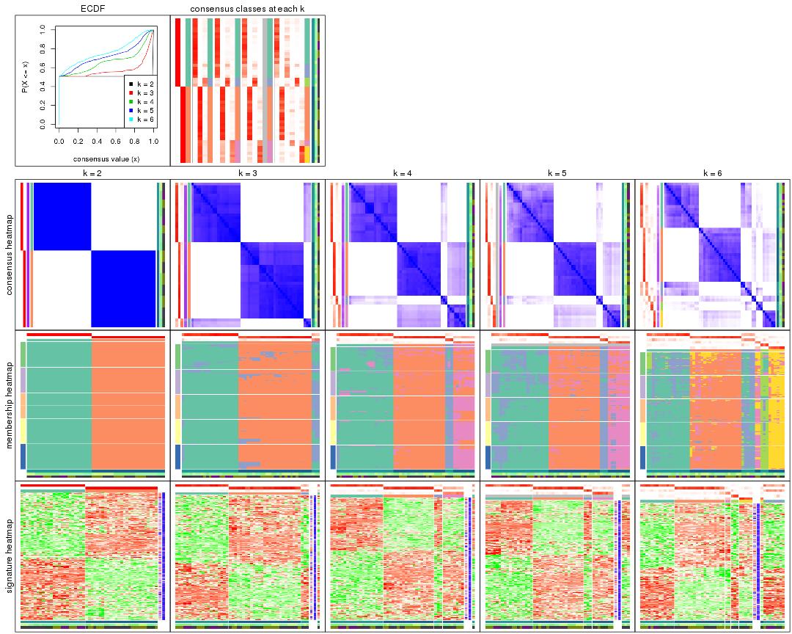
The plots are:
k and the heatmap of
predicted classes for each k.k.k.k.All the plots in panels can be made by individual functions and they are plotted later in this section.
select_partition_number() produces several plots showing different
statistics for choosing “optimized” k. There are following statistics:
k;k, the area increased is defined as \(A_k - A_{k-1}\).The detailed explanations of these statistics can be found in the cola vignette.
Generally speaking, lower PAC score, higher mean silhouette score or higher
concordance corresponds to better partition. Rand index and Jaccard index
measure how similar the current partition is compared to partition with k-1.
If they are too similar, we won't accept k is better than k-1.
select_partition_number(res)
The numeric values for all these statistics can be obtained by get_stats().
get_stats(res)
#> k 1-PAC mean_silhouette concordance area_increased Rand Jaccard
#> 2 2 1.000 1.000 1.000 0.5087 0.492 0.492
#> 3 3 0.838 0.904 0.926 0.1310 0.951 0.900
#> 4 4 0.670 0.857 0.862 0.1559 0.881 0.730
#> 5 5 0.606 0.771 0.812 0.0888 1.000 1.000
#> 6 6 0.614 0.647 0.777 0.0588 0.928 0.777
suggest_best_k() suggests the best \(k\) based on these statistics. The rules are as follows:
NA.suggest_best_k(res)
#> [1] 2
Following shows the table of the partitions (You need to click the show/hide
code output link to see it). The membership matrix (columns with name p*)
is inferred by
clue::cl_consensus()
function with the SE method. Basically the value in the membership matrix
represents the probability to belong to a certain group. The finall class
label for an item is determined with the group with highest probability it
belongs to.
In get_classes() function, the entropy is calculated from the membership
matrix and the silhouette score is calculated from the consensus matrix.
cbind(get_classes(res, k = 2), get_membership(res, k = 2))
#> class entropy silhouette p1 p2
#> GSM312684 1 0 1 1 0
#> GSM312685 1 0 1 1 0
#> GSM312686 1 0 1 1 0
#> GSM312693 1 0 1 1 0
#> GSM312694 1 0 1 1 0
#> GSM312695 1 0 1 1 0
#> GSM312699 1 0 1 1 0
#> GSM312700 1 0 1 1 0
#> GSM312701 1 0 1 1 0
#> GSM312705 1 0 1 1 0
#> GSM312706 1 0 1 1 0
#> GSM312707 1 0 1 1 0
#> GSM312687 1 0 1 1 0
#> GSM312688 1 0 1 1 0
#> GSM312689 1 0 1 1 0
#> GSM312696 1 0 1 1 0
#> GSM312697 1 0 1 1 0
#> GSM312698 1 0 1 1 0
#> GSM312702 1 0 1 1 0
#> GSM312703 1 0 1 1 0
#> GSM312704 1 0 1 1 0
#> GSM312690 1 0 1 1 0
#> GSM312691 1 0 1 1 0
#> GSM312692 1 0 1 1 0
#> GSM312708 2 0 1 0 1
#> GSM312709 2 0 1 0 1
#> GSM312710 2 0 1 0 1
#> GSM312719 2 0 1 0 1
#> GSM312720 2 0 1 0 1
#> GSM312721 2 0 1 0 1
#> GSM312722 2 0 1 0 1
#> GSM312731 2 0 1 0 1
#> GSM312732 2 0 1 0 1
#> GSM312733 2 0 1 0 1
#> GSM312734 2 0 1 0 1
#> GSM312711 2 0 1 0 1
#> GSM312712 2 0 1 0 1
#> GSM312713 2 0 1 0 1
#> GSM312714 2 0 1 0 1
#> GSM312723 2 0 1 0 1
#> GSM312724 2 0 1 0 1
#> GSM312725 2 0 1 0 1
#> GSM312726 2 0 1 0 1
#> GSM312715 2 0 1 0 1
#> GSM312716 2 0 1 0 1
#> GSM312717 2 0 1 0 1
#> GSM312718 2 0 1 0 1
#> GSM312727 2 0 1 0 1
#> GSM312728 2 0 1 0 1
#> GSM312729 2 0 1 0 1
#> GSM312730 2 0 1 0 1
cbind(get_classes(res, k = 3), get_membership(res, k = 3))
#> class entropy silhouette p1 p2 p3
#> GSM312684 1 0.2066 0.907 0.940 0.000 0.060
#> GSM312685 3 0.5706 0.839 0.320 0.000 0.680
#> GSM312686 1 0.2261 0.898 0.932 0.000 0.068
#> GSM312693 1 0.1753 0.912 0.952 0.000 0.048
#> GSM312694 1 0.2625 0.887 0.916 0.000 0.084
#> GSM312695 1 0.2959 0.870 0.900 0.000 0.100
#> GSM312699 1 0.1163 0.921 0.972 0.000 0.028
#> GSM312700 1 0.1860 0.909 0.948 0.000 0.052
#> GSM312701 1 0.1031 0.920 0.976 0.000 0.024
#> GSM312705 1 0.0892 0.921 0.980 0.000 0.020
#> GSM312706 1 0.0592 0.921 0.988 0.000 0.012
#> GSM312707 1 0.0237 0.921 0.996 0.000 0.004
#> GSM312687 3 0.5591 0.845 0.304 0.000 0.696
#> GSM312688 1 0.5591 0.162 0.696 0.000 0.304
#> GSM312689 1 0.2066 0.904 0.940 0.000 0.060
#> GSM312696 1 0.1163 0.918 0.972 0.000 0.028
#> GSM312697 1 0.0747 0.918 0.984 0.000 0.016
#> GSM312698 1 0.0747 0.918 0.984 0.000 0.016
#> GSM312702 1 0.1163 0.914 0.972 0.000 0.028
#> GSM312703 1 0.0892 0.916 0.980 0.000 0.020
#> GSM312704 1 0.1031 0.916 0.976 0.000 0.024
#> GSM312690 1 0.2878 0.874 0.904 0.000 0.096
#> GSM312691 3 0.6260 0.684 0.448 0.000 0.552
#> GSM312692 1 0.1753 0.913 0.952 0.000 0.048
#> GSM312708 2 0.3038 0.924 0.000 0.896 0.104
#> GSM312709 2 0.3038 0.924 0.000 0.896 0.104
#> GSM312710 2 0.3116 0.922 0.000 0.892 0.108
#> GSM312719 2 0.1031 0.955 0.000 0.976 0.024
#> GSM312720 2 0.0424 0.955 0.000 0.992 0.008
#> GSM312721 2 0.0592 0.955 0.000 0.988 0.012
#> GSM312722 2 0.0424 0.955 0.000 0.992 0.008
#> GSM312731 2 0.0424 0.956 0.000 0.992 0.008
#> GSM312732 2 0.4452 0.859 0.000 0.808 0.192
#> GSM312733 2 0.3941 0.890 0.000 0.844 0.156
#> GSM312734 2 0.3816 0.897 0.000 0.852 0.148
#> GSM312711 2 0.1860 0.949 0.000 0.948 0.052
#> GSM312712 2 0.1031 0.957 0.000 0.976 0.024
#> GSM312713 2 0.2625 0.933 0.000 0.916 0.084
#> GSM312714 2 0.0892 0.956 0.000 0.980 0.020
#> GSM312723 2 0.1529 0.952 0.000 0.960 0.040
#> GSM312724 2 0.1289 0.952 0.000 0.968 0.032
#> GSM312725 2 0.1964 0.942 0.000 0.944 0.056
#> GSM312726 2 0.1411 0.951 0.000 0.964 0.036
#> GSM312715 2 0.3038 0.923 0.000 0.896 0.104
#> GSM312716 2 0.0747 0.956 0.000 0.984 0.016
#> GSM312717 2 0.0747 0.955 0.000 0.984 0.016
#> GSM312718 2 0.0237 0.956 0.000 0.996 0.004
#> GSM312727 2 0.0592 0.956 0.000 0.988 0.012
#> GSM312728 2 0.1860 0.946 0.000 0.948 0.052
#> GSM312729 2 0.0747 0.955 0.000 0.984 0.016
#> GSM312730 2 0.1860 0.944 0.000 0.948 0.052
cbind(get_classes(res, k = 4), get_membership(res, k = 4))
#> class entropy silhouette p1 p2 p3 p4
#> GSM312684 1 0.2830 0.868 0.900 0.000 0.040 0.060
#> GSM312685 3 0.4485 0.838 0.152 0.000 0.796 0.052
#> GSM312686 1 0.3088 0.861 0.888 0.000 0.052 0.060
#> GSM312693 1 0.1913 0.883 0.940 0.000 0.020 0.040
#> GSM312694 1 0.3217 0.844 0.860 0.000 0.128 0.012
#> GSM312695 1 0.3450 0.821 0.836 0.000 0.156 0.008
#> GSM312699 1 0.1733 0.888 0.948 0.000 0.028 0.024
#> GSM312700 1 0.2706 0.874 0.900 0.000 0.080 0.020
#> GSM312701 1 0.1677 0.885 0.948 0.000 0.040 0.012
#> GSM312705 1 0.1798 0.886 0.944 0.000 0.040 0.016
#> GSM312706 1 0.1629 0.887 0.952 0.000 0.024 0.024
#> GSM312707 1 0.1284 0.887 0.964 0.000 0.012 0.024
#> GSM312687 3 0.2149 0.845 0.088 0.000 0.912 0.000
#> GSM312688 1 0.5364 0.210 0.592 0.000 0.392 0.016
#> GSM312689 1 0.3335 0.849 0.860 0.000 0.120 0.020
#> GSM312696 1 0.1913 0.883 0.940 0.000 0.040 0.020
#> GSM312697 1 0.2670 0.864 0.908 0.000 0.052 0.040
#> GSM312698 1 0.1833 0.880 0.944 0.000 0.032 0.024
#> GSM312702 1 0.3009 0.858 0.892 0.000 0.056 0.052
#> GSM312703 1 0.3009 0.858 0.892 0.000 0.056 0.052
#> GSM312704 1 0.2926 0.860 0.896 0.000 0.056 0.048
#> GSM312690 1 0.3790 0.796 0.820 0.000 0.164 0.016
#> GSM312691 3 0.4086 0.785 0.216 0.000 0.776 0.008
#> GSM312692 1 0.2530 0.865 0.896 0.000 0.100 0.004
#> GSM312708 4 0.4746 0.852 0.000 0.368 0.000 0.632
#> GSM312709 4 0.4790 0.851 0.000 0.380 0.000 0.620
#> GSM312710 4 0.4955 0.789 0.000 0.444 0.000 0.556
#> GSM312719 2 0.1867 0.911 0.000 0.928 0.000 0.072
#> GSM312720 2 0.1118 0.928 0.000 0.964 0.000 0.036
#> GSM312721 2 0.1022 0.928 0.000 0.968 0.000 0.032
#> GSM312722 2 0.1389 0.926 0.000 0.952 0.000 0.048
#> GSM312731 2 0.1022 0.926 0.000 0.968 0.000 0.032
#> GSM312732 4 0.5182 0.762 0.000 0.288 0.028 0.684
#> GSM312733 4 0.5093 0.785 0.000 0.348 0.012 0.640
#> GSM312734 4 0.4356 0.821 0.000 0.292 0.000 0.708
#> GSM312711 2 0.2868 0.783 0.000 0.864 0.000 0.136
#> GSM312712 2 0.1792 0.906 0.000 0.932 0.000 0.068
#> GSM312713 4 0.4955 0.815 0.000 0.444 0.000 0.556
#> GSM312714 2 0.2408 0.830 0.000 0.896 0.000 0.104
#> GSM312723 2 0.2546 0.877 0.000 0.900 0.008 0.092
#> GSM312724 2 0.0921 0.922 0.000 0.972 0.000 0.028
#> GSM312725 2 0.1211 0.915 0.000 0.960 0.000 0.040
#> GSM312726 2 0.1022 0.922 0.000 0.968 0.000 0.032
#> GSM312715 4 0.4898 0.845 0.000 0.416 0.000 0.584
#> GSM312716 2 0.1302 0.921 0.000 0.956 0.000 0.044
#> GSM312717 2 0.0921 0.930 0.000 0.972 0.000 0.028
#> GSM312718 2 0.1389 0.923 0.000 0.952 0.000 0.048
#> GSM312727 2 0.0817 0.929 0.000 0.976 0.000 0.024
#> GSM312728 2 0.2053 0.901 0.000 0.924 0.004 0.072
#> GSM312729 2 0.1474 0.922 0.000 0.948 0.000 0.052
#> GSM312730 2 0.1211 0.915 0.000 0.960 0.000 0.040
cbind(get_classes(res, k = 5), get_membership(res, k = 5))
#> class entropy silhouette p1 p2 p3 p4 p5
#> GSM312684 1 0.3615 0.7187 0.808 0.000 0.036 0.000 NA
#> GSM312685 3 0.4063 0.7857 0.084 0.000 0.800 0.004 NA
#> GSM312686 1 0.4418 0.7020 0.756 0.000 0.060 0.004 NA
#> GSM312693 1 0.2305 0.7618 0.896 0.000 0.012 0.000 NA
#> GSM312694 1 0.3875 0.7310 0.804 0.000 0.124 0.000 NA
#> GSM312695 1 0.3970 0.7109 0.788 0.000 0.156 0.000 NA
#> GSM312699 1 0.1041 0.7733 0.964 0.000 0.004 0.000 NA
#> GSM312700 1 0.4170 0.7357 0.780 0.000 0.080 0.000 NA
#> GSM312701 1 0.2172 0.7763 0.908 0.000 0.016 0.000 NA
#> GSM312705 1 0.2514 0.7680 0.896 0.000 0.044 0.000 NA
#> GSM312706 1 0.1041 0.7761 0.964 0.000 0.004 0.000 NA
#> GSM312707 1 0.1106 0.7750 0.964 0.000 0.012 0.000 NA
#> GSM312687 3 0.1430 0.8305 0.052 0.000 0.944 0.000 NA
#> GSM312688 1 0.6790 -0.0652 0.376 0.000 0.288 0.000 NA
#> GSM312689 1 0.6084 0.4533 0.508 0.000 0.132 0.000 NA
#> GSM312696 1 0.2351 0.7669 0.896 0.000 0.016 0.000 NA
#> GSM312697 1 0.2690 0.7354 0.844 0.000 0.000 0.000 NA
#> GSM312698 1 0.1732 0.7654 0.920 0.000 0.000 0.000 NA
#> GSM312702 1 0.4856 0.5707 0.584 0.000 0.028 0.000 NA
#> GSM312703 1 0.4682 0.6059 0.620 0.000 0.024 0.000 NA
#> GSM312704 1 0.4157 0.6858 0.716 0.000 0.020 0.000 NA
#> GSM312690 1 0.6374 0.3242 0.468 0.000 0.172 0.000 NA
#> GSM312691 3 0.4569 0.7695 0.104 0.000 0.748 0.000 NA
#> GSM312692 1 0.3648 0.7537 0.824 0.000 0.092 0.000 NA
#> GSM312708 4 0.2424 0.8171 0.000 0.132 0.000 0.868 NA
#> GSM312709 4 0.2629 0.8228 0.000 0.136 0.000 0.860 NA
#> GSM312710 4 0.4096 0.7616 0.000 0.260 0.004 0.724 NA
#> GSM312719 2 0.2805 0.8880 0.000 0.872 0.008 0.108 NA
#> GSM312720 2 0.1740 0.9172 0.000 0.932 0.000 0.056 NA
#> GSM312721 2 0.1282 0.9197 0.000 0.952 0.004 0.044 NA
#> GSM312722 2 0.1740 0.9167 0.000 0.932 0.000 0.056 NA
#> GSM312731 2 0.1965 0.9038 0.000 0.904 0.000 0.096 NA
#> GSM312732 4 0.6213 0.6376 0.000 0.136 0.016 0.588 NA
#> GSM312733 4 0.6338 0.6824 0.000 0.196 0.008 0.564 NA
#> GSM312734 4 0.2233 0.7856 0.000 0.080 0.000 0.904 NA
#> GSM312711 2 0.3826 0.7292 0.000 0.752 0.008 0.236 NA
#> GSM312712 2 0.2338 0.8931 0.000 0.884 0.000 0.112 NA
#> GSM312713 4 0.3305 0.8045 0.000 0.224 0.000 0.776 NA
#> GSM312714 2 0.2813 0.8207 0.000 0.832 0.000 0.168 NA
#> GSM312723 2 0.2956 0.8946 0.000 0.884 0.020 0.060 NA
#> GSM312724 2 0.1153 0.9184 0.000 0.964 0.004 0.024 NA
#> GSM312725 2 0.1200 0.9147 0.000 0.964 0.012 0.016 NA
#> GSM312726 2 0.1026 0.9172 0.000 0.968 0.004 0.024 NA
#> GSM312715 4 0.2648 0.8270 0.000 0.152 0.000 0.848 NA
#> GSM312716 2 0.2424 0.8803 0.000 0.868 0.000 0.132 NA
#> GSM312717 2 0.1095 0.9161 0.000 0.968 0.008 0.012 NA
#> GSM312718 2 0.2389 0.8976 0.000 0.880 0.000 0.116 NA
#> GSM312727 2 0.1430 0.9189 0.000 0.944 0.004 0.052 NA
#> GSM312728 2 0.2515 0.9040 0.000 0.908 0.020 0.040 NA
#> GSM312729 2 0.0960 0.9131 0.000 0.972 0.004 0.008 NA
#> GSM312730 2 0.0968 0.9157 0.000 0.972 0.004 0.012 NA
cbind(get_classes(res, k = 6), get_membership(res, k = 6))
#> class entropy silhouette p1 p2 p3 p4 p5 p6
#> GSM312684 1 0.441 0.584 0.768 0.000 0.096 0.032 0.100 0.004
#> GSM312685 5 0.260 0.728 0.032 0.000 0.024 0.056 0.888 0.000
#> GSM312686 1 0.506 0.527 0.712 0.000 0.140 0.044 0.100 0.004
#> GSM312693 1 0.240 0.666 0.900 0.000 0.044 0.008 0.044 0.004
#> GSM312694 1 0.434 0.552 0.728 0.000 0.196 0.004 0.068 0.004
#> GSM312695 1 0.400 0.590 0.772 0.000 0.148 0.004 0.072 0.004
#> GSM312699 1 0.140 0.677 0.940 0.000 0.052 0.000 0.008 0.000
#> GSM312700 1 0.405 0.379 0.664 0.000 0.312 0.000 0.024 0.000
#> GSM312701 1 0.295 0.601 0.820 0.000 0.168 0.004 0.004 0.004
#> GSM312705 1 0.198 0.676 0.916 0.000 0.060 0.008 0.016 0.000
#> GSM312706 1 0.174 0.672 0.920 0.000 0.068 0.000 0.012 0.000
#> GSM312707 1 0.115 0.682 0.956 0.000 0.032 0.000 0.012 0.000
#> GSM312687 5 0.229 0.783 0.036 0.000 0.072 0.000 0.892 0.000
#> GSM312688 3 0.638 0.115 0.308 0.000 0.384 0.012 0.296 0.000
#> GSM312689 3 0.442 0.421 0.360 0.000 0.604 0.000 0.036 0.000
#> GSM312696 1 0.229 0.644 0.876 0.000 0.116 0.004 0.004 0.000
#> GSM312697 1 0.317 0.460 0.744 0.000 0.256 0.000 0.000 0.000
#> GSM312698 1 0.278 0.598 0.824 0.000 0.168 0.000 0.008 0.000
#> GSM312702 3 0.371 0.334 0.380 0.000 0.620 0.000 0.000 0.000
#> GSM312703 3 0.384 0.201 0.452 0.000 0.548 0.000 0.000 0.000
#> GSM312704 1 0.387 -0.192 0.508 0.000 0.492 0.000 0.000 0.000
#> GSM312690 3 0.498 0.447 0.356 0.000 0.572 0.004 0.068 0.000
#> GSM312691 5 0.468 0.656 0.056 0.000 0.268 0.012 0.664 0.000
#> GSM312692 1 0.371 0.582 0.760 0.000 0.204 0.004 0.032 0.000
#> GSM312708 6 0.130 0.724 0.000 0.040 0.000 0.012 0.000 0.948
#> GSM312709 6 0.137 0.734 0.000 0.044 0.000 0.012 0.000 0.944
#> GSM312710 6 0.470 0.433 0.000 0.172 0.012 0.096 0.004 0.716
#> GSM312719 2 0.429 0.766 0.000 0.760 0.040 0.152 0.000 0.048
#> GSM312720 2 0.226 0.857 0.000 0.904 0.008 0.044 0.000 0.044
#> GSM312721 2 0.125 0.860 0.000 0.956 0.008 0.024 0.000 0.012
#> GSM312722 2 0.202 0.860 0.000 0.916 0.008 0.052 0.000 0.024
#> GSM312731 2 0.315 0.837 0.000 0.852 0.016 0.036 0.004 0.092
#> GSM312732 4 0.463 0.706 0.000 0.056 0.004 0.640 0.000 0.300
#> GSM312733 4 0.542 0.696 0.000 0.156 0.000 0.560 0.000 0.284
#> GSM312734 6 0.332 0.633 0.000 0.052 0.000 0.136 0.000 0.812
#> GSM312711 2 0.503 0.677 0.000 0.700 0.024 0.116 0.004 0.156
#> GSM312712 2 0.275 0.838 0.000 0.872 0.012 0.020 0.004 0.092
#> GSM312713 6 0.298 0.673 0.000 0.160 0.000 0.020 0.000 0.820
#> GSM312714 2 0.333 0.763 0.000 0.804 0.004 0.020 0.004 0.168
#> GSM312723 2 0.492 0.593 0.000 0.628 0.056 0.300 0.000 0.016
#> GSM312724 2 0.199 0.862 0.000 0.920 0.004 0.048 0.004 0.024
#> GSM312725 2 0.152 0.855 0.000 0.932 0.008 0.060 0.000 0.000
#> GSM312726 2 0.108 0.859 0.000 0.960 0.000 0.032 0.004 0.004
#> GSM312715 6 0.278 0.739 0.000 0.104 0.000 0.040 0.000 0.856
#> GSM312716 2 0.308 0.820 0.000 0.844 0.000 0.056 0.004 0.096
#> GSM312717 2 0.171 0.856 0.000 0.928 0.012 0.056 0.004 0.000
#> GSM312718 2 0.365 0.829 0.000 0.824 0.032 0.044 0.004 0.096
#> GSM312727 2 0.184 0.856 0.000 0.924 0.004 0.024 0.000 0.048
#> GSM312728 2 0.450 0.607 0.000 0.652 0.060 0.288 0.000 0.000
#> GSM312729 2 0.196 0.848 0.000 0.908 0.008 0.080 0.004 0.000
#> GSM312730 2 0.209 0.854 0.000 0.908 0.000 0.068 0.008 0.016
Heatmaps for the consensus matrix. It visualizes the probability of two samples to be in a same group.
consensus_heatmap(res, k = 2)
consensus_heatmap(res, k = 3)
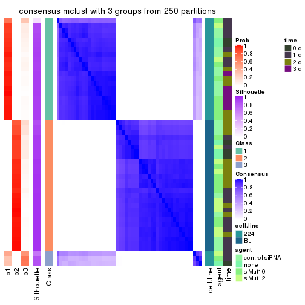
consensus_heatmap(res, k = 4)
consensus_heatmap(res, k = 5)

consensus_heatmap(res, k = 6)
Heatmaps for the membership of samples in all partitions to see how consistent they are:
membership_heatmap(res, k = 2)

membership_heatmap(res, k = 3)
membership_heatmap(res, k = 4)
membership_heatmap(res, k = 5)
membership_heatmap(res, k = 6)
As soon as we have had the classes for columns, we can look for signatures which are significantly different between classes which can be candidate marks for certain classes. Following are the heatmaps for signatures.
Signature heatmaps where rows are scaled:
get_signatures(res, k = 2)

get_signatures(res, k = 3)
get_signatures(res, k = 4)
get_signatures(res, k = 5)
get_signatures(res, k = 6)
Signature heatmaps where rows are not scaled:
get_signatures(res, k = 2, scale_rows = FALSE)

get_signatures(res, k = 3, scale_rows = FALSE)
get_signatures(res, k = 4, scale_rows = FALSE)
get_signatures(res, k = 5, scale_rows = FALSE)
get_signatures(res, k = 6, scale_rows = FALSE)
Compare the overlap of signatures from different k:
compare_signatures(res)
get_signature() returns a data frame invisibly. TO get the list of signatures, the function
call should be assigned to a variable explicitly. In following code, if plot argument is set
to FALSE, no heatmap is plotted while only the differential analysis is performed.
# code only for demonstration
tb = get_signature(res, k = ..., plot = FALSE)
An example of the output of tb is:
#> which_row fdr mean_1 mean_2 scaled_mean_1 scaled_mean_2 km
#> 1 38 0.042760348 8.373488 9.131774 -0.5533452 0.5164555 1
#> 2 40 0.018707592 7.106213 8.469186 -0.6173731 0.5762149 1
#> 3 55 0.019134737 10.221463 11.207825 -0.6159697 0.5749050 1
#> 4 59 0.006059896 5.921854 7.869574 -0.6899429 0.6439467 1
#> 5 60 0.018055526 8.928898 10.211722 -0.6204761 0.5791110 1
#> 6 98 0.009384629 15.714769 14.887706 0.6635654 -0.6193277 2
...
The columns in tb are:
which_row: row indices corresponding to the input matrix.fdr: FDR for the differential test. mean_x: The mean value in group x.scaled_mean_x: The mean value in group x after rows are scaled.km: Row groups if k-means clustering is applied to rows.UMAP plot which shows how samples are separated.
dimension_reduction(res, k = 2, method = "UMAP")

dimension_reduction(res, k = 3, method = "UMAP")
dimension_reduction(res, k = 4, method = "UMAP")
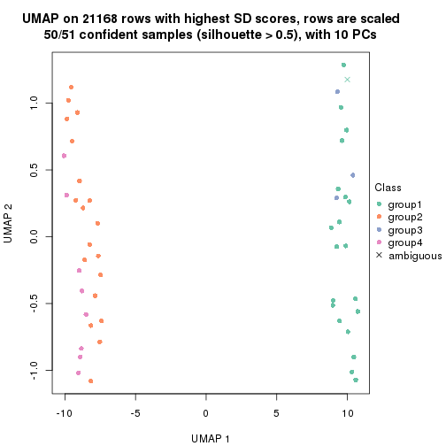
dimension_reduction(res, k = 5, method = "UMAP")
dimension_reduction(res, k = 6, method = "UMAP")
Following heatmap shows how subgroups are split when increasing k:
collect_classes(res)
Test correlation between subgroups and known annotations. If the known annotation is numeric, one-way ANOVA test is applied, and if the known annotation is discrete, chi-squared contingency table test is applied.
test_to_known_factors(res)
#> n cell.line(p) agent(p) time(p) k
#> SD:mclust 51 6.87e-12 0.5277 0.04055 2
#> SD:mclust 50 1.39e-11 0.4924 0.03991 3
#> SD:mclust 50 7.99e-11 0.0974 0.01253 4
#> SD:mclust 48 2.13e-10 0.0667 0.00758 5
#> SD:mclust 42 1.67e-08 0.0958 0.06478 6
If matrix rows can be associated to genes, consider to use GO_Enrichment(res,
...) to perform function enrichment for the signature genes.
The object with results only for a single top-value method and a single partition method can be extracted as:
res = res_list["SD", "NMF"]
# you can also extract it by
# res = res_list["SD:NMF"]
A summary of res and all the functions that can be applied to it:
res
#> A 'ConsensusPartition' object with k = 2, 3, 4, 5, 6.
#> On a matrix with 21168 rows and 51 columns.
#> Top rows (1000, 2000, 3000, 4000, 5000) are extracted by 'SD' method.
#> Subgroups are detected by 'NMF' method.
#> Performed in total 1250 partitions by row resampling.
#> Best k for subgroups seems to be 2.
#>
#> Following methods can be applied to this 'ConsensusPartition' object:
#> [1] "cola_report" "collect_classes" "collect_plots"
#> [4] "collect_stats" "colnames" "compare_signatures"
#> [7] "consensus_heatmap" "dimension_reduction" "functional_enrichment"
#> [10] "get_anno_col" "get_anno" "get_classes"
#> [13] "get_consensus" "get_matrix" "get_membership"
#> [16] "get_param" "get_signatures" "get_stats"
#> [19] "is_best_k" "is_stable_k" "membership_heatmap"
#> [22] "ncol" "nrow" "plot_ecdf"
#> [25] "rownames" "select_partition_number" "show"
#> [28] "suggest_best_k" "test_to_known_factors"
collect_plots() function collects all the plots made from res for all k (number of partitions)
into one single page to provide an easy and fast comparison between different k.
collect_plots(res)
The plots are:
k and the heatmap of
predicted classes for each k.k.k.k.All the plots in panels can be made by individual functions and they are plotted later in this section.
select_partition_number() produces several plots showing different
statistics for choosing “optimized” k. There are following statistics:
k;k, the area increased is defined as \(A_k - A_{k-1}\).The detailed explanations of these statistics can be found in the cola vignette.
Generally speaking, lower PAC score, higher mean silhouette score or higher
concordance corresponds to better partition. Rand index and Jaccard index
measure how similar the current partition is compared to partition with k-1.
If they are too similar, we won't accept k is better than k-1.
select_partition_number(res)
The numeric values for all these statistics can be obtained by get_stats().
get_stats(res)
#> k 1-PAC mean_silhouette concordance area_increased Rand Jaccard
#> 2 2 1.000 1.000 1.000 0.5087 0.492 0.492
#> 3 3 0.833 0.945 0.932 0.1044 1.000 1.000
#> 4 4 0.574 0.695 0.832 0.1228 0.961 0.920
#> 5 5 0.527 0.565 0.763 0.0909 0.926 0.838
#> 6 6 0.514 0.454 0.701 0.0683 0.947 0.862
suggest_best_k() suggests the best \(k\) based on these statistics. The rules are as follows:
NA.suggest_best_k(res)
#> [1] 2
Following shows the table of the partitions (You need to click the show/hide
code output link to see it). The membership matrix (columns with name p*)
is inferred by
clue::cl_consensus()
function with the SE method. Basically the value in the membership matrix
represents the probability to belong to a certain group. The finall class
label for an item is determined with the group with highest probability it
belongs to.
In get_classes() function, the entropy is calculated from the membership
matrix and the silhouette score is calculated from the consensus matrix.
cbind(get_classes(res, k = 2), get_membership(res, k = 2))
#> class entropy silhouette p1 p2
#> GSM312684 1 0 1 1 0
#> GSM312685 1 0 1 1 0
#> GSM312686 1 0 1 1 0
#> GSM312693 1 0 1 1 0
#> GSM312694 1 0 1 1 0
#> GSM312695 1 0 1 1 0
#> GSM312699 1 0 1 1 0
#> GSM312700 1 0 1 1 0
#> GSM312701 1 0 1 1 0
#> GSM312705 1 0 1 1 0
#> GSM312706 1 0 1 1 0
#> GSM312707 1 0 1 1 0
#> GSM312687 1 0 1 1 0
#> GSM312688 1 0 1 1 0
#> GSM312689 1 0 1 1 0
#> GSM312696 1 0 1 1 0
#> GSM312697 1 0 1 1 0
#> GSM312698 1 0 1 1 0
#> GSM312702 1 0 1 1 0
#> GSM312703 1 0 1 1 0
#> GSM312704 1 0 1 1 0
#> GSM312690 1 0 1 1 0
#> GSM312691 1 0 1 1 0
#> GSM312692 1 0 1 1 0
#> GSM312708 2 0 1 0 1
#> GSM312709 2 0 1 0 1
#> GSM312710 2 0 1 0 1
#> GSM312719 2 0 1 0 1
#> GSM312720 2 0 1 0 1
#> GSM312721 2 0 1 0 1
#> GSM312722 2 0 1 0 1
#> GSM312731 2 0 1 0 1
#> GSM312732 2 0 1 0 1
#> GSM312733 2 0 1 0 1
#> GSM312734 2 0 1 0 1
#> GSM312711 2 0 1 0 1
#> GSM312712 2 0 1 0 1
#> GSM312713 2 0 1 0 1
#> GSM312714 2 0 1 0 1
#> GSM312723 2 0 1 0 1
#> GSM312724 2 0 1 0 1
#> GSM312725 2 0 1 0 1
#> GSM312726 2 0 1 0 1
#> GSM312715 2 0 1 0 1
#> GSM312716 2 0 1 0 1
#> GSM312717 2 0 1 0 1
#> GSM312718 2 0 1 0 1
#> GSM312727 2 0 1 0 1
#> GSM312728 2 0 1 0 1
#> GSM312729 2 0 1 0 1
#> GSM312730 2 0 1 0 1
cbind(get_classes(res, k = 3), get_membership(res, k = 3))
#> class entropy silhouette p1 p2 p3
#> GSM312684 1 0.1860 0.970 0.948 0.000 0.052
#> GSM312685 1 0.4062 0.912 0.836 0.000 0.164
#> GSM312686 1 0.2261 0.965 0.932 0.000 0.068
#> GSM312693 1 0.0747 0.974 0.984 0.000 0.016
#> GSM312694 1 0.1529 0.972 0.960 0.000 0.040
#> GSM312695 1 0.2261 0.965 0.932 0.000 0.068
#> GSM312699 1 0.0747 0.973 0.984 0.000 0.016
#> GSM312700 1 0.1411 0.974 0.964 0.000 0.036
#> GSM312701 1 0.1031 0.974 0.976 0.000 0.024
#> GSM312705 1 0.1031 0.974 0.976 0.000 0.024
#> GSM312706 1 0.0592 0.972 0.988 0.000 0.012
#> GSM312707 1 0.1163 0.973 0.972 0.000 0.028
#> GSM312687 1 0.4121 0.913 0.832 0.000 0.168
#> GSM312688 1 0.2625 0.959 0.916 0.000 0.084
#> GSM312689 1 0.1860 0.972 0.948 0.000 0.052
#> GSM312696 1 0.0747 0.975 0.984 0.000 0.016
#> GSM312697 1 0.1163 0.973 0.972 0.000 0.028
#> GSM312698 1 0.0592 0.973 0.988 0.000 0.012
#> GSM312702 1 0.1529 0.973 0.960 0.000 0.040
#> GSM312703 1 0.1529 0.973 0.960 0.000 0.040
#> GSM312704 1 0.1163 0.973 0.972 0.000 0.028
#> GSM312690 1 0.1643 0.973 0.956 0.000 0.044
#> GSM312691 1 0.2878 0.956 0.904 0.000 0.096
#> GSM312692 1 0.1411 0.975 0.964 0.000 0.036
#> GSM312708 2 0.3482 0.920 0.000 0.872 0.128
#> GSM312709 2 0.3686 0.913 0.000 0.860 0.140
#> GSM312710 2 0.2796 0.934 0.000 0.908 0.092
#> GSM312719 2 0.1643 0.944 0.000 0.956 0.044
#> GSM312720 2 0.1411 0.947 0.000 0.964 0.036
#> GSM312721 2 0.1163 0.945 0.000 0.972 0.028
#> GSM312722 2 0.0892 0.947 0.000 0.980 0.020
#> GSM312731 2 0.1529 0.944 0.000 0.960 0.040
#> GSM312732 2 0.5497 0.814 0.000 0.708 0.292
#> GSM312733 2 0.4750 0.867 0.000 0.784 0.216
#> GSM312734 2 0.5650 0.807 0.000 0.688 0.312
#> GSM312711 2 0.1964 0.944 0.000 0.944 0.056
#> GSM312712 2 0.1289 0.945 0.000 0.968 0.032
#> GSM312713 2 0.2796 0.932 0.000 0.908 0.092
#> GSM312714 2 0.0592 0.946 0.000 0.988 0.012
#> GSM312723 2 0.3412 0.919 0.000 0.876 0.124
#> GSM312724 2 0.1031 0.947 0.000 0.976 0.024
#> GSM312725 2 0.2537 0.932 0.000 0.920 0.080
#> GSM312726 2 0.1411 0.944 0.000 0.964 0.036
#> GSM312715 2 0.4062 0.903 0.000 0.836 0.164
#> GSM312716 2 0.0892 0.948 0.000 0.980 0.020
#> GSM312717 2 0.1860 0.941 0.000 0.948 0.052
#> GSM312718 2 0.0892 0.948 0.000 0.980 0.020
#> GSM312727 2 0.1753 0.943 0.000 0.952 0.048
#> GSM312728 2 0.3192 0.919 0.000 0.888 0.112
#> GSM312729 2 0.0747 0.947 0.000 0.984 0.016
#> GSM312730 2 0.0892 0.948 0.000 0.980 0.020
cbind(get_classes(res, k = 4), get_membership(res, k = 4))
#> class entropy silhouette p1 p2 p3 p4
#> GSM312684 1 0.234 0.9146 0.900 0.000 NA 0.000
#> GSM312685 1 0.547 0.7163 0.656 0.000 NA 0.036
#> GSM312686 1 0.298 0.9056 0.872 0.000 NA 0.008
#> GSM312693 1 0.194 0.9220 0.924 0.000 NA 0.000
#> GSM312694 1 0.233 0.9196 0.908 0.000 NA 0.004
#> GSM312695 1 0.374 0.8796 0.824 0.000 NA 0.016
#> GSM312699 1 0.172 0.9219 0.936 0.000 NA 0.000
#> GSM312700 1 0.139 0.9223 0.952 0.000 NA 0.000
#> GSM312701 1 0.187 0.9232 0.928 0.000 NA 0.000
#> GSM312705 1 0.205 0.9249 0.928 0.000 NA 0.008
#> GSM312706 1 0.190 0.9227 0.932 0.000 NA 0.004
#> GSM312707 1 0.227 0.9222 0.912 0.000 NA 0.004
#> GSM312687 1 0.553 0.6940 0.632 0.000 NA 0.032
#> GSM312688 1 0.408 0.8536 0.800 0.000 NA 0.020
#> GSM312689 1 0.286 0.9083 0.880 0.000 NA 0.008
#> GSM312696 1 0.190 0.9232 0.932 0.000 NA 0.004
#> GSM312697 1 0.155 0.9230 0.952 0.000 NA 0.008
#> GSM312698 1 0.158 0.9227 0.948 0.000 NA 0.004
#> GSM312702 1 0.202 0.9228 0.932 0.000 NA 0.012
#> GSM312703 1 0.174 0.9231 0.940 0.000 NA 0.004
#> GSM312704 1 0.197 0.9229 0.932 0.000 NA 0.008
#> GSM312690 1 0.220 0.9224 0.916 0.000 NA 0.004
#> GSM312691 1 0.505 0.7913 0.720 0.000 NA 0.036
#> GSM312692 1 0.233 0.9246 0.908 0.000 NA 0.004
#> GSM312708 2 0.539 0.3462 0.000 0.696 NA 0.256
#> GSM312709 2 0.539 0.2692 0.000 0.680 NA 0.280
#> GSM312710 2 0.471 0.4183 0.000 0.740 NA 0.236
#> GSM312719 2 0.361 0.6477 0.000 0.844 NA 0.132
#> GSM312720 2 0.259 0.6803 0.000 0.904 NA 0.080
#> GSM312721 2 0.310 0.6651 0.000 0.876 NA 0.104
#> GSM312722 2 0.240 0.6910 0.000 0.904 NA 0.092
#> GSM312731 2 0.454 0.5003 0.000 0.752 NA 0.228
#> GSM312732 4 0.618 0.6127 0.000 0.424 NA 0.524
#> GSM312733 2 0.628 -0.7025 0.000 0.480 NA 0.464
#> GSM312734 4 0.592 0.5941 0.000 0.448 NA 0.516
#> GSM312711 2 0.494 0.4381 0.000 0.740 NA 0.220
#> GSM312712 2 0.310 0.6297 0.000 0.856 NA 0.140
#> GSM312713 2 0.466 0.3903 0.000 0.728 NA 0.256
#> GSM312714 2 0.181 0.6872 0.000 0.940 NA 0.052
#> GSM312723 2 0.534 0.4142 0.000 0.708 NA 0.240
#> GSM312724 2 0.261 0.6870 0.000 0.900 NA 0.088
#> GSM312725 2 0.298 0.6675 0.000 0.888 NA 0.084
#> GSM312726 2 0.218 0.6847 0.000 0.924 NA 0.064
#> GSM312715 2 0.499 -0.0196 0.000 0.640 NA 0.352
#> GSM312716 2 0.255 0.6915 0.000 0.900 NA 0.092
#> GSM312717 2 0.286 0.6696 0.000 0.888 NA 0.096
#> GSM312718 2 0.283 0.6852 0.000 0.876 NA 0.120
#> GSM312727 2 0.277 0.6874 0.000 0.900 NA 0.072
#> GSM312728 2 0.436 0.5824 0.000 0.804 NA 0.148
#> GSM312729 2 0.189 0.6963 0.000 0.936 NA 0.056
#> GSM312730 2 0.210 0.6979 0.000 0.928 NA 0.060
cbind(get_classes(res, k = 5), get_membership(res, k = 5))
#> class entropy silhouette p1 p2 p3 p4 p5
#> GSM312684 1 0.360 0.6872 0.796 0.000 0.180 0.000 NA
#> GSM312685 3 0.583 0.6677 0.364 0.000 0.552 0.012 NA
#> GSM312686 1 0.420 0.6633 0.772 0.000 0.180 0.008 NA
#> GSM312693 1 0.242 0.7592 0.888 0.000 0.100 0.000 NA
#> GSM312694 1 0.309 0.7131 0.824 0.000 0.168 0.000 NA
#> GSM312695 1 0.523 0.4253 0.672 0.000 0.260 0.020 NA
#> GSM312699 1 0.146 0.7677 0.952 0.000 0.028 0.004 NA
#> GSM312700 1 0.311 0.7260 0.844 0.000 0.132 0.000 NA
#> GSM312701 1 0.250 0.7621 0.880 0.000 0.112 0.004 NA
#> GSM312705 1 0.259 0.7659 0.888 0.000 0.092 0.008 NA
#> GSM312706 1 0.164 0.7689 0.932 0.000 0.064 0.000 NA
#> GSM312707 1 0.251 0.7668 0.908 0.000 0.044 0.020 NA
#> GSM312687 3 0.613 0.6907 0.340 0.000 0.560 0.036 NA
#> GSM312688 1 0.619 -0.2493 0.528 0.000 0.332 0.004 NA
#> GSM312689 1 0.451 0.6481 0.756 0.000 0.164 0.004 NA
#> GSM312696 1 0.141 0.7676 0.956 0.000 0.020 0.012 NA
#> GSM312697 1 0.272 0.7560 0.892 0.000 0.068 0.012 NA
#> GSM312698 1 0.137 0.7658 0.956 0.000 0.028 0.008 NA
#> GSM312702 1 0.293 0.7471 0.872 0.000 0.068 0.000 NA
#> GSM312703 1 0.231 0.7576 0.912 0.000 0.048 0.004 NA
#> GSM312704 1 0.265 0.7494 0.896 0.000 0.056 0.008 NA
#> GSM312690 1 0.388 0.6862 0.792 0.000 0.160 0.000 NA
#> GSM312691 1 0.613 -0.0801 0.552 0.000 0.328 0.012 NA
#> GSM312692 1 0.287 0.7516 0.856 0.000 0.128 0.000 NA
#> GSM312708 2 0.595 -0.0954 0.000 0.480 0.004 0.424 NA
#> GSM312709 2 0.564 -0.1142 0.000 0.488 0.000 0.436 NA
#> GSM312710 2 0.535 0.1385 0.000 0.592 0.004 0.348 NA
#> GSM312719 2 0.401 0.6128 0.000 0.808 0.008 0.072 NA
#> GSM312720 2 0.381 0.6163 0.000 0.800 0.004 0.160 NA
#> GSM312721 2 0.274 0.6330 0.000 0.876 0.000 0.028 NA
#> GSM312722 2 0.356 0.6059 0.000 0.788 0.000 0.196 NA
#> GSM312731 2 0.458 0.4443 0.000 0.692 0.000 0.268 NA
#> GSM312732 4 0.651 0.5750 0.000 0.228 0.024 0.576 NA
#> GSM312733 4 0.616 0.5897 0.000 0.320 0.004 0.540 NA
#> GSM312734 4 0.476 0.5946 0.000 0.228 0.012 0.716 NA
#> GSM312711 2 0.554 0.3357 0.000 0.628 0.000 0.256 NA
#> GSM312712 2 0.357 0.6112 0.000 0.804 0.000 0.168 NA
#> GSM312713 2 0.477 0.1687 0.000 0.592 0.000 0.384 NA
#> GSM312714 2 0.291 0.6390 0.000 0.848 0.000 0.140 NA
#> GSM312723 2 0.506 0.4317 0.000 0.672 0.000 0.080 NA
#> GSM312724 2 0.370 0.6409 0.000 0.816 0.000 0.120 NA
#> GSM312725 2 0.315 0.6120 0.000 0.836 0.000 0.020 NA
#> GSM312726 2 0.167 0.6631 0.000 0.936 0.000 0.012 NA
#> GSM312715 4 0.495 0.2301 0.000 0.444 0.004 0.532 NA
#> GSM312716 2 0.338 0.6478 0.000 0.852 0.012 0.096 NA
#> GSM312717 2 0.279 0.6427 0.000 0.872 0.000 0.028 NA
#> GSM312718 2 0.340 0.6418 0.000 0.832 0.004 0.136 NA
#> GSM312727 2 0.346 0.6402 0.000 0.844 0.004 0.076 NA
#> GSM312728 2 0.426 0.5373 0.000 0.760 0.004 0.044 NA
#> GSM312729 2 0.219 0.6640 0.000 0.904 0.000 0.084 NA
#> GSM312730 2 0.287 0.6530 0.000 0.860 0.000 0.120 NA
cbind(get_classes(res, k = 6), get_membership(res, k = 6))
#> class entropy silhouette p1 p2 p3 p4 p5 p6
#> GSM312684 1 0.476 0.5622 0.684 0.000 0.064 0.000 0.232 0.020
#> GSM312685 5 0.546 0.0962 0.268 0.000 0.048 0.024 0.632 0.028
#> GSM312686 1 0.440 0.6145 0.724 0.000 0.080 0.000 0.188 0.008
#> GSM312693 1 0.314 0.7034 0.836 0.000 0.036 0.000 0.120 0.008
#> GSM312694 1 0.507 0.5516 0.656 0.000 0.088 0.004 0.240 0.012
#> GSM312695 1 0.628 0.2175 0.536 0.000 0.144 0.016 0.280 0.024
#> GSM312699 1 0.136 0.7260 0.952 0.000 0.020 0.000 0.016 0.012
#> GSM312700 1 0.414 0.6613 0.756 0.000 0.124 0.004 0.116 0.000
#> GSM312701 1 0.347 0.7041 0.816 0.000 0.084 0.000 0.096 0.004
#> GSM312705 1 0.310 0.7175 0.856 0.000 0.076 0.000 0.044 0.024
#> GSM312706 1 0.271 0.7284 0.872 0.000 0.056 0.000 0.068 0.004
#> GSM312707 1 0.300 0.7225 0.872 0.000 0.056 0.008 0.040 0.024
#> GSM312687 5 0.665 0.1805 0.144 0.000 0.112 0.044 0.604 0.096
#> GSM312688 1 0.712 -0.4117 0.396 0.000 0.168 0.016 0.356 0.064
#> GSM312689 1 0.576 0.3621 0.584 0.000 0.244 0.004 0.152 0.016
#> GSM312696 1 0.227 0.7171 0.896 0.000 0.076 0.000 0.024 0.004
#> GSM312697 1 0.277 0.7057 0.868 0.000 0.092 0.000 0.028 0.012
#> GSM312698 1 0.199 0.7214 0.916 0.000 0.052 0.000 0.028 0.004
#> GSM312702 1 0.311 0.6938 0.836 0.000 0.128 0.004 0.028 0.004
#> GSM312703 1 0.220 0.7134 0.896 0.000 0.084 0.004 0.016 0.000
#> GSM312704 1 0.285 0.6933 0.848 0.000 0.124 0.004 0.024 0.000
#> GSM312690 1 0.473 0.6152 0.708 0.000 0.148 0.000 0.132 0.012
#> GSM312691 3 0.630 0.0000 0.268 0.000 0.544 0.028 0.144 0.016
#> GSM312692 1 0.420 0.6705 0.752 0.000 0.088 0.000 0.152 0.008
#> GSM312708 6 0.521 0.6267 0.000 0.408 0.004 0.080 0.000 0.508
#> GSM312709 6 0.533 0.6607 0.000 0.392 0.000 0.084 0.008 0.516
#> GSM312710 2 0.607 0.0260 0.000 0.520 0.012 0.268 0.004 0.196
#> GSM312719 2 0.415 0.5416 0.000 0.800 0.040 0.096 0.016 0.048
#> GSM312720 2 0.367 0.2294 0.000 0.688 0.000 0.008 0.000 0.304
#> GSM312721 2 0.316 0.5562 0.000 0.844 0.012 0.096 0.000 0.048
#> GSM312722 2 0.464 0.2842 0.000 0.700 0.016 0.044 0.008 0.232
#> GSM312731 2 0.498 0.3098 0.000 0.604 0.004 0.312 0.000 0.080
#> GSM312732 4 0.330 0.5380 0.000 0.160 0.012 0.812 0.004 0.012
#> GSM312733 4 0.556 0.4998 0.000 0.240 0.020 0.628 0.012 0.100
#> GSM312734 4 0.649 0.1191 0.000 0.152 0.016 0.408 0.020 0.404
#> GSM312711 2 0.503 0.1937 0.000 0.556 0.008 0.376 0.000 0.060
#> GSM312712 2 0.458 0.4172 0.000 0.696 0.000 0.180 0.000 0.124
#> GSM312713 2 0.574 -0.6324 0.000 0.428 0.004 0.144 0.000 0.424
#> GSM312714 2 0.359 0.4438 0.000 0.772 0.000 0.040 0.000 0.188
#> GSM312723 2 0.534 0.3884 0.000 0.644 0.020 0.240 0.008 0.088
#> GSM312724 2 0.354 0.5485 0.000 0.808 0.004 0.116 0.000 0.072
#> GSM312725 2 0.386 0.5356 0.000 0.816 0.036 0.052 0.008 0.088
#> GSM312726 2 0.256 0.5546 0.000 0.884 0.004 0.032 0.004 0.076
#> GSM312715 6 0.654 0.3932 0.000 0.316 0.020 0.304 0.000 0.360
#> GSM312716 2 0.398 0.4161 0.000 0.752 0.016 0.012 0.012 0.208
#> GSM312717 2 0.201 0.5657 0.000 0.912 0.004 0.020 0.000 0.064
#> GSM312718 2 0.487 0.3851 0.000 0.700 0.024 0.060 0.008 0.208
#> GSM312727 2 0.400 0.4027 0.000 0.744 0.016 0.020 0.004 0.216
#> GSM312728 2 0.456 0.4908 0.000 0.752 0.020 0.108 0.008 0.112
#> GSM312729 2 0.399 0.5006 0.000 0.768 0.004 0.092 0.000 0.136
#> GSM312730 2 0.384 0.4838 0.000 0.776 0.004 0.068 0.000 0.152
Heatmaps for the consensus matrix. It visualizes the probability of two samples to be in a same group.
consensus_heatmap(res, k = 2)
consensus_heatmap(res, k = 3)
consensus_heatmap(res, k = 4)
consensus_heatmap(res, k = 5)
consensus_heatmap(res, k = 6)
Heatmaps for the membership of samples in all partitions to see how consistent they are:
membership_heatmap(res, k = 2)

membership_heatmap(res, k = 3)
membership_heatmap(res, k = 4)
membership_heatmap(res, k = 5)
membership_heatmap(res, k = 6)
As soon as we have had the classes for columns, we can look for signatures which are significantly different between classes which can be candidate marks for certain classes. Following are the heatmaps for signatures.
Signature heatmaps where rows are scaled:
get_signatures(res, k = 2)

get_signatures(res, k = 3)
get_signatures(res, k = 4)
get_signatures(res, k = 5)
get_signatures(res, k = 6)
Signature heatmaps where rows are not scaled:
get_signatures(res, k = 2, scale_rows = FALSE)
get_signatures(res, k = 3, scale_rows = FALSE)
get_signatures(res, k = 4, scale_rows = FALSE)
get_signatures(res, k = 5, scale_rows = FALSE)
get_signatures(res, k = 6, scale_rows = FALSE)
Compare the overlap of signatures from different k:
compare_signatures(res)
get_signature() returns a data frame invisibly. TO get the list of signatures, the function
call should be assigned to a variable explicitly. In following code, if plot argument is set
to FALSE, no heatmap is plotted while only the differential analysis is performed.
# code only for demonstration
tb = get_signature(res, k = ..., plot = FALSE)
An example of the output of tb is:
#> which_row fdr mean_1 mean_2 scaled_mean_1 scaled_mean_2 km
#> 1 38 0.042760348 8.373488 9.131774 -0.5533452 0.5164555 1
#> 2 40 0.018707592 7.106213 8.469186 -0.6173731 0.5762149 1
#> 3 55 0.019134737 10.221463 11.207825 -0.6159697 0.5749050 1
#> 4 59 0.006059896 5.921854 7.869574 -0.6899429 0.6439467 1
#> 5 60 0.018055526 8.928898 10.211722 -0.6204761 0.5791110 1
#> 6 98 0.009384629 15.714769 14.887706 0.6635654 -0.6193277 2
...
The columns in tb are:
which_row: row indices corresponding to the input matrix.fdr: FDR for the differential test. mean_x: The mean value in group x.scaled_mean_x: The mean value in group x after rows are scaled.km: Row groups if k-means clustering is applied to rows.UMAP plot which shows how samples are separated.
dimension_reduction(res, k = 2, method = "UMAP")

dimension_reduction(res, k = 3, method = "UMAP")
dimension_reduction(res, k = 4, method = "UMAP")
dimension_reduction(res, k = 5, method = "UMAP")
dimension_reduction(res, k = 6, method = "UMAP")
Following heatmap shows how subgroups are split when increasing k:
collect_classes(res)
Test correlation between subgroups and known annotations. If the known annotation is numeric, one-way ANOVA test is applied, and if the known annotation is discrete, chi-squared contingency table test is applied.
test_to_known_factors(res)
#> n cell.line(p) agent(p) time(p) k
#> SD:NMF 51 6.87e-12 0.5277 0.0406 2
#> SD:NMF 51 6.87e-12 0.5277 0.0406 3
#> SD:NMF 43 4.60e-10 0.1396 0.0599 4
#> SD:NMF 40 1.07e-08 0.0357 0.0159 5
#> SD:NMF 28 3.63e-06 0.0593 0.0248 6
If matrix rows can be associated to genes, consider to use GO_Enrichment(res,
...) to perform function enrichment for the signature genes.
The object with results only for a single top-value method and a single partition method can be extracted as:
res = res_list["CV", "hclust"]
# you can also extract it by
# res = res_list["CV:hclust"]
A summary of res and all the functions that can be applied to it:
res
#> A 'ConsensusPartition' object with k = 2, 3, 4, 5, 6.
#> On a matrix with 21168 rows and 51 columns.
#> Top rows (1000, 2000, 3000, 4000, 5000) are extracted by 'CV' method.
#> Subgroups are detected by 'hclust' method.
#> Performed in total 1250 partitions by row resampling.
#> Best k for subgroups seems to be 2.
#>
#> Following methods can be applied to this 'ConsensusPartition' object:
#> [1] "cola_report" "collect_classes" "collect_plots"
#> [4] "collect_stats" "colnames" "compare_signatures"
#> [7] "consensus_heatmap" "dimension_reduction" "functional_enrichment"
#> [10] "get_anno_col" "get_anno" "get_classes"
#> [13] "get_consensus" "get_matrix" "get_membership"
#> [16] "get_param" "get_signatures" "get_stats"
#> [19] "is_best_k" "is_stable_k" "membership_heatmap"
#> [22] "ncol" "nrow" "plot_ecdf"
#> [25] "rownames" "select_partition_number" "show"
#> [28] "suggest_best_k" "test_to_known_factors"
collect_plots() function collects all the plots made from res for all k (number of partitions)
into one single page to provide an easy and fast comparison between different k.
collect_plots(res)
The plots are:
k and the heatmap of
predicted classes for each k.k.k.k.All the plots in panels can be made by individual functions and they are plotted later in this section.
select_partition_number() produces several plots showing different
statistics for choosing “optimized” k. There are following statistics:
k;k, the area increased is defined as \(A_k - A_{k-1}\).The detailed explanations of these statistics can be found in the cola vignette.
Generally speaking, lower PAC score, higher mean silhouette score or higher
concordance corresponds to better partition. Rand index and Jaccard index
measure how similar the current partition is compared to partition with k-1.
If they are too similar, we won't accept k is better than k-1.
select_partition_number(res)
The numeric values for all these statistics can be obtained by get_stats().
get_stats(res)
#> k 1-PAC mean_silhouette concordance area_increased Rand Jaccard
#> 2 2 1.000 1.000 1.000 0.5087 0.492 0.492
#> 3 3 0.860 0.845 0.924 0.1013 0.982 0.963
#> 4 4 0.841 0.887 0.917 0.0578 0.953 0.901
#> 5 5 0.820 0.854 0.884 0.0446 0.998 0.996
#> 6 6 0.781 0.803 0.859 0.0323 0.999 0.998
suggest_best_k() suggests the best \(k\) based on these statistics. The rules are as follows:
NA.suggest_best_k(res)
#> [1] 2
Following shows the table of the partitions (You need to click the show/hide
code output link to see it). The membership matrix (columns with name p*)
is inferred by
clue::cl_consensus()
function with the SE method. Basically the value in the membership matrix
represents the probability to belong to a certain group. The finall class
label for an item is determined with the group with highest probability it
belongs to.
In get_classes() function, the entropy is calculated from the membership
matrix and the silhouette score is calculated from the consensus matrix.
cbind(get_classes(res, k = 2), get_membership(res, k = 2))
#> class entropy silhouette p1 p2
#> GSM312684 1 0 1 1 0
#> GSM312685 1 0 1 1 0
#> GSM312686 1 0 1 1 0
#> GSM312693 1 0 1 1 0
#> GSM312694 1 0 1 1 0
#> GSM312695 1 0 1 1 0
#> GSM312699 1 0 1 1 0
#> GSM312700 1 0 1 1 0
#> GSM312701 1 0 1 1 0
#> GSM312705 1 0 1 1 0
#> GSM312706 1 0 1 1 0
#> GSM312707 1 0 1 1 0
#> GSM312687 1 0 1 1 0
#> GSM312688 1 0 1 1 0
#> GSM312689 1 0 1 1 0
#> GSM312696 1 0 1 1 0
#> GSM312697 1 0 1 1 0
#> GSM312698 1 0 1 1 0
#> GSM312702 1 0 1 1 0
#> GSM312703 1 0 1 1 0
#> GSM312704 1 0 1 1 0
#> GSM312690 1 0 1 1 0
#> GSM312691 1 0 1 1 0
#> GSM312692 1 0 1 1 0
#> GSM312708 2 0 1 0 1
#> GSM312709 2 0 1 0 1
#> GSM312710 2 0 1 0 1
#> GSM312719 2 0 1 0 1
#> GSM312720 2 0 1 0 1
#> GSM312721 2 0 1 0 1
#> GSM312722 2 0 1 0 1
#> GSM312731 2 0 1 0 1
#> GSM312732 2 0 1 0 1
#> GSM312733 2 0 1 0 1
#> GSM312734 2 0 1 0 1
#> GSM312711 2 0 1 0 1
#> GSM312712 2 0 1 0 1
#> GSM312713 2 0 1 0 1
#> GSM312714 2 0 1 0 1
#> GSM312723 2 0 1 0 1
#> GSM312724 2 0 1 0 1
#> GSM312725 2 0 1 0 1
#> GSM312726 2 0 1 0 1
#> GSM312715 2 0 1 0 1
#> GSM312716 2 0 1 0 1
#> GSM312717 2 0 1 0 1
#> GSM312718 2 0 1 0 1
#> GSM312727 2 0 1 0 1
#> GSM312728 2 0 1 0 1
#> GSM312729 2 0 1 0 1
#> GSM312730 2 0 1 0 1
cbind(get_classes(res, k = 3), get_membership(res, k = 3))
#> class entropy silhouette p1 p2 p3
#> GSM312684 1 0.312 0.7940 0.892 0 0.108
#> GSM312685 1 0.621 0.0708 0.572 0 0.428
#> GSM312686 1 0.236 0.8094 0.928 0 0.072
#> GSM312693 1 0.236 0.8124 0.928 0 0.072
#> GSM312694 1 0.355 0.7819 0.868 0 0.132
#> GSM312695 1 0.355 0.7748 0.868 0 0.132
#> GSM312699 1 0.207 0.8155 0.940 0 0.060
#> GSM312700 1 0.348 0.7778 0.872 0 0.128
#> GSM312701 1 0.207 0.8150 0.940 0 0.060
#> GSM312705 1 0.216 0.8141 0.936 0 0.064
#> GSM312706 1 0.141 0.8162 0.964 0 0.036
#> GSM312707 1 0.153 0.8163 0.960 0 0.040
#> GSM312687 1 0.630 -0.0195 0.524 0 0.476
#> GSM312688 1 0.622 0.0118 0.568 0 0.432
#> GSM312689 1 0.341 0.7822 0.876 0 0.124
#> GSM312696 1 0.207 0.8132 0.940 0 0.060
#> GSM312697 1 0.271 0.8070 0.912 0 0.088
#> GSM312698 1 0.186 0.8133 0.948 0 0.052
#> GSM312702 1 0.355 0.7814 0.868 0 0.132
#> GSM312703 1 0.226 0.8162 0.932 0 0.068
#> GSM312704 1 0.296 0.8054 0.900 0 0.100
#> GSM312690 1 0.406 0.7609 0.836 0 0.164
#> GSM312691 3 0.603 0.0000 0.376 0 0.624
#> GSM312692 1 0.271 0.8078 0.912 0 0.088
#> GSM312708 2 0.000 1.0000 0.000 1 0.000
#> GSM312709 2 0.000 1.0000 0.000 1 0.000
#> GSM312710 2 0.000 1.0000 0.000 1 0.000
#> GSM312719 2 0.000 1.0000 0.000 1 0.000
#> GSM312720 2 0.000 1.0000 0.000 1 0.000
#> GSM312721 2 0.000 1.0000 0.000 1 0.000
#> GSM312722 2 0.000 1.0000 0.000 1 0.000
#> GSM312731 2 0.000 1.0000 0.000 1 0.000
#> GSM312732 2 0.000 1.0000 0.000 1 0.000
#> GSM312733 2 0.000 1.0000 0.000 1 0.000
#> GSM312734 2 0.000 1.0000 0.000 1 0.000
#> GSM312711 2 0.000 1.0000 0.000 1 0.000
#> GSM312712 2 0.000 1.0000 0.000 1 0.000
#> GSM312713 2 0.000 1.0000 0.000 1 0.000
#> GSM312714 2 0.000 1.0000 0.000 1 0.000
#> GSM312723 2 0.000 1.0000 0.000 1 0.000
#> GSM312724 2 0.000 1.0000 0.000 1 0.000
#> GSM312725 2 0.000 1.0000 0.000 1 0.000
#> GSM312726 2 0.000 1.0000 0.000 1 0.000
#> GSM312715 2 0.000 1.0000 0.000 1 0.000
#> GSM312716 2 0.000 1.0000 0.000 1 0.000
#> GSM312717 2 0.000 1.0000 0.000 1 0.000
#> GSM312718 2 0.000 1.0000 0.000 1 0.000
#> GSM312727 2 0.000 1.0000 0.000 1 0.000
#> GSM312728 2 0.000 1.0000 0.000 1 0.000
#> GSM312729 2 0.000 1.0000 0.000 1 0.000
#> GSM312730 2 0.000 1.0000 0.000 1 0.000
cbind(get_classes(res, k = 4), get_membership(res, k = 4))
#> class entropy silhouette p1 p2 p3 p4
#> GSM312684 1 0.3840 0.836 0.844 0.000 0.104 0.052
#> GSM312685 3 0.4638 0.457 0.152 0.000 0.788 0.060
#> GSM312686 1 0.2926 0.882 0.896 0.000 0.056 0.048
#> GSM312693 1 0.2197 0.882 0.916 0.000 0.080 0.004
#> GSM312694 1 0.4292 0.851 0.820 0.000 0.100 0.080
#> GSM312695 1 0.4352 0.842 0.816 0.000 0.080 0.104
#> GSM312699 1 0.1938 0.888 0.936 0.000 0.052 0.012
#> GSM312700 1 0.4235 0.847 0.824 0.000 0.084 0.092
#> GSM312701 1 0.2844 0.888 0.900 0.000 0.048 0.052
#> GSM312705 1 0.2871 0.886 0.896 0.000 0.032 0.072
#> GSM312706 1 0.1833 0.891 0.944 0.000 0.032 0.024
#> GSM312707 1 0.1833 0.890 0.944 0.000 0.024 0.032
#> GSM312687 3 0.3182 0.415 0.096 0.000 0.876 0.028
#> GSM312688 3 0.7711 0.215 0.308 0.000 0.444 0.248
#> GSM312689 1 0.4344 0.849 0.816 0.000 0.076 0.108
#> GSM312696 1 0.1902 0.887 0.932 0.000 0.064 0.004
#> GSM312697 1 0.2816 0.880 0.900 0.000 0.064 0.036
#> GSM312698 1 0.1489 0.888 0.952 0.000 0.044 0.004
#> GSM312702 1 0.4514 0.841 0.800 0.000 0.064 0.136
#> GSM312703 1 0.2443 0.892 0.916 0.000 0.060 0.024
#> GSM312704 1 0.3320 0.876 0.876 0.000 0.068 0.056
#> GSM312690 1 0.4875 0.809 0.772 0.000 0.160 0.068
#> GSM312691 4 0.2101 0.000 0.060 0.000 0.012 0.928
#> GSM312692 1 0.2965 0.885 0.892 0.000 0.072 0.036
#> GSM312708 2 0.0376 0.992 0.000 0.992 0.004 0.004
#> GSM312709 2 0.0376 0.992 0.000 0.992 0.004 0.004
#> GSM312710 2 0.0672 0.992 0.000 0.984 0.008 0.008
#> GSM312719 2 0.0657 0.992 0.000 0.984 0.004 0.012
#> GSM312720 2 0.0188 0.993 0.000 0.996 0.004 0.000
#> GSM312721 2 0.0188 0.992 0.000 0.996 0.000 0.004
#> GSM312722 2 0.0672 0.992 0.000 0.984 0.008 0.008
#> GSM312731 2 0.0469 0.992 0.000 0.988 0.000 0.012
#> GSM312732 2 0.0672 0.987 0.000 0.984 0.008 0.008
#> GSM312733 2 0.0779 0.990 0.000 0.980 0.004 0.016
#> GSM312734 2 0.0937 0.986 0.000 0.976 0.012 0.012
#> GSM312711 2 0.0804 0.988 0.000 0.980 0.008 0.012
#> GSM312712 2 0.0188 0.992 0.000 0.996 0.004 0.000
#> GSM312713 2 0.0672 0.992 0.000 0.984 0.008 0.008
#> GSM312714 2 0.0188 0.992 0.000 0.996 0.004 0.000
#> GSM312723 2 0.0376 0.992 0.000 0.992 0.004 0.004
#> GSM312724 2 0.0188 0.992 0.000 0.996 0.004 0.000
#> GSM312725 2 0.0188 0.992 0.000 0.996 0.004 0.000
#> GSM312726 2 0.0376 0.993 0.000 0.992 0.004 0.004
#> GSM312715 2 0.0672 0.988 0.000 0.984 0.008 0.008
#> GSM312716 2 0.0672 0.991 0.000 0.984 0.008 0.008
#> GSM312717 2 0.0376 0.992 0.000 0.992 0.004 0.004
#> GSM312718 2 0.0188 0.992 0.000 0.996 0.000 0.004
#> GSM312727 2 0.0188 0.992 0.000 0.996 0.000 0.004
#> GSM312728 2 0.0336 0.992 0.000 0.992 0.000 0.008
#> GSM312729 2 0.0376 0.992 0.000 0.992 0.004 0.004
#> GSM312730 2 0.0376 0.992 0.000 0.992 0.004 0.004
cbind(get_classes(res, k = 5), get_membership(res, k = 5))
#> class entropy silhouette p1 p2 p3 p4 p5
#> GSM312684 1 0.4251 0.795 0.796 0.000 0.132 0.048 0.024
#> GSM312685 3 0.3966 0.445 0.108 0.000 0.820 0.048 0.024
#> GSM312686 1 0.3538 0.844 0.848 0.000 0.044 0.088 0.020
#> GSM312693 1 0.2450 0.853 0.896 0.000 0.076 0.028 0.000
#> GSM312694 1 0.4582 0.828 0.792 0.000 0.084 0.060 0.064
#> GSM312695 1 0.5106 0.802 0.756 0.000 0.076 0.096 0.072
#> GSM312699 1 0.2204 0.855 0.920 0.000 0.036 0.036 0.008
#> GSM312700 1 0.4890 0.806 0.764 0.000 0.060 0.124 0.052
#> GSM312701 1 0.3456 0.851 0.852 0.000 0.028 0.092 0.028
#> GSM312705 1 0.3501 0.854 0.856 0.000 0.028 0.056 0.060
#> GSM312706 1 0.2067 0.858 0.928 0.000 0.028 0.032 0.012
#> GSM312707 1 0.2253 0.856 0.920 0.000 0.028 0.036 0.016
#> GSM312687 3 0.5081 0.436 0.076 0.000 0.708 0.204 0.012
#> GSM312688 4 0.6830 0.000 0.084 0.000 0.184 0.596 0.136
#> GSM312689 1 0.5309 0.787 0.724 0.000 0.040 0.156 0.080
#> GSM312696 1 0.2308 0.852 0.912 0.000 0.048 0.036 0.004
#> GSM312697 1 0.3267 0.841 0.868 0.000 0.044 0.064 0.024
#> GSM312698 1 0.1828 0.855 0.936 0.000 0.028 0.032 0.004
#> GSM312702 1 0.5401 0.776 0.720 0.000 0.036 0.128 0.116
#> GSM312703 1 0.2872 0.858 0.884 0.000 0.048 0.060 0.008
#> GSM312704 1 0.3629 0.835 0.848 0.000 0.040 0.076 0.036
#> GSM312690 1 0.6016 0.591 0.592 0.000 0.076 0.304 0.028
#> GSM312691 5 0.0794 0.000 0.028 0.000 0.000 0.000 0.972
#> GSM312692 1 0.3527 0.852 0.852 0.000 0.048 0.076 0.024
#> GSM312708 2 0.1200 0.973 0.000 0.964 0.012 0.016 0.008
#> GSM312709 2 0.1186 0.973 0.000 0.964 0.008 0.020 0.008
#> GSM312710 2 0.1483 0.976 0.000 0.952 0.028 0.012 0.008
#> GSM312719 2 0.1597 0.973 0.000 0.948 0.020 0.024 0.008
#> GSM312720 2 0.0867 0.974 0.000 0.976 0.008 0.008 0.008
#> GSM312721 2 0.0912 0.975 0.000 0.972 0.012 0.016 0.000
#> GSM312722 2 0.0912 0.975 0.000 0.972 0.012 0.016 0.000
#> GSM312731 2 0.1059 0.976 0.000 0.968 0.008 0.020 0.004
#> GSM312732 2 0.2605 0.947 0.000 0.900 0.024 0.060 0.016
#> GSM312733 2 0.1518 0.971 0.000 0.952 0.016 0.020 0.012
#> GSM312734 2 0.2312 0.952 0.000 0.912 0.016 0.060 0.012
#> GSM312711 2 0.1569 0.969 0.000 0.948 0.008 0.032 0.012
#> GSM312712 2 0.0898 0.974 0.000 0.972 0.008 0.020 0.000
#> GSM312713 2 0.0912 0.975 0.000 0.972 0.012 0.016 0.000
#> GSM312714 2 0.1059 0.974 0.000 0.968 0.008 0.020 0.004
#> GSM312723 2 0.1074 0.972 0.000 0.968 0.016 0.012 0.004
#> GSM312724 2 0.0854 0.976 0.000 0.976 0.012 0.008 0.004
#> GSM312725 2 0.1074 0.974 0.000 0.968 0.016 0.012 0.004
#> GSM312726 2 0.1026 0.976 0.000 0.968 0.004 0.024 0.004
#> GSM312715 2 0.2312 0.951 0.000 0.912 0.016 0.060 0.012
#> GSM312716 2 0.1280 0.976 0.000 0.960 0.008 0.024 0.008
#> GSM312717 2 0.1074 0.975 0.000 0.968 0.016 0.012 0.004
#> GSM312718 2 0.1116 0.974 0.000 0.964 0.004 0.028 0.004
#> GSM312727 2 0.1116 0.974 0.000 0.964 0.004 0.028 0.004
#> GSM312728 2 0.1074 0.974 0.000 0.968 0.012 0.016 0.004
#> GSM312729 2 0.0912 0.975 0.000 0.972 0.016 0.012 0.000
#> GSM312730 2 0.1012 0.973 0.000 0.968 0.020 0.012 0.000
cbind(get_classes(res, k = 6), get_membership(res, k = 6))
#> class entropy silhouette p1 p2 p3 p4 p5 p6
#> GSM312684 1 0.4221 0.743 0.764 0.000 0.036 0.020 0.168 0.012
#> GSM312685 5 0.6256 0.000 0.076 0.000 0.372 0.068 0.480 0.004
#> GSM312686 1 0.3276 0.803 0.836 0.000 0.008 0.032 0.116 0.008
#> GSM312693 1 0.2527 0.814 0.896 0.000 0.016 0.040 0.044 0.004
#> GSM312694 1 0.4978 0.771 0.744 0.000 0.080 0.020 0.100 0.056
#> GSM312695 1 0.5923 0.703 0.648 0.000 0.100 0.020 0.172 0.060
#> GSM312699 1 0.2034 0.815 0.924 0.000 0.012 0.032 0.024 0.008
#> GSM312700 1 0.5830 0.703 0.644 0.000 0.084 0.028 0.204 0.040
#> GSM312701 1 0.3800 0.804 0.812 0.000 0.020 0.024 0.120 0.024
#> GSM312705 1 0.3232 0.814 0.844 0.000 0.004 0.008 0.088 0.056
#> GSM312706 1 0.1888 0.817 0.916 0.000 0.012 0.004 0.068 0.000
#> GSM312707 1 0.1967 0.816 0.904 0.000 0.012 0.000 0.084 0.000
#> GSM312687 3 0.2766 0.000 0.060 0.000 0.872 0.060 0.008 0.000
#> GSM312688 4 0.3147 0.000 0.052 0.000 0.024 0.860 0.004 0.060
#> GSM312689 1 0.6298 0.642 0.580 0.000 0.052 0.048 0.264 0.056
#> GSM312696 1 0.2577 0.811 0.892 0.000 0.016 0.032 0.056 0.004
#> GSM312697 1 0.3618 0.796 0.828 0.000 0.028 0.020 0.104 0.020
#> GSM312698 1 0.2159 0.814 0.916 0.000 0.016 0.024 0.040 0.004
#> GSM312702 1 0.5636 0.699 0.632 0.000 0.020 0.016 0.224 0.108
#> GSM312703 1 0.2746 0.818 0.868 0.000 0.008 0.020 0.100 0.004
#> GSM312704 1 0.3984 0.789 0.804 0.000 0.028 0.020 0.116 0.032
#> GSM312690 1 0.6657 0.421 0.484 0.000 0.028 0.172 0.296 0.020
#> GSM312691 6 0.0363 0.000 0.012 0.000 0.000 0.000 0.000 0.988
#> GSM312692 1 0.3649 0.810 0.836 0.000 0.036 0.040 0.072 0.016
#> GSM312708 2 0.1772 0.955 0.000 0.936 0.020 0.028 0.008 0.008
#> GSM312709 2 0.1772 0.955 0.000 0.936 0.020 0.028 0.008 0.008
#> GSM312710 2 0.1553 0.962 0.000 0.944 0.032 0.008 0.012 0.004
#> GSM312719 2 0.1718 0.958 0.000 0.932 0.044 0.008 0.016 0.000
#> GSM312720 2 0.1425 0.960 0.000 0.952 0.020 0.012 0.008 0.008
#> GSM312721 2 0.1353 0.962 0.000 0.952 0.024 0.012 0.012 0.000
#> GSM312722 2 0.1419 0.962 0.000 0.952 0.016 0.016 0.012 0.004
#> GSM312731 2 0.1490 0.964 0.000 0.948 0.024 0.008 0.016 0.004
#> GSM312732 2 0.3717 0.893 0.000 0.832 0.052 0.060 0.044 0.012
#> GSM312733 2 0.1967 0.955 0.000 0.928 0.020 0.028 0.016 0.008
#> GSM312734 2 0.3160 0.918 0.000 0.864 0.032 0.052 0.044 0.008
#> GSM312711 2 0.1976 0.955 0.000 0.928 0.020 0.024 0.020 0.008
#> GSM312712 2 0.1498 0.961 0.000 0.948 0.024 0.012 0.012 0.004
#> GSM312713 2 0.1232 0.963 0.000 0.956 0.024 0.000 0.016 0.004
#> GSM312714 2 0.1425 0.960 0.000 0.952 0.020 0.008 0.012 0.008
#> GSM312723 2 0.1297 0.957 0.000 0.948 0.040 0.000 0.012 0.000
#> GSM312724 2 0.1116 0.963 0.000 0.960 0.028 0.008 0.004 0.000
#> GSM312725 2 0.1440 0.961 0.000 0.948 0.032 0.004 0.012 0.004
#> GSM312726 2 0.1167 0.963 0.000 0.960 0.020 0.012 0.008 0.000
#> GSM312715 2 0.3012 0.924 0.000 0.872 0.032 0.056 0.032 0.008
#> GSM312716 2 0.1448 0.962 0.000 0.948 0.024 0.012 0.016 0.000
#> GSM312717 2 0.1194 0.961 0.000 0.956 0.032 0.004 0.008 0.000
#> GSM312718 2 0.1714 0.961 0.000 0.936 0.024 0.016 0.024 0.000
#> GSM312727 2 0.1546 0.960 0.000 0.944 0.020 0.020 0.016 0.000
#> GSM312728 2 0.1616 0.954 0.000 0.940 0.028 0.012 0.020 0.000
#> GSM312729 2 0.1088 0.962 0.000 0.960 0.024 0.016 0.000 0.000
#> GSM312730 2 0.1218 0.961 0.000 0.956 0.028 0.012 0.004 0.000
Heatmaps for the consensus matrix. It visualizes the probability of two samples to be in a same group.
consensus_heatmap(res, k = 2)

consensus_heatmap(res, k = 3)
consensus_heatmap(res, k = 4)
consensus_heatmap(res, k = 5)
consensus_heatmap(res, k = 6)
Heatmaps for the membership of samples in all partitions to see how consistent they are:
membership_heatmap(res, k = 2)

membership_heatmap(res, k = 3)

membership_heatmap(res, k = 4)
membership_heatmap(res, k = 5)
membership_heatmap(res, k = 6)
As soon as we have had the classes for columns, we can look for signatures which are significantly different between classes which can be candidate marks for certain classes. Following are the heatmaps for signatures.
Signature heatmaps where rows are scaled:
get_signatures(res, k = 2)

get_signatures(res, k = 3)
get_signatures(res, k = 4)
get_signatures(res, k = 5)
get_signatures(res, k = 6)
Signature heatmaps where rows are not scaled:
get_signatures(res, k = 2, scale_rows = FALSE)

get_signatures(res, k = 3, scale_rows = FALSE)
get_signatures(res, k = 4, scale_rows = FALSE)
get_signatures(res, k = 5, scale_rows = FALSE)
get_signatures(res, k = 6, scale_rows = FALSE)
Compare the overlap of signatures from different k:
compare_signatures(res)
get_signature() returns a data frame invisibly. TO get the list of signatures, the function
call should be assigned to a variable explicitly. In following code, if plot argument is set
to FALSE, no heatmap is plotted while only the differential analysis is performed.
# code only for demonstration
tb = get_signature(res, k = ..., plot = FALSE)
An example of the output of tb is:
#> which_row fdr mean_1 mean_2 scaled_mean_1 scaled_mean_2 km
#> 1 38 0.042760348 8.373488 9.131774 -0.5533452 0.5164555 1
#> 2 40 0.018707592 7.106213 8.469186 -0.6173731 0.5762149 1
#> 3 55 0.019134737 10.221463 11.207825 -0.6159697 0.5749050 1
#> 4 59 0.006059896 5.921854 7.869574 -0.6899429 0.6439467 1
#> 5 60 0.018055526 8.928898 10.211722 -0.6204761 0.5791110 1
#> 6 98 0.009384629 15.714769 14.887706 0.6635654 -0.6193277 2
...
The columns in tb are:
which_row: row indices corresponding to the input matrix.fdr: FDR for the differential test. mean_x: The mean value in group x.scaled_mean_x: The mean value in group x after rows are scaled.km: Row groups if k-means clustering is applied to rows.UMAP plot which shows how samples are separated.
dimension_reduction(res, k = 2, method = "UMAP")
dimension_reduction(res, k = 3, method = "UMAP")
dimension_reduction(res, k = 4, method = "UMAP")
dimension_reduction(res, k = 5, method = "UMAP")
dimension_reduction(res, k = 6, method = "UMAP")

Following heatmap shows how subgroups are split when increasing k:
collect_classes(res)
Test correlation between subgroups and known annotations. If the known annotation is numeric, one-way ANOVA test is applied, and if the known annotation is discrete, chi-squared contingency table test is applied.
test_to_known_factors(res)
#> n cell.line(p) agent(p) time(p) k
#> CV:hclust 51 6.87e-12 0.528 0.0406 2
#> CV:hclust 47 5.48e-11 0.400 0.0248 3
#> CV:hclust 47 5.48e-11 0.400 0.0248 4
#> CV:hclust 47 5.48e-11 0.400 0.0248 5
#> CV:hclust 46 9.28e-11 0.211 0.0186 6
If matrix rows can be associated to genes, consider to use GO_Enrichment(res,
...) to perform function enrichment for the signature genes.
The object with results only for a single top-value method and a single partition method can be extracted as:
res = res_list["CV", "kmeans"]
# you can also extract it by
# res = res_list["CV:kmeans"]
A summary of res and all the functions that can be applied to it:
res
#> A 'ConsensusPartition' object with k = 2, 3, 4, 5, 6.
#> On a matrix with 21168 rows and 51 columns.
#> Top rows (1000, 2000, 3000, 4000, 5000) are extracted by 'CV' method.
#> Subgroups are detected by 'kmeans' method.
#> Performed in total 1250 partitions by row resampling.
#> Best k for subgroups seems to be 2.
#>
#> Following methods can be applied to this 'ConsensusPartition' object:
#> [1] "cola_report" "collect_classes" "collect_plots"
#> [4] "collect_stats" "colnames" "compare_signatures"
#> [7] "consensus_heatmap" "dimension_reduction" "functional_enrichment"
#> [10] "get_anno_col" "get_anno" "get_classes"
#> [13] "get_consensus" "get_matrix" "get_membership"
#> [16] "get_param" "get_signatures" "get_stats"
#> [19] "is_best_k" "is_stable_k" "membership_heatmap"
#> [22] "ncol" "nrow" "plot_ecdf"
#> [25] "rownames" "select_partition_number" "show"
#> [28] "suggest_best_k" "test_to_known_factors"
collect_plots() function collects all the plots made from res for all k (number of partitions)
into one single page to provide an easy and fast comparison between different k.
collect_plots(res)
The plots are:
k and the heatmap of
predicted classes for each k.k.k.k.All the plots in panels can be made by individual functions and they are plotted later in this section.
select_partition_number() produces several plots showing different
statistics for choosing “optimized” k. There are following statistics:
k;k, the area increased is defined as \(A_k - A_{k-1}\).The detailed explanations of these statistics can be found in the cola vignette.
Generally speaking, lower PAC score, higher mean silhouette score or higher
concordance corresponds to better partition. Rand index and Jaccard index
measure how similar the current partition is compared to partition with k-1.
If they are too similar, we won't accept k is better than k-1.
select_partition_number(res)
The numeric values for all these statistics can be obtained by get_stats().
get_stats(res)
#> k 1-PAC mean_silhouette concordance area_increased Rand Jaccard
#> 2 2 1.000 1.000 1.000 0.5087 0.492 0.492
#> 3 3 0.603 0.874 0.835 0.2107 1.000 1.000
#> 4 4 0.560 0.387 0.698 0.1055 0.865 0.726
#> 5 5 0.547 0.303 0.627 0.0764 0.951 0.865
#> 6 6 0.532 0.423 0.622 0.0473 0.820 0.513
suggest_best_k() suggests the best \(k\) based on these statistics. The rules are as follows:
NA.suggest_best_k(res)
#> [1] 2
Following shows the table of the partitions (You need to click the show/hide
code output link to see it). The membership matrix (columns with name p*)
is inferred by
clue::cl_consensus()
function with the SE method. Basically the value in the membership matrix
represents the probability to belong to a certain group. The finall class
label for an item is determined with the group with highest probability it
belongs to.
In get_classes() function, the entropy is calculated from the membership
matrix and the silhouette score is calculated from the consensus matrix.
cbind(get_classes(res, k = 2), get_membership(res, k = 2))
#> class entropy silhouette p1 p2
#> GSM312684 1 0 1 1 0
#> GSM312685 1 0 1 1 0
#> GSM312686 1 0 1 1 0
#> GSM312693 1 0 1 1 0
#> GSM312694 1 0 1 1 0
#> GSM312695 1 0 1 1 0
#> GSM312699 1 0 1 1 0
#> GSM312700 1 0 1 1 0
#> GSM312701 1 0 1 1 0
#> GSM312705 1 0 1 1 0
#> GSM312706 1 0 1 1 0
#> GSM312707 1 0 1 1 0
#> GSM312687 1 0 1 1 0
#> GSM312688 1 0 1 1 0
#> GSM312689 1 0 1 1 0
#> GSM312696 1 0 1 1 0
#> GSM312697 1 0 1 1 0
#> GSM312698 1 0 1 1 0
#> GSM312702 1 0 1 1 0
#> GSM312703 1 0 1 1 0
#> GSM312704 1 0 1 1 0
#> GSM312690 1 0 1 1 0
#> GSM312691 1 0 1 1 0
#> GSM312692 1 0 1 1 0
#> GSM312708 2 0 1 0 1
#> GSM312709 2 0 1 0 1
#> GSM312710 2 0 1 0 1
#> GSM312719 2 0 1 0 1
#> GSM312720 2 0 1 0 1
#> GSM312721 2 0 1 0 1
#> GSM312722 2 0 1 0 1
#> GSM312731 2 0 1 0 1
#> GSM312732 2 0 1 0 1
#> GSM312733 2 0 1 0 1
#> GSM312734 2 0 1 0 1
#> GSM312711 2 0 1 0 1
#> GSM312712 2 0 1 0 1
#> GSM312713 2 0 1 0 1
#> GSM312714 2 0 1 0 1
#> GSM312723 2 0 1 0 1
#> GSM312724 2 0 1 0 1
#> GSM312725 2 0 1 0 1
#> GSM312726 2 0 1 0 1
#> GSM312715 2 0 1 0 1
#> GSM312716 2 0 1 0 1
#> GSM312717 2 0 1 0 1
#> GSM312718 2 0 1 0 1
#> GSM312727 2 0 1 0 1
#> GSM312728 2 0 1 0 1
#> GSM312729 2 0 1 0 1
#> GSM312730 2 0 1 0 1
cbind(get_classes(res, k = 3), get_membership(res, k = 3))
#> class entropy silhouette p1 p2 p3
#> GSM312684 1 0.2448 0.916 0.924 0.000 NA
#> GSM312685 1 0.5810 0.790 0.664 0.000 NA
#> GSM312686 1 0.2711 0.914 0.912 0.000 NA
#> GSM312693 1 0.0424 0.917 0.992 0.000 NA
#> GSM312694 1 0.3816 0.903 0.852 0.000 NA
#> GSM312695 1 0.4178 0.897 0.828 0.000 NA
#> GSM312699 1 0.0237 0.916 0.996 0.000 NA
#> GSM312700 1 0.4121 0.899 0.832 0.000 NA
#> GSM312701 1 0.2959 0.912 0.900 0.000 NA
#> GSM312705 1 0.0592 0.917 0.988 0.000 NA
#> GSM312706 1 0.0237 0.917 0.996 0.000 NA
#> GSM312707 1 0.0424 0.917 0.992 0.000 NA
#> GSM312687 1 0.6008 0.786 0.628 0.000 NA
#> GSM312688 1 0.6062 0.781 0.616 0.000 NA
#> GSM312689 1 0.4974 0.873 0.764 0.000 NA
#> GSM312696 1 0.0592 0.916 0.988 0.000 NA
#> GSM312697 1 0.0592 0.916 0.988 0.000 NA
#> GSM312698 1 0.0592 0.916 0.988 0.000 NA
#> GSM312702 1 0.1529 0.918 0.960 0.000 NA
#> GSM312703 1 0.0747 0.916 0.984 0.000 NA
#> GSM312704 1 0.0747 0.916 0.984 0.000 NA
#> GSM312690 1 0.4399 0.892 0.812 0.000 NA
#> GSM312691 1 0.6154 0.774 0.592 0.000 NA
#> GSM312692 1 0.2796 0.913 0.908 0.000 NA
#> GSM312708 2 0.5363 0.857 0.000 0.724 NA
#> GSM312709 2 0.5327 0.859 0.000 0.728 NA
#> GSM312710 2 0.5882 0.846 0.000 0.652 NA
#> GSM312719 2 0.4235 0.861 0.000 0.824 NA
#> GSM312720 2 0.2711 0.877 0.000 0.912 NA
#> GSM312721 2 0.3686 0.871 0.000 0.860 NA
#> GSM312722 2 0.4178 0.882 0.000 0.828 NA
#> GSM312731 2 0.5926 0.845 0.000 0.644 NA
#> GSM312732 2 0.6309 0.790 0.000 0.504 NA
#> GSM312733 2 0.6274 0.803 0.000 0.544 NA
#> GSM312734 2 0.6168 0.816 0.000 0.588 NA
#> GSM312711 2 0.5621 0.861 0.000 0.692 NA
#> GSM312712 2 0.4605 0.880 0.000 0.796 NA
#> GSM312713 2 0.5431 0.866 0.000 0.716 NA
#> GSM312714 2 0.4121 0.881 0.000 0.832 NA
#> GSM312723 2 0.3941 0.858 0.000 0.844 NA
#> GSM312724 2 0.2959 0.884 0.000 0.900 NA
#> GSM312725 2 0.2261 0.877 0.000 0.932 NA
#> GSM312726 2 0.2448 0.877 0.000 0.924 NA
#> GSM312715 2 0.6126 0.823 0.000 0.600 NA
#> GSM312716 2 0.2711 0.877 0.000 0.912 NA
#> GSM312717 2 0.1529 0.875 0.000 0.960 NA
#> GSM312718 2 0.3619 0.877 0.000 0.864 NA
#> GSM312727 2 0.1643 0.881 0.000 0.956 NA
#> GSM312728 2 0.3752 0.859 0.000 0.856 NA
#> GSM312729 2 0.2711 0.886 0.000 0.912 NA
#> GSM312730 2 0.2959 0.888 0.000 0.900 NA
cbind(get_classes(res, k = 4), get_membership(res, k = 4))
#> class entropy silhouette p1 p2 p3 p4
#> GSM312684 1 0.3900 0.6805 0.844 0.000 0.072 0.084
#> GSM312685 3 0.6000 0.8213 0.452 0.000 0.508 0.040
#> GSM312686 1 0.4401 0.6628 0.812 0.000 0.112 0.076
#> GSM312693 1 0.1059 0.7604 0.972 0.000 0.012 0.016
#> GSM312694 1 0.5429 0.4919 0.720 0.000 0.208 0.072
#> GSM312695 1 0.5690 0.4620 0.708 0.000 0.196 0.096
#> GSM312699 1 0.0000 0.7606 1.000 0.000 0.000 0.000
#> GSM312700 1 0.6050 0.3652 0.668 0.000 0.232 0.100
#> GSM312701 1 0.4710 0.6528 0.792 0.000 0.120 0.088
#> GSM312705 1 0.0937 0.7592 0.976 0.000 0.012 0.012
#> GSM312706 1 0.0188 0.7626 0.996 0.000 0.004 0.000
#> GSM312707 1 0.0336 0.7636 0.992 0.000 0.008 0.000
#> GSM312687 3 0.5543 0.8408 0.424 0.000 0.556 0.020
#> GSM312688 3 0.5716 0.8591 0.420 0.000 0.552 0.028
#> GSM312689 1 0.6836 0.0293 0.580 0.000 0.280 0.140
#> GSM312696 1 0.0524 0.7612 0.988 0.000 0.008 0.004
#> GSM312697 1 0.0524 0.7595 0.988 0.000 0.004 0.008
#> GSM312698 1 0.0188 0.7608 0.996 0.000 0.000 0.004
#> GSM312702 1 0.3745 0.6888 0.852 0.000 0.088 0.060
#> GSM312703 1 0.1174 0.7561 0.968 0.000 0.020 0.012
#> GSM312704 1 0.2111 0.7343 0.932 0.000 0.024 0.044
#> GSM312690 1 0.6542 0.2043 0.620 0.000 0.252 0.128
#> GSM312691 3 0.6718 0.7958 0.380 0.000 0.524 0.096
#> GSM312692 1 0.4130 0.6859 0.828 0.000 0.108 0.064
#> GSM312708 2 0.0657 0.3783 0.000 0.984 0.012 0.004
#> GSM312709 2 0.0804 0.3773 0.000 0.980 0.012 0.008
#> GSM312710 2 0.6052 0.1474 0.000 0.640 0.076 0.284
#> GSM312719 4 0.6106 0.6802 0.000 0.348 0.060 0.592
#> GSM312720 2 0.4567 0.0635 0.000 0.716 0.008 0.276
#> GSM312721 4 0.5543 0.6073 0.000 0.424 0.020 0.556
#> GSM312722 2 0.4716 0.2610 0.000 0.764 0.040 0.196
#> GSM312731 2 0.5864 0.2297 0.000 0.664 0.072 0.264
#> GSM312732 2 0.7645 0.1249 0.000 0.468 0.268 0.264
#> GSM312733 2 0.7388 0.1205 0.000 0.500 0.188 0.312
#> GSM312734 2 0.5121 0.3193 0.000 0.764 0.120 0.116
#> GSM312711 2 0.6998 -0.1301 0.000 0.468 0.116 0.416
#> GSM312712 2 0.3969 0.2965 0.000 0.804 0.016 0.180
#> GSM312713 2 0.4008 0.3231 0.000 0.820 0.032 0.148
#> GSM312714 2 0.4253 0.2597 0.000 0.776 0.016 0.208
#> GSM312723 4 0.5467 0.7144 0.000 0.364 0.024 0.612
#> GSM312724 2 0.5620 -0.3246 0.000 0.560 0.024 0.416
#> GSM312725 2 0.5766 -0.2837 0.000 0.564 0.032 0.404
#> GSM312726 2 0.5731 -0.3624 0.000 0.544 0.028 0.428
#> GSM312715 2 0.4608 0.3382 0.000 0.800 0.104 0.096
#> GSM312716 2 0.5957 -0.2153 0.000 0.588 0.048 0.364
#> GSM312717 2 0.5407 -0.4753 0.000 0.504 0.012 0.484
#> GSM312718 2 0.5883 0.0252 0.000 0.640 0.060 0.300
#> GSM312727 2 0.5582 -0.1273 0.000 0.620 0.032 0.348
#> GSM312728 4 0.6028 0.6770 0.000 0.364 0.052 0.584
#> GSM312729 2 0.5231 -0.1923 0.000 0.604 0.012 0.384
#> GSM312730 2 0.4594 0.1005 0.000 0.712 0.008 0.280
cbind(get_classes(res, k = 5), get_membership(res, k = 5))
#> class entropy silhouette p1 p2 p3 p4 p5
#> GSM312684 1 0.5989 0.4414 0.660 0.000 0.192 0.044 NA
#> GSM312685 3 0.7335 0.5444 0.288 0.000 0.368 0.024 NA
#> GSM312686 1 0.6162 0.4274 0.644 0.000 0.204 0.052 NA
#> GSM312693 1 0.2027 0.7165 0.928 0.000 0.024 0.008 NA
#> GSM312694 1 0.6001 0.0746 0.560 0.000 0.344 0.020 NA
#> GSM312695 1 0.4992 -0.1628 0.516 0.000 0.460 0.008 NA
#> GSM312699 1 0.0162 0.7316 0.996 0.000 0.000 0.000 NA
#> GSM312700 3 0.5065 0.2157 0.448 0.000 0.524 0.008 NA
#> GSM312701 1 0.5519 0.3960 0.644 0.000 0.280 0.036 NA
#> GSM312705 1 0.2006 0.7244 0.932 0.000 0.020 0.024 NA
#> GSM312706 1 0.1041 0.7344 0.964 0.000 0.032 0.000 NA
#> GSM312707 1 0.0898 0.7348 0.972 0.000 0.020 0.000 NA
#> GSM312687 3 0.6930 0.6278 0.220 0.000 0.516 0.028 NA
#> GSM312688 3 0.7328 0.6252 0.224 0.000 0.496 0.056 NA
#> GSM312689 3 0.4581 0.4415 0.360 0.000 0.624 0.012 NA
#> GSM312696 1 0.0693 0.7322 0.980 0.000 0.012 0.000 NA
#> GSM312697 1 0.0451 0.7319 0.988 0.000 0.008 0.000 NA
#> GSM312698 1 0.0324 0.7320 0.992 0.000 0.004 0.000 NA
#> GSM312702 1 0.3699 0.5476 0.780 0.000 0.204 0.008 NA
#> GSM312703 1 0.1168 0.7220 0.960 0.000 0.032 0.000 NA
#> GSM312704 1 0.2170 0.6809 0.904 0.000 0.088 0.004 NA
#> GSM312690 3 0.6402 0.3379 0.408 0.000 0.484 0.044 NA
#> GSM312691 3 0.7166 0.6227 0.200 0.000 0.560 0.104 NA
#> GSM312692 1 0.5788 0.4464 0.660 0.000 0.228 0.044 NA
#> GSM312708 2 0.3805 0.3525 0.000 0.784 0.000 0.032 NA
#> GSM312709 2 0.3769 0.3529 0.000 0.788 0.000 0.032 NA
#> GSM312710 2 0.6676 0.2310 0.000 0.596 0.056 0.200 NA
#> GSM312719 4 0.6118 0.6367 0.000 0.376 0.056 0.532 NA
#> GSM312720 2 0.4782 -0.0650 0.000 0.700 0.004 0.244 NA
#> GSM312721 4 0.5642 0.6419 0.000 0.460 0.024 0.484 NA
#> GSM312722 2 0.6559 0.2185 0.000 0.596 0.040 0.200 NA
#> GSM312731 2 0.6348 0.2497 0.000 0.628 0.044 0.152 NA
#> GSM312732 2 0.7733 0.1499 0.000 0.368 0.072 0.196 NA
#> GSM312733 2 0.7705 0.1554 0.000 0.436 0.072 0.264 NA
#> GSM312734 2 0.5447 0.3012 0.000 0.532 0.008 0.044 NA
#> GSM312711 2 0.7069 -0.1469 0.000 0.472 0.056 0.352 NA
#> GSM312712 2 0.3008 0.2111 0.000 0.868 0.004 0.092 NA
#> GSM312713 2 0.5479 0.3206 0.000 0.684 0.012 0.128 NA
#> GSM312714 2 0.2783 0.1465 0.000 0.868 0.004 0.116 NA
#> GSM312723 4 0.4920 0.6856 0.000 0.408 0.008 0.568 NA
#> GSM312724 2 0.4937 -0.4777 0.000 0.580 0.004 0.392 NA
#> GSM312725 2 0.5108 -0.4751 0.000 0.548 0.008 0.420 NA
#> GSM312726 2 0.5061 -0.4969 0.000 0.540 0.016 0.432 NA
#> GSM312715 2 0.4966 0.3162 0.000 0.564 0.000 0.032 NA
#> GSM312716 2 0.5727 -0.2316 0.000 0.596 0.044 0.328 NA
#> GSM312717 2 0.4645 -0.4779 0.000 0.564 0.004 0.424 NA
#> GSM312718 2 0.6734 -0.1658 0.000 0.528 0.040 0.312 NA
#> GSM312727 2 0.5150 -0.2275 0.000 0.652 0.028 0.296 NA
#> GSM312728 4 0.6005 0.6317 0.000 0.412 0.044 0.508 NA
#> GSM312729 2 0.4230 -0.2304 0.000 0.704 0.008 0.280 NA
#> GSM312730 2 0.3492 0.0179 0.000 0.796 0.000 0.188 NA
cbind(get_classes(res, k = 6), get_membership(res, k = 6))
#> class entropy silhouette p1 p2 p3 p4 p5 p6
#> GSM312684 1 0.6215 0.3169 0.580 0.000 0.204 0.136 0.080 0.000
#> GSM312685 5 0.4549 0.6582 0.220 0.000 0.028 0.044 0.708 0.000
#> GSM312686 1 0.6248 0.2960 0.572 0.000 0.212 0.140 0.076 0.000
#> GSM312693 1 0.3309 0.6519 0.844 0.000 0.052 0.028 0.076 0.000
#> GSM312694 1 0.6494 -0.3220 0.476 0.000 0.340 0.044 0.132 0.008
#> GSM312695 3 0.5801 0.5247 0.424 0.000 0.444 0.004 0.120 0.008
#> GSM312699 1 0.0405 0.7080 0.988 0.000 0.008 0.000 0.004 0.000
#> GSM312700 3 0.5581 0.5612 0.368 0.000 0.512 0.004 0.112 0.004
#> GSM312701 1 0.5842 0.1567 0.548 0.000 0.320 0.100 0.028 0.004
#> GSM312705 1 0.2868 0.6743 0.876 0.000 0.060 0.044 0.012 0.008
#> GSM312706 1 0.1511 0.7038 0.944 0.000 0.032 0.012 0.012 0.000
#> GSM312707 1 0.0862 0.7090 0.972 0.000 0.016 0.008 0.004 0.000
#> GSM312687 5 0.5592 0.6409 0.192 0.000 0.136 0.008 0.640 0.024
#> GSM312688 5 0.6122 0.6185 0.188 0.000 0.164 0.052 0.592 0.004
#> GSM312689 3 0.5686 0.5270 0.272 0.000 0.584 0.012 0.124 0.008
#> GSM312696 1 0.0508 0.7072 0.984 0.000 0.004 0.000 0.012 0.000
#> GSM312697 1 0.0665 0.7062 0.980 0.000 0.008 0.000 0.008 0.004
#> GSM312698 1 0.0260 0.7064 0.992 0.000 0.000 0.000 0.008 0.000
#> GSM312702 1 0.3783 0.4326 0.752 0.000 0.220 0.008 0.008 0.012
#> GSM312703 1 0.1080 0.6959 0.960 0.000 0.032 0.004 0.000 0.004
#> GSM312704 1 0.1957 0.6500 0.912 0.000 0.072 0.000 0.008 0.008
#> GSM312690 3 0.6805 0.4131 0.328 0.000 0.412 0.044 0.212 0.004
#> GSM312691 3 0.7883 -0.3522 0.156 0.000 0.360 0.104 0.328 0.052
#> GSM312692 1 0.5927 0.3174 0.588 0.000 0.236 0.128 0.048 0.000
#> GSM312708 6 0.4214 0.4713 0.000 0.320 0.008 0.004 0.012 0.656
#> GSM312709 6 0.4087 0.4807 0.000 0.312 0.008 0.004 0.008 0.668
#> GSM312710 6 0.6942 0.1064 0.000 0.284 0.068 0.140 0.020 0.488
#> GSM312719 2 0.6572 0.3577 0.000 0.572 0.192 0.076 0.016 0.144
#> GSM312720 2 0.4453 0.3288 0.000 0.628 0.008 0.004 0.020 0.340
#> GSM312721 2 0.4928 0.4718 0.000 0.740 0.080 0.044 0.016 0.120
#> GSM312722 6 0.6316 0.2015 0.000 0.364 0.140 0.016 0.016 0.464
#> GSM312731 6 0.6759 0.2825 0.000 0.328 0.052 0.116 0.024 0.480
#> GSM312732 4 0.5909 0.6025 0.000 0.144 0.004 0.592 0.032 0.228
#> GSM312733 4 0.7138 0.5509 0.000 0.176 0.052 0.420 0.024 0.328
#> GSM312734 6 0.6027 0.0290 0.000 0.132 0.012 0.232 0.032 0.592
#> GSM312711 2 0.7676 0.0539 0.000 0.400 0.096 0.160 0.040 0.304
#> GSM312712 2 0.4968 0.0468 0.000 0.568 0.024 0.024 0.004 0.380
#> GSM312713 6 0.5548 0.4872 0.000 0.292 0.008 0.048 0.048 0.604
#> GSM312714 2 0.4919 0.1806 0.000 0.592 0.016 0.044 0.000 0.348
#> GSM312723 2 0.5147 0.4909 0.000 0.736 0.104 0.036 0.048 0.076
#> GSM312724 2 0.3943 0.5232 0.000 0.816 0.040 0.020 0.036 0.088
#> GSM312725 2 0.3682 0.5330 0.000 0.828 0.020 0.028 0.028 0.096
#> GSM312726 2 0.4833 0.5298 0.000 0.760 0.036 0.052 0.052 0.100
#> GSM312715 6 0.5853 0.2404 0.000 0.188 0.004 0.200 0.020 0.588
#> GSM312716 2 0.6838 0.3113 0.000 0.540 0.120 0.064 0.036 0.240
#> GSM312717 2 0.2208 0.5504 0.000 0.912 0.016 0.012 0.008 0.052
#> GSM312718 2 0.6929 0.2517 0.000 0.532 0.104 0.076 0.040 0.248
#> GSM312727 2 0.4668 0.4854 0.000 0.736 0.016 0.040 0.032 0.176
#> GSM312728 2 0.5652 0.4607 0.000 0.700 0.108 0.060 0.048 0.084
#> GSM312729 2 0.4144 0.4760 0.000 0.752 0.012 0.024 0.016 0.196
#> GSM312730 2 0.4022 0.3585 0.000 0.688 0.000 0.016 0.008 0.288
Heatmaps for the consensus matrix. It visualizes the probability of two samples to be in a same group.
consensus_heatmap(res, k = 2)

consensus_heatmap(res, k = 3)

consensus_heatmap(res, k = 4)
consensus_heatmap(res, k = 5)
consensus_heatmap(res, k = 6)
Heatmaps for the membership of samples in all partitions to see how consistent they are:
membership_heatmap(res, k = 2)

membership_heatmap(res, k = 3)
membership_heatmap(res, k = 4)
membership_heatmap(res, k = 5)
membership_heatmap(res, k = 6)
As soon as we have had the classes for columns, we can look for signatures which are significantly different between classes which can be candidate marks for certain classes. Following are the heatmaps for signatures.
Signature heatmaps where rows are scaled:
get_signatures(res, k = 2)
get_signatures(res, k = 3)
get_signatures(res, k = 4)

get_signatures(res, k = 5)
get_signatures(res, k = 6)
Signature heatmaps where rows are not scaled:
get_signatures(res, k = 2, scale_rows = FALSE)

get_signatures(res, k = 3, scale_rows = FALSE)

get_signatures(res, k = 4, scale_rows = FALSE)
get_signatures(res, k = 5, scale_rows = FALSE)
get_signatures(res, k = 6, scale_rows = FALSE)
Compare the overlap of signatures from different k:
compare_signatures(res)
get_signature() returns a data frame invisibly. TO get the list of signatures, the function
call should be assigned to a variable explicitly. In following code, if plot argument is set
to FALSE, no heatmap is plotted while only the differential analysis is performed.
# code only for demonstration
tb = get_signature(res, k = ..., plot = FALSE)
An example of the output of tb is:
#> which_row fdr mean_1 mean_2 scaled_mean_1 scaled_mean_2 km
#> 1 38 0.042760348 8.373488 9.131774 -0.5533452 0.5164555 1
#> 2 40 0.018707592 7.106213 8.469186 -0.6173731 0.5762149 1
#> 3 55 0.019134737 10.221463 11.207825 -0.6159697 0.5749050 1
#> 4 59 0.006059896 5.921854 7.869574 -0.6899429 0.6439467 1
#> 5 60 0.018055526 8.928898 10.211722 -0.6204761 0.5791110 1
#> 6 98 0.009384629 15.714769 14.887706 0.6635654 -0.6193277 2
...
The columns in tb are:
which_row: row indices corresponding to the input matrix.fdr: FDR for the differential test. mean_x: The mean value in group x.scaled_mean_x: The mean value in group x after rows are scaled.km: Row groups if k-means clustering is applied to rows.UMAP plot which shows how samples are separated.
dimension_reduction(res, k = 2, method = "UMAP")

dimension_reduction(res, k = 3, method = "UMAP")
dimension_reduction(res, k = 4, method = "UMAP")
dimension_reduction(res, k = 5, method = "UMAP")
dimension_reduction(res, k = 6, method = "UMAP")
Following heatmap shows how subgroups are split when increasing k:
collect_classes(res)
Test correlation between subgroups and known annotations. If the known annotation is numeric, one-way ANOVA test is applied, and if the known annotation is discrete, chi-squared contingency table test is applied.
test_to_known_factors(res)
#> n cell.line(p) agent(p) time(p) k
#> CV:kmeans 51 6.87e-12 0.528 0.0406 2
#> CV:kmeans 51 6.87e-12 0.528 0.0406 3
#> CV:kmeans 23 1.01e-05 0.622 0.1059 4
#> CV:kmeans 19 7.49e-05 0.177 0.0248 5
#> CV:kmeans 22 2.00e-04 0.118 0.0504 6
If matrix rows can be associated to genes, consider to use GO_Enrichment(res,
...) to perform function enrichment for the signature genes.
The object with results only for a single top-value method and a single partition method can be extracted as:
res = res_list["CV", "skmeans"]
# you can also extract it by
# res = res_list["CV:skmeans"]
A summary of res and all the functions that can be applied to it:
res
#> A 'ConsensusPartition' object with k = 2, 3, 4, 5, 6.
#> On a matrix with 21168 rows and 51 columns.
#> Top rows (1000, 2000, 3000, 4000, 5000) are extracted by 'CV' method.
#> Subgroups are detected by 'skmeans' method.
#> Performed in total 1250 partitions by row resampling.
#> Best k for subgroups seems to be 2.
#>
#> Following methods can be applied to this 'ConsensusPartition' object:
#> [1] "cola_report" "collect_classes" "collect_plots"
#> [4] "collect_stats" "colnames" "compare_signatures"
#> [7] "consensus_heatmap" "dimension_reduction" "functional_enrichment"
#> [10] "get_anno_col" "get_anno" "get_classes"
#> [13] "get_consensus" "get_matrix" "get_membership"
#> [16] "get_param" "get_signatures" "get_stats"
#> [19] "is_best_k" "is_stable_k" "membership_heatmap"
#> [22] "ncol" "nrow" "plot_ecdf"
#> [25] "rownames" "select_partition_number" "show"
#> [28] "suggest_best_k" "test_to_known_factors"
collect_plots() function collects all the plots made from res for all k (number of partitions)
into one single page to provide an easy and fast comparison between different k.
collect_plots(res)
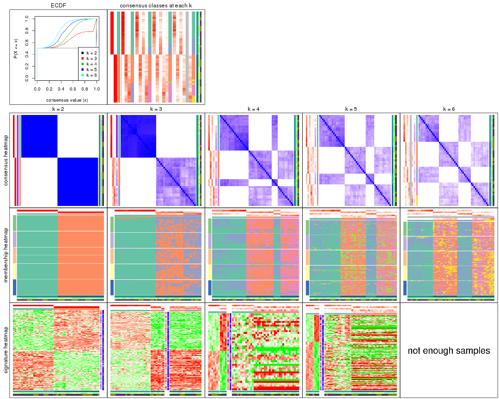
The plots are:
k and the heatmap of
predicted classes for each k.k.k.k.All the plots in panels can be made by individual functions and they are plotted later in this section.
select_partition_number() produces several plots showing different
statistics for choosing “optimized” k. There are following statistics:
k;k, the area increased is defined as \(A_k - A_{k-1}\).The detailed explanations of these statistics can be found in the cola vignette.
Generally speaking, lower PAC score, higher mean silhouette score or higher
concordance corresponds to better partition. Rand index and Jaccard index
measure how similar the current partition is compared to partition with k-1.
If they are too similar, we won't accept k is better than k-1.
select_partition_number(res)
The numeric values for all these statistics can be obtained by get_stats().
get_stats(res)
#> k 1-PAC mean_silhouette concordance area_increased Rand Jaccard
#> 2 2 1.000 1.000 1.000 0.5087 0.492 0.492
#> 3 3 0.755 0.680 0.823 0.2656 0.862 0.719
#> 4 4 0.509 0.319 0.625 0.1374 0.898 0.727
#> 5 5 0.508 0.220 0.570 0.0711 0.938 0.797
#> 6 6 0.509 0.245 0.505 0.0481 0.907 0.669
suggest_best_k() suggests the best \(k\) based on these statistics. The rules are as follows:
NA.suggest_best_k(res)
#> [1] 2
Following shows the table of the partitions (You need to click the show/hide
code output link to see it). The membership matrix (columns with name p*)
is inferred by
clue::cl_consensus()
function with the SE method. Basically the value in the membership matrix
represents the probability to belong to a certain group. The finall class
label for an item is determined with the group with highest probability it
belongs to.
In get_classes() function, the entropy is calculated from the membership
matrix and the silhouette score is calculated from the consensus matrix.
cbind(get_classes(res, k = 2), get_membership(res, k = 2))
#> class entropy silhouette p1 p2
#> GSM312684 1 0 1 1 0
#> GSM312685 1 0 1 1 0
#> GSM312686 1 0 1 1 0
#> GSM312693 1 0 1 1 0
#> GSM312694 1 0 1 1 0
#> GSM312695 1 0 1 1 0
#> GSM312699 1 0 1 1 0
#> GSM312700 1 0 1 1 0
#> GSM312701 1 0 1 1 0
#> GSM312705 1 0 1 1 0
#> GSM312706 1 0 1 1 0
#> GSM312707 1 0 1 1 0
#> GSM312687 1 0 1 1 0
#> GSM312688 1 0 1 1 0
#> GSM312689 1 0 1 1 0
#> GSM312696 1 0 1 1 0
#> GSM312697 1 0 1 1 0
#> GSM312698 1 0 1 1 0
#> GSM312702 1 0 1 1 0
#> GSM312703 1 0 1 1 0
#> GSM312704 1 0 1 1 0
#> GSM312690 1 0 1 1 0
#> GSM312691 1 0 1 1 0
#> GSM312692 1 0 1 1 0
#> GSM312708 2 0 1 0 1
#> GSM312709 2 0 1 0 1
#> GSM312710 2 0 1 0 1
#> GSM312719 2 0 1 0 1
#> GSM312720 2 0 1 0 1
#> GSM312721 2 0 1 0 1
#> GSM312722 2 0 1 0 1
#> GSM312731 2 0 1 0 1
#> GSM312732 2 0 1 0 1
#> GSM312733 2 0 1 0 1
#> GSM312734 2 0 1 0 1
#> GSM312711 2 0 1 0 1
#> GSM312712 2 0 1 0 1
#> GSM312713 2 0 1 0 1
#> GSM312714 2 0 1 0 1
#> GSM312723 2 0 1 0 1
#> GSM312724 2 0 1 0 1
#> GSM312725 2 0 1 0 1
#> GSM312726 2 0 1 0 1
#> GSM312715 2 0 1 0 1
#> GSM312716 2 0 1 0 1
#> GSM312717 2 0 1 0 1
#> GSM312718 2 0 1 0 1
#> GSM312727 2 0 1 0 1
#> GSM312728 2 0 1 0 1
#> GSM312729 2 0 1 0 1
#> GSM312730 2 0 1 0 1
cbind(get_classes(res, k = 3), get_membership(res, k = 3))
#> class entropy silhouette p1 p2 p3
#> GSM312684 1 0.0592 0.9836 0.988 0.000 0.012
#> GSM312685 1 0.1163 0.9819 0.972 0.000 0.028
#> GSM312686 1 0.0892 0.9834 0.980 0.000 0.020
#> GSM312693 1 0.0424 0.9829 0.992 0.000 0.008
#> GSM312694 1 0.1529 0.9818 0.960 0.000 0.040
#> GSM312695 1 0.1753 0.9797 0.952 0.000 0.048
#> GSM312699 1 0.0000 0.9816 1.000 0.000 0.000
#> GSM312700 1 0.1964 0.9780 0.944 0.000 0.056
#> GSM312701 1 0.1289 0.9823 0.968 0.000 0.032
#> GSM312705 1 0.0237 0.9827 0.996 0.000 0.004
#> GSM312706 1 0.0237 0.9823 0.996 0.000 0.004
#> GSM312707 1 0.0000 0.9816 1.000 0.000 0.000
#> GSM312687 1 0.2066 0.9760 0.940 0.000 0.060
#> GSM312688 1 0.1753 0.9791 0.952 0.000 0.048
#> GSM312689 1 0.2165 0.9746 0.936 0.000 0.064
#> GSM312696 1 0.0424 0.9831 0.992 0.000 0.008
#> GSM312697 1 0.0237 0.9823 0.996 0.000 0.004
#> GSM312698 1 0.0000 0.9816 1.000 0.000 0.000
#> GSM312702 1 0.1411 0.9824 0.964 0.000 0.036
#> GSM312703 1 0.0424 0.9825 0.992 0.000 0.008
#> GSM312704 1 0.0747 0.9832 0.984 0.000 0.016
#> GSM312690 1 0.1753 0.9797 0.952 0.000 0.048
#> GSM312691 1 0.2165 0.9746 0.936 0.000 0.064
#> GSM312692 1 0.1289 0.9828 0.968 0.000 0.032
#> GSM312708 3 0.6095 0.3144 0.000 0.392 0.608
#> GSM312709 3 0.5810 0.4318 0.000 0.336 0.664
#> GSM312710 3 0.6215 0.3500 0.000 0.428 0.572
#> GSM312719 2 0.5058 0.4940 0.000 0.756 0.244
#> GSM312720 2 0.5465 0.4756 0.000 0.712 0.288
#> GSM312721 2 0.5327 0.4683 0.000 0.728 0.272
#> GSM312722 3 0.6309 0.0423 0.000 0.496 0.504
#> GSM312731 3 0.6062 0.4449 0.000 0.384 0.616
#> GSM312732 3 0.5733 0.4441 0.000 0.324 0.676
#> GSM312733 3 0.5591 0.4896 0.000 0.304 0.696
#> GSM312734 3 0.3752 0.5573 0.000 0.144 0.856
#> GSM312711 2 0.6244 0.1407 0.000 0.560 0.440
#> GSM312712 3 0.6235 0.2656 0.000 0.436 0.564
#> GSM312713 3 0.5988 0.4728 0.000 0.368 0.632
#> GSM312714 2 0.6307 -0.0543 0.000 0.512 0.488
#> GSM312723 2 0.4796 0.5053 0.000 0.780 0.220
#> GSM312724 2 0.5650 0.4343 0.000 0.688 0.312
#> GSM312725 2 0.4062 0.5771 0.000 0.836 0.164
#> GSM312726 2 0.4504 0.5625 0.000 0.804 0.196
#> GSM312715 3 0.4346 0.5564 0.000 0.184 0.816
#> GSM312716 2 0.5529 0.4392 0.000 0.704 0.296
#> GSM312717 2 0.3267 0.5894 0.000 0.884 0.116
#> GSM312718 2 0.6095 0.3112 0.000 0.608 0.392
#> GSM312727 2 0.4504 0.5523 0.000 0.804 0.196
#> GSM312728 2 0.3038 0.5649 0.000 0.896 0.104
#> GSM312729 2 0.5497 0.4549 0.000 0.708 0.292
#> GSM312730 2 0.6062 0.2601 0.000 0.616 0.384
cbind(get_classes(res, k = 4), get_membership(res, k = 4))
#> class entropy silhouette p1 p2 p3 p4
#> GSM312684 1 0.4222 0.38004 0.728 0.000 0.272 0.000
#> GSM312685 1 0.4916 -0.32001 0.576 0.000 0.424 0.000
#> GSM312686 1 0.4406 0.31494 0.700 0.000 0.300 0.000
#> GSM312693 1 0.2973 0.53243 0.856 0.000 0.144 0.000
#> GSM312694 1 0.4830 -0.11458 0.608 0.000 0.392 0.000
#> GSM312695 1 0.4907 -0.25787 0.580 0.000 0.420 0.000
#> GSM312699 1 0.1022 0.55496 0.968 0.000 0.032 0.000
#> GSM312700 1 0.4977 -0.42820 0.540 0.000 0.460 0.000
#> GSM312701 1 0.4522 0.27425 0.680 0.000 0.320 0.000
#> GSM312705 1 0.3649 0.48882 0.796 0.000 0.204 0.000
#> GSM312706 1 0.2149 0.55222 0.912 0.000 0.088 0.000
#> GSM312707 1 0.1716 0.55800 0.936 0.000 0.064 0.000
#> GSM312687 3 0.4907 0.66678 0.420 0.000 0.580 0.000
#> GSM312688 3 0.4992 0.60400 0.476 0.000 0.524 0.000
#> GSM312689 3 0.4967 0.56819 0.452 0.000 0.548 0.000
#> GSM312696 1 0.1940 0.55527 0.924 0.000 0.076 0.000
#> GSM312697 1 0.2408 0.53691 0.896 0.000 0.104 0.000
#> GSM312698 1 0.0707 0.55207 0.980 0.000 0.020 0.000
#> GSM312702 1 0.4585 0.12084 0.668 0.000 0.332 0.000
#> GSM312703 1 0.3172 0.48100 0.840 0.000 0.160 0.000
#> GSM312704 1 0.3400 0.45129 0.820 0.000 0.180 0.000
#> GSM312690 1 0.4977 -0.36379 0.540 0.000 0.460 0.000
#> GSM312691 3 0.4888 0.63948 0.412 0.000 0.588 0.000
#> GSM312692 1 0.4431 0.28804 0.696 0.000 0.304 0.000
#> GSM312708 4 0.6658 0.15112 0.000 0.376 0.092 0.532
#> GSM312709 4 0.6182 0.32380 0.000 0.276 0.088 0.636
#> GSM312710 4 0.6685 0.29192 0.000 0.324 0.108 0.568
#> GSM312719 2 0.6056 0.39624 0.000 0.660 0.092 0.248
#> GSM312720 2 0.5927 0.36839 0.000 0.660 0.076 0.264
#> GSM312721 2 0.5864 0.39440 0.000 0.664 0.072 0.264
#> GSM312722 4 0.6758 0.04863 0.000 0.400 0.096 0.504
#> GSM312731 4 0.5716 0.39052 0.000 0.252 0.068 0.680
#> GSM312732 4 0.5788 0.38158 0.000 0.228 0.084 0.688
#> GSM312733 4 0.6501 0.36566 0.000 0.268 0.116 0.616
#> GSM312734 4 0.4740 0.45729 0.000 0.132 0.080 0.788
#> GSM312711 4 0.6918 0.00657 0.000 0.420 0.108 0.472
#> GSM312712 2 0.6452 -0.02393 0.000 0.472 0.068 0.460
#> GSM312713 4 0.6356 0.33355 0.000 0.320 0.084 0.596
#> GSM312714 2 0.6145 0.02256 0.000 0.492 0.048 0.460
#> GSM312723 2 0.5499 0.40035 0.000 0.712 0.072 0.216
#> GSM312724 2 0.5882 0.32691 0.000 0.608 0.048 0.344
#> GSM312725 2 0.4669 0.49850 0.000 0.780 0.052 0.168
#> GSM312726 2 0.5528 0.45457 0.000 0.700 0.064 0.236
#> GSM312715 4 0.4820 0.45214 0.000 0.168 0.060 0.772
#> GSM312716 2 0.6499 0.34487 0.000 0.612 0.112 0.276
#> GSM312717 2 0.3245 0.51054 0.000 0.872 0.028 0.100
#> GSM312718 2 0.7020 0.19277 0.000 0.500 0.124 0.376
#> GSM312727 2 0.5212 0.46414 0.000 0.740 0.068 0.192
#> GSM312728 2 0.4731 0.47244 0.000 0.780 0.060 0.160
#> GSM312729 2 0.5857 0.36385 0.000 0.636 0.056 0.308
#> GSM312730 2 0.6089 0.26405 0.000 0.608 0.064 0.328
cbind(get_classes(res, k = 5), get_membership(res, k = 5))
#> class entropy silhouette p1 p2 p3 p4 p5
#> GSM312684 1 0.514 0.40045 0.648 0.000 0.280 0.000 0.072
#> GSM312685 3 0.540 0.38786 0.376 0.000 0.560 0.000 0.064
#> GSM312686 1 0.575 0.23154 0.552 0.000 0.348 0.000 0.100
#> GSM312693 1 0.462 0.41933 0.692 0.000 0.264 0.000 0.044
#> GSM312694 1 0.535 -0.02554 0.496 0.000 0.452 0.000 0.052
#> GSM312695 1 0.504 -0.12611 0.508 0.000 0.460 0.000 0.032
#> GSM312699 1 0.279 0.53772 0.876 0.000 0.088 0.000 0.036
#> GSM312700 3 0.498 0.35357 0.412 0.000 0.556 0.000 0.032
#> GSM312701 1 0.533 0.24610 0.584 0.000 0.352 0.000 0.064
#> GSM312705 1 0.471 0.46072 0.708 0.000 0.228 0.000 0.064
#> GSM312706 1 0.402 0.51404 0.788 0.000 0.148 0.000 0.064
#> GSM312707 1 0.252 0.53979 0.884 0.000 0.100 0.000 0.016
#> GSM312687 3 0.479 0.56564 0.324 0.000 0.640 0.000 0.036
#> GSM312688 3 0.521 0.50004 0.352 0.000 0.592 0.000 0.056
#> GSM312689 3 0.519 0.48154 0.364 0.000 0.584 0.000 0.052
#> GSM312696 1 0.296 0.50999 0.856 0.000 0.120 0.000 0.024
#> GSM312697 1 0.351 0.48318 0.824 0.000 0.132 0.000 0.044
#> GSM312698 1 0.147 0.53321 0.948 0.000 0.036 0.000 0.016
#> GSM312702 1 0.505 0.10397 0.612 0.000 0.340 0.000 0.048
#> GSM312703 1 0.392 0.44422 0.780 0.000 0.180 0.000 0.040
#> GSM312704 1 0.413 0.38406 0.756 0.000 0.204 0.000 0.040
#> GSM312690 1 0.529 -0.17354 0.496 0.000 0.456 0.000 0.048
#> GSM312691 3 0.476 0.54703 0.276 0.000 0.676 0.000 0.048
#> GSM312692 1 0.570 0.29370 0.568 0.000 0.332 0.000 0.100
#> GSM312708 4 0.655 0.12133 0.000 0.336 0.036 0.528 0.100
#> GSM312709 4 0.646 0.19062 0.000 0.276 0.024 0.564 0.136
#> GSM312710 4 0.672 -0.03044 0.000 0.208 0.004 0.412 0.376
#> GSM312719 2 0.652 0.04321 0.000 0.476 0.012 0.140 0.372
#> GSM312720 2 0.546 0.27299 0.000 0.664 0.016 0.244 0.076
#> GSM312721 2 0.674 0.07341 0.000 0.480 0.016 0.168 0.336
#> GSM312722 4 0.691 0.00365 0.000 0.368 0.012 0.412 0.208
#> GSM312731 4 0.713 -0.05057 0.000 0.260 0.016 0.400 0.324
#> GSM312732 4 0.655 -0.11509 0.000 0.172 0.012 0.524 0.292
#> GSM312733 4 0.706 -0.13325 0.000 0.200 0.024 0.448 0.328
#> GSM312734 4 0.379 0.22527 0.000 0.096 0.012 0.828 0.064
#> GSM312711 5 0.714 0.00000 0.000 0.304 0.016 0.276 0.404
#> GSM312712 4 0.674 0.01110 0.000 0.388 0.008 0.416 0.188
#> GSM312713 4 0.639 0.20343 0.000 0.272 0.020 0.568 0.140
#> GSM312714 2 0.708 -0.01763 0.000 0.432 0.024 0.348 0.196
#> GSM312723 2 0.611 0.03603 0.000 0.540 0.004 0.128 0.328
#> GSM312724 2 0.656 0.19872 0.000 0.572 0.024 0.208 0.196
#> GSM312725 2 0.465 0.30675 0.000 0.764 0.012 0.108 0.116
#> GSM312726 2 0.652 0.15417 0.000 0.576 0.024 0.180 0.220
#> GSM312715 4 0.493 0.18526 0.000 0.156 0.012 0.736 0.096
#> GSM312716 2 0.692 0.14759 0.000 0.504 0.024 0.208 0.264
#> GSM312717 2 0.546 0.27054 0.000 0.708 0.028 0.120 0.144
#> GSM312718 2 0.716 0.05977 0.000 0.464 0.032 0.300 0.204
#> GSM312727 2 0.577 0.19270 0.000 0.664 0.028 0.100 0.208
#> GSM312728 2 0.612 0.08565 0.000 0.596 0.028 0.092 0.284
#> GSM312729 2 0.609 0.14342 0.000 0.604 0.008 0.196 0.192
#> GSM312730 2 0.658 0.02488 0.000 0.476 0.008 0.348 0.168
cbind(get_classes(res, k = 6), get_membership(res, k = 6))
#> class entropy silhouette p1 p2 p3 p4 p5 p6
#> GSM312684 1 0.607 0.17017 0.488 0.000 0.272 0.004 NA 0.004
#> GSM312685 3 0.678 0.20986 0.312 0.000 0.340 0.016 NA 0.012
#> GSM312686 1 0.610 0.06926 0.376 0.000 0.292 0.000 NA 0.000
#> GSM312693 1 0.528 0.42582 0.676 0.000 0.168 0.012 NA 0.016
#> GSM312694 3 0.536 0.28249 0.324 0.000 0.568 0.004 NA 0.004
#> GSM312695 3 0.557 0.24399 0.380 0.000 0.500 0.000 NA 0.008
#> GSM312699 1 0.283 0.51206 0.868 0.000 0.080 0.004 NA 0.004
#> GSM312700 3 0.554 0.36944 0.320 0.000 0.564 0.012 NA 0.004
#> GSM312701 1 0.603 -0.04755 0.424 0.000 0.408 0.004 NA 0.008
#> GSM312705 1 0.554 0.35400 0.600 0.000 0.220 0.000 NA 0.012
#> GSM312706 1 0.444 0.46017 0.736 0.000 0.136 0.004 NA 0.004
#> GSM312707 1 0.388 0.48832 0.780 0.000 0.120 0.000 NA 0.004
#> GSM312687 3 0.556 0.42151 0.224 0.000 0.596 0.012 NA 0.000
#> GSM312688 3 0.587 0.36925 0.268 0.000 0.524 0.008 NA 0.000
#> GSM312689 3 0.466 0.42762 0.220 0.000 0.684 0.000 NA 0.004
#> GSM312696 1 0.323 0.48540 0.832 0.000 0.116 0.008 NA 0.000
#> GSM312697 1 0.419 0.45290 0.760 0.000 0.132 0.004 NA 0.004
#> GSM312698 1 0.181 0.51499 0.932 0.000 0.036 0.004 NA 0.008
#> GSM312702 1 0.552 -0.00756 0.516 0.000 0.368 0.000 NA 0.008
#> GSM312703 1 0.477 0.41714 0.708 0.000 0.148 0.008 NA 0.004
#> GSM312704 1 0.485 0.31737 0.648 0.000 0.268 0.000 NA 0.008
#> GSM312690 3 0.627 0.24710 0.324 0.000 0.468 0.016 NA 0.004
#> GSM312691 3 0.487 0.42646 0.192 0.000 0.680 0.000 NA 0.008
#> GSM312692 1 0.608 0.11788 0.452 0.000 0.276 0.004 NA 0.000
#> GSM312708 6 0.477 0.25995 0.000 0.180 0.000 0.056 NA 0.716
#> GSM312709 6 0.492 0.23859 0.000 0.108 0.000 0.152 NA 0.708
#> GSM312710 4 0.715 0.11127 0.000 0.216 0.008 0.420 NA 0.284
#> GSM312719 2 0.671 0.23932 0.000 0.536 0.004 0.212 NA 0.132
#> GSM312720 2 0.598 0.10449 0.000 0.496 0.000 0.052 NA 0.372
#> GSM312721 2 0.603 0.26428 0.000 0.608 0.004 0.200 NA 0.124
#> GSM312722 6 0.680 0.10400 0.000 0.308 0.000 0.184 NA 0.440
#> GSM312731 4 0.675 0.13360 0.000 0.200 0.000 0.472 NA 0.260
#> GSM312732 4 0.457 0.31973 0.000 0.100 0.004 0.756 NA 0.104
#> GSM312733 4 0.620 0.25761 0.000 0.156 0.000 0.596 NA 0.148
#> GSM312734 4 0.566 0.10309 0.000 0.052 0.000 0.488 NA 0.412
#> GSM312711 4 0.706 0.04396 0.000 0.316 0.004 0.412 NA 0.192
#> GSM312712 6 0.687 0.06569 0.000 0.264 0.000 0.332 NA 0.356
#> GSM312713 6 0.659 0.11693 0.000 0.184 0.004 0.212 NA 0.532
#> GSM312714 6 0.724 0.01684 0.000 0.328 0.000 0.252 NA 0.328
#> GSM312723 2 0.582 0.28140 0.000 0.596 0.000 0.256 NA 0.068
#> GSM312724 2 0.687 0.22605 0.000 0.504 0.000 0.204 NA 0.160
#> GSM312725 2 0.617 0.29684 0.000 0.596 0.000 0.108 NA 0.184
#> GSM312726 2 0.677 0.24586 0.000 0.508 0.004 0.132 NA 0.256
#> GSM312715 4 0.608 0.08186 0.000 0.076 0.000 0.448 NA 0.416
#> GSM312716 2 0.697 0.11827 0.000 0.424 0.000 0.144 NA 0.324
#> GSM312717 2 0.479 0.32738 0.000 0.720 0.000 0.052 NA 0.168
#> GSM312718 2 0.735 0.10645 0.000 0.388 0.000 0.240 NA 0.244
#> GSM312727 2 0.648 0.24255 0.000 0.548 0.004 0.100 NA 0.244
#> GSM312728 2 0.558 0.28241 0.000 0.648 0.000 0.188 NA 0.104
#> GSM312729 2 0.676 0.14616 0.000 0.460 0.008 0.216 NA 0.276
#> GSM312730 2 0.631 0.03256 0.000 0.456 0.004 0.120 NA 0.380
Heatmaps for the consensus matrix. It visualizes the probability of two samples to be in a same group.
consensus_heatmap(res, k = 2)
consensus_heatmap(res, k = 3)
consensus_heatmap(res, k = 4)
consensus_heatmap(res, k = 5)
consensus_heatmap(res, k = 6)
Heatmaps for the membership of samples in all partitions to see how consistent they are:
membership_heatmap(res, k = 2)

membership_heatmap(res, k = 3)
membership_heatmap(res, k = 4)
membership_heatmap(res, k = 5)
membership_heatmap(res, k = 6)
As soon as we have had the classes for columns, we can look for signatures which are significantly different between classes which can be candidate marks for certain classes. Following are the heatmaps for signatures.
Signature heatmaps where rows are scaled:
get_signatures(res, k = 2)

get_signatures(res, k = 3)
get_signatures(res, k = 4)
get_signatures(res, k = 5)
get_signatures(res, k = 6)

Signature heatmaps where rows are not scaled:
get_signatures(res, k = 2, scale_rows = FALSE)

get_signatures(res, k = 3, scale_rows = FALSE)
get_signatures(res, k = 4, scale_rows = FALSE)
get_signatures(res, k = 5, scale_rows = FALSE)
get_signatures(res, k = 6, scale_rows = FALSE)

Compare the overlap of signatures from different k:
compare_signatures(res)
get_signature() returns a data frame invisibly. TO get the list of signatures, the function
call should be assigned to a variable explicitly. In following code, if plot argument is set
to FALSE, no heatmap is plotted while only the differential analysis is performed.
# code only for demonstration
tb = get_signature(res, k = ..., plot = FALSE)
An example of the output of tb is:
#> which_row fdr mean_1 mean_2 scaled_mean_1 scaled_mean_2 km
#> 1 38 0.042760348 8.373488 9.131774 -0.5533452 0.5164555 1
#> 2 40 0.018707592 7.106213 8.469186 -0.6173731 0.5762149 1
#> 3 55 0.019134737 10.221463 11.207825 -0.6159697 0.5749050 1
#> 4 59 0.006059896 5.921854 7.869574 -0.6899429 0.6439467 1
#> 5 60 0.018055526 8.928898 10.211722 -0.6204761 0.5791110 1
#> 6 98 0.009384629 15.714769 14.887706 0.6635654 -0.6193277 2
...
The columns in tb are:
which_row: row indices corresponding to the input matrix.fdr: FDR for the differential test. mean_x: The mean value in group x.scaled_mean_x: The mean value in group x after rows are scaled.km: Row groups if k-means clustering is applied to rows.UMAP plot which shows how samples are separated.
dimension_reduction(res, k = 2, method = "UMAP")
dimension_reduction(res, k = 3, method = "UMAP")
dimension_reduction(res, k = 4, method = "UMAP")
dimension_reduction(res, k = 5, method = "UMAP")
dimension_reduction(res, k = 6, method = "UMAP")
Following heatmap shows how subgroups are split when increasing k:
collect_classes(res)
Test correlation between subgroups and known annotations. If the known annotation is numeric, one-way ANOVA test is applied, and if the known annotation is discrete, chi-squared contingency table test is applied.
test_to_known_factors(res)
#> n cell.line(p) agent(p) time(p) k
#> CV:skmeans 51 6.87e-12 0.5277 0.0406 2
#> CV:skmeans 32 1.13e-07 0.2199 0.2237 3
#> CV:skmeans 12 2.48e-03 0.0512 0.0728 4
#> CV:skmeans 8 NA 0.1546 0.0183 5
#> CV:skmeans 2 NA NA NA 6
If matrix rows can be associated to genes, consider to use GO_Enrichment(res,
...) to perform function enrichment for the signature genes.
The object with results only for a single top-value method and a single partition method can be extracted as:
res = res_list["CV", "pam"]
# you can also extract it by
# res = res_list["CV:pam"]
A summary of res and all the functions that can be applied to it:
res
#> A 'ConsensusPartition' object with k = 2, 3, 4, 5, 6.
#> On a matrix with 21168 rows and 51 columns.
#> Top rows (1000, 2000, 3000, 4000, 5000) are extracted by 'CV' method.
#> Subgroups are detected by 'pam' method.
#> Performed in total 1250 partitions by row resampling.
#> Best k for subgroups seems to be 2.
#>
#> Following methods can be applied to this 'ConsensusPartition' object:
#> [1] "cola_report" "collect_classes" "collect_plots"
#> [4] "collect_stats" "colnames" "compare_signatures"
#> [7] "consensus_heatmap" "dimension_reduction" "functional_enrichment"
#> [10] "get_anno_col" "get_anno" "get_classes"
#> [13] "get_consensus" "get_matrix" "get_membership"
#> [16] "get_param" "get_signatures" "get_stats"
#> [19] "is_best_k" "is_stable_k" "membership_heatmap"
#> [22] "ncol" "nrow" "plot_ecdf"
#> [25] "rownames" "select_partition_number" "show"
#> [28] "suggest_best_k" "test_to_known_factors"
collect_plots() function collects all the plots made from res for all k (number of partitions)
into one single page to provide an easy and fast comparison between different k.
collect_plots(res)
The plots are:
k and the heatmap of
predicted classes for each k.k.k.k.All the plots in panels can be made by individual functions and they are plotted later in this section.
select_partition_number() produces several plots showing different
statistics for choosing “optimized” k. There are following statistics:
k;k, the area increased is defined as \(A_k - A_{k-1}\).The detailed explanations of these statistics can be found in the cola vignette.
Generally speaking, lower PAC score, higher mean silhouette score or higher
concordance corresponds to better partition. Rand index and Jaccard index
measure how similar the current partition is compared to partition with k-1.
If they are too similar, we won't accept k is better than k-1.
select_partition_number(res)
The numeric values for all these statistics can be obtained by get_stats().
get_stats(res)
#> k 1-PAC mean_silhouette concordance area_increased Rand Jaccard
#> 2 2 1.000 1.000 1.000 0.5087 0.492 0.492
#> 3 3 0.645 0.907 0.835 0.1835 1.000 1.000
#> 4 4 0.568 0.777 0.784 0.0663 0.982 0.963
#> 5 5 0.564 0.377 0.762 0.0419 0.911 0.811
#> 6 6 0.583 0.480 0.757 0.0319 0.927 0.815
suggest_best_k() suggests the best \(k\) based on these statistics. The rules are as follows:
NA.suggest_best_k(res)
#> [1] 2
Following shows the table of the partitions (You need to click the show/hide
code output link to see it). The membership matrix (columns with name p*)
is inferred by
clue::cl_consensus()
function with the SE method. Basically the value in the membership matrix
represents the probability to belong to a certain group. The finall class
label for an item is determined with the group with highest probability it
belongs to.
In get_classes() function, the entropy is calculated from the membership
matrix and the silhouette score is calculated from the consensus matrix.
cbind(get_classes(res, k = 2), get_membership(res, k = 2))
#> class entropy silhouette p1 p2
#> GSM312684 1 0 1 1 0
#> GSM312685 1 0 1 1 0
#> GSM312686 1 0 1 1 0
#> GSM312693 1 0 1 1 0
#> GSM312694 1 0 1 1 0
#> GSM312695 1 0 1 1 0
#> GSM312699 1 0 1 1 0
#> GSM312700 1 0 1 1 0
#> GSM312701 1 0 1 1 0
#> GSM312705 1 0 1 1 0
#> GSM312706 1 0 1 1 0
#> GSM312707 1 0 1 1 0
#> GSM312687 1 0 1 1 0
#> GSM312688 1 0 1 1 0
#> GSM312689 1 0 1 1 0
#> GSM312696 1 0 1 1 0
#> GSM312697 1 0 1 1 0
#> GSM312698 1 0 1 1 0
#> GSM312702 1 0 1 1 0
#> GSM312703 1 0 1 1 0
#> GSM312704 1 0 1 1 0
#> GSM312690 1 0 1 1 0
#> GSM312691 1 0 1 1 0
#> GSM312692 1 0 1 1 0
#> GSM312708 2 0 1 0 1
#> GSM312709 2 0 1 0 1
#> GSM312710 2 0 1 0 1
#> GSM312719 2 0 1 0 1
#> GSM312720 2 0 1 0 1
#> GSM312721 2 0 1 0 1
#> GSM312722 2 0 1 0 1
#> GSM312731 2 0 1 0 1
#> GSM312732 2 0 1 0 1
#> GSM312733 2 0 1 0 1
#> GSM312734 2 0 1 0 1
#> GSM312711 2 0 1 0 1
#> GSM312712 2 0 1 0 1
#> GSM312713 2 0 1 0 1
#> GSM312714 2 0 1 0 1
#> GSM312723 2 0 1 0 1
#> GSM312724 2 0 1 0 1
#> GSM312725 2 0 1 0 1
#> GSM312726 2 0 1 0 1
#> GSM312715 2 0 1 0 1
#> GSM312716 2 0 1 0 1
#> GSM312717 2 0 1 0 1
#> GSM312718 2 0 1 0 1
#> GSM312727 2 0 1 0 1
#> GSM312728 2 0 1 0 1
#> GSM312729 2 0 1 0 1
#> GSM312730 2 0 1 0 1
cbind(get_classes(res, k = 3), get_membership(res, k = 3))
#> class entropy silhouette p1 p2 p3
#> GSM312684 1 0.304 0.952 0.896 0.000 0.104
#> GSM312685 1 0.164 0.956 0.956 0.000 0.044
#> GSM312686 1 0.312 0.941 0.892 0.000 0.108
#> GSM312693 1 0.129 0.957 0.968 0.000 0.032
#> GSM312694 1 0.348 0.944 0.872 0.000 0.128
#> GSM312695 1 0.207 0.952 0.940 0.000 0.060
#> GSM312699 1 0.129 0.954 0.968 0.000 0.032
#> GSM312700 1 0.304 0.950 0.896 0.000 0.104
#> GSM312701 1 0.362 0.943 0.864 0.000 0.136
#> GSM312705 1 0.175 0.955 0.952 0.000 0.048
#> GSM312706 1 0.186 0.955 0.948 0.000 0.052
#> GSM312707 1 0.196 0.957 0.944 0.000 0.056
#> GSM312687 1 0.280 0.941 0.908 0.000 0.092
#> GSM312688 1 0.375 0.923 0.856 0.000 0.144
#> GSM312689 1 0.226 0.954 0.932 0.000 0.068
#> GSM312696 1 0.103 0.955 0.976 0.000 0.024
#> GSM312697 1 0.186 0.952 0.948 0.000 0.052
#> GSM312698 1 0.207 0.950 0.940 0.000 0.060
#> GSM312702 1 0.296 0.948 0.900 0.000 0.100
#> GSM312703 1 0.116 0.955 0.972 0.000 0.028
#> GSM312704 1 0.129 0.955 0.968 0.000 0.032
#> GSM312690 1 0.186 0.955 0.948 0.000 0.052
#> GSM312691 1 0.556 0.787 0.700 0.000 0.300
#> GSM312692 1 0.319 0.939 0.888 0.000 0.112
#> GSM312708 2 0.613 0.867 0.000 0.600 0.400
#> GSM312709 2 0.502 0.881 0.000 0.760 0.240
#> GSM312710 2 0.245 0.878 0.000 0.924 0.076
#> GSM312719 2 0.583 0.880 0.000 0.660 0.340
#> GSM312720 2 0.608 0.869 0.000 0.612 0.388
#> GSM312721 2 0.465 0.887 0.000 0.792 0.208
#> GSM312722 2 0.533 0.888 0.000 0.728 0.272
#> GSM312731 2 0.196 0.869 0.000 0.944 0.056
#> GSM312732 2 0.236 0.870 0.000 0.928 0.072
#> GSM312733 2 0.280 0.873 0.000 0.908 0.092
#> GSM312734 2 0.153 0.872 0.000 0.960 0.040
#> GSM312711 2 0.400 0.882 0.000 0.840 0.160
#> GSM312712 2 0.319 0.868 0.000 0.888 0.112
#> GSM312713 2 0.540 0.884 0.000 0.720 0.280
#> GSM312714 2 0.319 0.877 0.000 0.888 0.112
#> GSM312723 2 0.254 0.875 0.000 0.920 0.080
#> GSM312724 2 0.562 0.885 0.000 0.692 0.308
#> GSM312725 2 0.597 0.871 0.000 0.636 0.364
#> GSM312726 2 0.579 0.874 0.000 0.668 0.332
#> GSM312715 2 0.319 0.876 0.000 0.888 0.112
#> GSM312716 2 0.590 0.867 0.000 0.648 0.352
#> GSM312717 2 0.606 0.872 0.000 0.616 0.384
#> GSM312718 2 0.597 0.872 0.000 0.636 0.364
#> GSM312727 2 0.586 0.870 0.000 0.656 0.344
#> GSM312728 2 0.341 0.888 0.000 0.876 0.124
#> GSM312729 2 0.608 0.863 0.000 0.612 0.388
#> GSM312730 2 0.480 0.883 0.000 0.780 0.220
cbind(get_classes(res, k = 4), get_membership(res, k = 4))
#> class entropy silhouette p1 p2 p3 p4
#> GSM312684 1 0.348 0.846 0.856 0.000 0.028 0.116
#> GSM312685 1 0.173 0.864 0.948 0.000 0.028 0.024
#> GSM312686 1 0.353 0.816 0.860 0.000 0.040 0.100
#> GSM312693 1 0.162 0.868 0.952 0.000 0.020 0.028
#> GSM312694 1 0.396 0.817 0.824 0.000 0.032 0.144
#> GSM312695 1 0.238 0.854 0.920 0.000 0.028 0.052
#> GSM312699 1 0.145 0.858 0.956 0.000 0.036 0.008
#> GSM312700 1 0.371 0.828 0.840 0.000 0.028 0.132
#> GSM312701 1 0.401 0.813 0.816 0.000 0.028 0.156
#> GSM312705 1 0.191 0.860 0.940 0.000 0.020 0.040
#> GSM312706 1 0.232 0.860 0.924 0.000 0.040 0.036
#> GSM312707 1 0.247 0.865 0.916 0.000 0.028 0.056
#> GSM312687 1 0.614 0.273 0.676 0.000 0.140 0.184
#> GSM312688 1 0.636 0.336 0.656 0.000 0.168 0.176
#> GSM312689 1 0.230 0.859 0.920 0.000 0.016 0.064
#> GSM312696 1 0.130 0.861 0.964 0.000 0.016 0.020
#> GSM312697 1 0.194 0.856 0.936 0.000 0.012 0.052
#> GSM312698 1 0.218 0.850 0.924 0.000 0.012 0.064
#> GSM312702 1 0.350 0.831 0.848 0.000 0.020 0.132
#> GSM312703 1 0.128 0.860 0.964 0.000 0.012 0.024
#> GSM312704 1 0.141 0.860 0.960 0.000 0.016 0.024
#> GSM312690 1 0.232 0.851 0.924 0.000 0.036 0.040
#> GSM312691 4 0.470 0.000 0.356 0.000 0.000 0.644
#> GSM312692 1 0.371 0.808 0.848 0.000 0.040 0.112
#> GSM312708 2 0.344 0.763 0.000 0.816 0.184 0.000
#> GSM312709 2 0.376 0.794 0.000 0.784 0.216 0.000
#> GSM312710 2 0.473 0.795 0.000 0.636 0.364 0.000
#> GSM312719 2 0.404 0.794 0.000 0.752 0.248 0.000
#> GSM312720 2 0.336 0.773 0.000 0.824 0.176 0.000
#> GSM312721 2 0.488 0.796 0.000 0.592 0.408 0.000
#> GSM312722 2 0.391 0.813 0.000 0.768 0.232 0.000
#> GSM312731 2 0.464 0.782 0.000 0.656 0.344 0.000
#> GSM312732 2 0.483 0.787 0.000 0.608 0.392 0.000
#> GSM312733 2 0.436 0.787 0.000 0.708 0.292 0.000
#> GSM312734 2 0.462 0.787 0.000 0.660 0.340 0.000
#> GSM312711 2 0.500 0.781 0.000 0.504 0.496 0.000
#> GSM312712 2 0.480 0.780 0.000 0.616 0.384 0.000
#> GSM312713 2 0.445 0.798 0.000 0.692 0.308 0.000
#> GSM312714 2 0.428 0.792 0.000 0.720 0.280 0.000
#> GSM312723 2 0.497 0.790 0.000 0.544 0.456 0.000
#> GSM312724 2 0.265 0.807 0.000 0.880 0.120 0.000
#> GSM312725 2 0.265 0.779 0.000 0.880 0.120 0.000
#> GSM312726 2 0.394 0.786 0.000 0.764 0.236 0.000
#> GSM312715 2 0.495 0.793 0.000 0.556 0.444 0.000
#> GSM312716 2 0.253 0.774 0.000 0.888 0.112 0.000
#> GSM312717 2 0.281 0.779 0.000 0.868 0.132 0.000
#> GSM312718 2 0.401 0.766 0.000 0.756 0.244 0.000
#> GSM312727 2 0.336 0.789 0.000 0.824 0.176 0.000
#> GSM312728 2 0.454 0.809 0.000 0.676 0.324 0.000
#> GSM312729 2 0.458 0.744 0.000 0.668 0.332 0.000
#> GSM312730 2 0.498 0.777 0.000 0.536 0.464 0.000
cbind(get_classes(res, k = 5), get_membership(res, k = 5))
#> class entropy silhouette p1 p2 p3 p4 p5
#> GSM312684 1 0.3078 0.787 0.848 0.000 0.016 0.132 0.004
#> GSM312685 1 0.1557 0.813 0.940 0.000 0.000 0.052 0.008
#> GSM312686 1 0.3359 0.748 0.844 0.000 0.072 0.084 0.000
#> GSM312693 1 0.1544 0.817 0.932 0.000 0.000 0.068 0.000
#> GSM312694 1 0.3648 0.760 0.824 0.000 0.084 0.092 0.000
#> GSM312695 1 0.1924 0.800 0.924 0.000 0.004 0.064 0.008
#> GSM312699 1 0.0963 0.809 0.964 0.000 0.000 0.036 0.000
#> GSM312700 1 0.3773 0.758 0.800 0.000 0.032 0.164 0.004
#> GSM312701 1 0.3805 0.754 0.820 0.000 0.084 0.092 0.004
#> GSM312705 1 0.1792 0.799 0.916 0.000 0.000 0.084 0.000
#> GSM312706 1 0.1704 0.805 0.928 0.000 0.000 0.068 0.004
#> GSM312707 1 0.2179 0.814 0.896 0.000 0.000 0.100 0.004
#> GSM312687 1 0.7646 -0.450 0.396 0.000 0.060 0.332 0.212
#> GSM312688 4 0.4210 0.000 0.412 0.000 0.000 0.588 0.000
#> GSM312689 1 0.2378 0.806 0.908 0.000 0.016 0.064 0.012
#> GSM312696 1 0.1043 0.808 0.960 0.000 0.000 0.040 0.000
#> GSM312697 1 0.2020 0.788 0.900 0.000 0.000 0.100 0.000
#> GSM312698 1 0.2179 0.780 0.888 0.000 0.000 0.112 0.000
#> GSM312702 1 0.3567 0.757 0.820 0.000 0.032 0.144 0.004
#> GSM312703 1 0.1478 0.801 0.936 0.000 0.000 0.064 0.000
#> GSM312704 1 0.1478 0.801 0.936 0.000 0.000 0.064 0.000
#> GSM312690 1 0.2765 0.768 0.896 0.000 0.024 0.044 0.036
#> GSM312691 3 0.2329 0.000 0.124 0.000 0.876 0.000 0.000
#> GSM312692 1 0.3479 0.741 0.836 0.000 0.080 0.084 0.000
#> GSM312708 5 0.4747 0.401 0.000 0.484 0.000 0.016 0.500
#> GSM312709 2 0.3835 0.111 0.000 0.744 0.000 0.012 0.244
#> GSM312710 2 0.2732 0.394 0.000 0.840 0.000 0.000 0.160
#> GSM312719 5 0.4305 0.364 0.000 0.488 0.000 0.000 0.512
#> GSM312720 5 0.4746 0.424 0.000 0.480 0.000 0.016 0.504
#> GSM312721 2 0.4138 0.166 0.000 0.616 0.000 0.000 0.384
#> GSM312722 2 0.4045 -0.098 0.000 0.644 0.000 0.000 0.356
#> GSM312731 2 0.0290 0.426 0.000 0.992 0.000 0.000 0.008
#> GSM312732 2 0.2690 0.402 0.000 0.844 0.000 0.000 0.156
#> GSM312733 2 0.1197 0.412 0.000 0.952 0.000 0.000 0.048
#> GSM312734 2 0.1270 0.432 0.000 0.948 0.000 0.000 0.052
#> GSM312711 2 0.3876 0.273 0.000 0.684 0.000 0.000 0.316
#> GSM312712 2 0.2329 0.383 0.000 0.876 0.000 0.000 0.124
#> GSM312713 2 0.4557 -0.145 0.000 0.552 0.004 0.004 0.440
#> GSM312714 2 0.1608 0.397 0.000 0.928 0.000 0.000 0.072
#> GSM312723 2 0.3427 0.384 0.000 0.796 0.012 0.000 0.192
#> GSM312724 2 0.4630 -0.306 0.000 0.572 0.008 0.004 0.416
#> GSM312725 2 0.4555 -0.501 0.000 0.520 0.000 0.008 0.472
#> GSM312726 2 0.4803 -0.339 0.000 0.500 0.012 0.004 0.484
#> GSM312715 2 0.2852 0.399 0.000 0.828 0.000 0.000 0.172
#> GSM312716 2 0.4610 -0.366 0.000 0.596 0.000 0.016 0.388
#> GSM312717 2 0.4443 -0.443 0.000 0.524 0.004 0.000 0.472
#> GSM312718 2 0.4718 -0.419 0.000 0.540 0.000 0.016 0.444
#> GSM312727 2 0.4304 -0.344 0.000 0.516 0.000 0.000 0.484
#> GSM312728 2 0.3003 0.374 0.000 0.812 0.000 0.000 0.188
#> GSM312729 5 0.4444 0.346 0.000 0.364 0.012 0.000 0.624
#> GSM312730 2 0.4517 0.025 0.000 0.556 0.008 0.000 0.436
cbind(get_classes(res, k = 6), get_membership(res, k = 6))
#> class entropy silhouette p1 p2 p3 p4 p5 p6
#> GSM312684 1 0.278 0.8911 0.868 0.000 0.100 0.012 0.008 0.012
#> GSM312685 1 0.295 0.8561 0.868 0.000 0.036 0.000 0.032 0.064
#> GSM312686 1 0.341 0.8642 0.844 0.000 0.080 0.048 0.016 0.012
#> GSM312693 1 0.162 0.9042 0.936 0.000 0.044 0.000 0.008 0.012
#> GSM312694 1 0.353 0.8707 0.832 0.000 0.088 0.056 0.016 0.008
#> GSM312695 1 0.224 0.8916 0.908 0.000 0.036 0.000 0.040 0.016
#> GSM312699 1 0.105 0.8955 0.964 0.000 0.020 0.000 0.004 0.012
#> GSM312700 1 0.463 0.8421 0.768 0.000 0.108 0.028 0.064 0.032
#> GSM312701 1 0.360 0.8685 0.832 0.000 0.080 0.056 0.024 0.008
#> GSM312705 1 0.179 0.8980 0.920 0.000 0.068 0.000 0.004 0.008
#> GSM312706 1 0.169 0.8948 0.936 0.000 0.032 0.000 0.020 0.012
#> GSM312707 1 0.221 0.9035 0.904 0.000 0.064 0.000 0.024 0.008
#> GSM312687 5 0.288 0.0000 0.164 0.000 0.008 0.004 0.824 0.000
#> GSM312688 3 0.209 0.0000 0.124 0.000 0.876 0.000 0.000 0.000
#> GSM312689 1 0.302 0.8880 0.876 0.000 0.032 0.016 0.036 0.040
#> GSM312696 1 0.137 0.8989 0.948 0.000 0.036 0.000 0.004 0.012
#> GSM312697 1 0.206 0.8912 0.900 0.000 0.088 0.000 0.004 0.008
#> GSM312698 1 0.226 0.8870 0.888 0.000 0.096 0.000 0.004 0.012
#> GSM312702 1 0.378 0.8699 0.812 0.000 0.120 0.016 0.032 0.020
#> GSM312703 1 0.176 0.8964 0.928 0.000 0.052 0.000 0.008 0.012
#> GSM312704 1 0.150 0.8969 0.936 0.000 0.052 0.000 0.000 0.012
#> GSM312690 1 0.400 0.7989 0.808 0.000 0.044 0.008 0.052 0.088
#> GSM312691 4 0.120 0.0000 0.056 0.000 0.000 0.944 0.000 0.000
#> GSM312692 1 0.362 0.8589 0.832 0.000 0.080 0.056 0.020 0.012
#> GSM312708 6 0.452 0.4156 0.000 0.444 0.008 0.004 0.012 0.532
#> GSM312709 2 0.381 0.1226 0.000 0.724 0.008 0.004 0.008 0.256
#> GSM312710 2 0.260 0.4148 0.000 0.824 0.000 0.000 0.000 0.176
#> GSM312719 6 0.409 0.4438 0.000 0.440 0.000 0.004 0.004 0.552
#> GSM312720 6 0.452 0.4506 0.000 0.444 0.008 0.004 0.012 0.532
#> GSM312721 2 0.390 0.1818 0.000 0.592 0.000 0.000 0.004 0.404
#> GSM312722 2 0.370 -0.1670 0.000 0.624 0.000 0.000 0.000 0.376
#> GSM312731 2 0.026 0.4756 0.000 0.992 0.000 0.000 0.000 0.008
#> GSM312732 2 0.263 0.4368 0.000 0.832 0.000 0.000 0.004 0.164
#> GSM312733 2 0.107 0.4615 0.000 0.952 0.000 0.000 0.000 0.048
#> GSM312734 2 0.135 0.4816 0.000 0.940 0.000 0.000 0.004 0.056
#> GSM312711 2 0.367 0.3201 0.000 0.668 0.000 0.000 0.004 0.328
#> GSM312712 2 0.209 0.4466 0.000 0.876 0.000 0.000 0.000 0.124
#> GSM312713 2 0.418 -0.2413 0.000 0.520 0.000 0.000 0.012 0.468
#> GSM312714 2 0.144 0.4459 0.000 0.928 0.000 0.000 0.000 0.072
#> GSM312723 2 0.333 0.4274 0.000 0.784 0.000 0.000 0.024 0.192
#> GSM312724 2 0.450 -0.3925 0.000 0.532 0.004 0.004 0.016 0.444
#> GSM312725 6 0.413 0.4273 0.000 0.480 0.004 0.000 0.004 0.512
#> GSM312726 6 0.469 0.4074 0.000 0.456 0.004 0.008 0.020 0.512
#> GSM312715 2 0.263 0.4482 0.000 0.820 0.000 0.000 0.000 0.180
#> GSM312716 2 0.449 -0.3919 0.000 0.556 0.008 0.012 0.004 0.420
#> GSM312717 2 0.410 -0.4625 0.000 0.500 0.000 0.000 0.008 0.492
#> GSM312718 2 0.453 -0.3721 0.000 0.516 0.008 0.004 0.012 0.460
#> GSM312727 6 0.386 0.4068 0.000 0.480 0.000 0.000 0.000 0.520
#> GSM312728 2 0.287 0.4096 0.000 0.804 0.000 0.000 0.004 0.192
#> GSM312729 6 0.421 0.4212 0.000 0.320 0.000 0.004 0.024 0.652
#> GSM312730 2 0.445 0.0172 0.000 0.528 0.000 0.004 0.020 0.448
Heatmaps for the consensus matrix. It visualizes the probability of two samples to be in a same group.
consensus_heatmap(res, k = 2)

consensus_heatmap(res, k = 3)
consensus_heatmap(res, k = 4)
consensus_heatmap(res, k = 5)
consensus_heatmap(res, k = 6)
Heatmaps for the membership of samples in all partitions to see how consistent they are:
membership_heatmap(res, k = 2)

membership_heatmap(res, k = 3)
membership_heatmap(res, k = 4)
membership_heatmap(res, k = 5)
membership_heatmap(res, k = 6)
As soon as we have had the classes for columns, we can look for signatures which are significantly different between classes which can be candidate marks for certain classes. Following are the heatmaps for signatures.
Signature heatmaps where rows are scaled:
get_signatures(res, k = 2)

get_signatures(res, k = 3)
get_signatures(res, k = 4)
get_signatures(res, k = 5)

get_signatures(res, k = 6)

Signature heatmaps where rows are not scaled:
get_signatures(res, k = 2, scale_rows = FALSE)

get_signatures(res, k = 3, scale_rows = FALSE)
get_signatures(res, k = 4, scale_rows = FALSE)
get_signatures(res, k = 5, scale_rows = FALSE)

get_signatures(res, k = 6, scale_rows = FALSE)

Compare the overlap of signatures from different k:
compare_signatures(res)
get_signature() returns a data frame invisibly. TO get the list of signatures, the function
call should be assigned to a variable explicitly. In following code, if plot argument is set
to FALSE, no heatmap is plotted while only the differential analysis is performed.
# code only for demonstration
tb = get_signature(res, k = ..., plot = FALSE)
An example of the output of tb is:
#> which_row fdr mean_1 mean_2 scaled_mean_1 scaled_mean_2 km
#> 1 38 0.042760348 8.373488 9.131774 -0.5533452 0.5164555 1
#> 2 40 0.018707592 7.106213 8.469186 -0.6173731 0.5762149 1
#> 3 55 0.019134737 10.221463 11.207825 -0.6159697 0.5749050 1
#> 4 59 0.006059896 5.921854 7.869574 -0.6899429 0.6439467 1
#> 5 60 0.018055526 8.928898 10.211722 -0.6204761 0.5791110 1
#> 6 98 0.009384629 15.714769 14.887706 0.6635654 -0.6193277 2
...
The columns in tb are:
which_row: row indices corresponding to the input matrix.fdr: FDR for the differential test. mean_x: The mean value in group x.scaled_mean_x: The mean value in group x after rows are scaled.km: Row groups if k-means clustering is applied to rows.UMAP plot which shows how samples are separated.
dimension_reduction(res, k = 2, method = "UMAP")
dimension_reduction(res, k = 3, method = "UMAP")
dimension_reduction(res, k = 4, method = "UMAP")
dimension_reduction(res, k = 5, method = "UMAP")
dimension_reduction(res, k = 6, method = "UMAP")
Following heatmap shows how subgroups are split when increasing k:
collect_classes(res)
Test correlation between subgroups and known annotations. If the known annotation is numeric, one-way ANOVA test is applied, and if the known annotation is discrete, chi-squared contingency table test is applied.
test_to_known_factors(res)
#> n cell.line(p) agent(p) time(p) k
#> CV:pam 51 6.87e-12 0.528 0.0406 2
#> CV:pam 51 6.87e-12 0.528 0.0406 3
#> CV:pam 48 3.25e-11 0.388 0.0245 4
#> CV:pam 21 NA NA NA 5
#> CV:pam 21 NA NA NA 6
If matrix rows can be associated to genes, consider to use GO_Enrichment(res,
...) to perform function enrichment for the signature genes.
The object with results only for a single top-value method and a single partition method can be extracted as:
res = res_list["CV", "mclust"]
# you can also extract it by
# res = res_list["CV:mclust"]
A summary of res and all the functions that can be applied to it:
res
#> A 'ConsensusPartition' object with k = 2, 3, 4, 5, 6.
#> On a matrix with 21168 rows and 51 columns.
#> Top rows (1000, 2000, 3000, 4000, 5000) are extracted by 'CV' method.
#> Subgroups are detected by 'mclust' method.
#> Performed in total 1250 partitions by row resampling.
#> Best k for subgroups seems to be 2.
#>
#> Following methods can be applied to this 'ConsensusPartition' object:
#> [1] "cola_report" "collect_classes" "collect_plots"
#> [4] "collect_stats" "colnames" "compare_signatures"
#> [7] "consensus_heatmap" "dimension_reduction" "functional_enrichment"
#> [10] "get_anno_col" "get_anno" "get_classes"
#> [13] "get_consensus" "get_matrix" "get_membership"
#> [16] "get_param" "get_signatures" "get_stats"
#> [19] "is_best_k" "is_stable_k" "membership_heatmap"
#> [22] "ncol" "nrow" "plot_ecdf"
#> [25] "rownames" "select_partition_number" "show"
#> [28] "suggest_best_k" "test_to_known_factors"
collect_plots() function collects all the plots made from res for all k (number of partitions)
into one single page to provide an easy and fast comparison between different k.
collect_plots(res)
The plots are:
k and the heatmap of
predicted classes for each k.k.k.k.All the plots in panels can be made by individual functions and they are plotted later in this section.
select_partition_number() produces several plots showing different
statistics for choosing “optimized” k. There are following statistics:
k;k, the area increased is defined as \(A_k - A_{k-1}\).The detailed explanations of these statistics can be found in the cola vignette.
Generally speaking, lower PAC score, higher mean silhouette score or higher
concordance corresponds to better partition. Rand index and Jaccard index
measure how similar the current partition is compared to partition with k-1.
If they are too similar, we won't accept k is better than k-1.
select_partition_number(res)
The numeric values for all these statistics can be obtained by get_stats().
get_stats(res)
#> k 1-PAC mean_silhouette concordance area_increased Rand Jaccard
#> 2 2 1.000 1.000 1.000 0.5087 0.492 0.492
#> 3 3 0.884 0.909 0.930 0.1473 0.937 0.872
#> 4 4 0.621 0.705 0.810 0.1719 0.890 0.744
#> 5 5 0.554 0.590 0.744 0.0786 0.935 0.801
#> 6 6 0.566 0.536 0.730 0.0547 0.939 0.783
suggest_best_k() suggests the best \(k\) based on these statistics. The rules are as follows:
NA.suggest_best_k(res)
#> [1] 2
Following shows the table of the partitions (You need to click the show/hide
code output link to see it). The membership matrix (columns with name p*)
is inferred by
clue::cl_consensus()
function with the SE method. Basically the value in the membership matrix
represents the probability to belong to a certain group. The finall class
label for an item is determined with the group with highest probability it
belongs to.
In get_classes() function, the entropy is calculated from the membership
matrix and the silhouette score is calculated from the consensus matrix.
cbind(get_classes(res, k = 2), get_membership(res, k = 2))
#> class entropy silhouette p1 p2
#> GSM312684 1 0 1 1 0
#> GSM312685 1 0 1 1 0
#> GSM312686 1 0 1 1 0
#> GSM312693 1 0 1 1 0
#> GSM312694 1 0 1 1 0
#> GSM312695 1 0 1 1 0
#> GSM312699 1 0 1 1 0
#> GSM312700 1 0 1 1 0
#> GSM312701 1 0 1 1 0
#> GSM312705 1 0 1 1 0
#> GSM312706 1 0 1 1 0
#> GSM312707 1 0 1 1 0
#> GSM312687 1 0 1 1 0
#> GSM312688 1 0 1 1 0
#> GSM312689 1 0 1 1 0
#> GSM312696 1 0 1 1 0
#> GSM312697 1 0 1 1 0
#> GSM312698 1 0 1 1 0
#> GSM312702 1 0 1 1 0
#> GSM312703 1 0 1 1 0
#> GSM312704 1 0 1 1 0
#> GSM312690 1 0 1 1 0
#> GSM312691 1 0 1 1 0
#> GSM312692 1 0 1 1 0
#> GSM312708 2 0 1 0 1
#> GSM312709 2 0 1 0 1
#> GSM312710 2 0 1 0 1
#> GSM312719 2 0 1 0 1
#> GSM312720 2 0 1 0 1
#> GSM312721 2 0 1 0 1
#> GSM312722 2 0 1 0 1
#> GSM312731 2 0 1 0 1
#> GSM312732 2 0 1 0 1
#> GSM312733 2 0 1 0 1
#> GSM312734 2 0 1 0 1
#> GSM312711 2 0 1 0 1
#> GSM312712 2 0 1 0 1
#> GSM312713 2 0 1 0 1
#> GSM312714 2 0 1 0 1
#> GSM312723 2 0 1 0 1
#> GSM312724 2 0 1 0 1
#> GSM312725 2 0 1 0 1
#> GSM312726 2 0 1 0 1
#> GSM312715 2 0 1 0 1
#> GSM312716 2 0 1 0 1
#> GSM312717 2 0 1 0 1
#> GSM312718 2 0 1 0 1
#> GSM312727 2 0 1 0 1
#> GSM312728 2 0 1 0 1
#> GSM312729 2 0 1 0 1
#> GSM312730 2 0 1 0 1
cbind(get_classes(res, k = 3), get_membership(res, k = 3))
#> class entropy silhouette p1 p2 p3
#> GSM312684 1 0.1031 0.884 0.976 0.000 0.024
#> GSM312685 3 0.5098 0.792 0.248 0.000 0.752
#> GSM312686 1 0.2711 0.873 0.912 0.000 0.088
#> GSM312693 1 0.0237 0.883 0.996 0.000 0.004
#> GSM312694 1 0.4605 0.807 0.796 0.000 0.204
#> GSM312695 1 0.4452 0.817 0.808 0.000 0.192
#> GSM312699 1 0.0424 0.880 0.992 0.000 0.008
#> GSM312700 1 0.4504 0.814 0.804 0.000 0.196
#> GSM312701 1 0.3879 0.845 0.848 0.000 0.152
#> GSM312705 1 0.1289 0.886 0.968 0.000 0.032
#> GSM312706 1 0.0592 0.885 0.988 0.000 0.012
#> GSM312707 1 0.0747 0.887 0.984 0.000 0.016
#> GSM312687 3 0.3752 0.824 0.144 0.000 0.856
#> GSM312688 3 0.6225 0.545 0.432 0.000 0.568
#> GSM312689 1 0.5560 0.662 0.700 0.000 0.300
#> GSM312696 1 0.0424 0.880 0.992 0.000 0.008
#> GSM312697 1 0.0747 0.876 0.984 0.000 0.016
#> GSM312698 1 0.0592 0.878 0.988 0.000 0.012
#> GSM312702 1 0.3412 0.863 0.876 0.000 0.124
#> GSM312703 1 0.1289 0.881 0.968 0.000 0.032
#> GSM312704 1 0.1163 0.884 0.972 0.000 0.028
#> GSM312690 1 0.5327 0.710 0.728 0.000 0.272
#> GSM312691 3 0.3619 0.810 0.136 0.000 0.864
#> GSM312692 1 0.3686 0.847 0.860 0.000 0.140
#> GSM312708 2 0.1643 0.975 0.000 0.956 0.044
#> GSM312709 2 0.1529 0.976 0.000 0.960 0.040
#> GSM312710 2 0.1031 0.981 0.000 0.976 0.024
#> GSM312719 2 0.0892 0.981 0.000 0.980 0.020
#> GSM312720 2 0.1163 0.978 0.000 0.972 0.028
#> GSM312721 2 0.1031 0.982 0.000 0.976 0.024
#> GSM312722 2 0.1289 0.977 0.000 0.968 0.032
#> GSM312731 2 0.0892 0.982 0.000 0.980 0.020
#> GSM312732 2 0.1643 0.976 0.000 0.956 0.044
#> GSM312733 2 0.1529 0.980 0.000 0.960 0.040
#> GSM312734 2 0.1753 0.973 0.000 0.952 0.048
#> GSM312711 2 0.1289 0.979 0.000 0.968 0.032
#> GSM312712 2 0.1411 0.980 0.000 0.964 0.036
#> GSM312713 2 0.1289 0.980 0.000 0.968 0.032
#> GSM312714 2 0.1289 0.981 0.000 0.968 0.032
#> GSM312723 2 0.0892 0.980 0.000 0.980 0.020
#> GSM312724 2 0.0424 0.981 0.000 0.992 0.008
#> GSM312725 2 0.1163 0.976 0.000 0.972 0.028
#> GSM312726 2 0.0424 0.981 0.000 0.992 0.008
#> GSM312715 2 0.1753 0.973 0.000 0.952 0.048
#> GSM312716 2 0.0592 0.982 0.000 0.988 0.012
#> GSM312717 2 0.0747 0.980 0.000 0.984 0.016
#> GSM312718 2 0.1031 0.980 0.000 0.976 0.024
#> GSM312727 2 0.0592 0.981 0.000 0.988 0.012
#> GSM312728 2 0.0892 0.980 0.000 0.980 0.020
#> GSM312729 2 0.0747 0.980 0.000 0.984 0.016
#> GSM312730 2 0.0592 0.983 0.000 0.988 0.012
cbind(get_classes(res, k = 4), get_membership(res, k = 4))
#> class entropy silhouette p1 p2 p3 p4
#> GSM312684 1 0.1576 0.8204 0.948 0.000 0.048 0.004
#> GSM312685 3 0.4853 0.7479 0.220 0.000 0.744 0.036
#> GSM312686 1 0.3249 0.8029 0.852 0.000 0.140 0.008
#> GSM312693 1 0.0779 0.8220 0.980 0.000 0.016 0.004
#> GSM312694 1 0.5161 0.6864 0.676 0.000 0.300 0.024
#> GSM312695 1 0.4744 0.7130 0.704 0.000 0.284 0.012
#> GSM312699 1 0.0188 0.8158 0.996 0.000 0.004 0.000
#> GSM312700 1 0.5184 0.6855 0.672 0.000 0.304 0.024
#> GSM312701 1 0.3908 0.7698 0.784 0.000 0.212 0.004
#> GSM312705 1 0.1637 0.8200 0.940 0.000 0.060 0.000
#> GSM312706 1 0.0707 0.8227 0.980 0.000 0.020 0.000
#> GSM312707 1 0.0707 0.8241 0.980 0.000 0.020 0.000
#> GSM312687 3 0.2943 0.7946 0.076 0.000 0.892 0.032
#> GSM312688 3 0.5127 0.5487 0.356 0.000 0.632 0.012
#> GSM312689 1 0.5781 0.3235 0.492 0.000 0.480 0.028
#> GSM312696 1 0.0188 0.8191 0.996 0.000 0.004 0.000
#> GSM312697 1 0.0804 0.8161 0.980 0.000 0.012 0.008
#> GSM312698 1 0.0188 0.8158 0.996 0.000 0.004 0.000
#> GSM312702 1 0.4781 0.7512 0.752 0.000 0.212 0.036
#> GSM312703 1 0.1929 0.8131 0.940 0.000 0.036 0.024
#> GSM312704 1 0.2021 0.8154 0.936 0.000 0.040 0.024
#> GSM312690 1 0.5643 0.4637 0.548 0.000 0.428 0.024
#> GSM312691 3 0.1929 0.7665 0.036 0.000 0.940 0.024
#> GSM312692 1 0.3870 0.7678 0.788 0.000 0.208 0.004
#> GSM312708 4 0.4713 0.8246 0.000 0.360 0.000 0.640
#> GSM312709 4 0.4877 0.7936 0.000 0.408 0.000 0.592
#> GSM312710 2 0.4981 -0.5471 0.000 0.536 0.000 0.464
#> GSM312719 2 0.1940 0.7845 0.000 0.924 0.000 0.076
#> GSM312720 2 0.1792 0.7892 0.000 0.932 0.000 0.068
#> GSM312721 2 0.1474 0.7914 0.000 0.948 0.000 0.052
#> GSM312722 2 0.2281 0.7923 0.000 0.904 0.000 0.096
#> GSM312731 2 0.3569 0.6561 0.000 0.804 0.000 0.196
#> GSM312732 4 0.4980 0.7328 0.000 0.304 0.016 0.680
#> GSM312733 4 0.5408 0.6944 0.000 0.408 0.016 0.576
#> GSM312734 4 0.4522 0.8134 0.000 0.320 0.000 0.680
#> GSM312711 2 0.4222 0.4764 0.000 0.728 0.000 0.272
#> GSM312712 2 0.4761 -0.0367 0.000 0.628 0.000 0.372
#> GSM312713 4 0.4925 0.7563 0.000 0.428 0.000 0.572
#> GSM312714 2 0.4008 0.4724 0.000 0.756 0.000 0.244
#> GSM312723 2 0.1557 0.7933 0.000 0.944 0.000 0.056
#> GSM312724 2 0.1867 0.7888 0.000 0.928 0.000 0.072
#> GSM312725 2 0.1389 0.7799 0.000 0.952 0.000 0.048
#> GSM312726 2 0.1211 0.7935 0.000 0.960 0.000 0.040
#> GSM312715 4 0.4624 0.8253 0.000 0.340 0.000 0.660
#> GSM312716 2 0.2345 0.7798 0.000 0.900 0.000 0.100
#> GSM312717 2 0.1474 0.7778 0.000 0.948 0.000 0.052
#> GSM312718 2 0.2589 0.7545 0.000 0.884 0.000 0.116
#> GSM312727 2 0.2149 0.7811 0.000 0.912 0.000 0.088
#> GSM312728 2 0.2011 0.7868 0.000 0.920 0.000 0.080
#> GSM312729 2 0.2408 0.7652 0.000 0.896 0.000 0.104
#> GSM312730 2 0.3123 0.6996 0.000 0.844 0.000 0.156
cbind(get_classes(res, k = 5), get_membership(res, k = 5))
#> class entropy silhouette p1 p2 p3 p4 p5
#> GSM312684 1 0.1997 0.735 0.924 0.000 0.040 0.000 0.036
#> GSM312685 3 0.3921 0.562 0.172 0.000 0.784 0.000 0.044
#> GSM312686 1 0.3821 0.681 0.800 0.000 0.148 0.000 0.052
#> GSM312693 1 0.0912 0.742 0.972 0.000 0.016 0.000 0.012
#> GSM312694 1 0.6000 0.357 0.572 0.000 0.268 0.000 0.160
#> GSM312695 1 0.5659 0.426 0.604 0.000 0.280 0.000 0.116
#> GSM312699 1 0.0290 0.736 0.992 0.000 0.000 0.000 0.008
#> GSM312700 1 0.6471 0.106 0.496 0.000 0.268 0.000 0.236
#> GSM312701 1 0.5490 0.510 0.652 0.000 0.200 0.000 0.148
#> GSM312705 1 0.2193 0.720 0.900 0.000 0.092 0.000 0.008
#> GSM312706 1 0.1018 0.743 0.968 0.000 0.016 0.000 0.016
#> GSM312707 1 0.1300 0.743 0.956 0.000 0.028 0.000 0.016
#> GSM312687 3 0.1522 0.657 0.044 0.000 0.944 0.000 0.012
#> GSM312688 5 0.6418 -0.115 0.172 0.000 0.408 0.000 0.420
#> GSM312689 5 0.5986 0.453 0.124 0.000 0.348 0.000 0.528
#> GSM312696 1 0.0898 0.740 0.972 0.000 0.008 0.000 0.020
#> GSM312697 1 0.1270 0.730 0.948 0.000 0.000 0.000 0.052
#> GSM312698 1 0.0703 0.735 0.976 0.000 0.000 0.000 0.024
#> GSM312702 5 0.6497 0.300 0.392 0.000 0.188 0.000 0.420
#> GSM312703 1 0.5026 0.318 0.656 0.000 0.064 0.000 0.280
#> GSM312704 1 0.4674 0.463 0.708 0.000 0.060 0.000 0.232
#> GSM312690 5 0.6605 0.538 0.236 0.000 0.312 0.000 0.452
#> GSM312691 3 0.4014 0.500 0.016 0.000 0.728 0.000 0.256
#> GSM312692 1 0.4421 0.618 0.748 0.000 0.184 0.000 0.068
#> GSM312708 4 0.4015 0.722 0.000 0.284 0.004 0.708 0.004
#> GSM312709 4 0.3796 0.713 0.000 0.300 0.000 0.700 0.000
#> GSM312710 4 0.5359 0.501 0.000 0.412 0.000 0.532 0.056
#> GSM312719 2 0.3608 0.731 0.000 0.812 0.000 0.148 0.040
#> GSM312720 2 0.2104 0.745 0.000 0.916 0.000 0.060 0.024
#> GSM312721 2 0.2771 0.742 0.000 0.860 0.000 0.128 0.012
#> GSM312722 2 0.2464 0.755 0.000 0.888 0.000 0.096 0.016
#> GSM312731 2 0.4348 0.508 0.000 0.668 0.000 0.316 0.016
#> GSM312732 4 0.5519 0.603 0.000 0.148 0.000 0.648 0.204
#> GSM312733 4 0.5680 0.606 0.000 0.212 0.000 0.628 0.160
#> GSM312734 4 0.3991 0.717 0.000 0.156 0.004 0.792 0.048
#> GSM312711 2 0.4537 0.336 0.000 0.592 0.000 0.396 0.012
#> GSM312712 2 0.4818 -0.259 0.000 0.520 0.000 0.460 0.020
#> GSM312713 4 0.4380 0.699 0.000 0.304 0.000 0.676 0.020
#> GSM312714 2 0.4482 0.324 0.000 0.636 0.000 0.348 0.016
#> GSM312723 2 0.3437 0.742 0.000 0.832 0.000 0.120 0.048
#> GSM312724 2 0.2864 0.747 0.000 0.864 0.000 0.112 0.024
#> GSM312725 2 0.2659 0.716 0.000 0.888 0.000 0.060 0.052
#> GSM312726 2 0.2270 0.759 0.000 0.904 0.000 0.076 0.020
#> GSM312715 4 0.3990 0.735 0.000 0.244 0.004 0.740 0.012
#> GSM312716 2 0.3759 0.731 0.000 0.808 0.000 0.136 0.056
#> GSM312717 2 0.1568 0.746 0.000 0.944 0.000 0.020 0.036
#> GSM312718 2 0.4099 0.699 0.000 0.764 0.004 0.200 0.032
#> GSM312727 2 0.3723 0.729 0.000 0.804 0.000 0.152 0.044
#> GSM312728 2 0.3631 0.720 0.000 0.824 0.000 0.104 0.072
#> GSM312729 2 0.2535 0.735 0.000 0.892 0.000 0.076 0.032
#> GSM312730 2 0.3779 0.587 0.000 0.752 0.000 0.236 0.012
cbind(get_classes(res, k = 6), get_membership(res, k = 6))
#> class entropy silhouette p1 p2 p3 p4 p5 p6
#> GSM312684 1 0.2602 0.7289 0.888 0.000 0.052 0.020 0.040 0.000
#> GSM312685 5 0.3799 0.6204 0.124 0.000 0.052 0.024 0.800 0.000
#> GSM312686 1 0.4045 0.6768 0.788 0.000 0.132 0.032 0.044 0.004
#> GSM312693 1 0.2152 0.7372 0.912 0.000 0.036 0.012 0.040 0.000
#> GSM312694 1 0.5515 0.2088 0.496 0.000 0.404 0.016 0.084 0.000
#> GSM312695 1 0.5162 0.3469 0.552 0.000 0.372 0.012 0.064 0.000
#> GSM312699 1 0.0603 0.7342 0.980 0.000 0.000 0.004 0.016 0.000
#> GSM312700 3 0.4795 -0.0340 0.392 0.000 0.560 0.008 0.040 0.000
#> GSM312701 1 0.4664 0.4013 0.572 0.000 0.388 0.008 0.032 0.000
#> GSM312705 1 0.2233 0.7335 0.912 0.000 0.044 0.020 0.020 0.004
#> GSM312706 1 0.0881 0.7397 0.972 0.000 0.012 0.008 0.008 0.000
#> GSM312707 1 0.1777 0.7396 0.932 0.000 0.032 0.012 0.024 0.000
#> GSM312687 5 0.3175 0.6790 0.028 0.000 0.164 0.000 0.808 0.000
#> GSM312688 3 0.6581 -0.2770 0.132 0.000 0.464 0.072 0.332 0.000
#> GSM312689 3 0.3394 0.3378 0.036 0.000 0.832 0.028 0.104 0.000
#> GSM312696 1 0.1675 0.7397 0.936 0.000 0.024 0.008 0.032 0.000
#> GSM312697 1 0.2467 0.7034 0.884 0.000 0.088 0.016 0.012 0.000
#> GSM312698 1 0.1065 0.7325 0.964 0.000 0.008 0.008 0.020 0.000
#> GSM312702 3 0.5311 0.4000 0.236 0.000 0.648 0.052 0.064 0.000
#> GSM312703 1 0.4798 0.1317 0.544 0.000 0.412 0.032 0.012 0.000
#> GSM312704 1 0.4967 0.3128 0.588 0.000 0.352 0.028 0.032 0.000
#> GSM312690 3 0.4366 0.4289 0.136 0.000 0.760 0.020 0.080 0.004
#> GSM312691 5 0.5076 0.5216 0.008 0.000 0.288 0.088 0.616 0.000
#> GSM312692 1 0.4079 0.6002 0.728 0.000 0.232 0.008 0.028 0.004
#> GSM312708 6 0.2100 0.6033 0.000 0.112 0.000 0.004 0.000 0.884
#> GSM312709 6 0.2402 0.6165 0.000 0.140 0.000 0.004 0.000 0.856
#> GSM312710 6 0.4855 0.4363 0.000 0.256 0.000 0.104 0.000 0.640
#> GSM312719 2 0.4990 0.6981 0.000 0.688 0.012 0.124 0.004 0.172
#> GSM312720 2 0.2841 0.7084 0.000 0.852 0.008 0.012 0.004 0.124
#> GSM312721 2 0.3758 0.6994 0.000 0.772 0.004 0.048 0.000 0.176
#> GSM312722 2 0.3033 0.7273 0.000 0.836 0.004 0.020 0.004 0.136
#> GSM312731 2 0.5046 0.1605 0.000 0.508 0.004 0.044 0.008 0.436
#> GSM312732 4 0.5025 0.7115 0.000 0.048 0.004 0.556 0.008 0.384
#> GSM312733 4 0.5502 0.6882 0.000 0.136 0.000 0.500 0.000 0.364
#> GSM312734 6 0.3645 0.1944 0.000 0.052 0.000 0.144 0.008 0.796
#> GSM312711 2 0.5081 0.2254 0.000 0.480 0.008 0.056 0.000 0.456
#> GSM312712 6 0.3727 0.4880 0.000 0.388 0.000 0.000 0.000 0.612
#> GSM312713 6 0.3172 0.6002 0.000 0.128 0.000 0.048 0.000 0.824
#> GSM312714 6 0.3996 0.0934 0.000 0.484 0.000 0.004 0.000 0.512
#> GSM312723 2 0.4807 0.6898 0.000 0.700 0.008 0.176 0.004 0.112
#> GSM312724 2 0.2949 0.7201 0.000 0.848 0.008 0.028 0.000 0.116
#> GSM312725 2 0.2579 0.7034 0.000 0.876 0.000 0.088 0.004 0.032
#> GSM312726 2 0.2828 0.7366 0.000 0.864 0.008 0.024 0.004 0.100
#> GSM312715 6 0.2803 0.5133 0.000 0.064 0.000 0.052 0.012 0.872
#> GSM312716 2 0.4530 0.7193 0.000 0.724 0.004 0.108 0.004 0.160
#> GSM312717 2 0.2291 0.7254 0.000 0.904 0.008 0.064 0.008 0.016
#> GSM312718 2 0.4588 0.6704 0.000 0.676 0.004 0.072 0.000 0.248
#> GSM312727 2 0.4902 0.6914 0.000 0.692 0.008 0.168 0.004 0.128
#> GSM312728 2 0.4469 0.6692 0.000 0.724 0.008 0.192 0.004 0.072
#> GSM312729 2 0.2746 0.6976 0.000 0.868 0.004 0.020 0.008 0.100
#> GSM312730 2 0.3945 0.2303 0.000 0.612 0.000 0.008 0.000 0.380
Heatmaps for the consensus matrix. It visualizes the probability of two samples to be in a same group.
consensus_heatmap(res, k = 2)

consensus_heatmap(res, k = 3)

consensus_heatmap(res, k = 4)
consensus_heatmap(res, k = 5)
consensus_heatmap(res, k = 6)
Heatmaps for the membership of samples in all partitions to see how consistent they are:
membership_heatmap(res, k = 2)
membership_heatmap(res, k = 3)
membership_heatmap(res, k = 4)
membership_heatmap(res, k = 5)
membership_heatmap(res, k = 6)
As soon as we have had the classes for columns, we can look for signatures which are significantly different between classes which can be candidate marks for certain classes. Following are the heatmaps for signatures.
Signature heatmaps where rows are scaled:
get_signatures(res, k = 2)

get_signatures(res, k = 3)
get_signatures(res, k = 4)
get_signatures(res, k = 5)
get_signatures(res, k = 6)
Signature heatmaps where rows are not scaled:
get_signatures(res, k = 2, scale_rows = FALSE)

get_signatures(res, k = 3, scale_rows = FALSE)
get_signatures(res, k = 4, scale_rows = FALSE)
get_signatures(res, k = 5, scale_rows = FALSE)
get_signatures(res, k = 6, scale_rows = FALSE)
Compare the overlap of signatures from different k:
compare_signatures(res)
get_signature() returns a data frame invisibly. TO get the list of signatures, the function
call should be assigned to a variable explicitly. In following code, if plot argument is set
to FALSE, no heatmap is plotted while only the differential analysis is performed.
# code only for demonstration
tb = get_signature(res, k = ..., plot = FALSE)
An example of the output of tb is:
#> which_row fdr mean_1 mean_2 scaled_mean_1 scaled_mean_2 km
#> 1 38 0.042760348 8.373488 9.131774 -0.5533452 0.5164555 1
#> 2 40 0.018707592 7.106213 8.469186 -0.6173731 0.5762149 1
#> 3 55 0.019134737 10.221463 11.207825 -0.6159697 0.5749050 1
#> 4 59 0.006059896 5.921854 7.869574 -0.6899429 0.6439467 1
#> 5 60 0.018055526 8.928898 10.211722 -0.6204761 0.5791110 1
#> 6 98 0.009384629 15.714769 14.887706 0.6635654 -0.6193277 2
...
The columns in tb are:
which_row: row indices corresponding to the input matrix.fdr: FDR for the differential test. mean_x: The mean value in group x.scaled_mean_x: The mean value in group x after rows are scaled.km: Row groups if k-means clustering is applied to rows.UMAP plot which shows how samples are separated.
dimension_reduction(res, k = 2, method = "UMAP")
dimension_reduction(res, k = 3, method = "UMAP")
dimension_reduction(res, k = 4, method = "UMAP")
dimension_reduction(res, k = 5, method = "UMAP")
dimension_reduction(res, k = 6, method = "UMAP")
Following heatmap shows how subgroups are split when increasing k:
collect_classes(res)
Test correlation between subgroups and known annotations. If the known annotation is numeric, one-way ANOVA test is applied, and if the known annotation is discrete, chi-squared contingency table test is applied.
test_to_known_factors(res)
#> n cell.line(p) agent(p) time(p) k
#> CV:mclust 51 6.87e-12 0.528 0.0406 2
#> CV:mclust 51 8.42e-12 0.487 0.0301 3
#> CV:mclust 45 9.25e-10 0.123 0.0227 4
#> CV:mclust 40 4.33e-08 0.255 0.0837 5
#> CV:mclust 34 7.45e-07 0.184 0.0474 6
If matrix rows can be associated to genes, consider to use GO_Enrichment(res,
...) to perform function enrichment for the signature genes.
The object with results only for a single top-value method and a single partition method can be extracted as:
res = res_list["CV", "NMF"]
# you can also extract it by
# res = res_list["CV:NMF"]
A summary of res and all the functions that can be applied to it:
res
#> A 'ConsensusPartition' object with k = 2, 3, 4, 5, 6.
#> On a matrix with 21168 rows and 51 columns.
#> Top rows (1000, 2000, 3000, 4000, 5000) are extracted by 'CV' method.
#> Subgroups are detected by 'NMF' method.
#> Performed in total 1250 partitions by row resampling.
#> Best k for subgroups seems to be 2.
#>
#> Following methods can be applied to this 'ConsensusPartition' object:
#> [1] "cola_report" "collect_classes" "collect_plots"
#> [4] "collect_stats" "colnames" "compare_signatures"
#> [7] "consensus_heatmap" "dimension_reduction" "functional_enrichment"
#> [10] "get_anno_col" "get_anno" "get_classes"
#> [13] "get_consensus" "get_matrix" "get_membership"
#> [16] "get_param" "get_signatures" "get_stats"
#> [19] "is_best_k" "is_stable_k" "membership_heatmap"
#> [22] "ncol" "nrow" "plot_ecdf"
#> [25] "rownames" "select_partition_number" "show"
#> [28] "suggest_best_k" "test_to_known_factors"
collect_plots() function collects all the plots made from res for all k (number of partitions)
into one single page to provide an easy and fast comparison between different k.
collect_plots(res)

The plots are:
k and the heatmap of
predicted classes for each k.k.k.k.All the plots in panels can be made by individual functions and they are plotted later in this section.
select_partition_number() produces several plots showing different
statistics for choosing “optimized” k. There are following statistics:
k;k, the area increased is defined as \(A_k - A_{k-1}\).The detailed explanations of these statistics can be found in the cola vignette.
Generally speaking, lower PAC score, higher mean silhouette score or higher
concordance corresponds to better partition. Rand index and Jaccard index
measure how similar the current partition is compared to partition with k-1.
If they are too similar, we won't accept k is better than k-1.
select_partition_number(res)
The numeric values for all these statistics can be obtained by get_stats().
get_stats(res)
#> k 1-PAC mean_silhouette concordance area_increased Rand Jaccard
#> 2 2 1.000 1.000 1.000 0.5087 0.492 0.492
#> 3 3 0.762 0.938 0.916 0.1244 1.000 1.000
#> 4 4 0.534 0.695 0.816 0.1179 0.961 0.920
#> 5 5 0.510 0.548 0.735 0.0947 0.926 0.838
#> 6 6 0.512 0.442 0.643 0.0777 0.880 0.702
suggest_best_k() suggests the best \(k\) based on these statistics. The rules are as follows:
NA.suggest_best_k(res)
#> [1] 2
Following shows the table of the partitions (You need to click the show/hide
code output link to see it). The membership matrix (columns with name p*)
is inferred by
clue::cl_consensus()
function with the SE method. Basically the value in the membership matrix
represents the probability to belong to a certain group. The finall class
label for an item is determined with the group with highest probability it
belongs to.
In get_classes() function, the entropy is calculated from the membership
matrix and the silhouette score is calculated from the consensus matrix.
cbind(get_classes(res, k = 2), get_membership(res, k = 2))
#> class entropy silhouette p1 p2
#> GSM312684 1 0 1 1 0
#> GSM312685 1 0 1 1 0
#> GSM312686 1 0 1 1 0
#> GSM312693 1 0 1 1 0
#> GSM312694 1 0 1 1 0
#> GSM312695 1 0 1 1 0
#> GSM312699 1 0 1 1 0
#> GSM312700 1 0 1 1 0
#> GSM312701 1 0 1 1 0
#> GSM312705 1 0 1 1 0
#> GSM312706 1 0 1 1 0
#> GSM312707 1 0 1 1 0
#> GSM312687 1 0 1 1 0
#> GSM312688 1 0 1 1 0
#> GSM312689 1 0 1 1 0
#> GSM312696 1 0 1 1 0
#> GSM312697 1 0 1 1 0
#> GSM312698 1 0 1 1 0
#> GSM312702 1 0 1 1 0
#> GSM312703 1 0 1 1 0
#> GSM312704 1 0 1 1 0
#> GSM312690 1 0 1 1 0
#> GSM312691 1 0 1 1 0
#> GSM312692 1 0 1 1 0
#> GSM312708 2 0 1 0 1
#> GSM312709 2 0 1 0 1
#> GSM312710 2 0 1 0 1
#> GSM312719 2 0 1 0 1
#> GSM312720 2 0 1 0 1
#> GSM312721 2 0 1 0 1
#> GSM312722 2 0 1 0 1
#> GSM312731 2 0 1 0 1
#> GSM312732 2 0 1 0 1
#> GSM312733 2 0 1 0 1
#> GSM312734 2 0 1 0 1
#> GSM312711 2 0 1 0 1
#> GSM312712 2 0 1 0 1
#> GSM312713 2 0 1 0 1
#> GSM312714 2 0 1 0 1
#> GSM312723 2 0 1 0 1
#> GSM312724 2 0 1 0 1
#> GSM312725 2 0 1 0 1
#> GSM312726 2 0 1 0 1
#> GSM312715 2 0 1 0 1
#> GSM312716 2 0 1 0 1
#> GSM312717 2 0 1 0 1
#> GSM312718 2 0 1 0 1
#> GSM312727 2 0 1 0 1
#> GSM312728 2 0 1 0 1
#> GSM312729 2 0 1 0 1
#> GSM312730 2 0 1 0 1
cbind(get_classes(res, k = 3), get_membership(res, k = 3))
#> class entropy silhouette p1 p2 p3
#> GSM312684 1 0.2165 0.955 0.936 0.000 NA
#> GSM312685 1 0.4291 0.899 0.820 0.000 NA
#> GSM312686 1 0.2261 0.955 0.932 0.000 NA
#> GSM312693 1 0.1411 0.959 0.964 0.000 NA
#> GSM312694 1 0.2165 0.958 0.936 0.000 NA
#> GSM312695 1 0.2356 0.955 0.928 0.000 NA
#> GSM312699 1 0.1529 0.956 0.960 0.000 NA
#> GSM312700 1 0.1529 0.956 0.960 0.000 NA
#> GSM312701 1 0.1753 0.959 0.952 0.000 NA
#> GSM312705 1 0.1753 0.959 0.952 0.000 NA
#> GSM312706 1 0.1753 0.957 0.952 0.000 NA
#> GSM312707 1 0.1860 0.955 0.948 0.000 NA
#> GSM312687 1 0.5016 0.861 0.760 0.000 NA
#> GSM312688 1 0.3752 0.922 0.856 0.000 NA
#> GSM312689 1 0.3340 0.942 0.880 0.000 NA
#> GSM312696 1 0.1163 0.959 0.972 0.000 NA
#> GSM312697 1 0.1289 0.959 0.968 0.000 NA
#> GSM312698 1 0.1411 0.957 0.964 0.000 NA
#> GSM312702 1 0.1964 0.957 0.944 0.000 NA
#> GSM312703 1 0.1411 0.959 0.964 0.000 NA
#> GSM312704 1 0.1529 0.959 0.960 0.000 NA
#> GSM312690 1 0.2878 0.948 0.904 0.000 NA
#> GSM312691 1 0.4555 0.896 0.800 0.000 NA
#> GSM312692 1 0.2066 0.959 0.940 0.000 NA
#> GSM312708 2 0.2878 0.939 0.000 0.904 NA
#> GSM312709 2 0.3116 0.933 0.000 0.892 NA
#> GSM312710 2 0.2878 0.940 0.000 0.904 NA
#> GSM312719 2 0.2625 0.939 0.000 0.916 NA
#> GSM312720 2 0.1163 0.947 0.000 0.972 NA
#> GSM312721 2 0.1643 0.947 0.000 0.956 NA
#> GSM312722 2 0.1289 0.948 0.000 0.968 NA
#> GSM312731 2 0.2066 0.946 0.000 0.940 NA
#> GSM312732 2 0.5254 0.848 0.000 0.736 NA
#> GSM312733 2 0.4887 0.874 0.000 0.772 NA
#> GSM312734 2 0.5216 0.853 0.000 0.740 NA
#> GSM312711 2 0.1964 0.947 0.000 0.944 NA
#> GSM312712 2 0.1529 0.946 0.000 0.960 NA
#> GSM312713 2 0.3038 0.937 0.000 0.896 NA
#> GSM312714 2 0.1031 0.946 0.000 0.976 NA
#> GSM312723 2 0.3619 0.922 0.000 0.864 NA
#> GSM312724 2 0.1031 0.948 0.000 0.976 NA
#> GSM312725 2 0.2537 0.939 0.000 0.920 NA
#> GSM312726 2 0.2066 0.945 0.000 0.940 NA
#> GSM312715 2 0.4062 0.909 0.000 0.836 NA
#> GSM312716 2 0.2261 0.944 0.000 0.932 NA
#> GSM312717 2 0.2356 0.941 0.000 0.928 NA
#> GSM312718 2 0.1860 0.949 0.000 0.948 NA
#> GSM312727 2 0.2356 0.943 0.000 0.928 NA
#> GSM312728 2 0.3267 0.925 0.000 0.884 NA
#> GSM312729 2 0.0747 0.947 0.000 0.984 NA
#> GSM312730 2 0.1411 0.948 0.000 0.964 NA
cbind(get_classes(res, k = 4), get_membership(res, k = 4))
#> class entropy silhouette p1 p2 p3 p4
#> GSM312684 1 0.247 0.892 0.900 0.000 NA 0.004
#> GSM312685 1 0.582 0.669 0.536 0.000 NA 0.032
#> GSM312686 1 0.302 0.884 0.884 0.000 NA 0.024
#> GSM312693 1 0.241 0.899 0.916 0.000 NA 0.020
#> GSM312694 1 0.300 0.894 0.864 0.000 NA 0.004
#> GSM312695 1 0.385 0.875 0.800 0.000 NA 0.008
#> GSM312699 1 0.189 0.891 0.936 0.000 NA 0.008
#> GSM312700 1 0.316 0.890 0.864 0.000 NA 0.012
#> GSM312701 1 0.240 0.895 0.904 0.000 NA 0.004
#> GSM312705 1 0.158 0.897 0.948 0.000 NA 0.004
#> GSM312706 1 0.182 0.895 0.936 0.000 NA 0.004
#> GSM312707 1 0.218 0.894 0.924 0.000 NA 0.012
#> GSM312687 1 0.589 0.658 0.536 0.000 NA 0.036
#> GSM312688 1 0.558 0.773 0.648 0.000 NA 0.040
#> GSM312689 1 0.435 0.854 0.756 0.000 NA 0.012
#> GSM312696 1 0.198 0.896 0.928 0.000 NA 0.004
#> GSM312697 1 0.185 0.897 0.940 0.000 NA 0.012
#> GSM312698 1 0.197 0.894 0.932 0.000 NA 0.008
#> GSM312702 1 0.348 0.885 0.840 0.000 NA 0.012
#> GSM312703 1 0.293 0.895 0.880 0.000 NA 0.012
#> GSM312704 1 0.280 0.896 0.884 0.000 NA 0.008
#> GSM312690 1 0.397 0.878 0.804 0.000 NA 0.016
#> GSM312691 1 0.558 0.712 0.576 0.000 NA 0.024
#> GSM312692 1 0.267 0.896 0.892 0.000 NA 0.008
#> GSM312708 2 0.379 0.538 0.000 0.796 NA 0.200
#> GSM312709 2 0.426 0.396 0.000 0.756 NA 0.236
#> GSM312710 2 0.471 0.415 0.000 0.748 NA 0.224
#> GSM312719 2 0.429 0.613 0.000 0.796 NA 0.172
#> GSM312720 2 0.212 0.702 0.000 0.924 NA 0.068
#> GSM312721 2 0.259 0.695 0.000 0.892 NA 0.104
#> GSM312722 2 0.247 0.689 0.000 0.900 NA 0.096
#> GSM312731 2 0.344 0.584 0.000 0.816 NA 0.184
#> GSM312732 4 0.601 0.741 0.000 0.468 NA 0.492
#> GSM312733 2 0.587 -0.563 0.000 0.548 NA 0.416
#> GSM312734 4 0.594 0.740 0.000 0.472 NA 0.492
#> GSM312711 2 0.350 0.645 0.000 0.832 NA 0.160
#> GSM312712 2 0.253 0.658 0.000 0.888 NA 0.112
#> GSM312713 2 0.385 0.545 0.000 0.808 NA 0.180
#> GSM312714 2 0.247 0.681 0.000 0.892 NA 0.108
#> GSM312723 2 0.449 0.546 0.000 0.772 NA 0.200
#> GSM312724 2 0.259 0.696 0.000 0.892 NA 0.104
#> GSM312725 2 0.305 0.666 0.000 0.872 NA 0.116
#> GSM312726 2 0.280 0.695 0.000 0.888 NA 0.100
#> GSM312715 2 0.541 -0.535 0.000 0.576 NA 0.408
#> GSM312716 2 0.334 0.686 0.000 0.860 NA 0.120
#> GSM312717 2 0.261 0.685 0.000 0.900 NA 0.088
#> GSM312718 2 0.321 0.685 0.000 0.876 NA 0.092
#> GSM312727 2 0.350 0.664 0.000 0.852 NA 0.124
#> GSM312728 2 0.455 0.562 0.000 0.776 NA 0.188
#> GSM312729 2 0.166 0.705 0.000 0.944 NA 0.052
#> GSM312730 2 0.253 0.680 0.000 0.896 NA 0.100
cbind(get_classes(res, k = 5), get_membership(res, k = 5))
#> class entropy silhouette p1 p2 p3 p4 p5
#> GSM312684 1 0.442 0.6579 0.772 0.000 0.148 0.008 NA
#> GSM312685 1 0.644 -0.4762 0.460 0.000 0.416 0.020 NA
#> GSM312686 1 0.473 0.6190 0.740 0.000 0.164 0.004 NA
#> GSM312693 1 0.325 0.6985 0.852 0.000 0.104 0.004 NA
#> GSM312694 1 0.459 0.5765 0.716 0.000 0.236 0.004 NA
#> GSM312695 1 0.488 0.4946 0.732 0.000 0.192 0.020 NA
#> GSM312699 1 0.258 0.7096 0.892 0.000 0.064 0.000 NA
#> GSM312700 1 0.389 0.6360 0.788 0.000 0.176 0.004 NA
#> GSM312701 1 0.414 0.6550 0.764 0.000 0.188 0.000 NA
#> GSM312705 1 0.351 0.7046 0.828 0.000 0.120 0.000 NA
#> GSM312706 1 0.289 0.7036 0.872 0.000 0.084 0.000 NA
#> GSM312707 1 0.319 0.6911 0.864 0.000 0.080 0.008 NA
#> GSM312687 3 0.641 0.5471 0.420 0.000 0.448 0.012 NA
#> GSM312688 1 0.579 -0.4006 0.528 0.000 0.392 0.008 NA
#> GSM312689 1 0.520 0.2829 0.628 0.000 0.304 0.000 NA
#> GSM312696 1 0.167 0.7054 0.940 0.000 0.032 0.000 NA
#> GSM312697 1 0.219 0.6974 0.912 0.000 0.060 0.000 NA
#> GSM312698 1 0.158 0.7050 0.944 0.000 0.032 0.000 NA
#> GSM312702 1 0.314 0.6711 0.852 0.000 0.108 0.000 NA
#> GSM312703 1 0.247 0.6889 0.896 0.000 0.072 0.000 NA
#> GSM312704 1 0.284 0.6910 0.876 0.000 0.076 0.000 NA
#> GSM312690 1 0.438 0.5851 0.756 0.000 0.192 0.008 NA
#> GSM312691 3 0.588 0.5629 0.364 0.000 0.544 0.008 NA
#> GSM312692 1 0.398 0.6776 0.796 0.000 0.128 0.000 NA
#> GSM312708 2 0.510 0.3630 0.000 0.612 0.000 0.336 NA
#> GSM312709 2 0.526 0.1729 0.000 0.556 0.000 0.392 NA
#> GSM312710 2 0.580 0.0638 0.000 0.532 0.004 0.380 NA
#> GSM312719 2 0.507 0.5547 0.000 0.720 0.008 0.124 NA
#> GSM312720 2 0.323 0.6701 0.000 0.852 0.000 0.088 NA
#> GSM312721 2 0.385 0.6519 0.000 0.800 0.000 0.144 NA
#> GSM312722 2 0.423 0.6134 0.000 0.748 0.000 0.208 NA
#> GSM312731 2 0.459 0.4762 0.000 0.680 0.000 0.284 NA
#> GSM312732 4 0.625 0.6005 0.000 0.212 0.036 0.624 NA
#> GSM312733 4 0.595 0.5657 0.000 0.300 0.016 0.592 NA
#> GSM312734 4 0.509 0.6050 0.000 0.276 0.008 0.664 NA
#> GSM312711 2 0.463 0.5753 0.000 0.704 0.004 0.252 NA
#> GSM312712 2 0.376 0.5837 0.000 0.764 0.000 0.220 NA
#> GSM312713 2 0.501 0.3453 0.000 0.624 0.000 0.328 NA
#> GSM312714 2 0.292 0.6676 0.000 0.852 0.000 0.132 NA
#> GSM312723 2 0.546 0.5022 0.000 0.688 0.012 0.140 NA
#> GSM312724 2 0.322 0.6819 0.000 0.856 0.004 0.096 NA
#> GSM312725 2 0.345 0.6593 0.000 0.848 0.008 0.060 NA
#> GSM312726 2 0.324 0.6709 0.000 0.852 0.000 0.068 NA
#> GSM312715 4 0.520 0.3541 0.000 0.412 0.004 0.548 NA
#> GSM312716 2 0.449 0.6287 0.000 0.772 0.008 0.120 NA
#> GSM312717 2 0.289 0.6716 0.000 0.880 0.004 0.056 NA
#> GSM312718 2 0.474 0.6235 0.000 0.740 0.012 0.184 NA
#> GSM312727 2 0.418 0.6441 0.000 0.808 0.020 0.084 NA
#> GSM312728 2 0.438 0.6078 0.000 0.784 0.012 0.080 NA
#> GSM312729 2 0.236 0.6845 0.000 0.888 0.000 0.104 NA
#> GSM312730 2 0.332 0.6366 0.000 0.808 0.000 0.180 NA
cbind(get_classes(res, k = 6), get_membership(res, k = 6))
#> class entropy silhouette p1 p2 p3 p4 p5 p6
#> GSM312684 1 0.472 0.5827 0.720 0.000 0.164 NA 0.096 0.004
#> GSM312685 3 0.714 0.3516 0.332 0.000 0.416 NA 0.104 0.008
#> GSM312686 1 0.510 0.5542 0.684 0.000 0.192 NA 0.096 0.004
#> GSM312693 1 0.336 0.6561 0.832 0.000 0.116 NA 0.032 0.004
#> GSM312694 1 0.515 0.5714 0.664 0.000 0.148 NA 0.172 0.000
#> GSM312695 1 0.596 0.2981 0.560 0.000 0.212 NA 0.208 0.004
#> GSM312699 1 0.249 0.6660 0.888 0.000 0.076 NA 0.020 0.000
#> GSM312700 1 0.529 0.5275 0.664 0.000 0.132 NA 0.180 0.004
#> GSM312701 1 0.480 0.6061 0.700 0.000 0.136 NA 0.152 0.000
#> GSM312705 1 0.389 0.6559 0.800 0.000 0.072 NA 0.108 0.004
#> GSM312706 1 0.304 0.6609 0.856 0.000 0.084 NA 0.044 0.000
#> GSM312707 1 0.334 0.6593 0.848 0.000 0.088 NA 0.028 0.016
#> GSM312687 3 0.694 0.3125 0.268 0.000 0.488 NA 0.104 0.008
#> GSM312688 3 0.648 0.3232 0.364 0.000 0.432 NA 0.160 0.000
#> GSM312689 1 0.656 0.1491 0.492 0.000 0.188 NA 0.264 0.000
#> GSM312696 1 0.264 0.6579 0.876 0.000 0.088 NA 0.024 0.000
#> GSM312697 1 0.362 0.6166 0.816 0.000 0.120 NA 0.040 0.004
#> GSM312698 1 0.259 0.6589 0.880 0.000 0.084 NA 0.016 0.000
#> GSM312702 1 0.512 0.5450 0.684 0.000 0.156 NA 0.132 0.000
#> GSM312703 1 0.341 0.6176 0.804 0.000 0.160 NA 0.012 0.000
#> GSM312704 1 0.364 0.6272 0.804 0.000 0.128 NA 0.056 0.000
#> GSM312690 1 0.601 0.3826 0.588 0.000 0.212 NA 0.148 0.000
#> GSM312691 5 0.437 0.0000 0.180 0.000 0.064 NA 0.740 0.004
#> GSM312692 1 0.505 0.5931 0.692 0.000 0.148 NA 0.132 0.000
#> GSM312708 6 0.516 0.0600 0.000 0.368 0.016 NA 0.004 0.564
#> GSM312709 6 0.422 0.2538 0.000 0.296 0.008 NA 0.008 0.676
#> GSM312710 6 0.633 0.2035 0.000 0.352 0.008 NA 0.004 0.404
#> GSM312719 2 0.469 0.4766 0.000 0.724 0.008 NA 0.008 0.120
#> GSM312720 2 0.453 0.4534 0.000 0.624 0.000 NA 0.004 0.332
#> GSM312721 2 0.377 0.5388 0.000 0.788 0.000 NA 0.004 0.128
#> GSM312722 2 0.529 0.2407 0.000 0.492 0.008 NA 0.004 0.432
#> GSM312731 6 0.582 0.1849 0.000 0.384 0.000 NA 0.012 0.472
#> GSM312732 6 0.638 0.3768 0.000 0.108 0.008 NA 0.048 0.484
#> GSM312733 6 0.675 0.3960 0.000 0.168 0.036 NA 0.016 0.456
#> GSM312734 6 0.490 0.4640 0.000 0.100 0.012 NA 0.036 0.736
#> GSM312711 2 0.620 0.0749 0.000 0.484 0.024 NA 0.008 0.356
#> GSM312712 2 0.490 0.1488 0.000 0.484 0.000 NA 0.000 0.456
#> GSM312713 6 0.465 0.1535 0.000 0.384 0.008 NA 0.000 0.576
#> GSM312714 2 0.466 0.3547 0.000 0.552 0.004 NA 0.000 0.408
#> GSM312723 2 0.460 0.4203 0.000 0.732 0.028 NA 0.012 0.040
#> GSM312724 2 0.384 0.5380 0.000 0.764 0.008 NA 0.000 0.188
#> GSM312725 2 0.360 0.5534 0.000 0.824 0.012 NA 0.008 0.096
#> GSM312726 2 0.409 0.5779 0.000 0.780 0.016 NA 0.004 0.132
#> GSM312715 6 0.487 0.4662 0.000 0.148 0.004 NA 0.036 0.724
#> GSM312716 2 0.541 0.5036 0.000 0.644 0.024 NA 0.008 0.232
#> GSM312717 2 0.260 0.5741 0.000 0.888 0.004 NA 0.008 0.056
#> GSM312718 2 0.635 0.3567 0.000 0.544 0.044 NA 0.028 0.300
#> GSM312727 2 0.556 0.5206 0.000 0.660 0.016 NA 0.036 0.200
#> GSM312728 2 0.373 0.5010 0.000 0.820 0.016 NA 0.016 0.044
#> GSM312729 2 0.455 0.5290 0.000 0.684 0.008 NA 0.008 0.260
#> GSM312730 2 0.450 0.3645 0.000 0.580 0.004 NA 0.000 0.388
Heatmaps for the consensus matrix. It visualizes the probability of two samples to be in a same group.
consensus_heatmap(res, k = 2)

consensus_heatmap(res, k = 3)
consensus_heatmap(res, k = 4)
consensus_heatmap(res, k = 5)
consensus_heatmap(res, k = 6)
Heatmaps for the membership of samples in all partitions to see how consistent they are:
membership_heatmap(res, k = 2)

membership_heatmap(res, k = 3)
membership_heatmap(res, k = 4)
membership_heatmap(res, k = 5)
membership_heatmap(res, k = 6)
As soon as we have had the classes for columns, we can look for signatures which are significantly different between classes which can be candidate marks for certain classes. Following are the heatmaps for signatures.
Signature heatmaps where rows are scaled:
get_signatures(res, k = 2)

get_signatures(res, k = 3)
get_signatures(res, k = 4)
get_signatures(res, k = 5)
get_signatures(res, k = 6)
Signature heatmaps where rows are not scaled:
get_signatures(res, k = 2, scale_rows = FALSE)

get_signatures(res, k = 3, scale_rows = FALSE)
get_signatures(res, k = 4, scale_rows = FALSE)
get_signatures(res, k = 5, scale_rows = FALSE)
get_signatures(res, k = 6, scale_rows = FALSE)
Compare the overlap of signatures from different k:
compare_signatures(res)
get_signature() returns a data frame invisibly. TO get the list of signatures, the function
call should be assigned to a variable explicitly. In following code, if plot argument is set
to FALSE, no heatmap is plotted while only the differential analysis is performed.
# code only for demonstration
tb = get_signature(res, k = ..., plot = FALSE)
An example of the output of tb is:
#> which_row fdr mean_1 mean_2 scaled_mean_1 scaled_mean_2 km
#> 1 38 0.042760348 8.373488 9.131774 -0.5533452 0.5164555 1
#> 2 40 0.018707592 7.106213 8.469186 -0.6173731 0.5762149 1
#> 3 55 0.019134737 10.221463 11.207825 -0.6159697 0.5749050 1
#> 4 59 0.006059896 5.921854 7.869574 -0.6899429 0.6439467 1
#> 5 60 0.018055526 8.928898 10.211722 -0.6204761 0.5791110 1
#> 6 98 0.009384629 15.714769 14.887706 0.6635654 -0.6193277 2
...
The columns in tb are:
which_row: row indices corresponding to the input matrix.fdr: FDR for the differential test. mean_x: The mean value in group x.scaled_mean_x: The mean value in group x after rows are scaled.km: Row groups if k-means clustering is applied to rows.UMAP plot which shows how samples are separated.
dimension_reduction(res, k = 2, method = "UMAP")

dimension_reduction(res, k = 3, method = "UMAP")

dimension_reduction(res, k = 4, method = "UMAP")
dimension_reduction(res, k = 5, method = "UMAP")
dimension_reduction(res, k = 6, method = "UMAP")
Following heatmap shows how subgroups are split when increasing k:
collect_classes(res)
Test correlation between subgroups and known annotations. If the known annotation is numeric, one-way ANOVA test is applied, and if the known annotation is discrete, chi-squared contingency table test is applied.
test_to_known_factors(res)
#> n cell.line(p) agent(p) time(p) k
#> CV:NMF 51 6.87e-12 0.5277 0.0406 2
#> CV:NMF 51 6.87e-12 0.5277 0.0406 3
#> CV:NMF 47 6.22e-11 0.2580 0.0734 4
#> CV:NMF 41 6.54e-09 0.1487 0.0213 5
#> CV:NMF 26 3.07e-06 0.0228 0.1060 6
If matrix rows can be associated to genes, consider to use GO_Enrichment(res,
...) to perform function enrichment for the signature genes.
The object with results only for a single top-value method and a single partition method can be extracted as:
res = res_list["MAD", "hclust"]
# you can also extract it by
# res = res_list["MAD:hclust"]
A summary of res and all the functions that can be applied to it:
res
#> A 'ConsensusPartition' object with k = 2, 3, 4, 5, 6.
#> On a matrix with 21168 rows and 51 columns.
#> Top rows (1000, 2000, 3000, 4000, 5000) are extracted by 'MAD' method.
#> Subgroups are detected by 'hclust' method.
#> Performed in total 1250 partitions by row resampling.
#> Best k for subgroups seems to be 2.
#>
#> Following methods can be applied to this 'ConsensusPartition' object:
#> [1] "cola_report" "collect_classes" "collect_plots"
#> [4] "collect_stats" "colnames" "compare_signatures"
#> [7] "consensus_heatmap" "dimension_reduction" "functional_enrichment"
#> [10] "get_anno_col" "get_anno" "get_classes"
#> [13] "get_consensus" "get_matrix" "get_membership"
#> [16] "get_param" "get_signatures" "get_stats"
#> [19] "is_best_k" "is_stable_k" "membership_heatmap"
#> [22] "ncol" "nrow" "plot_ecdf"
#> [25] "rownames" "select_partition_number" "show"
#> [28] "suggest_best_k" "test_to_known_factors"
collect_plots() function collects all the plots made from res for all k (number of partitions)
into one single page to provide an easy and fast comparison between different k.
collect_plots(res)
The plots are:
k and the heatmap of
predicted classes for each k.k.k.k.All the plots in panels can be made by individual functions and they are plotted later in this section.
select_partition_number() produces several plots showing different
statistics for choosing “optimized” k. There are following statistics:
k;k, the area increased is defined as \(A_k - A_{k-1}\).The detailed explanations of these statistics can be found in the cola vignette.
Generally speaking, lower PAC score, higher mean silhouette score or higher
concordance corresponds to better partition. Rand index and Jaccard index
measure how similar the current partition is compared to partition with k-1.
If they are too similar, we won't accept k is better than k-1.
select_partition_number(res)
The numeric values for all these statistics can be obtained by get_stats().
get_stats(res)
#> k 1-PAC mean_silhouette concordance area_increased Rand Jaccard
#> 2 2 1.000 1.000 1.000 0.5087 0.492 0.492
#> 3 3 0.859 0.833 0.928 0.1005 0.982 0.963
#> 4 4 0.697 0.856 0.889 0.0897 0.967 0.930
#> 5 5 0.594 0.747 0.820 0.0627 0.984 0.964
#> 6 6 0.579 0.638 0.758 0.0599 0.984 0.963
suggest_best_k() suggests the best \(k\) based on these statistics. The rules are as follows:
NA.suggest_best_k(res)
#> [1] 2
Following shows the table of the partitions (You need to click the show/hide
code output link to see it). The membership matrix (columns with name p*)
is inferred by
clue::cl_consensus()
function with the SE method. Basically the value in the membership matrix
represents the probability to belong to a certain group. The finall class
label for an item is determined with the group with highest probability it
belongs to.
In get_classes() function, the entropy is calculated from the membership
matrix and the silhouette score is calculated from the consensus matrix.
cbind(get_classes(res, k = 2), get_membership(res, k = 2))
#> class entropy silhouette p1 p2
#> GSM312684 1 0 1 1 0
#> GSM312685 1 0 1 1 0
#> GSM312686 1 0 1 1 0
#> GSM312693 1 0 1 1 0
#> GSM312694 1 0 1 1 0
#> GSM312695 1 0 1 1 0
#> GSM312699 1 0 1 1 0
#> GSM312700 1 0 1 1 0
#> GSM312701 1 0 1 1 0
#> GSM312705 1 0 1 1 0
#> GSM312706 1 0 1 1 0
#> GSM312707 1 0 1 1 0
#> GSM312687 1 0 1 1 0
#> GSM312688 1 0 1 1 0
#> GSM312689 1 0 1 1 0
#> GSM312696 1 0 1 1 0
#> GSM312697 1 0 1 1 0
#> GSM312698 1 0 1 1 0
#> GSM312702 1 0 1 1 0
#> GSM312703 1 0 1 1 0
#> GSM312704 1 0 1 1 0
#> GSM312690 1 0 1 1 0
#> GSM312691 1 0 1 1 0
#> GSM312692 1 0 1 1 0
#> GSM312708 2 0 1 0 1
#> GSM312709 2 0 1 0 1
#> GSM312710 2 0 1 0 1
#> GSM312719 2 0 1 0 1
#> GSM312720 2 0 1 0 1
#> GSM312721 2 0 1 0 1
#> GSM312722 2 0 1 0 1
#> GSM312731 2 0 1 0 1
#> GSM312732 2 0 1 0 1
#> GSM312733 2 0 1 0 1
#> GSM312734 2 0 1 0 1
#> GSM312711 2 0 1 0 1
#> GSM312712 2 0 1 0 1
#> GSM312713 2 0 1 0 1
#> GSM312714 2 0 1 0 1
#> GSM312723 2 0 1 0 1
#> GSM312724 2 0 1 0 1
#> GSM312725 2 0 1 0 1
#> GSM312726 2 0 1 0 1
#> GSM312715 2 0 1 0 1
#> GSM312716 2 0 1 0 1
#> GSM312717 2 0 1 0 1
#> GSM312718 2 0 1 0 1
#> GSM312727 2 0 1 0 1
#> GSM312728 2 0 1 0 1
#> GSM312729 2 0 1 0 1
#> GSM312730 2 0 1 0 1
cbind(get_classes(res, k = 3), get_membership(res, k = 3))
#> class entropy silhouette p1 p2 p3
#> GSM312684 1 0.3752 0.731 0.856 0.000 0.144
#> GSM312685 1 0.6267 -0.156 0.548 0.000 0.452
#> GSM312686 1 0.3879 0.724 0.848 0.000 0.152
#> GSM312693 1 0.2165 0.797 0.936 0.000 0.064
#> GSM312694 1 0.2796 0.786 0.908 0.000 0.092
#> GSM312695 1 0.3482 0.748 0.872 0.000 0.128
#> GSM312699 1 0.1163 0.801 0.972 0.000 0.028
#> GSM312700 1 0.3482 0.756 0.872 0.000 0.128
#> GSM312701 1 0.2625 0.790 0.916 0.000 0.084
#> GSM312705 1 0.3551 0.744 0.868 0.000 0.132
#> GSM312706 1 0.1860 0.798 0.948 0.000 0.052
#> GSM312707 1 0.1411 0.803 0.964 0.000 0.036
#> GSM312687 1 0.6260 -0.155 0.552 0.000 0.448
#> GSM312688 1 0.5016 0.529 0.760 0.000 0.240
#> GSM312689 1 0.3816 0.736 0.852 0.000 0.148
#> GSM312696 1 0.1411 0.799 0.964 0.000 0.036
#> GSM312697 1 0.1753 0.796 0.952 0.000 0.048
#> GSM312698 1 0.1643 0.798 0.956 0.000 0.044
#> GSM312702 1 0.2796 0.786 0.908 0.000 0.092
#> GSM312703 1 0.2261 0.791 0.932 0.000 0.068
#> GSM312704 1 0.1964 0.796 0.944 0.000 0.056
#> GSM312690 1 0.2959 0.770 0.900 0.000 0.100
#> GSM312691 3 0.6286 0.000 0.464 0.000 0.536
#> GSM312692 1 0.2711 0.784 0.912 0.000 0.088
#> GSM312708 2 0.0237 0.991 0.000 0.996 0.004
#> GSM312709 2 0.0592 0.991 0.000 0.988 0.012
#> GSM312710 2 0.0747 0.990 0.000 0.984 0.016
#> GSM312719 2 0.0424 0.992 0.000 0.992 0.008
#> GSM312720 2 0.0592 0.991 0.000 0.988 0.012
#> GSM312721 2 0.0424 0.991 0.000 0.992 0.008
#> GSM312722 2 0.0747 0.990 0.000 0.984 0.016
#> GSM312731 2 0.0592 0.990 0.000 0.988 0.012
#> GSM312732 2 0.1163 0.982 0.000 0.972 0.028
#> GSM312733 2 0.1031 0.984 0.000 0.976 0.024
#> GSM312734 2 0.1163 0.982 0.000 0.972 0.028
#> GSM312711 2 0.1031 0.987 0.000 0.976 0.024
#> GSM312712 2 0.0000 0.991 0.000 1.000 0.000
#> GSM312713 2 0.0424 0.991 0.000 0.992 0.008
#> GSM312714 2 0.0237 0.991 0.000 0.996 0.004
#> GSM312723 2 0.0424 0.991 0.000 0.992 0.008
#> GSM312724 2 0.0424 0.991 0.000 0.992 0.008
#> GSM312725 2 0.0592 0.990 0.000 0.988 0.012
#> GSM312726 2 0.0747 0.989 0.000 0.984 0.016
#> GSM312715 2 0.0747 0.988 0.000 0.984 0.016
#> GSM312716 2 0.0424 0.991 0.000 0.992 0.008
#> GSM312717 2 0.0237 0.991 0.000 0.996 0.004
#> GSM312718 2 0.0592 0.991 0.000 0.988 0.012
#> GSM312727 2 0.0424 0.991 0.000 0.992 0.008
#> GSM312728 2 0.0892 0.987 0.000 0.980 0.020
#> GSM312729 2 0.0424 0.991 0.000 0.992 0.008
#> GSM312730 2 0.0000 0.991 0.000 1.000 0.000
cbind(get_classes(res, k = 4), get_membership(res, k = 4))
#> class entropy silhouette p1 p2 p3 p4
#> GSM312684 1 0.4633 0.760 0.780 0.000 0.172 0.048
#> GSM312685 3 0.4677 0.595 0.176 0.000 0.776 0.048
#> GSM312686 1 0.4677 0.758 0.776 0.000 0.176 0.048
#> GSM312693 1 0.2450 0.859 0.912 0.000 0.072 0.016
#> GSM312694 1 0.3427 0.839 0.860 0.000 0.112 0.028
#> GSM312695 1 0.4188 0.797 0.812 0.000 0.148 0.040
#> GSM312699 1 0.1722 0.857 0.944 0.000 0.048 0.008
#> GSM312700 1 0.4388 0.801 0.808 0.000 0.132 0.060
#> GSM312701 1 0.2949 0.852 0.888 0.000 0.088 0.024
#> GSM312705 1 0.3852 0.789 0.800 0.000 0.192 0.008
#> GSM312706 1 0.2002 0.859 0.936 0.000 0.044 0.020
#> GSM312707 1 0.1854 0.863 0.940 0.000 0.048 0.012
#> GSM312687 3 0.4012 0.613 0.184 0.000 0.800 0.016
#> GSM312688 1 0.6418 0.542 0.644 0.000 0.216 0.140
#> GSM312689 1 0.4686 0.782 0.788 0.000 0.144 0.068
#> GSM312696 1 0.1890 0.855 0.936 0.000 0.056 0.008
#> GSM312697 1 0.2198 0.853 0.920 0.000 0.072 0.008
#> GSM312698 1 0.2198 0.854 0.920 0.000 0.072 0.008
#> GSM312702 1 0.3105 0.846 0.868 0.000 0.120 0.012
#> GSM312703 1 0.2593 0.846 0.892 0.000 0.104 0.004
#> GSM312704 1 0.2266 0.852 0.912 0.000 0.084 0.004
#> GSM312690 1 0.3525 0.825 0.860 0.000 0.100 0.040
#> GSM312691 4 0.5633 0.000 0.184 0.000 0.100 0.716
#> GSM312692 1 0.2882 0.849 0.892 0.000 0.084 0.024
#> GSM312708 2 0.1792 0.941 0.000 0.932 0.000 0.068
#> GSM312709 2 0.2281 0.937 0.000 0.904 0.000 0.096
#> GSM312710 2 0.2053 0.939 0.000 0.924 0.004 0.072
#> GSM312719 2 0.1557 0.948 0.000 0.944 0.000 0.056
#> GSM312720 2 0.1716 0.948 0.000 0.936 0.000 0.064
#> GSM312721 2 0.1389 0.947 0.000 0.952 0.000 0.048
#> GSM312722 2 0.2345 0.934 0.000 0.900 0.000 0.100
#> GSM312731 2 0.1902 0.941 0.000 0.932 0.004 0.064
#> GSM312732 2 0.3032 0.904 0.000 0.868 0.008 0.124
#> GSM312733 2 0.2466 0.929 0.000 0.900 0.004 0.096
#> GSM312734 2 0.3032 0.903 0.000 0.868 0.008 0.124
#> GSM312711 2 0.2216 0.937 0.000 0.908 0.000 0.092
#> GSM312712 2 0.0817 0.948 0.000 0.976 0.000 0.024
#> GSM312713 2 0.2216 0.941 0.000 0.908 0.000 0.092
#> GSM312714 2 0.1302 0.949 0.000 0.956 0.000 0.044
#> GSM312723 2 0.1557 0.948 0.000 0.944 0.000 0.056
#> GSM312724 2 0.1637 0.947 0.000 0.940 0.000 0.060
#> GSM312725 2 0.2011 0.934 0.000 0.920 0.000 0.080
#> GSM312726 2 0.2149 0.931 0.000 0.912 0.000 0.088
#> GSM312715 2 0.2401 0.928 0.000 0.904 0.004 0.092
#> GSM312716 2 0.1637 0.948 0.000 0.940 0.000 0.060
#> GSM312717 2 0.1716 0.942 0.000 0.936 0.000 0.064
#> GSM312718 2 0.1557 0.949 0.000 0.944 0.000 0.056
#> GSM312727 2 0.1792 0.940 0.000 0.932 0.000 0.068
#> GSM312728 2 0.2469 0.926 0.000 0.892 0.000 0.108
#> GSM312729 2 0.1302 0.946 0.000 0.956 0.000 0.044
#> GSM312730 2 0.1474 0.946 0.000 0.948 0.000 0.052
cbind(get_classes(res, k = 5), get_membership(res, k = 5))
#> class entropy silhouette p1 p2 p3 p4 p5
#> GSM312684 1 0.5809 0.512 0.680 0.000 0.156 0.128 0.036
#> GSM312685 3 0.4813 0.541 0.092 0.000 0.776 0.072 0.060
#> GSM312686 1 0.5809 0.508 0.680 0.000 0.156 0.128 0.036
#> GSM312693 1 0.3411 0.729 0.860 0.000 0.032 0.072 0.036
#> GSM312694 1 0.4639 0.682 0.776 0.000 0.052 0.132 0.040
#> GSM312695 1 0.5590 0.583 0.708 0.000 0.072 0.156 0.064
#> GSM312699 1 0.1168 0.745 0.960 0.000 0.032 0.000 0.008
#> GSM312700 1 0.5894 0.532 0.668 0.000 0.056 0.200 0.076
#> GSM312701 1 0.4381 0.699 0.792 0.000 0.056 0.124 0.028
#> GSM312705 1 0.4198 0.641 0.784 0.000 0.164 0.032 0.020
#> GSM312706 1 0.2737 0.740 0.896 0.000 0.032 0.052 0.020
#> GSM312707 1 0.2060 0.748 0.928 0.000 0.036 0.024 0.012
#> GSM312687 3 0.3620 0.549 0.128 0.000 0.828 0.032 0.012
#> GSM312688 4 0.7203 0.000 0.320 0.000 0.040 0.460 0.180
#> GSM312689 1 0.6464 0.320 0.584 0.000 0.060 0.276 0.080
#> GSM312696 1 0.1364 0.743 0.952 0.000 0.036 0.000 0.012
#> GSM312697 1 0.1921 0.739 0.932 0.000 0.044 0.012 0.012
#> GSM312698 1 0.1597 0.740 0.940 0.000 0.048 0.000 0.012
#> GSM312702 1 0.3270 0.715 0.864 0.000 0.080 0.036 0.020
#> GSM312703 1 0.2666 0.722 0.892 0.000 0.076 0.020 0.012
#> GSM312704 1 0.2196 0.734 0.916 0.000 0.056 0.024 0.004
#> GSM312690 1 0.5396 0.292 0.648 0.000 0.036 0.284 0.032
#> GSM312691 5 0.2653 0.000 0.096 0.000 0.024 0.000 0.880
#> GSM312692 1 0.4601 0.683 0.788 0.000 0.044 0.092 0.076
#> GSM312708 2 0.2338 0.900 0.000 0.884 0.004 0.112 0.000
#> GSM312709 2 0.2964 0.890 0.000 0.840 0.004 0.152 0.004
#> GSM312710 2 0.2329 0.898 0.000 0.876 0.000 0.124 0.000
#> GSM312719 2 0.1478 0.916 0.000 0.936 0.000 0.064 0.000
#> GSM312720 2 0.1908 0.914 0.000 0.908 0.000 0.092 0.000
#> GSM312721 2 0.1478 0.916 0.000 0.936 0.000 0.064 0.000
#> GSM312722 2 0.2583 0.894 0.000 0.864 0.000 0.132 0.004
#> GSM312731 2 0.2329 0.900 0.000 0.876 0.000 0.124 0.000
#> GSM312732 2 0.3764 0.831 0.000 0.772 0.008 0.212 0.008
#> GSM312733 2 0.3048 0.875 0.000 0.820 0.000 0.176 0.004
#> GSM312734 2 0.3554 0.831 0.000 0.776 0.004 0.216 0.004
#> GSM312711 2 0.3022 0.900 0.000 0.848 0.004 0.136 0.012
#> GSM312712 2 0.0963 0.914 0.000 0.964 0.000 0.036 0.000
#> GSM312713 2 0.2970 0.890 0.000 0.828 0.004 0.168 0.000
#> GSM312714 2 0.1197 0.917 0.000 0.952 0.000 0.048 0.000
#> GSM312723 2 0.1851 0.911 0.000 0.912 0.000 0.088 0.000
#> GSM312724 2 0.1965 0.909 0.000 0.904 0.000 0.096 0.000
#> GSM312725 2 0.2389 0.892 0.000 0.880 0.000 0.116 0.004
#> GSM312726 2 0.2583 0.890 0.000 0.864 0.000 0.132 0.004
#> GSM312715 2 0.2732 0.879 0.000 0.840 0.000 0.160 0.000
#> GSM312716 2 0.1965 0.913 0.000 0.904 0.000 0.096 0.000
#> GSM312717 2 0.1732 0.906 0.000 0.920 0.000 0.080 0.000
#> GSM312718 2 0.2179 0.914 0.000 0.896 0.000 0.100 0.004
#> GSM312727 2 0.2233 0.901 0.000 0.892 0.000 0.104 0.004
#> GSM312728 2 0.3044 0.877 0.000 0.840 0.004 0.148 0.008
#> GSM312729 2 0.1410 0.914 0.000 0.940 0.000 0.060 0.000
#> GSM312730 2 0.1608 0.914 0.000 0.928 0.000 0.072 0.000
cbind(get_classes(res, k = 6), get_membership(res, k = 6))
#> class entropy silhouette p1 p2 p3 p4 p5 p6
#> GSM312684 1 0.5828 0.3077 0.540 0.000 0.332 NA 0.084 0.000
#> GSM312685 5 0.6444 0.4732 0.064 0.000 0.160 NA 0.620 0.052
#> GSM312686 1 0.5606 0.3395 0.556 0.000 0.336 NA 0.068 0.000
#> GSM312693 1 0.3776 0.6201 0.768 0.000 0.196 NA 0.016 0.016
#> GSM312694 1 0.4649 0.4820 0.628 0.000 0.328 NA 0.028 0.012
#> GSM312695 1 0.5159 0.1383 0.528 0.000 0.412 NA 0.032 0.024
#> GSM312699 1 0.0665 0.6728 0.980 0.000 0.008 NA 0.004 0.008
#> GSM312700 1 0.5218 0.0622 0.508 0.000 0.432 NA 0.028 0.024
#> GSM312701 1 0.4291 0.5378 0.672 0.000 0.296 NA 0.016 0.012
#> GSM312705 1 0.4157 0.5661 0.784 0.000 0.088 NA 0.104 0.016
#> GSM312706 1 0.3159 0.6382 0.812 0.000 0.168 NA 0.012 0.004
#> GSM312707 1 0.2231 0.6712 0.900 0.000 0.068 NA 0.028 0.004
#> GSM312687 5 0.2701 0.4789 0.104 0.000 0.028 NA 0.864 0.004
#> GSM312688 3 0.7649 -0.1229 0.192 0.000 0.348 NA 0.028 0.092
#> GSM312689 3 0.4929 -0.0924 0.384 0.000 0.568 NA 0.016 0.024
#> GSM312696 1 0.0291 0.6712 0.992 0.000 0.000 NA 0.004 0.004
#> GSM312697 1 0.1237 0.6683 0.956 0.000 0.020 NA 0.020 0.004
#> GSM312698 1 0.0603 0.6697 0.980 0.000 0.004 NA 0.016 0.000
#> GSM312702 1 0.3053 0.6325 0.852 0.000 0.100 NA 0.036 0.004
#> GSM312703 1 0.2164 0.6477 0.908 0.000 0.056 NA 0.028 0.000
#> GSM312704 1 0.1477 0.6618 0.940 0.000 0.048 NA 0.004 0.000
#> GSM312690 1 0.4800 -0.0342 0.508 0.000 0.456 NA 0.012 0.008
#> GSM312691 6 0.2375 0.0000 0.060 0.000 0.036 NA 0.008 0.896
#> GSM312692 1 0.4286 0.5186 0.648 0.000 0.320 NA 0.004 0.028
#> GSM312708 2 0.3271 0.8242 0.000 0.760 0.000 NA 0.000 0.008
#> GSM312709 2 0.3693 0.8092 0.000 0.708 0.008 NA 0.000 0.004
#> GSM312710 2 0.3163 0.8282 0.000 0.764 0.000 NA 0.000 0.004
#> GSM312719 2 0.1501 0.8637 0.000 0.924 0.000 NA 0.000 0.000
#> GSM312720 2 0.1814 0.8616 0.000 0.900 0.000 NA 0.000 0.000
#> GSM312721 2 0.1471 0.8630 0.000 0.932 0.000 NA 0.004 0.000
#> GSM312722 2 0.3571 0.8226 0.000 0.744 0.008 NA 0.000 0.008
#> GSM312731 2 0.3468 0.8319 0.000 0.752 0.004 NA 0.004 0.004
#> GSM312732 2 0.5069 0.6746 0.000 0.560 0.000 NA 0.020 0.044
#> GSM312733 2 0.4060 0.7636 0.000 0.644 0.000 NA 0.008 0.008
#> GSM312734 2 0.3986 0.7215 0.000 0.608 0.004 NA 0.000 0.004
#> GSM312711 2 0.3469 0.8434 0.000 0.792 0.012 NA 0.004 0.012
#> GSM312712 2 0.2196 0.8579 0.000 0.884 0.000 NA 0.004 0.004
#> GSM312713 2 0.3733 0.8050 0.000 0.700 0.004 NA 0.000 0.008
#> GSM312714 2 0.2234 0.8627 0.000 0.872 0.000 NA 0.000 0.004
#> GSM312723 2 0.2100 0.8505 0.000 0.884 0.000 NA 0.000 0.004
#> GSM312724 2 0.2100 0.8480 0.000 0.884 0.000 NA 0.000 0.004
#> GSM312725 2 0.2165 0.8302 0.000 0.884 0.008 NA 0.000 0.000
#> GSM312726 2 0.2389 0.8282 0.000 0.864 0.008 NA 0.000 0.000
#> GSM312715 2 0.3528 0.8016 0.000 0.700 0.004 NA 0.000 0.000
#> GSM312716 2 0.2165 0.8582 0.000 0.884 0.000 NA 0.000 0.008
#> GSM312717 2 0.1615 0.8510 0.000 0.928 0.000 NA 0.004 0.004
#> GSM312718 2 0.2604 0.8584 0.000 0.856 0.004 NA 0.004 0.004
#> GSM312727 2 0.2205 0.8413 0.000 0.896 0.008 NA 0.004 0.004
#> GSM312728 2 0.2884 0.8139 0.000 0.848 0.008 NA 0.004 0.012
#> GSM312729 2 0.1531 0.8600 0.000 0.928 0.000 NA 0.000 0.004
#> GSM312730 2 0.1843 0.8610 0.000 0.912 0.000 NA 0.004 0.004
Heatmaps for the consensus matrix. It visualizes the probability of two samples to be in a same group.
consensus_heatmap(res, k = 2)
consensus_heatmap(res, k = 3)
consensus_heatmap(res, k = 4)
consensus_heatmap(res, k = 5)
consensus_heatmap(res, k = 6)
Heatmaps for the membership of samples in all partitions to see how consistent they are:
membership_heatmap(res, k = 2)

membership_heatmap(res, k = 3)
membership_heatmap(res, k = 4)
membership_heatmap(res, k = 5)
membership_heatmap(res, k = 6)
As soon as we have had the classes for columns, we can look for signatures which are significantly different between classes which can be candidate marks for certain classes. Following are the heatmaps for signatures.
Signature heatmaps where rows are scaled:
get_signatures(res, k = 2)

get_signatures(res, k = 3)
get_signatures(res, k = 4)
get_signatures(res, k = 5)
get_signatures(res, k = 6)

Signature heatmaps where rows are not scaled:
get_signatures(res, k = 2, scale_rows = FALSE)

get_signatures(res, k = 3, scale_rows = FALSE)
get_signatures(res, k = 4, scale_rows = FALSE)
get_signatures(res, k = 5, scale_rows = FALSE)
get_signatures(res, k = 6, scale_rows = FALSE)
Compare the overlap of signatures from different k:
compare_signatures(res)
get_signature() returns a data frame invisibly. TO get the list of signatures, the function
call should be assigned to a variable explicitly. In following code, if plot argument is set
to FALSE, no heatmap is plotted while only the differential analysis is performed.
# code only for demonstration
tb = get_signature(res, k = ..., plot = FALSE)
An example of the output of tb is:
#> which_row fdr mean_1 mean_2 scaled_mean_1 scaled_mean_2 km
#> 1 38 0.042760348 8.373488 9.131774 -0.5533452 0.5164555 1
#> 2 40 0.018707592 7.106213 8.469186 -0.6173731 0.5762149 1
#> 3 55 0.019134737 10.221463 11.207825 -0.6159697 0.5749050 1
#> 4 59 0.006059896 5.921854 7.869574 -0.6899429 0.6439467 1
#> 5 60 0.018055526 8.928898 10.211722 -0.6204761 0.5791110 1
#> 6 98 0.009384629 15.714769 14.887706 0.6635654 -0.6193277 2
...
The columns in tb are:
which_row: row indices corresponding to the input matrix.fdr: FDR for the differential test. mean_x: The mean value in group x.scaled_mean_x: The mean value in group x after rows are scaled.km: Row groups if k-means clustering is applied to rows.UMAP plot which shows how samples are separated.
dimension_reduction(res, k = 2, method = "UMAP")

dimension_reduction(res, k = 3, method = "UMAP")
dimension_reduction(res, k = 4, method = "UMAP")
dimension_reduction(res, k = 5, method = "UMAP")
dimension_reduction(res, k = 6, method = "UMAP")
Following heatmap shows how subgroups are split when increasing k:
collect_classes(res)
Test correlation between subgroups and known annotations. If the known annotation is numeric, one-way ANOVA test is applied, and if the known annotation is discrete, chi-squared contingency table test is applied.
test_to_known_factors(res)
#> n cell.line(p) agent(p) time(p) k
#> MAD:hclust 51 6.87e-12 0.528 0.04055 2
#> MAD:hclust 48 3.25e-11 0.368 0.03058 3
#> MAD:hclust 50 1.39e-11 0.316 0.04614 4
#> MAD:hclust 47 6.22e-11 0.224 0.02300 5
#> MAD:hclust 40 2.46e-09 0.196 0.00108 6
If matrix rows can be associated to genes, consider to use GO_Enrichment(res,
...) to perform function enrichment for the signature genes.
The object with results only for a single top-value method and a single partition method can be extracted as:
res = res_list["MAD", "kmeans"]
# you can also extract it by
# res = res_list["MAD:kmeans"]
A summary of res and all the functions that can be applied to it:
res
#> A 'ConsensusPartition' object with k = 2, 3, 4, 5, 6.
#> On a matrix with 21168 rows and 51 columns.
#> Top rows (1000, 2000, 3000, 4000, 5000) are extracted by 'MAD' method.
#> Subgroups are detected by 'kmeans' method.
#> Performed in total 1250 partitions by row resampling.
#> Best k for subgroups seems to be 2.
#>
#> Following methods can be applied to this 'ConsensusPartition' object:
#> [1] "cola_report" "collect_classes" "collect_plots"
#> [4] "collect_stats" "colnames" "compare_signatures"
#> [7] "consensus_heatmap" "dimension_reduction" "functional_enrichment"
#> [10] "get_anno_col" "get_anno" "get_classes"
#> [13] "get_consensus" "get_matrix" "get_membership"
#> [16] "get_param" "get_signatures" "get_stats"
#> [19] "is_best_k" "is_stable_k" "membership_heatmap"
#> [22] "ncol" "nrow" "plot_ecdf"
#> [25] "rownames" "select_partition_number" "show"
#> [28] "suggest_best_k" "test_to_known_factors"
collect_plots() function collects all the plots made from res for all k (number of partitions)
into one single page to provide an easy and fast comparison between different k.
collect_plots(res)
The plots are:
k and the heatmap of
predicted classes for each k.k.k.k.All the plots in panels can be made by individual functions and they are plotted later in this section.
select_partition_number() produces several plots showing different
statistics for choosing “optimized” k. There are following statistics:
k;k, the area increased is defined as \(A_k - A_{k-1}\).The detailed explanations of these statistics can be found in the cola vignette.
Generally speaking, lower PAC score, higher mean silhouette score or higher
concordance corresponds to better partition. Rand index and Jaccard index
measure how similar the current partition is compared to partition with k-1.
If they are too similar, we won't accept k is better than k-1.
select_partition_number(res)
The numeric values for all these statistics can be obtained by get_stats().
get_stats(res)
#> k 1-PAC mean_silhouette concordance area_increased Rand Jaccard
#> 2 2 1.000 1.000 1.000 0.5087 0.492 0.492
#> 3 3 0.637 0.591 0.821 0.2176 0.944 0.885
#> 4 4 0.562 0.534 0.759 0.1030 0.867 0.703
#> 5 5 0.541 0.520 0.701 0.0716 0.881 0.667
#> 6 6 0.537 0.461 0.679 0.0575 0.915 0.702
suggest_best_k() suggests the best \(k\) based on these statistics. The rules are as follows:
NA.suggest_best_k(res)
#> [1] 2
Following shows the table of the partitions (You need to click the show/hide
code output link to see it). The membership matrix (columns with name p*)
is inferred by
clue::cl_consensus()
function with the SE method. Basically the value in the membership matrix
represents the probability to belong to a certain group. The finall class
label for an item is determined with the group with highest probability it
belongs to.
In get_classes() function, the entropy is calculated from the membership
matrix and the silhouette score is calculated from the consensus matrix.
cbind(get_classes(res, k = 2), get_membership(res, k = 2))
#> class entropy silhouette p1 p2
#> GSM312684 1 0 1 1 0
#> GSM312685 1 0 1 1 0
#> GSM312686 1 0 1 1 0
#> GSM312693 1 0 1 1 0
#> GSM312694 1 0 1 1 0
#> GSM312695 1 0 1 1 0
#> GSM312699 1 0 1 1 0
#> GSM312700 1 0 1 1 0
#> GSM312701 1 0 1 1 0
#> GSM312705 1 0 1 1 0
#> GSM312706 1 0 1 1 0
#> GSM312707 1 0 1 1 0
#> GSM312687 1 0 1 1 0
#> GSM312688 1 0 1 1 0
#> GSM312689 1 0 1 1 0
#> GSM312696 1 0 1 1 0
#> GSM312697 1 0 1 1 0
#> GSM312698 1 0 1 1 0
#> GSM312702 1 0 1 1 0
#> GSM312703 1 0 1 1 0
#> GSM312704 1 0 1 1 0
#> GSM312690 1 0 1 1 0
#> GSM312691 1 0 1 1 0
#> GSM312692 1 0 1 1 0
#> GSM312708 2 0 1 0 1
#> GSM312709 2 0 1 0 1
#> GSM312710 2 0 1 0 1
#> GSM312719 2 0 1 0 1
#> GSM312720 2 0 1 0 1
#> GSM312721 2 0 1 0 1
#> GSM312722 2 0 1 0 1
#> GSM312731 2 0 1 0 1
#> GSM312732 2 0 1 0 1
#> GSM312733 2 0 1 0 1
#> GSM312734 2 0 1 0 1
#> GSM312711 2 0 1 0 1
#> GSM312712 2 0 1 0 1
#> GSM312713 2 0 1 0 1
#> GSM312714 2 0 1 0 1
#> GSM312723 2 0 1 0 1
#> GSM312724 2 0 1 0 1
#> GSM312725 2 0 1 0 1
#> GSM312726 2 0 1 0 1
#> GSM312715 2 0 1 0 1
#> GSM312716 2 0 1 0 1
#> GSM312717 2 0 1 0 1
#> GSM312718 2 0 1 0 1
#> GSM312727 2 0 1 0 1
#> GSM312728 2 0 1 0 1
#> GSM312729 2 0 1 0 1
#> GSM312730 2 0 1 0 1
cbind(get_classes(res, k = 3), get_membership(res, k = 3))
#> class entropy silhouette p1 p2 p3
#> GSM312684 1 0.3619 0.921 0.864 0.000 0.136
#> GSM312685 1 0.5497 0.838 0.708 0.000 0.292
#> GSM312686 1 0.3941 0.916 0.844 0.000 0.156
#> GSM312693 1 0.1031 0.928 0.976 0.000 0.024
#> GSM312694 1 0.3619 0.922 0.864 0.000 0.136
#> GSM312695 1 0.3192 0.926 0.888 0.000 0.112
#> GSM312699 1 0.0592 0.927 0.988 0.000 0.012
#> GSM312700 1 0.3267 0.925 0.884 0.000 0.116
#> GSM312701 1 0.2625 0.928 0.916 0.000 0.084
#> GSM312705 1 0.0892 0.929 0.980 0.000 0.020
#> GSM312706 1 0.1289 0.928 0.968 0.000 0.032
#> GSM312707 1 0.0237 0.926 0.996 0.000 0.004
#> GSM312687 1 0.5363 0.843 0.724 0.000 0.276
#> GSM312688 1 0.5678 0.825 0.684 0.000 0.316
#> GSM312689 1 0.4178 0.912 0.828 0.000 0.172
#> GSM312696 1 0.0424 0.926 0.992 0.000 0.008
#> GSM312697 1 0.0424 0.926 0.992 0.000 0.008
#> GSM312698 1 0.0424 0.926 0.992 0.000 0.008
#> GSM312702 1 0.1031 0.928 0.976 0.000 0.024
#> GSM312703 1 0.0892 0.927 0.980 0.000 0.020
#> GSM312704 1 0.0747 0.927 0.984 0.000 0.016
#> GSM312690 1 0.4178 0.912 0.828 0.000 0.172
#> GSM312691 1 0.5591 0.832 0.696 0.000 0.304
#> GSM312692 1 0.3267 0.925 0.884 0.000 0.116
#> GSM312708 2 0.6274 -0.474 0.000 0.544 0.456
#> GSM312709 2 0.6274 -0.480 0.000 0.544 0.456
#> GSM312710 2 0.6302 -0.533 0.000 0.520 0.480
#> GSM312719 2 0.4235 0.537 0.000 0.824 0.176
#> GSM312720 2 0.2066 0.604 0.000 0.940 0.060
#> GSM312721 2 0.3192 0.583 0.000 0.888 0.112
#> GSM312722 2 0.5497 0.265 0.000 0.708 0.292
#> GSM312731 2 0.6260 -0.485 0.000 0.552 0.448
#> GSM312732 3 0.6062 0.843 0.000 0.384 0.616
#> GSM312733 3 0.6126 0.839 0.000 0.400 0.600
#> GSM312734 3 0.6244 0.707 0.000 0.440 0.560
#> GSM312711 2 0.5621 0.199 0.000 0.692 0.308
#> GSM312712 2 0.5948 -0.107 0.000 0.640 0.360
#> GSM312713 2 0.6225 -0.430 0.000 0.568 0.432
#> GSM312714 2 0.5431 0.240 0.000 0.716 0.284
#> GSM312723 2 0.3192 0.554 0.000 0.888 0.112
#> GSM312724 2 0.1860 0.611 0.000 0.948 0.052
#> GSM312725 2 0.0747 0.606 0.000 0.984 0.016
#> GSM312726 2 0.0424 0.606 0.000 0.992 0.008
#> GSM312715 2 0.6299 -0.540 0.000 0.524 0.476
#> GSM312716 2 0.2959 0.585 0.000 0.900 0.100
#> GSM312717 2 0.1031 0.603 0.000 0.976 0.024
#> GSM312718 2 0.3116 0.582 0.000 0.892 0.108
#> GSM312727 2 0.0747 0.608 0.000 0.984 0.016
#> GSM312728 2 0.2448 0.559 0.000 0.924 0.076
#> GSM312729 2 0.2261 0.606 0.000 0.932 0.068
#> GSM312730 2 0.1643 0.611 0.000 0.956 0.044
cbind(get_classes(res, k = 4), get_membership(res, k = 4))
#> class entropy silhouette p1 p2 p3 p4
#> GSM312684 1 0.6011 0.4070 0.688 0.000 0.180 0.132
#> GSM312685 1 0.6844 -0.6296 0.500 0.000 0.396 0.104
#> GSM312686 1 0.6142 0.3834 0.676 0.000 0.184 0.140
#> GSM312693 1 0.2300 0.6456 0.924 0.000 0.028 0.048
#> GSM312694 1 0.5031 0.5277 0.768 0.000 0.140 0.092
#> GSM312695 1 0.4791 0.5591 0.784 0.000 0.136 0.080
#> GSM312699 1 0.0927 0.6502 0.976 0.000 0.008 0.016
#> GSM312700 1 0.5056 0.4023 0.732 0.000 0.224 0.044
#> GSM312701 1 0.4834 0.5632 0.784 0.000 0.120 0.096
#> GSM312705 1 0.1610 0.6416 0.952 0.000 0.032 0.016
#> GSM312706 1 0.2840 0.6405 0.900 0.000 0.044 0.056
#> GSM312707 1 0.0524 0.6481 0.988 0.000 0.004 0.008
#> GSM312687 1 0.5996 -0.7724 0.512 0.000 0.448 0.040
#> GSM312688 3 0.5678 0.8705 0.452 0.000 0.524 0.024
#> GSM312689 1 0.6221 0.2703 0.644 0.000 0.256 0.100
#> GSM312696 1 0.0804 0.6396 0.980 0.000 0.012 0.008
#> GSM312697 1 0.1151 0.6361 0.968 0.000 0.024 0.008
#> GSM312698 1 0.0524 0.6422 0.988 0.000 0.004 0.008
#> GSM312702 1 0.2335 0.6159 0.920 0.000 0.060 0.020
#> GSM312703 1 0.1610 0.6299 0.952 0.000 0.032 0.016
#> GSM312704 1 0.1767 0.6303 0.944 0.000 0.044 0.012
#> GSM312690 1 0.6081 0.1936 0.652 0.000 0.260 0.088
#> GSM312691 3 0.5928 0.8689 0.456 0.000 0.508 0.036
#> GSM312692 1 0.5484 0.5000 0.732 0.000 0.164 0.104
#> GSM312708 4 0.5070 0.7623 0.000 0.372 0.008 0.620
#> GSM312709 4 0.4837 0.7810 0.000 0.348 0.004 0.648
#> GSM312710 4 0.6121 0.7482 0.000 0.352 0.060 0.588
#> GSM312719 2 0.5204 0.6345 0.000 0.752 0.088 0.160
#> GSM312720 2 0.2928 0.6890 0.000 0.880 0.012 0.108
#> GSM312721 2 0.4168 0.6932 0.000 0.828 0.080 0.092
#> GSM312722 2 0.6197 -0.1334 0.000 0.544 0.056 0.400
#> GSM312731 4 0.6440 0.7047 0.000 0.356 0.080 0.564
#> GSM312732 4 0.7519 0.6028 0.000 0.248 0.256 0.496
#> GSM312733 4 0.7468 0.6090 0.000 0.268 0.228 0.504
#> GSM312734 4 0.5472 0.7727 0.000 0.280 0.044 0.676
#> GSM312711 2 0.7073 0.2052 0.000 0.564 0.180 0.256
#> GSM312712 2 0.5894 -0.3354 0.000 0.536 0.036 0.428
#> GSM312713 4 0.5495 0.7704 0.000 0.348 0.028 0.624
#> GSM312714 2 0.5746 0.0403 0.000 0.612 0.040 0.348
#> GSM312723 2 0.3693 0.7030 0.000 0.856 0.072 0.072
#> GSM312724 2 0.2224 0.7294 0.000 0.928 0.032 0.040
#> GSM312725 2 0.2313 0.7240 0.000 0.924 0.044 0.032
#> GSM312726 2 0.1833 0.7254 0.000 0.944 0.032 0.024
#> GSM312715 4 0.5291 0.7885 0.000 0.324 0.024 0.652
#> GSM312716 2 0.4378 0.6179 0.000 0.796 0.040 0.164
#> GSM312717 2 0.1837 0.7288 0.000 0.944 0.028 0.028
#> GSM312718 2 0.4686 0.6352 0.000 0.788 0.068 0.144
#> GSM312727 2 0.1629 0.7304 0.000 0.952 0.024 0.024
#> GSM312728 2 0.3948 0.6944 0.000 0.840 0.096 0.064
#> GSM312729 2 0.2222 0.7248 0.000 0.924 0.016 0.060
#> GSM312730 2 0.2329 0.7199 0.000 0.916 0.012 0.072
cbind(get_classes(res, k = 5), get_membership(res, k = 5))
#> class entropy silhouette p1 p2 p3 p4 p5
#> GSM312684 1 0.6125 0.05566 0.516 0.004 0.360 0.000 NA
#> GSM312685 3 0.6821 0.51380 0.316 0.000 0.348 0.000 NA
#> GSM312686 1 0.6055 -0.02677 0.484 0.004 0.408 0.000 NA
#> GSM312693 1 0.2179 0.65854 0.896 0.004 0.100 0.000 NA
#> GSM312694 1 0.5451 0.24446 0.588 0.004 0.344 0.000 NA
#> GSM312695 1 0.5294 0.26144 0.596 0.008 0.352 0.000 NA
#> GSM312699 1 0.1124 0.67466 0.960 0.004 0.036 0.000 NA
#> GSM312700 1 0.4972 0.00825 0.536 0.008 0.440 0.000 NA
#> GSM312701 1 0.4335 0.42975 0.664 0.004 0.324 0.000 NA
#> GSM312705 1 0.1596 0.66717 0.948 0.012 0.028 0.000 NA
#> GSM312706 1 0.3087 0.63249 0.836 0.008 0.152 0.000 NA
#> GSM312707 1 0.0451 0.67534 0.988 0.000 0.008 0.000 NA
#> GSM312687 3 0.7498 0.55052 0.336 0.036 0.360 0.000 NA
#> GSM312688 3 0.6788 0.60460 0.296 0.064 0.544 0.000 NA
#> GSM312689 3 0.4892 0.22967 0.408 0.020 0.568 0.000 NA
#> GSM312696 1 0.0000 0.67340 1.000 0.000 0.000 0.000 NA
#> GSM312697 1 0.0162 0.67270 0.996 0.000 0.004 0.000 NA
#> GSM312698 1 0.0324 0.67398 0.992 0.000 0.004 0.000 NA
#> GSM312702 1 0.2968 0.61434 0.864 0.012 0.112 0.000 NA
#> GSM312703 1 0.1538 0.65782 0.948 0.008 0.036 0.000 NA
#> GSM312704 1 0.1857 0.65730 0.928 0.004 0.060 0.000 NA
#> GSM312690 3 0.5151 0.21429 0.436 0.020 0.532 0.000 NA
#> GSM312691 3 0.7135 0.60378 0.260 0.088 0.536 0.000 NA
#> GSM312692 1 0.4790 0.35521 0.628 0.004 0.344 0.000 NA
#> GSM312708 4 0.2956 0.62872 0.000 0.096 0.012 0.872 NA
#> GSM312709 4 0.1843 0.65131 0.000 0.052 0.008 0.932 NA
#> GSM312710 4 0.3855 0.63886 0.000 0.120 0.008 0.816 NA
#> GSM312719 2 0.6932 0.55558 0.000 0.544 0.064 0.272 NA
#> GSM312720 2 0.5351 0.63396 0.000 0.604 0.028 0.344 NA
#> GSM312721 2 0.5987 0.64419 0.000 0.628 0.032 0.252 NA
#> GSM312722 4 0.5319 0.38735 0.000 0.224 0.040 0.692 NA
#> GSM312731 4 0.4892 0.60071 0.000 0.160 0.020 0.744 NA
#> GSM312732 4 0.6030 0.41633 0.000 0.060 0.024 0.496 NA
#> GSM312733 4 0.5648 0.39548 0.000 0.076 0.000 0.476 NA
#> GSM312734 4 0.2825 0.61642 0.000 0.000 0.016 0.860 NA
#> GSM312711 2 0.7637 0.26208 0.000 0.432 0.064 0.284 NA
#> GSM312712 4 0.5636 0.19114 0.000 0.352 0.012 0.576 NA
#> GSM312713 4 0.3448 0.63505 0.000 0.080 0.036 0.856 NA
#> GSM312714 4 0.5720 -0.00781 0.000 0.384 0.012 0.544 NA
#> GSM312723 2 0.5979 0.66201 0.000 0.676 0.076 0.168 NA
#> GSM312724 2 0.5244 0.72489 0.000 0.688 0.048 0.236 NA
#> GSM312725 2 0.4876 0.72380 0.000 0.716 0.056 0.216 NA
#> GSM312726 2 0.4860 0.72218 0.000 0.708 0.048 0.232 NA
#> GSM312715 4 0.3423 0.65168 0.000 0.068 0.016 0.856 NA
#> GSM312716 2 0.6511 0.47295 0.000 0.484 0.056 0.400 NA
#> GSM312717 2 0.4643 0.72257 0.000 0.740 0.028 0.204 NA
#> GSM312718 2 0.7208 0.47000 0.000 0.464 0.076 0.352 NA
#> GSM312727 2 0.4441 0.72097 0.000 0.716 0.024 0.252 NA
#> GSM312728 2 0.5846 0.67702 0.000 0.688 0.096 0.156 NA
#> GSM312729 2 0.4692 0.70854 0.000 0.688 0.012 0.276 NA
#> GSM312730 2 0.4645 0.68789 0.000 0.672 0.012 0.300 NA
cbind(get_classes(res, k = 6), get_membership(res, k = 6))
#> class entropy silhouette p1 p2 p3 p4 p5 p6
#> GSM312684 3 0.6494 0.3185 0.316 0.000 0.392 0.020 0.272 0.000
#> GSM312685 5 0.5242 0.4758 0.176 0.000 0.216 0.000 0.608 0.000
#> GSM312686 3 0.6486 0.3463 0.276 0.000 0.428 0.024 0.272 0.000
#> GSM312693 1 0.2558 0.6631 0.868 0.000 0.104 0.000 0.028 0.000
#> GSM312694 1 0.5641 -0.1393 0.488 0.000 0.392 0.012 0.108 0.000
#> GSM312695 1 0.5576 -0.2096 0.464 0.000 0.432 0.004 0.092 0.008
#> GSM312699 1 0.0717 0.7181 0.976 0.000 0.016 0.000 0.008 0.000
#> GSM312700 3 0.5361 0.3455 0.380 0.000 0.548 0.028 0.032 0.012
#> GSM312701 1 0.5245 0.0596 0.552 0.000 0.372 0.012 0.060 0.004
#> GSM312705 1 0.1624 0.7117 0.936 0.000 0.012 0.008 0.044 0.000
#> GSM312706 1 0.3296 0.5967 0.792 0.000 0.188 0.008 0.012 0.000
#> GSM312707 1 0.1148 0.7200 0.960 0.000 0.020 0.004 0.016 0.000
#> GSM312687 5 0.7579 0.4863 0.208 0.000 0.256 0.084 0.420 0.032
#> GSM312688 3 0.7138 -0.1684 0.168 0.000 0.496 0.160 0.168 0.008
#> GSM312689 3 0.4702 0.4443 0.256 0.000 0.684 0.024 0.020 0.016
#> GSM312696 1 0.0551 0.7187 0.984 0.000 0.004 0.004 0.008 0.000
#> GSM312697 1 0.1007 0.7171 0.968 0.000 0.004 0.008 0.016 0.004
#> GSM312698 1 0.0405 0.7197 0.988 0.000 0.000 0.004 0.008 0.000
#> GSM312702 1 0.3499 0.6488 0.832 0.000 0.100 0.044 0.012 0.012
#> GSM312703 1 0.2542 0.6861 0.896 0.000 0.048 0.036 0.012 0.008
#> GSM312704 1 0.2518 0.6888 0.892 0.000 0.060 0.036 0.004 0.008
#> GSM312690 3 0.5538 0.4385 0.320 0.000 0.584 0.044 0.044 0.008
#> GSM312691 3 0.7432 -0.2001 0.132 0.000 0.516 0.152 0.148 0.052
#> GSM312692 1 0.5823 -0.0926 0.516 0.000 0.376 0.036 0.064 0.008
#> GSM312708 6 0.4052 0.6063 0.000 0.196 0.008 0.020 0.020 0.756
#> GSM312709 6 0.3144 0.6090 0.000 0.172 0.000 0.016 0.004 0.808
#> GSM312710 6 0.5458 0.5059 0.000 0.164 0.008 0.128 0.032 0.668
#> GSM312719 2 0.6977 0.4624 0.000 0.528 0.012 0.176 0.148 0.136
#> GSM312720 2 0.4691 0.5472 0.000 0.720 0.008 0.028 0.048 0.196
#> GSM312721 2 0.5913 0.5568 0.000 0.644 0.004 0.124 0.112 0.116
#> GSM312722 6 0.6814 0.2668 0.000 0.324 0.008 0.080 0.124 0.464
#> GSM312731 6 0.6102 0.4449 0.000 0.216 0.008 0.156 0.036 0.584
#> GSM312732 4 0.6360 0.8001 0.000 0.088 0.028 0.496 0.032 0.356
#> GSM312733 4 0.5193 0.7941 0.000 0.104 0.000 0.552 0.000 0.344
#> GSM312734 6 0.4935 0.3387 0.000 0.120 0.016 0.136 0.012 0.716
#> GSM312711 2 0.6881 0.0476 0.000 0.436 0.008 0.340 0.068 0.148
#> GSM312712 6 0.5901 0.2888 0.000 0.408 0.000 0.120 0.020 0.452
#> GSM312713 6 0.4374 0.5919 0.000 0.204 0.020 0.016 0.024 0.736
#> GSM312714 2 0.6170 -0.2764 0.000 0.428 0.008 0.108 0.028 0.428
#> GSM312723 2 0.5076 0.6278 0.000 0.724 0.016 0.120 0.104 0.036
#> GSM312724 2 0.3538 0.6631 0.000 0.844 0.016 0.032 0.060 0.048
#> GSM312725 2 0.2337 0.6627 0.000 0.908 0.016 0.016 0.048 0.012
#> GSM312726 2 0.2605 0.6613 0.000 0.896 0.020 0.016 0.048 0.020
#> GSM312715 6 0.4716 0.5483 0.000 0.156 0.020 0.064 0.020 0.740
#> GSM312716 2 0.6611 0.4083 0.000 0.568 0.028 0.076 0.100 0.228
#> GSM312717 2 0.3253 0.6632 0.000 0.856 0.004 0.044 0.056 0.040
#> GSM312718 2 0.6694 0.4456 0.000 0.560 0.016 0.088 0.140 0.196
#> GSM312727 2 0.2077 0.6628 0.000 0.916 0.008 0.012 0.008 0.056
#> GSM312728 2 0.4877 0.6135 0.000 0.720 0.008 0.140 0.112 0.020
#> GSM312729 2 0.3087 0.6419 0.000 0.852 0.012 0.024 0.008 0.104
#> GSM312730 2 0.3091 0.6293 0.000 0.844 0.004 0.028 0.008 0.116
Heatmaps for the consensus matrix. It visualizes the probability of two samples to be in a same group.
consensus_heatmap(res, k = 2)

consensus_heatmap(res, k = 3)
consensus_heatmap(res, k = 4)
consensus_heatmap(res, k = 5)
consensus_heatmap(res, k = 6)
Heatmaps for the membership of samples in all partitions to see how consistent they are:
membership_heatmap(res, k = 2)

membership_heatmap(res, k = 3)
membership_heatmap(res, k = 4)
membership_heatmap(res, k = 5)
membership_heatmap(res, k = 6)
As soon as we have had the classes for columns, we can look for signatures which are significantly different between classes which can be candidate marks for certain classes. Following are the heatmaps for signatures.
Signature heatmaps where rows are scaled:
get_signatures(res, k = 2)

get_signatures(res, k = 3)
get_signatures(res, k = 4)
get_signatures(res, k = 5)
get_signatures(res, k = 6)
Signature heatmaps where rows are not scaled:
get_signatures(res, k = 2, scale_rows = FALSE)

get_signatures(res, k = 3, scale_rows = FALSE)
get_signatures(res, k = 4, scale_rows = FALSE)
get_signatures(res, k = 5, scale_rows = FALSE)
get_signatures(res, k = 6, scale_rows = FALSE)
Compare the overlap of signatures from different k:
compare_signatures(res)
get_signature() returns a data frame invisibly. TO get the list of signatures, the function
call should be assigned to a variable explicitly. In following code, if plot argument is set
to FALSE, no heatmap is plotted while only the differential analysis is performed.
# code only for demonstration
tb = get_signature(res, k = ..., plot = FALSE)
An example of the output of tb is:
#> which_row fdr mean_1 mean_2 scaled_mean_1 scaled_mean_2 km
#> 1 38 0.042760348 8.373488 9.131774 -0.5533452 0.5164555 1
#> 2 40 0.018707592 7.106213 8.469186 -0.6173731 0.5762149 1
#> 3 55 0.019134737 10.221463 11.207825 -0.6159697 0.5749050 1
#> 4 59 0.006059896 5.921854 7.869574 -0.6899429 0.6439467 1
#> 5 60 0.018055526 8.928898 10.211722 -0.6204761 0.5791110 1
#> 6 98 0.009384629 15.714769 14.887706 0.6635654 -0.6193277 2
...
The columns in tb are:
which_row: row indices corresponding to the input matrix.fdr: FDR for the differential test. mean_x: The mean value in group x.scaled_mean_x: The mean value in group x after rows are scaled.km: Row groups if k-means clustering is applied to rows.UMAP plot which shows how samples are separated.
dimension_reduction(res, k = 2, method = "UMAP")

dimension_reduction(res, k = 3, method = "UMAP")
dimension_reduction(res, k = 4, method = "UMAP")
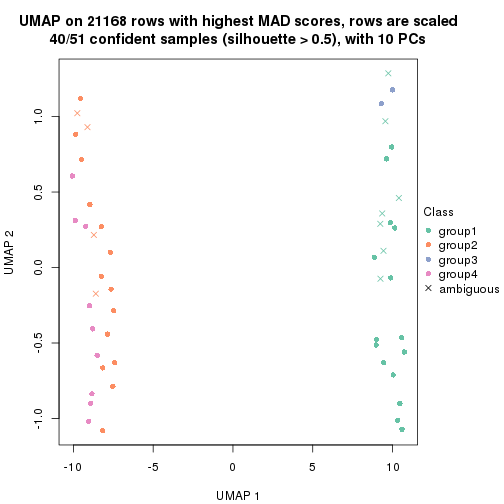
dimension_reduction(res, k = 5, method = "UMAP")
dimension_reduction(res, k = 6, method = "UMAP")
Following heatmap shows how subgroups are split when increasing k:
collect_classes(res)
Test correlation between subgroups and known annotations. If the known annotation is numeric, one-way ANOVA test is applied, and if the known annotation is discrete, chi-squared contingency table test is applied.
test_to_known_factors(res)
#> n cell.line(p) agent(p) time(p) k
#> MAD:kmeans 51 6.87e-12 0.527708 0.040552 2
#> MAD:kmeans 41 1.25e-09 0.036513 0.051573 3
#> MAD:kmeans 40 1.07e-08 0.009797 0.002399 4
#> MAD:kmeans 34 1.98e-07 0.031464 0.000455 5
#> MAD:kmeans 29 2.24e-06 0.000856 0.000226 6
If matrix rows can be associated to genes, consider to use GO_Enrichment(res,
...) to perform function enrichment for the signature genes.
The object with results only for a single top-value method and a single partition method can be extracted as:
res = res_list["MAD", "skmeans"]
# you can also extract it by
# res = res_list["MAD:skmeans"]
A summary of res and all the functions that can be applied to it:
res
#> A 'ConsensusPartition' object with k = 2, 3, 4, 5, 6.
#> On a matrix with 21168 rows and 51 columns.
#> Top rows (1000, 2000, 3000, 4000, 5000) are extracted by 'MAD' method.
#> Subgroups are detected by 'skmeans' method.
#> Performed in total 1250 partitions by row resampling.
#> Best k for subgroups seems to be 2.
#>
#> Following methods can be applied to this 'ConsensusPartition' object:
#> [1] "cola_report" "collect_classes" "collect_plots"
#> [4] "collect_stats" "colnames" "compare_signatures"
#> [7] "consensus_heatmap" "dimension_reduction" "functional_enrichment"
#> [10] "get_anno_col" "get_anno" "get_classes"
#> [13] "get_consensus" "get_matrix" "get_membership"
#> [16] "get_param" "get_signatures" "get_stats"
#> [19] "is_best_k" "is_stable_k" "membership_heatmap"
#> [22] "ncol" "nrow" "plot_ecdf"
#> [25] "rownames" "select_partition_number" "show"
#> [28] "suggest_best_k" "test_to_known_factors"
collect_plots() function collects all the plots made from res for all k (number of partitions)
into one single page to provide an easy and fast comparison between different k.
collect_plots(res)
The plots are:
k and the heatmap of
predicted classes for each k.k.k.k.All the plots in panels can be made by individual functions and they are plotted later in this section.
select_partition_number() produces several plots showing different
statistics for choosing “optimized” k. There are following statistics:
k;k, the area increased is defined as \(A_k - A_{k-1}\).The detailed explanations of these statistics can be found in the cola vignette.
Generally speaking, lower PAC score, higher mean silhouette score or higher
concordance corresponds to better partition. Rand index and Jaccard index
measure how similar the current partition is compared to partition with k-1.
If they are too similar, we won't accept k is better than k-1.
select_partition_number(res)

The numeric values for all these statistics can be obtained by get_stats().
get_stats(res)
#> k 1-PAC mean_silhouette concordance area_increased Rand Jaccard
#> 2 2 1.000 1.000 1.000 0.5087 0.492 0.492
#> 3 3 0.757 0.754 0.862 0.2661 0.862 0.719
#> 4 4 0.517 0.650 0.720 0.1208 1.000 1.000
#> 5 5 0.511 0.291 0.611 0.0759 0.882 0.674
#> 6 6 0.511 0.246 0.543 0.0503 0.879 0.589
suggest_best_k() suggests the best \(k\) based on these statistics. The rules are as follows:
NA.suggest_best_k(res)
#> [1] 2
Following shows the table of the partitions (You need to click the show/hide
code output link to see it). The membership matrix (columns with name p*)
is inferred by
clue::cl_consensus()
function with the SE method. Basically the value in the membership matrix
represents the probability to belong to a certain group. The finall class
label for an item is determined with the group with highest probability it
belongs to.
In get_classes() function, the entropy is calculated from the membership
matrix and the silhouette score is calculated from the consensus matrix.
cbind(get_classes(res, k = 2), get_membership(res, k = 2))
#> class entropy silhouette p1 p2
#> GSM312684 1 0 1 1 0
#> GSM312685 1 0 1 1 0
#> GSM312686 1 0 1 1 0
#> GSM312693 1 0 1 1 0
#> GSM312694 1 0 1 1 0
#> GSM312695 1 0 1 1 0
#> GSM312699 1 0 1 1 0
#> GSM312700 1 0 1 1 0
#> GSM312701 1 0 1 1 0
#> GSM312705 1 0 1 1 0
#> GSM312706 1 0 1 1 0
#> GSM312707 1 0 1 1 0
#> GSM312687 1 0 1 1 0
#> GSM312688 1 0 1 1 0
#> GSM312689 1 0 1 1 0
#> GSM312696 1 0 1 1 0
#> GSM312697 1 0 1 1 0
#> GSM312698 1 0 1 1 0
#> GSM312702 1 0 1 1 0
#> GSM312703 1 0 1 1 0
#> GSM312704 1 0 1 1 0
#> GSM312690 1 0 1 1 0
#> GSM312691 1 0 1 1 0
#> GSM312692 1 0 1 1 0
#> GSM312708 2 0 1 0 1
#> GSM312709 2 0 1 0 1
#> GSM312710 2 0 1 0 1
#> GSM312719 2 0 1 0 1
#> GSM312720 2 0 1 0 1
#> GSM312721 2 0 1 0 1
#> GSM312722 2 0 1 0 1
#> GSM312731 2 0 1 0 1
#> GSM312732 2 0 1 0 1
#> GSM312733 2 0 1 0 1
#> GSM312734 2 0 1 0 1
#> GSM312711 2 0 1 0 1
#> GSM312712 2 0 1 0 1
#> GSM312713 2 0 1 0 1
#> GSM312714 2 0 1 0 1
#> GSM312723 2 0 1 0 1
#> GSM312724 2 0 1 0 1
#> GSM312725 2 0 1 0 1
#> GSM312726 2 0 1 0 1
#> GSM312715 2 0 1 0 1
#> GSM312716 2 0 1 0 1
#> GSM312717 2 0 1 0 1
#> GSM312718 2 0 1 0 1
#> GSM312727 2 0 1 0 1
#> GSM312728 2 0 1 0 1
#> GSM312729 2 0 1 0 1
#> GSM312730 2 0 1 0 1
cbind(get_classes(res, k = 3), get_membership(res, k = 3))
#> class entropy silhouette p1 p2 p3
#> GSM312684 1 0.0892 0.9909 0.980 0.000 0.020
#> GSM312685 1 0.1031 0.9900 0.976 0.000 0.024
#> GSM312686 1 0.0892 0.9909 0.980 0.000 0.020
#> GSM312693 1 0.0237 0.9922 0.996 0.000 0.004
#> GSM312694 1 0.0747 0.9919 0.984 0.000 0.016
#> GSM312695 1 0.0892 0.9912 0.980 0.000 0.020
#> GSM312699 1 0.0000 0.9922 1.000 0.000 0.000
#> GSM312700 1 0.0747 0.9919 0.984 0.000 0.016
#> GSM312701 1 0.1031 0.9897 0.976 0.000 0.024
#> GSM312705 1 0.0000 0.9922 1.000 0.000 0.000
#> GSM312706 1 0.0237 0.9922 0.996 0.000 0.004
#> GSM312707 1 0.0000 0.9922 1.000 0.000 0.000
#> GSM312687 1 0.0424 0.9925 0.992 0.000 0.008
#> GSM312688 1 0.1031 0.9893 0.976 0.000 0.024
#> GSM312689 1 0.1163 0.9881 0.972 0.000 0.028
#> GSM312696 1 0.0000 0.9922 1.000 0.000 0.000
#> GSM312697 1 0.0000 0.9922 1.000 0.000 0.000
#> GSM312698 1 0.0000 0.9922 1.000 0.000 0.000
#> GSM312702 1 0.0000 0.9922 1.000 0.000 0.000
#> GSM312703 1 0.0424 0.9924 0.992 0.000 0.008
#> GSM312704 1 0.0000 0.9922 1.000 0.000 0.000
#> GSM312690 1 0.0892 0.9905 0.980 0.000 0.020
#> GSM312691 1 0.0747 0.9915 0.984 0.000 0.016
#> GSM312692 1 0.0592 0.9922 0.988 0.000 0.012
#> GSM312708 3 0.5529 0.5734 0.000 0.296 0.704
#> GSM312709 3 0.4605 0.6598 0.000 0.204 0.796
#> GSM312710 3 0.5431 0.6296 0.000 0.284 0.716
#> GSM312719 2 0.4796 0.6251 0.000 0.780 0.220
#> GSM312720 2 0.5254 0.5734 0.000 0.736 0.264
#> GSM312721 2 0.5650 0.4972 0.000 0.688 0.312
#> GSM312722 3 0.6307 0.0354 0.000 0.488 0.512
#> GSM312731 3 0.5327 0.6438 0.000 0.272 0.728
#> GSM312732 3 0.5016 0.6178 0.000 0.240 0.760
#> GSM312733 3 0.5431 0.5884 0.000 0.284 0.716
#> GSM312734 3 0.2165 0.6520 0.000 0.064 0.936
#> GSM312711 2 0.6062 0.3080 0.000 0.616 0.384
#> GSM312712 3 0.6126 0.4066 0.000 0.400 0.600
#> GSM312713 3 0.5138 0.6233 0.000 0.252 0.748
#> GSM312714 2 0.6308 -0.1349 0.000 0.508 0.492
#> GSM312723 2 0.3941 0.6513 0.000 0.844 0.156
#> GSM312724 2 0.4887 0.5937 0.000 0.772 0.228
#> GSM312725 2 0.2448 0.6797 0.000 0.924 0.076
#> GSM312726 2 0.3816 0.6662 0.000 0.852 0.148
#> GSM312715 3 0.5138 0.6629 0.000 0.252 0.748
#> GSM312716 2 0.6045 0.4192 0.000 0.620 0.380
#> GSM312717 2 0.1964 0.6777 0.000 0.944 0.056
#> GSM312718 2 0.5733 0.4858 0.000 0.676 0.324
#> GSM312727 2 0.3619 0.6713 0.000 0.864 0.136
#> GSM312728 2 0.2625 0.6716 0.000 0.916 0.084
#> GSM312729 2 0.4605 0.6421 0.000 0.796 0.204
#> GSM312730 2 0.5291 0.5640 0.000 0.732 0.268
cbind(get_classes(res, k = 4), get_membership(res, k = 4))
#> class entropy silhouette p1 p2 p3 p4
#> GSM312684 1 0.454 0.8551 0.676 0.000 NA 0.000
#> GSM312685 1 0.483 0.8258 0.608 0.000 NA 0.000
#> GSM312686 1 0.460 0.8520 0.664 0.000 NA 0.000
#> GSM312693 1 0.322 0.8795 0.836 0.000 NA 0.000
#> GSM312694 1 0.404 0.8694 0.752 0.000 NA 0.000
#> GSM312695 1 0.394 0.8758 0.764 0.000 NA 0.000
#> GSM312699 1 0.215 0.8756 0.912 0.000 NA 0.000
#> GSM312700 1 0.391 0.8735 0.768 0.000 NA 0.000
#> GSM312701 1 0.387 0.8793 0.772 0.000 NA 0.000
#> GSM312705 1 0.322 0.8768 0.836 0.000 NA 0.000
#> GSM312706 1 0.353 0.8765 0.808 0.000 NA 0.000
#> GSM312707 1 0.215 0.8701 0.912 0.000 NA 0.000
#> GSM312687 1 0.438 0.8487 0.704 0.000 NA 0.000
#> GSM312688 1 0.470 0.8327 0.644 0.000 NA 0.000
#> GSM312689 1 0.458 0.8486 0.668 0.000 NA 0.000
#> GSM312696 1 0.215 0.8709 0.912 0.000 NA 0.000
#> GSM312697 1 0.247 0.8741 0.892 0.000 NA 0.000
#> GSM312698 1 0.215 0.8690 0.912 0.000 NA 0.000
#> GSM312702 1 0.247 0.8793 0.892 0.000 NA 0.000
#> GSM312703 1 0.215 0.8770 0.912 0.000 NA 0.000
#> GSM312704 1 0.215 0.8784 0.912 0.000 NA 0.000
#> GSM312690 1 0.441 0.8627 0.700 0.000 NA 0.000
#> GSM312691 1 0.471 0.8366 0.640 0.000 NA 0.000
#> GSM312692 1 0.410 0.8739 0.744 0.000 NA 0.000
#> GSM312708 4 0.619 0.4180 0.000 0.288 NA 0.628
#> GSM312709 4 0.487 0.5540 0.000 0.148 NA 0.776
#> GSM312710 4 0.594 0.5024 0.000 0.248 NA 0.668
#> GSM312719 2 0.627 0.5354 0.000 0.664 NA 0.188
#> GSM312720 2 0.540 0.5293 0.000 0.720 NA 0.212
#> GSM312721 2 0.658 0.4689 0.000 0.624 NA 0.232
#> GSM312722 4 0.683 0.0985 0.000 0.420 NA 0.480
#> GSM312731 4 0.666 0.4707 0.000 0.244 NA 0.612
#> GSM312732 4 0.662 0.4772 0.000 0.196 NA 0.628
#> GSM312733 4 0.691 0.4405 0.000 0.212 NA 0.592
#> GSM312734 4 0.360 0.5613 0.000 0.056 NA 0.860
#> GSM312711 2 0.758 0.0962 0.000 0.468 NA 0.316
#> GSM312712 4 0.704 0.1221 0.000 0.416 NA 0.464
#> GSM312713 4 0.536 0.4891 0.000 0.224 NA 0.716
#> GSM312714 2 0.704 0.0404 0.000 0.492 NA 0.384
#> GSM312723 2 0.553 0.5584 0.000 0.732 NA 0.132
#> GSM312724 2 0.547 0.5497 0.000 0.724 NA 0.192
#> GSM312725 2 0.368 0.6186 0.000 0.856 NA 0.084
#> GSM312726 2 0.398 0.6230 0.000 0.836 NA 0.108
#> GSM312715 4 0.563 0.5249 0.000 0.216 NA 0.704
#> GSM312716 2 0.699 0.3196 0.000 0.556 NA 0.296
#> GSM312717 2 0.430 0.6234 0.000 0.820 NA 0.096
#> GSM312718 2 0.643 0.5189 0.000 0.648 NA 0.192
#> GSM312727 2 0.453 0.6029 0.000 0.800 NA 0.132
#> GSM312728 2 0.422 0.6096 0.000 0.824 NA 0.072
#> GSM312729 2 0.529 0.5282 0.000 0.724 NA 0.216
#> GSM312730 2 0.566 0.5070 0.000 0.696 NA 0.228
cbind(get_classes(res, k = 5), get_membership(res, k = 5))
#> class entropy silhouette p1 p2 p3 p4 p5
#> GSM312684 3 0.545 2.10e-01 0.452 0.000 0.488 0.060 0.000
#> GSM312685 3 0.576 4.36e-01 0.336 0.000 0.560 0.104 0.000
#> GSM312686 3 0.540 3.02e-01 0.456 0.000 0.488 0.056 0.000
#> GSM312693 1 0.501 3.88e-01 0.684 0.000 0.232 0.084 0.000
#> GSM312694 1 0.528 -4.34e-05 0.548 0.000 0.400 0.052 0.000
#> GSM312695 1 0.511 2.42e-01 0.640 0.000 0.296 0.064 0.000
#> GSM312699 1 0.332 5.11e-01 0.840 0.000 0.116 0.044 0.000
#> GSM312700 1 0.533 1.08e-01 0.568 0.000 0.372 0.060 0.000
#> GSM312701 1 0.490 1.77e-01 0.592 0.000 0.376 0.032 0.000
#> GSM312705 1 0.430 4.43e-01 0.744 0.000 0.208 0.048 0.000
#> GSM312706 1 0.430 4.39e-01 0.740 0.000 0.216 0.044 0.000
#> GSM312707 1 0.263 5.26e-01 0.884 0.000 0.088 0.028 0.000
#> GSM312687 3 0.590 2.59e-01 0.444 0.000 0.456 0.100 0.000
#> GSM312688 3 0.553 3.72e-01 0.392 0.000 0.536 0.072 0.000
#> GSM312689 1 0.529 -1.13e-01 0.504 0.000 0.448 0.048 0.000
#> GSM312696 1 0.243 5.15e-01 0.900 0.000 0.064 0.036 0.000
#> GSM312697 1 0.285 5.08e-01 0.868 0.000 0.104 0.028 0.000
#> GSM312698 1 0.255 5.23e-01 0.892 0.000 0.072 0.036 0.000
#> GSM312702 1 0.403 4.47e-01 0.776 0.000 0.176 0.048 0.000
#> GSM312703 1 0.353 4.78e-01 0.816 0.000 0.148 0.036 0.000
#> GSM312704 1 0.295 5.00e-01 0.860 0.000 0.112 0.028 0.000
#> GSM312690 1 0.554 -1.81e-01 0.500 0.000 0.432 0.068 0.000
#> GSM312691 3 0.539 3.42e-01 0.396 0.000 0.544 0.060 0.000
#> GSM312692 1 0.530 6.12e-02 0.580 0.000 0.360 0.060 0.000
#> GSM312708 5 0.553 2.81e-01 0.000 0.248 0.008 0.096 0.648
#> GSM312709 5 0.369 2.57e-01 0.000 0.124 0.008 0.044 0.824
#> GSM312710 5 0.660 1.57e-01 0.000 0.216 0.020 0.208 0.556
#> GSM312719 2 0.686 3.27e-01 0.000 0.528 0.028 0.236 0.208
#> GSM312720 2 0.582 4.07e-01 0.000 0.632 0.020 0.092 0.256
#> GSM312721 2 0.715 3.10e-01 0.000 0.508 0.044 0.212 0.236
#> GSM312722 5 0.690 9.32e-02 0.000 0.356 0.028 0.152 0.464
#> GSM312731 5 0.720 -1.69e-01 0.000 0.220 0.028 0.316 0.436
#> GSM312732 4 0.621 4.64e-01 0.000 0.132 0.004 0.512 0.352
#> GSM312733 4 0.667 4.38e-01 0.000 0.148 0.016 0.460 0.376
#> GSM312734 5 0.538 -1.93e-01 0.000 0.064 0.016 0.260 0.660
#> GSM312711 2 0.703 -1.20e-01 0.000 0.396 0.020 0.388 0.196
#> GSM312712 5 0.694 2.15e-02 0.000 0.308 0.016 0.216 0.460
#> GSM312713 5 0.572 2.28e-01 0.000 0.196 0.012 0.136 0.656
#> GSM312714 5 0.692 -1.41e-02 0.000 0.396 0.016 0.188 0.400
#> GSM312723 2 0.601 4.60e-01 0.000 0.640 0.040 0.232 0.088
#> GSM312724 2 0.607 4.46e-01 0.000 0.660 0.044 0.148 0.148
#> GSM312725 2 0.453 5.27e-01 0.000 0.788 0.036 0.112 0.064
#> GSM312726 2 0.451 5.23e-01 0.000 0.788 0.028 0.100 0.084
#> GSM312715 5 0.666 1.04e-02 0.000 0.204 0.016 0.248 0.532
#> GSM312716 2 0.681 2.32e-01 0.000 0.520 0.040 0.128 0.312
#> GSM312717 2 0.494 5.16e-01 0.000 0.748 0.020 0.112 0.120
#> GSM312718 2 0.706 3.36e-01 0.000 0.544 0.056 0.196 0.204
#> GSM312727 2 0.468 5.03e-01 0.000 0.768 0.024 0.072 0.136
#> GSM312728 2 0.536 5.00e-01 0.000 0.712 0.028 0.164 0.096
#> GSM312729 2 0.567 4.28e-01 0.000 0.660 0.012 0.128 0.200
#> GSM312730 2 0.604 3.70e-01 0.000 0.624 0.020 0.128 0.228
cbind(get_classes(res, k = 6), get_membership(res, k = 6))
#> class entropy silhouette p1 p2 p3 p4 p5 p6
#> GSM312684 3 0.506 0.3324 0.336 0.000 0.580 0.004 NA 0.000
#> GSM312685 3 0.564 0.2774 0.348 0.000 0.516 0.008 NA 0.000
#> GSM312686 3 0.509 0.3063 0.336 0.000 0.568 0.000 NA 0.000
#> GSM312693 1 0.475 0.2720 0.656 0.000 0.272 0.004 NA 0.004
#> GSM312694 3 0.551 0.2035 0.428 0.000 0.468 0.004 NA 0.004
#> GSM312695 1 0.556 -0.0712 0.508 0.000 0.376 0.004 NA 0.004
#> GSM312699 1 0.335 0.4376 0.816 0.000 0.140 0.000 NA 0.008
#> GSM312700 3 0.573 0.1864 0.432 0.000 0.436 0.004 NA 0.004
#> GSM312701 3 0.520 0.1704 0.452 0.000 0.476 0.004 NA 0.004
#> GSM312705 1 0.493 0.3689 0.688 0.000 0.176 0.000 NA 0.016
#> GSM312706 1 0.488 0.2373 0.620 0.000 0.312 0.012 NA 0.000
#> GSM312707 1 0.371 0.4370 0.788 0.000 0.144 0.000 NA 0.004
#> GSM312687 1 0.598 -0.1523 0.412 0.000 0.392 0.000 NA 0.004
#> GSM312688 3 0.585 0.2282 0.336 0.000 0.460 0.000 NA 0.000
#> GSM312689 3 0.592 0.2701 0.364 0.000 0.480 0.008 NA 0.004
#> GSM312696 1 0.308 0.4673 0.852 0.000 0.080 0.004 NA 0.004
#> GSM312697 1 0.367 0.4505 0.808 0.000 0.100 0.000 NA 0.012
#> GSM312698 1 0.206 0.4713 0.912 0.000 0.052 0.000 NA 0.004
#> GSM312702 1 0.536 0.2251 0.612 0.000 0.232 0.000 NA 0.008
#> GSM312703 1 0.439 0.3922 0.744 0.000 0.152 0.008 NA 0.004
#> GSM312704 1 0.368 0.3951 0.784 0.000 0.160 0.000 NA 0.004
#> GSM312690 1 0.583 -0.1149 0.456 0.000 0.348 0.000 NA 0.000
#> GSM312691 3 0.591 0.2734 0.324 0.000 0.492 0.000 NA 0.008
#> GSM312692 1 0.540 -0.0831 0.488 0.000 0.408 0.004 NA 0.000
#> GSM312708 6 0.646 0.2616 0.000 0.264 0.004 0.136 NA 0.532
#> GSM312709 6 0.466 0.3351 0.000 0.084 0.004 0.112 NA 0.752
#> GSM312710 6 0.658 0.1289 0.000 0.136 0.004 0.260 NA 0.524
#> GSM312719 2 0.747 0.2232 0.000 0.400 0.004 0.256 NA 0.188
#> GSM312720 2 0.640 0.2938 0.000 0.564 0.004 0.088 NA 0.228
#> GSM312721 2 0.746 0.1663 0.000 0.372 0.000 0.272 NA 0.188
#> GSM312722 6 0.712 0.1395 0.000 0.244 0.000 0.220 NA 0.432
#> GSM312731 4 0.710 0.1182 0.000 0.136 0.008 0.464 NA 0.276
#> GSM312732 4 0.483 0.2934 0.000 0.064 0.012 0.724 NA 0.172
#> GSM312733 4 0.527 0.2929 0.000 0.084 0.004 0.700 NA 0.140
#> GSM312734 6 0.570 0.1565 0.000 0.056 0.000 0.344 NA 0.544
#> GSM312711 4 0.701 0.1834 0.000 0.228 0.008 0.500 NA 0.128
#> GSM312712 4 0.671 0.1699 0.000 0.248 0.000 0.472 NA 0.220
#> GSM312713 6 0.662 0.3101 0.000 0.184 0.008 0.116 NA 0.564
#> GSM312714 2 0.713 -0.0192 0.000 0.376 0.008 0.356 NA 0.188
#> GSM312723 2 0.633 0.2636 0.000 0.532 0.008 0.300 NA 0.060
#> GSM312724 2 0.661 0.2572 0.000 0.544 0.004 0.212 NA 0.148
#> GSM312725 2 0.466 0.4075 0.000 0.756 0.008 0.096 NA 0.040
#> GSM312726 2 0.565 0.4028 0.000 0.652 0.000 0.072 NA 0.156
#> GSM312715 6 0.684 0.1598 0.000 0.152 0.000 0.316 NA 0.444
#> GSM312716 2 0.747 0.1147 0.000 0.380 0.008 0.132 NA 0.308
#> GSM312717 2 0.581 0.3899 0.000 0.636 0.000 0.168 NA 0.112
#> GSM312718 2 0.763 0.1584 0.000 0.372 0.004 0.208 NA 0.232
#> GSM312727 2 0.510 0.4101 0.000 0.724 0.008 0.076 NA 0.116
#> GSM312728 2 0.615 0.2810 0.000 0.572 0.016 0.268 NA 0.040
#> GSM312729 2 0.607 0.3665 0.000 0.616 0.004 0.124 NA 0.176
#> GSM312730 2 0.656 0.2869 0.000 0.552 0.000 0.164 NA 0.164
Heatmaps for the consensus matrix. It visualizes the probability of two samples to be in a same group.
consensus_heatmap(res, k = 2)

consensus_heatmap(res, k = 3)
consensus_heatmap(res, k = 4)
consensus_heatmap(res, k = 5)
consensus_heatmap(res, k = 6)
Heatmaps for the membership of samples in all partitions to see how consistent they are:
membership_heatmap(res, k = 2)

membership_heatmap(res, k = 3)
membership_heatmap(res, k = 4)
membership_heatmap(res, k = 5)
membership_heatmap(res, k = 6)
As soon as we have had the classes for columns, we can look for signatures which are significantly different between classes which can be candidate marks for certain classes. Following are the heatmaps for signatures.
Signature heatmaps where rows are scaled:
get_signatures(res, k = 2)

get_signatures(res, k = 3)
get_signatures(res, k = 4)
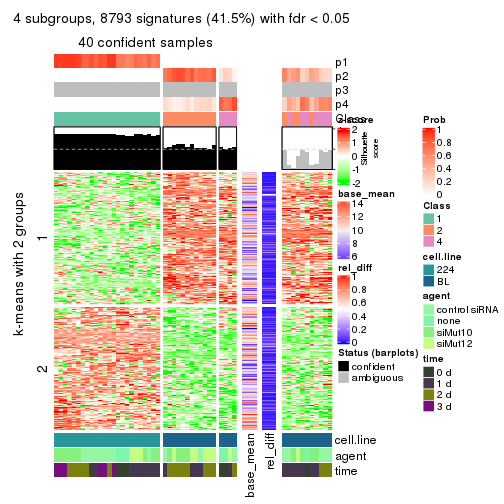
get_signatures(res, k = 5)
get_signatures(res, k = 6)

Signature heatmaps where rows are not scaled:
get_signatures(res, k = 2, scale_rows = FALSE)

get_signatures(res, k = 3, scale_rows = FALSE)
get_signatures(res, k = 4, scale_rows = FALSE)
get_signatures(res, k = 5, scale_rows = FALSE)
get_signatures(res, k = 6, scale_rows = FALSE)

Compare the overlap of signatures from different k:
compare_signatures(res)
get_signature() returns a data frame invisibly. TO get the list of signatures, the function
call should be assigned to a variable explicitly. In following code, if plot argument is set
to FALSE, no heatmap is plotted while only the differential analysis is performed.
# code only for demonstration
tb = get_signature(res, k = ..., plot = FALSE)
An example of the output of tb is:
#> which_row fdr mean_1 mean_2 scaled_mean_1 scaled_mean_2 km
#> 1 38 0.042760348 8.373488 9.131774 -0.5533452 0.5164555 1
#> 2 40 0.018707592 7.106213 8.469186 -0.6173731 0.5762149 1
#> 3 55 0.019134737 10.221463 11.207825 -0.6159697 0.5749050 1
#> 4 59 0.006059896 5.921854 7.869574 -0.6899429 0.6439467 1
#> 5 60 0.018055526 8.928898 10.211722 -0.6204761 0.5791110 1
#> 6 98 0.009384629 15.714769 14.887706 0.6635654 -0.6193277 2
...
The columns in tb are:
which_row: row indices corresponding to the input matrix.fdr: FDR for the differential test. mean_x: The mean value in group x.scaled_mean_x: The mean value in group x after rows are scaled.km: Row groups if k-means clustering is applied to rows.UMAP plot which shows how samples are separated.
dimension_reduction(res, k = 2, method = "UMAP")
dimension_reduction(res, k = 3, method = "UMAP")
dimension_reduction(res, k = 4, method = "UMAP")
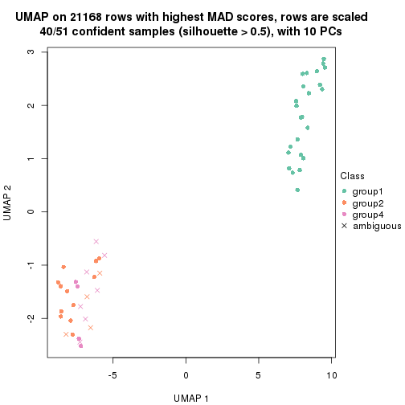
dimension_reduction(res, k = 5, method = "UMAP")
dimension_reduction(res, k = 6, method = "UMAP")
Following heatmap shows how subgroups are split when increasing k:
collect_classes(res)
Test correlation between subgroups and known annotations. If the known annotation is numeric, one-way ANOVA test is applied, and if the known annotation is discrete, chi-squared contingency table test is applied.
test_to_known_factors(res)
#> n cell.line(p) agent(p) time(p) k
#> MAD:skmeans 51 6.87e-12 0.5277 0.0406 2
#> MAD:skmeans 44 2.79e-10 0.0801 0.0309 3
#> MAD:skmeans 40 2.06e-09 0.0402 0.0290 4
#> MAD:skmeans 9 2.01e-02 0.1262 0.3575 5
#> MAD:skmeans 0 NA NA NA 6
If matrix rows can be associated to genes, consider to use GO_Enrichment(res,
...) to perform function enrichment for the signature genes.
The object with results only for a single top-value method and a single partition method can be extracted as:
res = res_list["MAD", "pam"]
# you can also extract it by
# res = res_list["MAD:pam"]
A summary of res and all the functions that can be applied to it:
res
#> A 'ConsensusPartition' object with k = 2, 3, 4, 5, 6.
#> On a matrix with 21168 rows and 51 columns.
#> Top rows (1000, 2000, 3000, 4000, 5000) are extracted by 'MAD' method.
#> Subgroups are detected by 'pam' method.
#> Performed in total 1250 partitions by row resampling.
#> Best k for subgroups seems to be 2.
#>
#> Following methods can be applied to this 'ConsensusPartition' object:
#> [1] "cola_report" "collect_classes" "collect_plots"
#> [4] "collect_stats" "colnames" "compare_signatures"
#> [7] "consensus_heatmap" "dimension_reduction" "functional_enrichment"
#> [10] "get_anno_col" "get_anno" "get_classes"
#> [13] "get_consensus" "get_matrix" "get_membership"
#> [16] "get_param" "get_signatures" "get_stats"
#> [19] "is_best_k" "is_stable_k" "membership_heatmap"
#> [22] "ncol" "nrow" "plot_ecdf"
#> [25] "rownames" "select_partition_number" "show"
#> [28] "suggest_best_k" "test_to_known_factors"
collect_plots() function collects all the plots made from res for all k (number of partitions)
into one single page to provide an easy and fast comparison between different k.
collect_plots(res)
The plots are:
k and the heatmap of
predicted classes for each k.k.k.k.All the plots in panels can be made by individual functions and they are plotted later in this section.
select_partition_number() produces several plots showing different
statistics for choosing “optimized” k. There are following statistics:
k;k, the area increased is defined as \(A_k - A_{k-1}\).The detailed explanations of these statistics can be found in the cola vignette.
Generally speaking, lower PAC score, higher mean silhouette score or higher
concordance corresponds to better partition. Rand index and Jaccard index
measure how similar the current partition is compared to partition with k-1.
If they are too similar, we won't accept k is better than k-1.
select_partition_number(res)
The numeric values for all these statistics can be obtained by get_stats().
get_stats(res)
#> k 1-PAC mean_silhouette concordance area_increased Rand Jaccard
#> 2 2 1.000 1.000 1.000 0.5087 0.492 0.492
#> 3 3 0.747 0.607 0.777 0.1933 0.881 0.758
#> 4 4 0.621 0.645 0.810 0.0739 0.844 0.647
#> 5 5 0.602 0.613 0.788 0.0493 0.962 0.896
#> 6 6 0.582 0.591 0.774 0.0334 0.984 0.950
suggest_best_k() suggests the best \(k\) based on these statistics. The rules are as follows:
NA.suggest_best_k(res)
#> [1] 2
Following shows the table of the partitions (You need to click the show/hide
code output link to see it). The membership matrix (columns with name p*)
is inferred by
clue::cl_consensus()
function with the SE method. Basically the value in the membership matrix
represents the probability to belong to a certain group. The finall class
label for an item is determined with the group with highest probability it
belongs to.
In get_classes() function, the entropy is calculated from the membership
matrix and the silhouette score is calculated from the consensus matrix.
cbind(get_classes(res, k = 2), get_membership(res, k = 2))
#> class entropy silhouette p1 p2
#> GSM312684 1 0 1 1 0
#> GSM312685 1 0 1 1 0
#> GSM312686 1 0 1 1 0
#> GSM312693 1 0 1 1 0
#> GSM312694 1 0 1 1 0
#> GSM312695 1 0 1 1 0
#> GSM312699 1 0 1 1 0
#> GSM312700 1 0 1 1 0
#> GSM312701 1 0 1 1 0
#> GSM312705 1 0 1 1 0
#> GSM312706 1 0 1 1 0
#> GSM312707 1 0 1 1 0
#> GSM312687 1 0 1 1 0
#> GSM312688 1 0 1 1 0
#> GSM312689 1 0 1 1 0
#> GSM312696 1 0 1 1 0
#> GSM312697 1 0 1 1 0
#> GSM312698 1 0 1 1 0
#> GSM312702 1 0 1 1 0
#> GSM312703 1 0 1 1 0
#> GSM312704 1 0 1 1 0
#> GSM312690 1 0 1 1 0
#> GSM312691 1 0 1 1 0
#> GSM312692 1 0 1 1 0
#> GSM312708 2 0 1 0 1
#> GSM312709 2 0 1 0 1
#> GSM312710 2 0 1 0 1
#> GSM312719 2 0 1 0 1
#> GSM312720 2 0 1 0 1
#> GSM312721 2 0 1 0 1
#> GSM312722 2 0 1 0 1
#> GSM312731 2 0 1 0 1
#> GSM312732 2 0 1 0 1
#> GSM312733 2 0 1 0 1
#> GSM312734 2 0 1 0 1
#> GSM312711 2 0 1 0 1
#> GSM312712 2 0 1 0 1
#> GSM312713 2 0 1 0 1
#> GSM312714 2 0 1 0 1
#> GSM312723 2 0 1 0 1
#> GSM312724 2 0 1 0 1
#> GSM312725 2 0 1 0 1
#> GSM312726 2 0 1 0 1
#> GSM312715 2 0 1 0 1
#> GSM312716 2 0 1 0 1
#> GSM312717 2 0 1 0 1
#> GSM312718 2 0 1 0 1
#> GSM312727 2 0 1 0 1
#> GSM312728 2 0 1 0 1
#> GSM312729 2 0 1 0 1
#> GSM312730 2 0 1 0 1
cbind(get_classes(res, k = 3), get_membership(res, k = 3))
#> class entropy silhouette p1 p2 p3
#> GSM312684 1 0.0747 0.982 0.984 0.000 0.016
#> GSM312685 1 0.0747 0.982 0.984 0.000 0.016
#> GSM312686 1 0.0237 0.982 0.996 0.000 0.004
#> GSM312693 1 0.0237 0.982 0.996 0.000 0.004
#> GSM312694 1 0.0592 0.982 0.988 0.000 0.012
#> GSM312695 1 0.0237 0.982 0.996 0.000 0.004
#> GSM312699 1 0.0237 0.982 0.996 0.000 0.004
#> GSM312700 1 0.0892 0.980 0.980 0.000 0.020
#> GSM312701 1 0.0592 0.982 0.988 0.000 0.012
#> GSM312705 1 0.0237 0.982 0.996 0.000 0.004
#> GSM312706 1 0.0000 0.982 1.000 0.000 0.000
#> GSM312707 1 0.0747 0.981 0.984 0.000 0.016
#> GSM312687 1 0.1753 0.962 0.952 0.000 0.048
#> GSM312688 1 0.1964 0.965 0.944 0.000 0.056
#> GSM312689 1 0.0747 0.980 0.984 0.000 0.016
#> GSM312696 1 0.0237 0.982 0.996 0.000 0.004
#> GSM312697 1 0.0424 0.982 0.992 0.000 0.008
#> GSM312698 1 0.0747 0.981 0.984 0.000 0.016
#> GSM312702 1 0.1031 0.979 0.976 0.000 0.024
#> GSM312703 1 0.0592 0.981 0.988 0.000 0.012
#> GSM312704 1 0.0892 0.980 0.980 0.000 0.020
#> GSM312690 1 0.0592 0.982 0.988 0.000 0.012
#> GSM312691 1 0.5363 0.754 0.724 0.000 0.276
#> GSM312692 1 0.0237 0.982 0.996 0.000 0.004
#> GSM312708 3 0.6215 0.764 0.000 0.428 0.572
#> GSM312709 2 0.5254 0.264 0.000 0.736 0.264
#> GSM312710 2 0.4555 0.447 0.000 0.800 0.200
#> GSM312719 3 0.6291 0.716 0.000 0.468 0.532
#> GSM312720 3 0.6274 0.746 0.000 0.456 0.544
#> GSM312721 2 0.6244 -0.471 0.000 0.560 0.440
#> GSM312722 2 0.6168 -0.344 0.000 0.588 0.412
#> GSM312731 2 0.2878 0.481 0.000 0.904 0.096
#> GSM312732 2 0.2066 0.488 0.000 0.940 0.060
#> GSM312733 2 0.2448 0.479 0.000 0.924 0.076
#> GSM312734 2 0.3116 0.476 0.000 0.892 0.108
#> GSM312711 2 0.6215 -0.312 0.000 0.572 0.428
#> GSM312712 2 0.4654 0.397 0.000 0.792 0.208
#> GSM312713 2 0.6309 -0.503 0.000 0.504 0.496
#> GSM312714 2 0.2356 0.484 0.000 0.928 0.072
#> GSM312723 2 0.2796 0.480 0.000 0.908 0.092
#> GSM312724 2 0.6260 -0.434 0.000 0.552 0.448
#> GSM312725 3 0.6095 0.741 0.000 0.392 0.608
#> GSM312726 3 0.6309 0.432 0.000 0.500 0.500
#> GSM312715 2 0.6192 -0.264 0.000 0.580 0.420
#> GSM312716 3 0.6309 0.631 0.000 0.500 0.500
#> GSM312717 2 0.4291 0.426 0.000 0.820 0.180
#> GSM312718 3 0.6192 0.750 0.000 0.420 0.580
#> GSM312727 3 0.6215 0.568 0.000 0.428 0.572
#> GSM312728 2 0.5733 0.263 0.000 0.676 0.324
#> GSM312729 2 0.6235 -0.212 0.000 0.564 0.436
#> GSM312730 2 0.5859 0.170 0.000 0.656 0.344
cbind(get_classes(res, k = 4), get_membership(res, k = 4))
#> class entropy silhouette p1 p2 p3 p4
#> GSM312684 1 0.2281 0.895 0.904 0.000 0.096 0.000
#> GSM312685 1 0.2412 0.891 0.908 0.000 0.084 0.008
#> GSM312686 1 0.0707 0.900 0.980 0.000 0.020 0.000
#> GSM312693 1 0.0707 0.902 0.980 0.000 0.020 0.000
#> GSM312694 1 0.1398 0.902 0.956 0.000 0.040 0.004
#> GSM312695 1 0.1211 0.896 0.960 0.000 0.040 0.000
#> GSM312699 1 0.0921 0.898 0.972 0.000 0.028 0.000
#> GSM312700 1 0.3266 0.837 0.832 0.000 0.168 0.000
#> GSM312701 1 0.1302 0.898 0.956 0.000 0.044 0.000
#> GSM312705 1 0.0592 0.901 0.984 0.000 0.016 0.000
#> GSM312706 1 0.1109 0.899 0.968 0.000 0.028 0.004
#> GSM312707 1 0.2011 0.889 0.920 0.000 0.080 0.000
#> GSM312687 1 0.6437 0.468 0.648 0.000 0.168 0.184
#> GSM312688 1 0.5466 0.695 0.712 0.000 0.220 0.068
#> GSM312689 1 0.3024 0.831 0.852 0.000 0.148 0.000
#> GSM312696 1 0.0779 0.901 0.980 0.000 0.016 0.004
#> GSM312697 1 0.1109 0.902 0.968 0.000 0.028 0.004
#> GSM312698 1 0.2593 0.882 0.892 0.000 0.104 0.004
#> GSM312702 1 0.3710 0.815 0.804 0.000 0.192 0.004
#> GSM312703 1 0.2530 0.882 0.896 0.000 0.100 0.004
#> GSM312704 1 0.3172 0.833 0.840 0.000 0.160 0.000
#> GSM312690 1 0.1398 0.901 0.956 0.000 0.040 0.004
#> GSM312691 3 0.3486 0.000 0.188 0.000 0.812 0.000
#> GSM312692 1 0.1211 0.896 0.960 0.000 0.040 0.000
#> GSM312708 2 0.1398 0.641 0.000 0.956 0.004 0.040
#> GSM312709 2 0.4830 -0.140 0.000 0.608 0.000 0.392
#> GSM312710 4 0.5268 0.528 0.000 0.452 0.008 0.540
#> GSM312719 2 0.2216 0.638 0.000 0.908 0.000 0.092
#> GSM312720 2 0.2053 0.633 0.000 0.924 0.004 0.072
#> GSM312721 2 0.3751 0.571 0.000 0.800 0.004 0.196
#> GSM312722 2 0.4262 0.510 0.000 0.756 0.008 0.236
#> GSM312731 4 0.4843 0.701 0.000 0.396 0.000 0.604
#> GSM312732 4 0.4769 0.719 0.000 0.308 0.008 0.684
#> GSM312733 4 0.4817 0.702 0.000 0.388 0.000 0.612
#> GSM312734 4 0.5070 0.664 0.000 0.372 0.008 0.620
#> GSM312711 2 0.3908 0.505 0.000 0.784 0.004 0.212
#> GSM312712 2 0.4992 -0.438 0.000 0.524 0.000 0.476
#> GSM312713 2 0.3306 0.581 0.000 0.840 0.004 0.156
#> GSM312714 4 0.4866 0.700 0.000 0.404 0.000 0.596
#> GSM312723 4 0.4836 0.692 0.000 0.320 0.008 0.672
#> GSM312724 2 0.4387 0.531 0.000 0.752 0.012 0.236
#> GSM312725 2 0.0804 0.636 0.000 0.980 0.008 0.012
#> GSM312726 2 0.3810 0.566 0.000 0.804 0.008 0.188
#> GSM312715 2 0.4158 0.508 0.000 0.768 0.008 0.224
#> GSM312716 2 0.2921 0.590 0.000 0.860 0.000 0.140
#> GSM312717 4 0.4996 0.489 0.000 0.484 0.000 0.516
#> GSM312718 2 0.1211 0.644 0.000 0.960 0.000 0.040
#> GSM312727 2 0.3105 0.594 0.000 0.868 0.012 0.120
#> GSM312728 2 0.4855 -0.160 0.000 0.600 0.000 0.400
#> GSM312729 2 0.4606 0.453 0.000 0.724 0.012 0.264
#> GSM312730 2 0.5055 0.134 0.000 0.624 0.008 0.368
cbind(get_classes(res, k = 5), get_membership(res, k = 5))
#> class entropy silhouette p1 p2 p3 p4 p5
#> GSM312684 1 0.2818 0.8500 0.860 0.000 0.008 0.004 0.128
#> GSM312685 1 0.3750 0.7716 0.820 0.000 0.004 0.060 0.116
#> GSM312686 1 0.1364 0.8666 0.952 0.000 0.012 0.000 0.036
#> GSM312693 1 0.0865 0.8690 0.972 0.000 0.000 0.004 0.024
#> GSM312694 1 0.1386 0.8678 0.952 0.000 0.016 0.000 0.032
#> GSM312695 1 0.2157 0.8587 0.920 0.000 0.036 0.004 0.040
#> GSM312699 1 0.1124 0.8614 0.960 0.000 0.000 0.004 0.036
#> GSM312700 1 0.3862 0.7956 0.812 0.000 0.120 0.004 0.064
#> GSM312701 1 0.1525 0.8621 0.948 0.000 0.012 0.004 0.036
#> GSM312705 1 0.0955 0.8668 0.968 0.000 0.000 0.004 0.028
#> GSM312706 1 0.1082 0.8657 0.964 0.000 0.008 0.000 0.028
#> GSM312707 1 0.2248 0.8431 0.900 0.000 0.012 0.000 0.088
#> GSM312687 5 0.3966 0.0000 0.336 0.000 0.000 0.000 0.664
#> GSM312688 1 0.7147 0.1553 0.552 0.000 0.140 0.088 0.220
#> GSM312689 1 0.3435 0.7786 0.820 0.000 0.156 0.004 0.020
#> GSM312696 1 0.0798 0.8655 0.976 0.000 0.008 0.000 0.016
#> GSM312697 1 0.1082 0.8662 0.964 0.000 0.008 0.000 0.028
#> GSM312698 1 0.2685 0.8367 0.880 0.000 0.028 0.000 0.092
#> GSM312702 1 0.4002 0.7661 0.796 0.000 0.120 0.000 0.084
#> GSM312703 1 0.2685 0.8362 0.880 0.000 0.028 0.000 0.092
#> GSM312704 1 0.3642 0.7924 0.824 0.000 0.124 0.004 0.048
#> GSM312690 1 0.1522 0.8634 0.944 0.000 0.012 0.000 0.044
#> GSM312691 3 0.1544 0.0000 0.068 0.000 0.932 0.000 0.000
#> GSM312692 1 0.1525 0.8599 0.948 0.000 0.012 0.004 0.036
#> GSM312708 2 0.1364 0.6495 0.000 0.952 0.000 0.036 0.012
#> GSM312709 2 0.4331 -0.0379 0.000 0.596 0.000 0.400 0.004
#> GSM312710 4 0.5271 0.4807 0.000 0.392 0.008 0.564 0.036
#> GSM312719 2 0.2789 0.6392 0.000 0.880 0.008 0.092 0.020
#> GSM312720 2 0.1956 0.6411 0.000 0.928 0.012 0.052 0.008
#> GSM312721 2 0.3985 0.5726 0.000 0.772 0.004 0.196 0.028
#> GSM312722 2 0.4607 0.5178 0.000 0.720 0.004 0.228 0.048
#> GSM312731 4 0.4581 0.6169 0.000 0.360 0.004 0.624 0.012
#> GSM312732 4 0.4687 0.6403 0.000 0.200 0.012 0.736 0.052
#> GSM312733 4 0.4539 0.6564 0.000 0.320 0.008 0.660 0.012
#> GSM312734 4 0.5022 0.6385 0.000 0.276 0.016 0.672 0.036
#> GSM312711 2 0.4301 0.4438 0.000 0.728 0.008 0.244 0.020
#> GSM312712 4 0.5114 0.4329 0.000 0.456 0.004 0.512 0.028
#> GSM312713 2 0.3925 0.5475 0.000 0.784 0.004 0.180 0.032
#> GSM312714 4 0.4182 0.6430 0.000 0.352 0.000 0.644 0.004
#> GSM312723 4 0.5332 0.6289 0.000 0.216 0.024 0.692 0.068
#> GSM312724 2 0.5109 0.5556 0.000 0.720 0.028 0.192 0.060
#> GSM312725 2 0.1568 0.6416 0.000 0.944 0.020 0.000 0.036
#> GSM312726 2 0.4808 0.5684 0.000 0.748 0.028 0.172 0.052
#> GSM312715 2 0.4677 0.4695 0.000 0.716 0.012 0.236 0.036
#> GSM312716 2 0.2377 0.6109 0.000 0.872 0.000 0.128 0.000
#> GSM312717 4 0.4597 0.4249 0.000 0.424 0.000 0.564 0.012
#> GSM312718 2 0.1412 0.6520 0.000 0.952 0.008 0.036 0.004
#> GSM312727 2 0.4461 0.5763 0.000 0.776 0.016 0.144 0.064
#> GSM312728 2 0.4696 -0.1399 0.000 0.556 0.000 0.428 0.016
#> GSM312729 2 0.5391 0.4170 0.000 0.652 0.012 0.268 0.068
#> GSM312730 2 0.5402 -0.0468 0.000 0.528 0.004 0.420 0.048
cbind(get_classes(res, k = 6), get_membership(res, k = 6))
#> class entropy silhouette p1 p2 p3 p4 p5 p6
#> GSM312684 1 0.3419 0.8236 0.804 0.000 0.004 0.000 0.152 0.040
#> GSM312685 1 0.5254 0.5449 0.696 0.000 0.000 0.072 0.120 0.112
#> GSM312686 1 0.2182 0.8436 0.900 0.000 0.004 0.000 0.076 0.020
#> GSM312693 1 0.1092 0.8676 0.960 0.000 0.000 0.000 0.020 0.020
#> GSM312694 1 0.1492 0.8668 0.940 0.000 0.000 0.000 0.036 0.024
#> GSM312695 1 0.2797 0.8445 0.876 0.000 0.036 0.000 0.024 0.064
#> GSM312699 1 0.1245 0.8590 0.952 0.000 0.000 0.000 0.016 0.032
#> GSM312700 1 0.3605 0.8051 0.804 0.000 0.008 0.000 0.060 0.128
#> GSM312701 1 0.1480 0.8620 0.940 0.000 0.000 0.000 0.020 0.040
#> GSM312705 1 0.1176 0.8658 0.956 0.000 0.000 0.000 0.020 0.024
#> GSM312706 1 0.1405 0.8652 0.948 0.000 0.004 0.000 0.024 0.024
#> GSM312707 1 0.2491 0.8384 0.868 0.000 0.000 0.000 0.112 0.020
#> GSM312687 5 0.2300 0.0000 0.144 0.000 0.000 0.000 0.856 0.000
#> GSM312688 6 0.4484 0.0000 0.268 0.000 0.000 0.004 0.056 0.672
#> GSM312689 1 0.4022 0.7284 0.768 0.000 0.040 0.000 0.024 0.168
#> GSM312696 1 0.0914 0.8649 0.968 0.000 0.000 0.000 0.016 0.016
#> GSM312697 1 0.1334 0.8641 0.948 0.000 0.000 0.000 0.032 0.020
#> GSM312698 1 0.2752 0.8298 0.856 0.000 0.000 0.000 0.108 0.036
#> GSM312702 1 0.3838 0.7722 0.784 0.000 0.004 0.000 0.096 0.116
#> GSM312703 1 0.2680 0.8312 0.860 0.000 0.000 0.000 0.108 0.032
#> GSM312704 1 0.3155 0.8089 0.828 0.000 0.004 0.000 0.036 0.132
#> GSM312690 1 0.2022 0.8624 0.916 0.000 0.008 0.000 0.052 0.024
#> GSM312691 3 0.2494 0.0000 0.016 0.000 0.864 0.000 0.000 0.120
#> GSM312692 1 0.1552 0.8570 0.940 0.000 0.004 0.000 0.020 0.036
#> GSM312708 2 0.0972 0.6402 0.000 0.964 0.008 0.028 0.000 0.000
#> GSM312709 2 0.3899 -0.0043 0.000 0.592 0.004 0.404 0.000 0.000
#> GSM312710 4 0.5275 0.4035 0.000 0.384 0.016 0.548 0.012 0.040
#> GSM312719 2 0.2958 0.6297 0.000 0.864 0.024 0.088 0.004 0.020
#> GSM312720 2 0.1887 0.6311 0.000 0.924 0.016 0.048 0.000 0.012
#> GSM312721 2 0.3816 0.5607 0.000 0.760 0.028 0.200 0.000 0.012
#> GSM312722 2 0.4269 0.5301 0.000 0.724 0.036 0.220 0.000 0.020
#> GSM312731 4 0.4076 0.5727 0.000 0.348 0.012 0.636 0.000 0.004
#> GSM312732 4 0.5001 0.5173 0.000 0.104 0.040 0.740 0.024 0.092
#> GSM312733 4 0.3991 0.6226 0.000 0.300 0.012 0.680 0.000 0.008
#> GSM312734 4 0.5053 0.5940 0.000 0.240 0.036 0.672 0.008 0.044
#> GSM312711 2 0.4117 0.4086 0.000 0.708 0.016 0.256 0.000 0.020
#> GSM312712 4 0.4566 0.4342 0.000 0.428 0.028 0.540 0.000 0.004
#> GSM312713 2 0.4130 0.5303 0.000 0.756 0.016 0.184 0.004 0.040
#> GSM312714 4 0.3699 0.6070 0.000 0.336 0.004 0.660 0.000 0.000
#> GSM312723 4 0.5003 0.5935 0.000 0.180 0.064 0.708 0.008 0.040
#> GSM312724 2 0.4741 0.5711 0.000 0.728 0.068 0.156 0.000 0.048
#> GSM312725 2 0.1616 0.6332 0.000 0.932 0.048 0.000 0.000 0.020
#> GSM312726 2 0.5035 0.5565 0.000 0.716 0.044 0.164 0.012 0.064
#> GSM312715 2 0.4900 0.4227 0.000 0.668 0.044 0.256 0.004 0.028
#> GSM312716 2 0.2146 0.6139 0.000 0.880 0.000 0.116 0.000 0.004
#> GSM312717 4 0.4176 0.3788 0.000 0.404 0.016 0.580 0.000 0.000
#> GSM312718 2 0.1442 0.6434 0.000 0.944 0.004 0.040 0.000 0.012
#> GSM312727 2 0.5077 0.5479 0.000 0.720 0.064 0.148 0.012 0.056
#> GSM312728 2 0.4442 -0.1222 0.000 0.536 0.020 0.440 0.000 0.004
#> GSM312729 2 0.5772 0.3895 0.000 0.604 0.052 0.272 0.012 0.060
#> GSM312730 2 0.5658 -0.0664 0.000 0.480 0.028 0.432 0.012 0.048
Heatmaps for the consensus matrix. It visualizes the probability of two samples to be in a same group.
consensus_heatmap(res, k = 2)
consensus_heatmap(res, k = 3)
consensus_heatmap(res, k = 4)
consensus_heatmap(res, k = 5)
consensus_heatmap(res, k = 6)
Heatmaps for the membership of samples in all partitions to see how consistent they are:
membership_heatmap(res, k = 2)

membership_heatmap(res, k = 3)
membership_heatmap(res, k = 4)
membership_heatmap(res, k = 5)
membership_heatmap(res, k = 6)
As soon as we have had the classes for columns, we can look for signatures which are significantly different between classes which can be candidate marks for certain classes. Following are the heatmaps for signatures.
Signature heatmaps where rows are scaled:
get_signatures(res, k = 2)

get_signatures(res, k = 3)
get_signatures(res, k = 4)
get_signatures(res, k = 5)
get_signatures(res, k = 6)

Signature heatmaps where rows are not scaled:
get_signatures(res, k = 2, scale_rows = FALSE)

get_signatures(res, k = 3, scale_rows = FALSE)
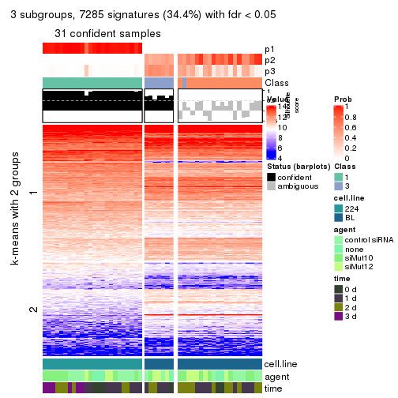
get_signatures(res, k = 4, scale_rows = FALSE)
get_signatures(res, k = 5, scale_rows = FALSE)

get_signatures(res, k = 6, scale_rows = FALSE)
Compare the overlap of signatures from different k:
compare_signatures(res)
get_signature() returns a data frame invisibly. TO get the list of signatures, the function
call should be assigned to a variable explicitly. In following code, if plot argument is set
to FALSE, no heatmap is plotted while only the differential analysis is performed.
# code only for demonstration
tb = get_signature(res, k = ..., plot = FALSE)
An example of the output of tb is:
#> which_row fdr mean_1 mean_2 scaled_mean_1 scaled_mean_2 km
#> 1 38 0.042760348 8.373488 9.131774 -0.5533452 0.5164555 1
#> 2 40 0.018707592 7.106213 8.469186 -0.6173731 0.5762149 1
#> 3 55 0.019134737 10.221463 11.207825 -0.6159697 0.5749050 1
#> 4 59 0.006059896 5.921854 7.869574 -0.6899429 0.6439467 1
#> 5 60 0.018055526 8.928898 10.211722 -0.6204761 0.5791110 1
#> 6 98 0.009384629 15.714769 14.887706 0.6635654 -0.6193277 2
...
The columns in tb are:
which_row: row indices corresponding to the input matrix.fdr: FDR for the differential test. mean_x: The mean value in group x.scaled_mean_x: The mean value in group x after rows are scaled.km: Row groups if k-means clustering is applied to rows.UMAP plot which shows how samples are separated.
dimension_reduction(res, k = 2, method = "UMAP")
dimension_reduction(res, k = 3, method = "UMAP")
dimension_reduction(res, k = 4, method = "UMAP")
dimension_reduction(res, k = 5, method = "UMAP")
dimension_reduction(res, k = 6, method = "UMAP")
Following heatmap shows how subgroups are split when increasing k:
collect_classes(res)
Test correlation between subgroups and known annotations. If the known annotation is numeric, one-way ANOVA test is applied, and if the known annotation is discrete, chi-squared contingency table test is applied.
test_to_known_factors(res)
#> n cell.line(p) agent(p) time(p) k
#> MAD:pam 51 6.87e-12 0.528 0.0406 2
#> MAD:pam 31 4.32e-07 0.305 0.5147 3
#> MAD:pam 43 4.60e-10 0.552 0.0443 4
#> MAD:pam 39 3.40e-09 0.629 0.0516 5
#> MAD:pam 39 3.40e-09 0.629 0.0516 6
If matrix rows can be associated to genes, consider to use GO_Enrichment(res,
...) to perform function enrichment for the signature genes.
The object with results only for a single top-value method and a single partition method can be extracted as:
res = res_list["MAD", "mclust"]
# you can also extract it by
# res = res_list["MAD:mclust"]
A summary of res and all the functions that can be applied to it:
res
#> A 'ConsensusPartition' object with k = 2, 3, 4, 5, 6.
#> On a matrix with 21168 rows and 51 columns.
#> Top rows (1000, 2000, 3000, 4000, 5000) are extracted by 'MAD' method.
#> Subgroups are detected by 'mclust' method.
#> Performed in total 1250 partitions by row resampling.
#> Best k for subgroups seems to be 2.
#>
#> Following methods can be applied to this 'ConsensusPartition' object:
#> [1] "cola_report" "collect_classes" "collect_plots"
#> [4] "collect_stats" "colnames" "compare_signatures"
#> [7] "consensus_heatmap" "dimension_reduction" "functional_enrichment"
#> [10] "get_anno_col" "get_anno" "get_classes"
#> [13] "get_consensus" "get_matrix" "get_membership"
#> [16] "get_param" "get_signatures" "get_stats"
#> [19] "is_best_k" "is_stable_k" "membership_heatmap"
#> [22] "ncol" "nrow" "plot_ecdf"
#> [25] "rownames" "select_partition_number" "show"
#> [28] "suggest_best_k" "test_to_known_factors"
collect_plots() function collects all the plots made from res for all k (number of partitions)
into one single page to provide an easy and fast comparison between different k.
collect_plots(res)
The plots are:
k and the heatmap of
predicted classes for each k.k.k.k.All the plots in panels can be made by individual functions and they are plotted later in this section.
select_partition_number() produces several plots showing different
statistics for choosing “optimized” k. There are following statistics:
k;k, the area increased is defined as \(A_k - A_{k-1}\).The detailed explanations of these statistics can be found in the cola vignette.
Generally speaking, lower PAC score, higher mean silhouette score or higher
concordance corresponds to better partition. Rand index and Jaccard index
measure how similar the current partition is compared to partition with k-1.
If they are too similar, we won't accept k is better than k-1.
select_partition_number(res)
The numeric values for all these statistics can be obtained by get_stats().
get_stats(res)
#> k 1-PAC mean_silhouette concordance area_increased Rand Jaccard
#> 2 2 1.000 1.000 1.000 0.5087 0.492 0.492
#> 3 3 0.678 0.886 0.870 0.1768 1.000 1.000
#> 4 4 0.586 0.753 0.836 0.1647 0.818 0.630
#> 5 5 0.574 0.631 0.757 0.0694 0.945 0.830
#> 6 6 0.562 0.322 0.657 0.0536 0.961 0.866
suggest_best_k() suggests the best \(k\) based on these statistics. The rules are as follows:
NA.suggest_best_k(res)
#> [1] 2
Following shows the table of the partitions (You need to click the show/hide
code output link to see it). The membership matrix (columns with name p*)
is inferred by
clue::cl_consensus()
function with the SE method. Basically the value in the membership matrix
represents the probability to belong to a certain group. The finall class
label for an item is determined with the group with highest probability it
belongs to.
In get_classes() function, the entropy is calculated from the membership
matrix and the silhouette score is calculated from the consensus matrix.
cbind(get_classes(res, k = 2), get_membership(res, k = 2))
#> class entropy silhouette p1 p2
#> GSM312684 1 0 1 1 0
#> GSM312685 1 0 1 1 0
#> GSM312686 1 0 1 1 0
#> GSM312693 1 0 1 1 0
#> GSM312694 1 0 1 1 0
#> GSM312695 1 0 1 1 0
#> GSM312699 1 0 1 1 0
#> GSM312700 1 0 1 1 0
#> GSM312701 1 0 1 1 0
#> GSM312705 1 0 1 1 0
#> GSM312706 1 0 1 1 0
#> GSM312707 1 0 1 1 0
#> GSM312687 1 0 1 1 0
#> GSM312688 1 0 1 1 0
#> GSM312689 1 0 1 1 0
#> GSM312696 1 0 1 1 0
#> GSM312697 1 0 1 1 0
#> GSM312698 1 0 1 1 0
#> GSM312702 1 0 1 1 0
#> GSM312703 1 0 1 1 0
#> GSM312704 1 0 1 1 0
#> GSM312690 1 0 1 1 0
#> GSM312691 1 0 1 1 0
#> GSM312692 1 0 1 1 0
#> GSM312708 2 0 1 0 1
#> GSM312709 2 0 1 0 1
#> GSM312710 2 0 1 0 1
#> GSM312719 2 0 1 0 1
#> GSM312720 2 0 1 0 1
#> GSM312721 2 0 1 0 1
#> GSM312722 2 0 1 0 1
#> GSM312731 2 0 1 0 1
#> GSM312732 2 0 1 0 1
#> GSM312733 2 0 1 0 1
#> GSM312734 2 0 1 0 1
#> GSM312711 2 0 1 0 1
#> GSM312712 2 0 1 0 1
#> GSM312713 2 0 1 0 1
#> GSM312714 2 0 1 0 1
#> GSM312723 2 0 1 0 1
#> GSM312724 2 0 1 0 1
#> GSM312725 2 0 1 0 1
#> GSM312726 2 0 1 0 1
#> GSM312715 2 0 1 0 1
#> GSM312716 2 0 1 0 1
#> GSM312717 2 0 1 0 1
#> GSM312718 2 0 1 0 1
#> GSM312727 2 0 1 0 1
#> GSM312728 2 0 1 0 1
#> GSM312729 2 0 1 0 1
#> GSM312730 2 0 1 0 1
cbind(get_classes(res, k = 3), get_membership(res, k = 3))
#> class entropy silhouette p1 p2 p3
#> GSM312684 1 0.4235 0.901 0.824 0.000 NA
#> GSM312685 1 0.6280 0.717 0.540 0.000 NA
#> GSM312686 1 0.3941 0.910 0.844 0.000 NA
#> GSM312693 1 0.1411 0.925 0.964 0.000 NA
#> GSM312694 1 0.3686 0.911 0.860 0.000 NA
#> GSM312695 1 0.2959 0.920 0.900 0.000 NA
#> GSM312699 1 0.1643 0.920 0.956 0.000 NA
#> GSM312700 1 0.2165 0.924 0.936 0.000 NA
#> GSM312701 1 0.2066 0.923 0.940 0.000 NA
#> GSM312705 1 0.1860 0.926 0.948 0.000 NA
#> GSM312706 1 0.1411 0.925 0.964 0.000 NA
#> GSM312707 1 0.1031 0.921 0.976 0.000 NA
#> GSM312687 1 0.6192 0.738 0.580 0.000 NA
#> GSM312688 1 0.5591 0.824 0.696 0.000 NA
#> GSM312689 1 0.3116 0.919 0.892 0.000 NA
#> GSM312696 1 0.1643 0.920 0.956 0.000 NA
#> GSM312697 1 0.1411 0.921 0.964 0.000 NA
#> GSM312698 1 0.1529 0.920 0.960 0.000 NA
#> GSM312702 1 0.1163 0.922 0.972 0.000 NA
#> GSM312703 1 0.1031 0.923 0.976 0.000 NA
#> GSM312704 1 0.0892 0.922 0.980 0.000 NA
#> GSM312690 1 0.3116 0.920 0.892 0.000 NA
#> GSM312691 1 0.5785 0.803 0.668 0.000 NA
#> GSM312692 1 0.2796 0.921 0.908 0.000 NA
#> GSM312708 2 0.5465 0.834 0.000 0.712 NA
#> GSM312709 2 0.5431 0.836 0.000 0.716 NA
#> GSM312710 2 0.5058 0.859 0.000 0.756 NA
#> GSM312719 2 0.3551 0.901 0.000 0.868 NA
#> GSM312720 2 0.2261 0.895 0.000 0.932 NA
#> GSM312721 2 0.1411 0.905 0.000 0.964 NA
#> GSM312722 2 0.2959 0.902 0.000 0.900 NA
#> GSM312731 2 0.3619 0.889 0.000 0.864 NA
#> GSM312732 2 0.5968 0.794 0.000 0.636 NA
#> GSM312733 2 0.5678 0.826 0.000 0.684 NA
#> GSM312734 2 0.5859 0.804 0.000 0.656 NA
#> GSM312711 2 0.2959 0.900 0.000 0.900 NA
#> GSM312712 2 0.2959 0.900 0.000 0.900 NA
#> GSM312713 2 0.4931 0.860 0.000 0.768 NA
#> GSM312714 2 0.2066 0.904 0.000 0.940 NA
#> GSM312723 2 0.2261 0.900 0.000 0.932 NA
#> GSM312724 2 0.0592 0.903 0.000 0.988 NA
#> GSM312725 2 0.2625 0.891 0.000 0.916 NA
#> GSM312726 2 0.2165 0.895 0.000 0.936 NA
#> GSM312715 2 0.5098 0.852 0.000 0.752 NA
#> GSM312716 2 0.1529 0.905 0.000 0.960 NA
#> GSM312717 2 0.2878 0.887 0.000 0.904 NA
#> GSM312718 2 0.2711 0.904 0.000 0.912 NA
#> GSM312727 2 0.2796 0.890 0.000 0.908 NA
#> GSM312728 2 0.2537 0.891 0.000 0.920 NA
#> GSM312729 2 0.2878 0.889 0.000 0.904 NA
#> GSM312730 2 0.0892 0.903 0.000 0.980 NA
cbind(get_classes(res, k = 4), get_membership(res, k = 4))
#> class entropy silhouette p1 p2 p3 p4
#> GSM312684 1 0.4428 0.6781 0.720 0.000 0.276 0.004
#> GSM312685 3 0.3982 0.8197 0.220 0.000 0.776 0.004
#> GSM312686 1 0.4741 0.5986 0.668 0.000 0.328 0.004
#> GSM312693 1 0.1792 0.8324 0.932 0.000 0.068 0.000
#> GSM312694 1 0.3610 0.7472 0.800 0.000 0.200 0.000
#> GSM312695 1 0.2868 0.8118 0.864 0.000 0.136 0.000
#> GSM312699 1 0.1389 0.8243 0.952 0.000 0.048 0.000
#> GSM312700 1 0.3208 0.7997 0.848 0.000 0.148 0.004
#> GSM312701 1 0.2647 0.8130 0.880 0.000 0.120 0.000
#> GSM312705 1 0.2593 0.8256 0.892 0.000 0.104 0.004
#> GSM312706 1 0.1716 0.8366 0.936 0.000 0.064 0.000
#> GSM312707 1 0.1022 0.8313 0.968 0.000 0.032 0.000
#> GSM312687 3 0.4252 0.8332 0.252 0.000 0.744 0.004
#> GSM312688 3 0.4500 0.7675 0.316 0.000 0.684 0.000
#> GSM312689 1 0.4155 0.7045 0.756 0.000 0.240 0.004
#> GSM312696 1 0.1302 0.8264 0.956 0.000 0.044 0.000
#> GSM312697 1 0.1302 0.8245 0.956 0.000 0.044 0.000
#> GSM312698 1 0.1118 0.8277 0.964 0.000 0.036 0.000
#> GSM312702 1 0.1716 0.8231 0.936 0.000 0.064 0.000
#> GSM312703 1 0.1211 0.8309 0.960 0.000 0.040 0.000
#> GSM312704 1 0.1302 0.8277 0.956 0.000 0.044 0.000
#> GSM312690 1 0.4941 -0.1256 0.564 0.000 0.436 0.000
#> GSM312691 3 0.4313 0.8167 0.260 0.000 0.736 0.004
#> GSM312692 1 0.3486 0.7756 0.812 0.000 0.188 0.000
#> GSM312708 4 0.2944 0.8470 0.000 0.128 0.004 0.868
#> GSM312709 4 0.3529 0.8485 0.000 0.152 0.012 0.836
#> GSM312710 4 0.4564 0.5620 0.000 0.328 0.000 0.672
#> GSM312719 2 0.3972 0.7706 0.000 0.788 0.008 0.204
#> GSM312720 2 0.1118 0.8278 0.000 0.964 0.000 0.036
#> GSM312721 2 0.3946 0.7935 0.000 0.812 0.020 0.168
#> GSM312722 2 0.3024 0.8259 0.000 0.852 0.000 0.148
#> GSM312731 2 0.5404 -0.0153 0.000 0.512 0.012 0.476
#> GSM312732 4 0.1489 0.8098 0.000 0.044 0.004 0.952
#> GSM312733 4 0.3668 0.8168 0.000 0.188 0.004 0.808
#> GSM312734 4 0.1767 0.8076 0.000 0.044 0.012 0.944
#> GSM312711 2 0.5130 0.5283 0.000 0.652 0.016 0.332
#> GSM312712 2 0.5355 0.4495 0.000 0.620 0.020 0.360
#> GSM312713 4 0.3933 0.8139 0.000 0.200 0.008 0.792
#> GSM312714 2 0.4516 0.6823 0.000 0.736 0.012 0.252
#> GSM312723 2 0.2805 0.8335 0.000 0.888 0.012 0.100
#> GSM312724 2 0.2542 0.8343 0.000 0.904 0.012 0.084
#> GSM312725 2 0.0672 0.8216 0.000 0.984 0.008 0.008
#> GSM312726 2 0.1042 0.8288 0.000 0.972 0.008 0.020
#> GSM312715 4 0.4123 0.8079 0.000 0.220 0.008 0.772
#> GSM312716 2 0.3377 0.8167 0.000 0.848 0.012 0.140
#> GSM312717 2 0.1151 0.8180 0.000 0.968 0.008 0.024
#> GSM312718 2 0.3577 0.8142 0.000 0.832 0.012 0.156
#> GSM312727 2 0.1151 0.8277 0.000 0.968 0.008 0.024
#> GSM312728 2 0.1356 0.8301 0.000 0.960 0.008 0.032
#> GSM312729 2 0.1489 0.8240 0.000 0.952 0.004 0.044
#> GSM312730 2 0.2402 0.8349 0.000 0.912 0.012 0.076
cbind(get_classes(res, k = 5), get_membership(res, k = 5))
#> class entropy silhouette p1 p2 p3 p4 p5
#> GSM312684 1 0.5307 0.464 0.592 0.000 0.356 0.008 0.044
#> GSM312685 3 0.6322 0.544 0.156 0.000 0.436 0.000 0.408
#> GSM312686 1 0.5410 0.294 0.516 0.000 0.436 0.008 0.040
#> GSM312693 1 0.2522 0.693 0.880 0.000 0.108 0.000 0.012
#> GSM312694 1 0.4713 0.547 0.676 0.000 0.280 0.000 0.044
#> GSM312695 1 0.4464 0.591 0.684 0.000 0.288 0.000 0.028
#> GSM312699 1 0.1310 0.700 0.956 0.000 0.024 0.000 0.020
#> GSM312700 1 0.4687 0.574 0.672 0.000 0.288 0.000 0.040
#> GSM312701 1 0.4984 0.554 0.640 0.000 0.308 0.000 0.052
#> GSM312705 1 0.3460 0.668 0.828 0.000 0.128 0.000 0.044
#> GSM312706 1 0.2233 0.705 0.892 0.000 0.104 0.000 0.004
#> GSM312707 1 0.1750 0.705 0.936 0.000 0.036 0.000 0.028
#> GSM312687 3 0.6420 0.579 0.192 0.000 0.484 0.000 0.324
#> GSM312688 3 0.3355 0.599 0.132 0.000 0.832 0.000 0.036
#> GSM312689 3 0.5626 -0.192 0.420 0.000 0.504 0.000 0.076
#> GSM312696 1 0.1485 0.696 0.948 0.000 0.032 0.000 0.020
#> GSM312697 1 0.1741 0.694 0.936 0.000 0.040 0.000 0.024
#> GSM312698 1 0.0671 0.700 0.980 0.000 0.004 0.000 0.016
#> GSM312702 1 0.5198 0.533 0.688 0.000 0.164 0.000 0.148
#> GSM312703 1 0.4569 0.578 0.748 0.000 0.104 0.000 0.148
#> GSM312704 1 0.4720 0.580 0.736 0.000 0.124 0.000 0.140
#> GSM312690 3 0.4734 0.395 0.312 0.000 0.652 0.000 0.036
#> GSM312691 3 0.4312 0.612 0.104 0.000 0.772 0.000 0.124
#> GSM312692 1 0.4620 0.507 0.612 0.000 0.372 0.004 0.012
#> GSM312708 4 0.2300 0.790 0.000 0.072 0.000 0.904 0.024
#> GSM312709 4 0.2574 0.794 0.000 0.112 0.000 0.876 0.012
#> GSM312710 4 0.4227 0.601 0.000 0.292 0.000 0.692 0.016
#> GSM312719 2 0.3789 0.727 0.000 0.768 0.000 0.212 0.020
#> GSM312720 2 0.1493 0.799 0.000 0.948 0.000 0.024 0.028
#> GSM312721 2 0.3771 0.737 0.000 0.796 0.000 0.164 0.040
#> GSM312722 2 0.3454 0.788 0.000 0.836 0.000 0.100 0.064
#> GSM312731 4 0.5435 0.212 0.000 0.428 0.000 0.512 0.060
#> GSM312732 4 0.2886 0.707 0.000 0.008 0.000 0.844 0.148
#> GSM312733 4 0.4808 0.755 0.000 0.136 0.000 0.728 0.136
#> GSM312734 4 0.1774 0.743 0.000 0.016 0.000 0.932 0.052
#> GSM312711 2 0.5204 0.344 0.000 0.580 0.000 0.368 0.052
#> GSM312712 2 0.5123 0.224 0.000 0.572 0.000 0.384 0.044
#> GSM312713 4 0.3771 0.762 0.000 0.164 0.000 0.796 0.040
#> GSM312714 2 0.4452 0.560 0.000 0.696 0.000 0.272 0.032
#> GSM312723 2 0.3165 0.793 0.000 0.848 0.000 0.116 0.036
#> GSM312724 2 0.1893 0.799 0.000 0.928 0.000 0.048 0.024
#> GSM312725 2 0.2471 0.759 0.000 0.864 0.000 0.000 0.136
#> GSM312726 2 0.2124 0.778 0.000 0.900 0.000 0.004 0.096
#> GSM312715 4 0.3391 0.756 0.000 0.188 0.000 0.800 0.012
#> GSM312716 2 0.3309 0.768 0.000 0.836 0.000 0.128 0.036
#> GSM312717 2 0.2886 0.751 0.000 0.844 0.000 0.008 0.148
#> GSM312718 2 0.3649 0.765 0.000 0.808 0.000 0.152 0.040
#> GSM312727 2 0.2848 0.779 0.000 0.868 0.000 0.028 0.104
#> GSM312728 2 0.3061 0.770 0.000 0.844 0.000 0.020 0.136
#> GSM312729 2 0.1914 0.790 0.000 0.924 0.000 0.016 0.060
#> GSM312730 2 0.2209 0.796 0.000 0.912 0.000 0.056 0.032
cbind(get_classes(res, k = 6), get_membership(res, k = 6))
#> class entropy silhouette p1 p2 p3 p4 p5 p6
#> GSM312684 1 0.584 0.3962 0.540 0.000 0.288 0.016 0.156 0.000
#> GSM312685 5 0.417 0.7421 0.120 0.000 0.112 0.008 0.760 0.000
#> GSM312686 1 0.586 0.2065 0.452 0.000 0.408 0.016 0.124 0.000
#> GSM312693 1 0.284 0.6104 0.852 0.000 0.104 0.000 0.044 0.000
#> GSM312694 1 0.518 0.4792 0.620 0.000 0.272 0.012 0.096 0.000
#> GSM312695 1 0.497 0.5046 0.632 0.000 0.284 0.012 0.072 0.000
#> GSM312699 1 0.124 0.6187 0.956 0.000 0.020 0.004 0.020 0.000
#> GSM312700 1 0.476 0.3292 0.536 0.000 0.424 0.024 0.016 0.000
#> GSM312701 1 0.485 0.4583 0.588 0.000 0.360 0.020 0.032 0.000
#> GSM312705 1 0.386 0.5680 0.780 0.000 0.132 0.004 0.084 0.000
#> GSM312706 1 0.289 0.6148 0.836 0.000 0.144 0.004 0.016 0.000
#> GSM312707 1 0.194 0.6203 0.916 0.000 0.064 0.012 0.008 0.000
#> GSM312687 5 0.508 0.7027 0.148 0.000 0.224 0.000 0.628 0.000
#> GSM312688 3 0.455 0.4432 0.088 0.000 0.680 0.000 0.232 0.000
#> GSM312689 3 0.419 0.4462 0.220 0.000 0.732 0.024 0.020 0.004
#> GSM312696 1 0.223 0.6061 0.904 0.000 0.060 0.008 0.028 0.000
#> GSM312697 1 0.183 0.6064 0.920 0.000 0.064 0.004 0.012 0.000
#> GSM312698 1 0.135 0.6149 0.952 0.000 0.020 0.008 0.020 0.000
#> GSM312702 1 0.639 0.1291 0.440 0.000 0.384 0.120 0.056 0.000
#> GSM312703 1 0.625 0.2747 0.528 0.000 0.292 0.120 0.060 0.000
#> GSM312704 1 0.630 0.2997 0.536 0.000 0.288 0.112 0.060 0.004
#> GSM312690 3 0.497 0.4643 0.256 0.000 0.628 0.000 0.116 0.000
#> GSM312691 3 0.501 0.2217 0.064 0.000 0.592 0.004 0.336 0.004
#> GSM312692 1 0.478 0.3915 0.544 0.000 0.408 0.004 0.044 0.000
#> GSM312708 6 0.386 0.7117 0.000 0.148 0.004 0.048 0.012 0.788
#> GSM312709 6 0.335 0.7057 0.000 0.184 0.000 0.008 0.016 0.792
#> GSM312710 6 0.442 0.4516 0.000 0.384 0.004 0.024 0.000 0.588
#> GSM312719 2 0.398 0.3554 0.000 0.776 0.000 0.088 0.008 0.128
#> GSM312720 2 0.358 0.0392 0.000 0.772 0.000 0.200 0.016 0.012
#> GSM312721 2 0.249 0.4318 0.000 0.888 0.004 0.020 0.008 0.080
#> GSM312722 2 0.452 0.1926 0.000 0.740 0.000 0.164 0.044 0.052
#> GSM312731 2 0.537 -0.2398 0.000 0.492 0.004 0.028 0.040 0.436
#> GSM312732 6 0.462 0.4975 0.000 0.020 0.012 0.288 0.016 0.664
#> GSM312733 6 0.624 0.5996 0.000 0.196 0.008 0.288 0.012 0.496
#> GSM312734 6 0.266 0.6216 0.000 0.016 0.008 0.100 0.004 0.872
#> GSM312711 2 0.502 0.3856 0.000 0.672 0.004 0.060 0.028 0.236
#> GSM312712 2 0.471 0.0839 0.000 0.604 0.008 0.016 0.016 0.356
#> GSM312713 6 0.435 0.6152 0.000 0.268 0.000 0.008 0.040 0.684
#> GSM312714 2 0.444 0.2874 0.000 0.676 0.004 0.028 0.012 0.280
#> GSM312723 2 0.434 0.2098 0.000 0.736 0.000 0.192 0.024 0.048
#> GSM312724 2 0.298 0.3432 0.000 0.860 0.004 0.088 0.008 0.040
#> GSM312725 2 0.380 -0.7969 0.000 0.576 0.000 0.424 0.000 0.000
#> GSM312726 2 0.370 -0.5377 0.000 0.660 0.000 0.336 0.004 0.000
#> GSM312715 6 0.377 0.6474 0.000 0.276 0.000 0.004 0.012 0.708
#> GSM312716 2 0.246 0.4226 0.000 0.892 0.000 0.032 0.012 0.064
#> GSM312717 2 0.398 -0.8192 0.000 0.536 0.000 0.460 0.000 0.004
#> GSM312718 2 0.362 0.3921 0.000 0.828 0.004 0.060 0.028 0.080
#> GSM312727 2 0.443 -0.6220 0.000 0.600 0.000 0.372 0.016 0.012
#> GSM312728 4 0.433 0.0000 0.000 0.492 0.000 0.492 0.008 0.008
#> GSM312729 2 0.347 -0.2783 0.000 0.712 0.000 0.284 0.000 0.004
#> GSM312730 2 0.253 0.3891 0.000 0.884 0.000 0.064 0.004 0.048
Heatmaps for the consensus matrix. It visualizes the probability of two samples to be in a same group.
consensus_heatmap(res, k = 2)

consensus_heatmap(res, k = 3)
consensus_heatmap(res, k = 4)
consensus_heatmap(res, k = 5)
consensus_heatmap(res, k = 6)
Heatmaps for the membership of samples in all partitions to see how consistent they are:
membership_heatmap(res, k = 2)

membership_heatmap(res, k = 3)
membership_heatmap(res, k = 4)
membership_heatmap(res, k = 5)
membership_heatmap(res, k = 6)
As soon as we have had the classes for columns, we can look for signatures which are significantly different between classes which can be candidate marks for certain classes. Following are the heatmaps for signatures.
Signature heatmaps where rows are scaled:
get_signatures(res, k = 2)

get_signatures(res, k = 3)
get_signatures(res, k = 4)
get_signatures(res, k = 5)
get_signatures(res, k = 6)

Signature heatmaps where rows are not scaled:
get_signatures(res, k = 2, scale_rows = FALSE)

get_signatures(res, k = 3, scale_rows = FALSE)
get_signatures(res, k = 4, scale_rows = FALSE)
get_signatures(res, k = 5, scale_rows = FALSE)
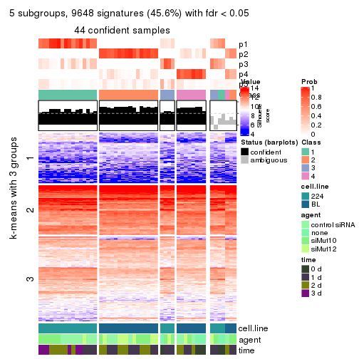
get_signatures(res, k = 6, scale_rows = FALSE)
Compare the overlap of signatures from different k:
compare_signatures(res)
get_signature() returns a data frame invisibly. TO get the list of signatures, the function
call should be assigned to a variable explicitly. In following code, if plot argument is set
to FALSE, no heatmap is plotted while only the differential analysis is performed.
# code only for demonstration
tb = get_signature(res, k = ..., plot = FALSE)
An example of the output of tb is:
#> which_row fdr mean_1 mean_2 scaled_mean_1 scaled_mean_2 km
#> 1 38 0.042760348 8.373488 9.131774 -0.5533452 0.5164555 1
#> 2 40 0.018707592 7.106213 8.469186 -0.6173731 0.5762149 1
#> 3 55 0.019134737 10.221463 11.207825 -0.6159697 0.5749050 1
#> 4 59 0.006059896 5.921854 7.869574 -0.6899429 0.6439467 1
#> 5 60 0.018055526 8.928898 10.211722 -0.6204761 0.5791110 1
#> 6 98 0.009384629 15.714769 14.887706 0.6635654 -0.6193277 2
...
The columns in tb are:
which_row: row indices corresponding to the input matrix.fdr: FDR for the differential test. mean_x: The mean value in group x.scaled_mean_x: The mean value in group x after rows are scaled.km: Row groups if k-means clustering is applied to rows.UMAP plot which shows how samples are separated.
dimension_reduction(res, k = 2, method = "UMAP")

dimension_reduction(res, k = 3, method = "UMAP")

dimension_reduction(res, k = 4, method = "UMAP")
dimension_reduction(res, k = 5, method = "UMAP")
dimension_reduction(res, k = 6, method = "UMAP")
Following heatmap shows how subgroups are split when increasing k:
collect_classes(res)
Test correlation between subgroups and known annotations. If the known annotation is numeric, one-way ANOVA test is applied, and if the known annotation is discrete, chi-squared contingency table test is applied.
test_to_known_factors(res)
#> n cell.line(p) agent(p) time(p) k
#> MAD:mclust 51 6.87e-12 0.52771 0.04055 2
#> MAD:mclust 51 6.87e-12 0.52771 0.04055 3
#> MAD:mclust 48 2.13e-10 0.04833 0.01136 4
#> MAD:mclust 44 1.51e-09 0.00951 0.00153 5
#> MAD:mclust 17 2.03e-04 0.23608 0.26238 6
If matrix rows can be associated to genes, consider to use GO_Enrichment(res,
...) to perform function enrichment for the signature genes.
The object with results only for a single top-value method and a single partition method can be extracted as:
res = res_list["MAD", "NMF"]
# you can also extract it by
# res = res_list["MAD:NMF"]
A summary of res and all the functions that can be applied to it:
res
#> A 'ConsensusPartition' object with k = 2, 3, 4, 5, 6.
#> On a matrix with 21168 rows and 51 columns.
#> Top rows (1000, 2000, 3000, 4000, 5000) are extracted by 'MAD' method.
#> Subgroups are detected by 'NMF' method.
#> Performed in total 1250 partitions by row resampling.
#> Best k for subgroups seems to be 2.
#>
#> Following methods can be applied to this 'ConsensusPartition' object:
#> [1] "cola_report" "collect_classes" "collect_plots"
#> [4] "collect_stats" "colnames" "compare_signatures"
#> [7] "consensus_heatmap" "dimension_reduction" "functional_enrichment"
#> [10] "get_anno_col" "get_anno" "get_classes"
#> [13] "get_consensus" "get_matrix" "get_membership"
#> [16] "get_param" "get_signatures" "get_stats"
#> [19] "is_best_k" "is_stable_k" "membership_heatmap"
#> [22] "ncol" "nrow" "plot_ecdf"
#> [25] "rownames" "select_partition_number" "show"
#> [28] "suggest_best_k" "test_to_known_factors"
collect_plots() function collects all the plots made from res for all k (number of partitions)
into one single page to provide an easy and fast comparison between different k.
collect_plots(res)
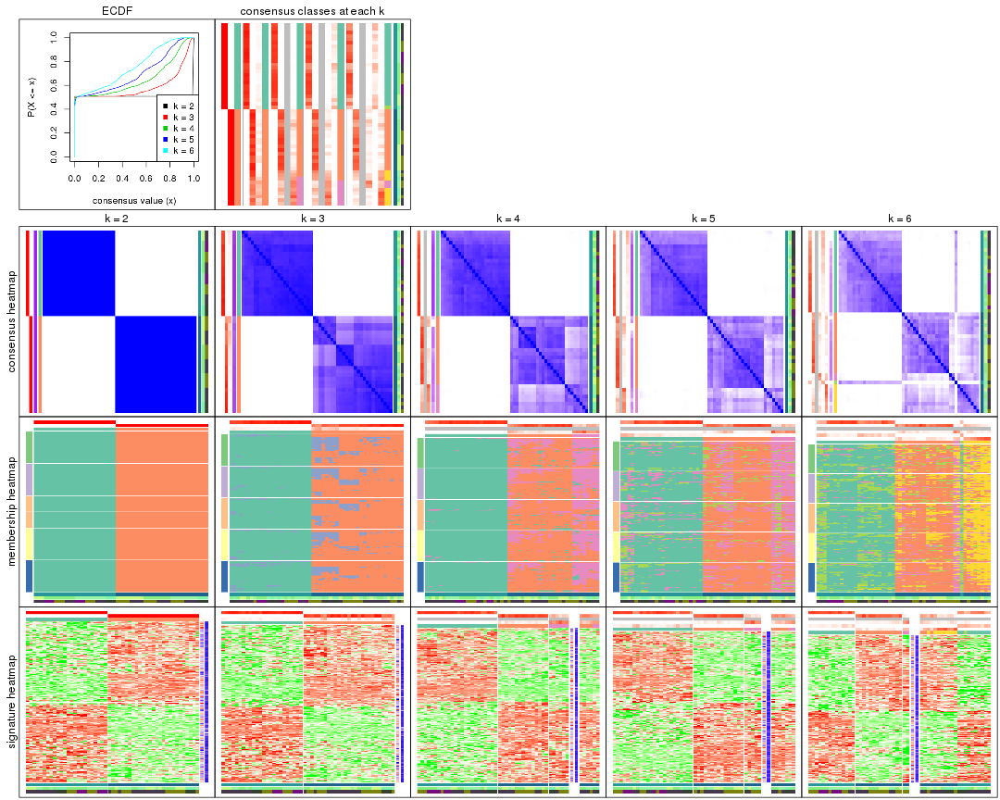
The plots are:
k and the heatmap of
predicted classes for each k.k.k.k.All the plots in panels can be made by individual functions and they are plotted later in this section.
select_partition_number() produces several plots showing different
statistics for choosing “optimized” k. There are following statistics:
k;k, the area increased is defined as \(A_k - A_{k-1}\).The detailed explanations of these statistics can be found in the cola vignette.
Generally speaking, lower PAC score, higher mean silhouette score or higher
concordance corresponds to better partition. Rand index and Jaccard index
measure how similar the current partition is compared to partition with k-1.
If they are too similar, we won't accept k is better than k-1.
select_partition_number(res)

The numeric values for all these statistics can be obtained by get_stats().
get_stats(res)
#> k 1-PAC mean_silhouette concordance area_increased Rand Jaccard
#> 2 2 1.000 1.000 1.000 0.5087 0.492 0.492
#> 3 3 0.752 0.911 0.897 0.1523 1.000 1.000
#> 4 4 0.570 0.736 0.820 0.1148 0.881 0.758
#> 5 5 0.527 0.686 0.764 0.0745 0.980 0.947
#> 6 6 0.533 0.447 0.698 0.0826 0.922 0.803
suggest_best_k() suggests the best \(k\) based on these statistics. The rules are as follows:
NA.suggest_best_k(res)
#> [1] 2
Following shows the table of the partitions (You need to click the show/hide
code output link to see it). The membership matrix (columns with name p*)
is inferred by
clue::cl_consensus()
function with the SE method. Basically the value in the membership matrix
represents the probability to belong to a certain group. The finall class
label for an item is determined with the group with highest probability it
belongs to.
In get_classes() function, the entropy is calculated from the membership
matrix and the silhouette score is calculated from the consensus matrix.
cbind(get_classes(res, k = 2), get_membership(res, k = 2))
#> class entropy silhouette p1 p2
#> GSM312684 1 0 1 1 0
#> GSM312685 1 0 1 1 0
#> GSM312686 1 0 1 1 0
#> GSM312693 1 0 1 1 0
#> GSM312694 1 0 1 1 0
#> GSM312695 1 0 1 1 0
#> GSM312699 1 0 1 1 0
#> GSM312700 1 0 1 1 0
#> GSM312701 1 0 1 1 0
#> GSM312705 1 0 1 1 0
#> GSM312706 1 0 1 1 0
#> GSM312707 1 0 1 1 0
#> GSM312687 1 0 1 1 0
#> GSM312688 1 0 1 1 0
#> GSM312689 1 0 1 1 0
#> GSM312696 1 0 1 1 0
#> GSM312697 1 0 1 1 0
#> GSM312698 1 0 1 1 0
#> GSM312702 1 0 1 1 0
#> GSM312703 1 0 1 1 0
#> GSM312704 1 0 1 1 0
#> GSM312690 1 0 1 1 0
#> GSM312691 1 0 1 1 0
#> GSM312692 1 0 1 1 0
#> GSM312708 2 0 1 0 1
#> GSM312709 2 0 1 0 1
#> GSM312710 2 0 1 0 1
#> GSM312719 2 0 1 0 1
#> GSM312720 2 0 1 0 1
#> GSM312721 2 0 1 0 1
#> GSM312722 2 0 1 0 1
#> GSM312731 2 0 1 0 1
#> GSM312732 2 0 1 0 1
#> GSM312733 2 0 1 0 1
#> GSM312734 2 0 1 0 1
#> GSM312711 2 0 1 0 1
#> GSM312712 2 0 1 0 1
#> GSM312713 2 0 1 0 1
#> GSM312714 2 0 1 0 1
#> GSM312723 2 0 1 0 1
#> GSM312724 2 0 1 0 1
#> GSM312725 2 0 1 0 1
#> GSM312726 2 0 1 0 1
#> GSM312715 2 0 1 0 1
#> GSM312716 2 0 1 0 1
#> GSM312717 2 0 1 0 1
#> GSM312718 2 0 1 0 1
#> GSM312727 2 0 1 0 1
#> GSM312728 2 0 1 0 1
#> GSM312729 2 0 1 0 1
#> GSM312730 2 0 1 0 1
cbind(get_classes(res, k = 3), get_membership(res, k = 3))
#> class entropy silhouette p1 p2 p3
#> GSM312684 1 0.1643 0.972 0.956 0.000 0.044
#> GSM312685 1 0.3482 0.923 0.872 0.000 0.128
#> GSM312686 1 0.1643 0.973 0.956 0.000 0.044
#> GSM312693 1 0.0747 0.974 0.984 0.000 0.016
#> GSM312694 1 0.1031 0.974 0.976 0.000 0.024
#> GSM312695 1 0.1529 0.973 0.960 0.000 0.040
#> GSM312699 1 0.1289 0.974 0.968 0.000 0.032
#> GSM312700 1 0.1529 0.974 0.960 0.000 0.040
#> GSM312701 1 0.0892 0.975 0.980 0.000 0.020
#> GSM312705 1 0.0592 0.974 0.988 0.000 0.012
#> GSM312706 1 0.0747 0.974 0.984 0.000 0.016
#> GSM312707 1 0.1031 0.974 0.976 0.000 0.024
#> GSM312687 1 0.2959 0.947 0.900 0.000 0.100
#> GSM312688 1 0.2959 0.950 0.900 0.000 0.100
#> GSM312689 1 0.2261 0.970 0.932 0.000 0.068
#> GSM312696 1 0.0892 0.974 0.980 0.000 0.020
#> GSM312697 1 0.1289 0.975 0.968 0.000 0.032
#> GSM312698 1 0.0747 0.974 0.984 0.000 0.016
#> GSM312702 1 0.2066 0.969 0.940 0.000 0.060
#> GSM312703 1 0.2066 0.968 0.940 0.000 0.060
#> GSM312704 1 0.1529 0.973 0.960 0.000 0.040
#> GSM312690 1 0.2066 0.969 0.940 0.000 0.060
#> GSM312691 1 0.2959 0.948 0.900 0.000 0.100
#> GSM312692 1 0.0892 0.975 0.980 0.000 0.020
#> GSM312708 2 0.5397 0.832 0.000 0.720 0.280
#> GSM312709 2 0.5859 0.798 0.000 0.656 0.344
#> GSM312710 2 0.4931 0.850 0.000 0.768 0.232
#> GSM312719 2 0.2711 0.895 0.000 0.912 0.088
#> GSM312720 2 0.0892 0.896 0.000 0.980 0.020
#> GSM312721 2 0.1289 0.895 0.000 0.968 0.032
#> GSM312722 2 0.2448 0.894 0.000 0.924 0.076
#> GSM312731 2 0.2711 0.892 0.000 0.912 0.088
#> GSM312732 2 0.6252 0.731 0.000 0.556 0.444
#> GSM312733 2 0.5785 0.807 0.000 0.668 0.332
#> GSM312734 2 0.6302 0.701 0.000 0.520 0.480
#> GSM312711 2 0.2356 0.898 0.000 0.928 0.072
#> GSM312712 2 0.3116 0.888 0.000 0.892 0.108
#> GSM312713 2 0.4555 0.862 0.000 0.800 0.200
#> GSM312714 2 0.1031 0.896 0.000 0.976 0.024
#> GSM312723 2 0.3619 0.867 0.000 0.864 0.136
#> GSM312724 2 0.1289 0.897 0.000 0.968 0.032
#> GSM312725 2 0.3551 0.868 0.000 0.868 0.132
#> GSM312726 2 0.3619 0.867 0.000 0.864 0.136
#> GSM312715 2 0.5497 0.826 0.000 0.708 0.292
#> GSM312716 2 0.1643 0.897 0.000 0.956 0.044
#> GSM312717 2 0.3412 0.871 0.000 0.876 0.124
#> GSM312718 2 0.1753 0.897 0.000 0.952 0.048
#> GSM312727 2 0.3941 0.859 0.000 0.844 0.156
#> GSM312728 2 0.4235 0.848 0.000 0.824 0.176
#> GSM312729 2 0.1163 0.893 0.000 0.972 0.028
#> GSM312730 2 0.0747 0.895 0.000 0.984 0.016
cbind(get_classes(res, k = 4), get_membership(res, k = 4))
#> class entropy silhouette p1 p2 p3 p4
#> GSM312684 1 0.276 0.9171 0.872 0.000 NA 0.000
#> GSM312685 1 0.511 0.7569 0.672 0.000 NA 0.020
#> GSM312686 1 0.215 0.9273 0.912 0.000 NA 0.000
#> GSM312693 1 0.139 0.9320 0.952 0.000 NA 0.000
#> GSM312694 1 0.247 0.9253 0.900 0.000 NA 0.004
#> GSM312695 1 0.228 0.9292 0.904 0.000 NA 0.000
#> GSM312699 1 0.182 0.9299 0.936 0.000 NA 0.004
#> GSM312700 1 0.233 0.9293 0.908 0.000 NA 0.004
#> GSM312701 1 0.179 0.9316 0.932 0.000 NA 0.000
#> GSM312705 1 0.220 0.9326 0.920 0.000 NA 0.008
#> GSM312706 1 0.198 0.9320 0.928 0.000 NA 0.004
#> GSM312707 1 0.187 0.9291 0.928 0.000 NA 0.000
#> GSM312687 1 0.457 0.8054 0.716 0.000 NA 0.008
#> GSM312688 1 0.389 0.8754 0.796 0.000 NA 0.008
#> GSM312689 1 0.286 0.9189 0.880 0.000 NA 0.008
#> GSM312696 1 0.222 0.9275 0.908 0.000 NA 0.000
#> GSM312697 1 0.208 0.9313 0.916 0.000 NA 0.000
#> GSM312698 1 0.164 0.9289 0.940 0.000 NA 0.000
#> GSM312702 1 0.190 0.9299 0.932 0.000 NA 0.004
#> GSM312703 1 0.182 0.9326 0.936 0.000 NA 0.004
#> GSM312704 1 0.198 0.9308 0.928 0.000 NA 0.004
#> GSM312690 1 0.241 0.9252 0.908 0.000 NA 0.008
#> GSM312691 1 0.432 0.8468 0.760 0.000 NA 0.012
#> GSM312692 1 0.187 0.9308 0.928 0.000 NA 0.000
#> GSM312708 4 0.568 0.5067 0.000 0.456 NA 0.520
#> GSM312709 4 0.560 0.6798 0.000 0.332 NA 0.632
#> GSM312710 4 0.559 0.4670 0.000 0.460 NA 0.520
#> GSM312719 2 0.431 0.6730 0.000 0.808 NA 0.144
#> GSM312720 2 0.286 0.7203 0.000 0.880 NA 0.112
#> GSM312721 2 0.271 0.7298 0.000 0.900 NA 0.080
#> GSM312722 2 0.534 0.3168 0.000 0.656 NA 0.316
#> GSM312731 2 0.604 -0.2701 0.000 0.528 NA 0.428
#> GSM312732 4 0.616 0.6453 0.000 0.240 NA 0.656
#> GSM312733 4 0.647 0.6495 0.000 0.280 NA 0.612
#> GSM312734 4 0.379 0.6406 0.000 0.164 NA 0.820
#> GSM312711 2 0.593 0.4916 0.000 0.680 NA 0.224
#> GSM312712 2 0.527 -0.0496 0.000 0.592 NA 0.396
#> GSM312713 4 0.586 0.4889 0.000 0.464 NA 0.504
#> GSM312714 2 0.371 0.6309 0.000 0.804 NA 0.192
#> GSM312723 2 0.369 0.6846 0.000 0.856 NA 0.076
#> GSM312724 2 0.278 0.7297 0.000 0.896 NA 0.084
#> GSM312725 2 0.194 0.7022 0.000 0.936 NA 0.052
#> GSM312726 2 0.231 0.7125 0.000 0.924 NA 0.044
#> GSM312715 4 0.547 0.6931 0.000 0.324 NA 0.644
#> GSM312716 2 0.332 0.7100 0.000 0.852 NA 0.136
#> GSM312717 2 0.155 0.7128 0.000 0.952 NA 0.040
#> GSM312718 2 0.496 0.5845 0.000 0.748 NA 0.204
#> GSM312727 2 0.260 0.7104 0.000 0.908 NA 0.068
#> GSM312728 2 0.316 0.6699 0.000 0.884 NA 0.052
#> GSM312729 2 0.247 0.7310 0.000 0.908 NA 0.080
#> GSM312730 2 0.270 0.7036 0.000 0.876 NA 0.124
cbind(get_classes(res, k = 5), get_membership(res, k = 5))
#> class entropy silhouette p1 p2 p3 p4 p5
#> GSM312684 1 0.416 0.8486 0.788 0.000 NA 0.020 0.160
#> GSM312685 1 0.634 0.5293 0.488 0.000 NA 0.040 0.408
#> GSM312686 1 0.342 0.8553 0.804 0.000 NA 0.000 0.180
#> GSM312693 1 0.245 0.8781 0.896 0.000 NA 0.004 0.084
#> GSM312694 1 0.305 0.8661 0.828 0.000 NA 0.000 0.164
#> GSM312695 1 0.365 0.8668 0.820 0.000 NA 0.008 0.140
#> GSM312699 1 0.184 0.8756 0.936 0.000 NA 0.012 0.040
#> GSM312700 1 0.353 0.8589 0.808 0.000 NA 0.000 0.164
#> GSM312701 1 0.212 0.8769 0.900 0.000 NA 0.000 0.096
#> GSM312705 1 0.269 0.8773 0.888 0.000 NA 0.016 0.084
#> GSM312706 1 0.188 0.8767 0.924 0.000 NA 0.000 0.064
#> GSM312707 1 0.266 0.8729 0.900 0.000 NA 0.024 0.052
#> GSM312687 1 0.481 0.6584 0.572 0.000 NA 0.004 0.408
#> GSM312688 1 0.568 0.6746 0.572 0.000 NA 0.008 0.348
#> GSM312689 1 0.436 0.8375 0.756 0.000 NA 0.004 0.188
#> GSM312696 1 0.235 0.8748 0.908 0.000 NA 0.004 0.060
#> GSM312697 1 0.270 0.8771 0.880 0.000 NA 0.008 0.100
#> GSM312698 1 0.198 0.8732 0.920 0.000 NA 0.000 0.064
#> GSM312702 1 0.221 0.8775 0.908 0.000 NA 0.000 0.072
#> GSM312703 1 0.245 0.8751 0.892 0.000 NA 0.000 0.088
#> GSM312704 1 0.214 0.8745 0.912 0.000 NA 0.000 0.068
#> GSM312690 1 0.362 0.8625 0.824 0.000 NA 0.000 0.108
#> GSM312691 1 0.583 0.6897 0.572 0.000 NA 0.008 0.332
#> GSM312692 1 0.349 0.8660 0.816 0.000 NA 0.000 0.152
#> GSM312708 4 0.603 0.3050 0.000 0.432 NA 0.480 0.016
#> GSM312709 4 0.565 0.5997 0.000 0.276 NA 0.636 0.024
#> GSM312710 2 0.603 -0.1817 0.000 0.480 NA 0.432 0.016
#> GSM312719 2 0.477 0.6733 0.000 0.764 NA 0.088 0.024
#> GSM312720 2 0.279 0.7096 0.000 0.880 NA 0.052 0.000
#> GSM312721 2 0.288 0.7255 0.000 0.880 NA 0.048 0.004
#> GSM312722 2 0.548 0.4127 0.000 0.636 NA 0.284 0.012
#> GSM312731 2 0.603 0.0512 0.000 0.520 NA 0.368 0.004
#> GSM312732 4 0.660 0.5254 0.000 0.124 NA 0.556 0.036
#> GSM312733 4 0.711 0.5418 0.000 0.184 NA 0.540 0.060
#> GSM312734 4 0.380 0.6200 0.000 0.108 NA 0.828 0.020
#> GSM312711 2 0.625 0.4419 0.000 0.576 NA 0.148 0.012
#> GSM312712 2 0.514 0.3304 0.000 0.624 NA 0.316 0.000
#> GSM312713 4 0.547 0.4989 0.000 0.348 NA 0.576 0.000
#> GSM312714 2 0.311 0.6829 0.000 0.844 NA 0.132 0.000
#> GSM312723 2 0.437 0.6472 0.000 0.764 NA 0.036 0.016
#> GSM312724 2 0.323 0.7199 0.000 0.852 NA 0.064 0.000
#> GSM312725 2 0.247 0.7039 0.000 0.864 NA 0.000 0.000
#> GSM312726 2 0.286 0.7128 0.000 0.852 NA 0.012 0.000
#> GSM312715 4 0.568 0.5904 0.000 0.276 NA 0.636 0.032
#> GSM312716 2 0.345 0.6863 0.000 0.840 NA 0.108 0.004
#> GSM312717 2 0.196 0.7169 0.000 0.916 NA 0.008 0.000
#> GSM312718 2 0.516 0.5671 0.000 0.708 NA 0.188 0.012
#> GSM312727 2 0.297 0.7089 0.000 0.876 NA 0.028 0.012
#> GSM312728 2 0.377 0.6446 0.000 0.760 NA 0.008 0.004
#> GSM312729 2 0.250 0.7215 0.000 0.896 NA 0.064 0.000
#> GSM312730 2 0.280 0.7136 0.000 0.880 NA 0.060 0.000
cbind(get_classes(res, k = 6), get_membership(res, k = 6))
#> class entropy silhouette p1 p2 p3 p4 p5 p6
#> GSM312684 1 0.488 0.234 0.576 0.000 NA 0.028 0.376 0.004
#> GSM312685 5 0.682 0.000 0.352 0.000 NA 0.104 0.444 0.008
#> GSM312686 1 0.452 0.242 0.568 0.000 NA 0.004 0.400 0.000
#> GSM312693 1 0.262 0.600 0.868 0.000 NA 0.004 0.104 0.000
#> GSM312694 1 0.429 0.433 0.668 0.000 NA 0.008 0.296 0.000
#> GSM312695 1 0.479 0.496 0.708 0.000 NA 0.016 0.196 0.008
#> GSM312699 1 0.233 0.604 0.900 0.000 NA 0.004 0.060 0.004
#> GSM312700 1 0.454 0.512 0.692 0.000 NA 0.004 0.224 0.000
#> GSM312701 1 0.389 0.533 0.716 0.000 NA 0.000 0.252 0.000
#> GSM312705 1 0.375 0.560 0.800 0.000 NA 0.004 0.128 0.008
#> GSM312706 1 0.285 0.600 0.840 0.000 NA 0.004 0.140 0.000
#> GSM312707 1 0.220 0.603 0.908 0.000 NA 0.000 0.052 0.012
#> GSM312687 1 0.686 -0.569 0.404 0.000 NA 0.080 0.376 0.004
#> GSM312688 1 0.600 -0.285 0.420 0.000 NA 0.008 0.396 0.000
#> GSM312689 1 0.484 0.412 0.636 0.000 NA 0.008 0.288 0.000
#> GSM312696 1 0.219 0.599 0.904 0.000 NA 0.004 0.060 0.000
#> GSM312697 1 0.258 0.598 0.880 0.000 NA 0.004 0.072 0.000
#> GSM312698 1 0.241 0.593 0.880 0.000 NA 0.000 0.092 0.000
#> GSM312702 1 0.312 0.595 0.832 0.000 NA 0.000 0.112 0.000
#> GSM312703 1 0.279 0.599 0.856 0.000 NA 0.000 0.100 0.000
#> GSM312704 1 0.291 0.604 0.852 0.000 NA 0.000 0.076 0.000
#> GSM312690 1 0.481 0.462 0.644 0.000 NA 0.008 0.280 0.000
#> GSM312691 1 0.684 -0.356 0.364 0.000 NA 0.028 0.332 0.008
#> GSM312692 1 0.419 0.519 0.684 0.000 NA 0.000 0.272 0.000
#> GSM312708 6 0.640 0.484 0.000 0.228 NA 0.084 0.028 0.588
#> GSM312709 6 0.328 0.483 0.000 0.108 NA 0.028 0.004 0.840
#> GSM312710 6 0.603 0.336 0.000 0.236 NA 0.212 0.008 0.536
#> GSM312719 2 0.583 0.567 0.000 0.660 NA 0.152 0.020 0.112
#> GSM312720 2 0.483 0.580 0.000 0.708 NA 0.032 0.004 0.196
#> GSM312721 2 0.445 0.644 0.000 0.768 NA 0.092 0.004 0.096
#> GSM312722 6 0.594 0.167 0.000 0.408 NA 0.036 0.004 0.472
#> GSM312731 6 0.637 0.329 0.000 0.320 NA 0.196 0.000 0.456
#> GSM312732 4 0.413 0.651 0.000 0.028 NA 0.684 0.000 0.284
#> GSM312733 4 0.633 0.607 0.000 0.088 NA 0.504 0.008 0.340
#> GSM312734 6 0.347 0.185 0.000 0.028 NA 0.124 0.000 0.820
#> GSM312711 2 0.617 0.368 0.000 0.516 NA 0.324 0.000 0.100
#> GSM312712 2 0.629 -0.142 0.000 0.436 NA 0.196 0.008 0.352
#> GSM312713 6 0.464 0.522 0.000 0.176 NA 0.040 0.004 0.732
#> GSM312714 2 0.498 0.537 0.000 0.680 NA 0.072 0.000 0.216
#> GSM312723 2 0.496 0.590 0.000 0.700 NA 0.188 0.004 0.028
#> GSM312724 2 0.468 0.665 0.000 0.748 NA 0.076 0.000 0.100
#> GSM312725 2 0.326 0.675 0.000 0.848 NA 0.060 0.000 0.028
#> GSM312726 2 0.355 0.678 0.000 0.836 NA 0.064 0.004 0.036
#> GSM312715 6 0.447 0.422 0.000 0.112 NA 0.096 0.004 0.760
#> GSM312716 2 0.553 0.524 0.000 0.644 NA 0.040 0.004 0.216
#> GSM312717 2 0.201 0.683 0.000 0.916 NA 0.040 0.000 0.004
#> GSM312718 2 0.634 0.459 0.000 0.584 NA 0.096 0.004 0.192
#> GSM312727 2 0.451 0.649 0.000 0.768 NA 0.056 0.004 0.088
#> GSM312728 2 0.340 0.650 0.000 0.824 NA 0.104 0.000 0.008
#> GSM312729 2 0.438 0.667 0.000 0.780 NA 0.064 0.008 0.100
#> GSM312730 2 0.426 0.645 0.000 0.772 NA 0.048 0.004 0.140
Heatmaps for the consensus matrix. It visualizes the probability of two samples to be in a same group.
consensus_heatmap(res, k = 2)

consensus_heatmap(res, k = 3)
consensus_heatmap(res, k = 4)
consensus_heatmap(res, k = 5)
consensus_heatmap(res, k = 6)
Heatmaps for the membership of samples in all partitions to see how consistent they are:
membership_heatmap(res, k = 2)

membership_heatmap(res, k = 3)

membership_heatmap(res, k = 4)
membership_heatmap(res, k = 5)
membership_heatmap(res, k = 6)
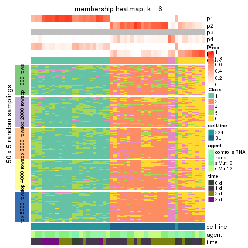
As soon as we have had the classes for columns, we can look for signatures which are significantly different between classes which can be candidate marks for certain classes. Following are the heatmaps for signatures.
Signature heatmaps where rows are scaled:
get_signatures(res, k = 2)

get_signatures(res, k = 3)
get_signatures(res, k = 4)
get_signatures(res, k = 5)
get_signatures(res, k = 6)
Signature heatmaps where rows are not scaled:
get_signatures(res, k = 2, scale_rows = FALSE)

get_signatures(res, k = 3, scale_rows = FALSE)
get_signatures(res, k = 4, scale_rows = FALSE)
get_signatures(res, k = 5, scale_rows = FALSE)
get_signatures(res, k = 6, scale_rows = FALSE)
Compare the overlap of signatures from different k:
compare_signatures(res)
get_signature() returns a data frame invisibly. TO get the list of signatures, the function
call should be assigned to a variable explicitly. In following code, if plot argument is set
to FALSE, no heatmap is plotted while only the differential analysis is performed.
# code only for demonstration
tb = get_signature(res, k = ..., plot = FALSE)
An example of the output of tb is:
#> which_row fdr mean_1 mean_2 scaled_mean_1 scaled_mean_2 km
#> 1 38 0.042760348 8.373488 9.131774 -0.5533452 0.5164555 1
#> 2 40 0.018707592 7.106213 8.469186 -0.6173731 0.5762149 1
#> 3 55 0.019134737 10.221463 11.207825 -0.6159697 0.5749050 1
#> 4 59 0.006059896 5.921854 7.869574 -0.6899429 0.6439467 1
#> 5 60 0.018055526 8.928898 10.211722 -0.6204761 0.5791110 1
#> 6 98 0.009384629 15.714769 14.887706 0.6635654 -0.6193277 2
...
The columns in tb are:
which_row: row indices corresponding to the input matrix.fdr: FDR for the differential test. mean_x: The mean value in group x.scaled_mean_x: The mean value in group x after rows are scaled.km: Row groups if k-means clustering is applied to rows.UMAP plot which shows how samples are separated.
dimension_reduction(res, k = 2, method = "UMAP")

dimension_reduction(res, k = 3, method = "UMAP")

dimension_reduction(res, k = 4, method = "UMAP")
dimension_reduction(res, k = 5, method = "UMAP")
dimension_reduction(res, k = 6, method = "UMAP")
Following heatmap shows how subgroups are split when increasing k:
collect_classes(res)
Test correlation between subgroups and known annotations. If the known annotation is numeric, one-way ANOVA test is applied, and if the known annotation is discrete, chi-squared contingency table test is applied.
test_to_known_factors(res)
#> n cell.line(p) agent(p) time(p) k
#> MAD:NMF 51 6.87e-12 0.5277 0.0406 2
#> MAD:NMF 51 6.87e-12 0.5277 0.0406 3
#> MAD:NMF 45 1.69e-10 0.0501 0.0449 4
#> MAD:NMF 44 2.79e-10 0.1060 0.1010 5
#> MAD:NMF 31 8.50e-07 0.1083 0.0387 6
If matrix rows can be associated to genes, consider to use GO_Enrichment(res,
...) to perform function enrichment for the signature genes.
The object with results only for a single top-value method and a single partition method can be extracted as:
res = res_list["ATC", "hclust"]
# you can also extract it by
# res = res_list["ATC:hclust"]
A summary of res and all the functions that can be applied to it:
res
#> A 'ConsensusPartition' object with k = 2, 3, 4, 5, 6.
#> On a matrix with 21168 rows and 51 columns.
#> Top rows (1000, 2000, 3000, 4000, 5000) are extracted by 'ATC' method.
#> Subgroups are detected by 'hclust' method.
#> Performed in total 1250 partitions by row resampling.
#> Best k for subgroups seems to be 5.
#>
#> Following methods can be applied to this 'ConsensusPartition' object:
#> [1] "cola_report" "collect_classes" "collect_plots"
#> [4] "collect_stats" "colnames" "compare_signatures"
#> [7] "consensus_heatmap" "dimension_reduction" "functional_enrichment"
#> [10] "get_anno_col" "get_anno" "get_classes"
#> [13] "get_consensus" "get_matrix" "get_membership"
#> [16] "get_param" "get_signatures" "get_stats"
#> [19] "is_best_k" "is_stable_k" "membership_heatmap"
#> [22] "ncol" "nrow" "plot_ecdf"
#> [25] "rownames" "select_partition_number" "show"
#> [28] "suggest_best_k" "test_to_known_factors"
collect_plots() function collects all the plots made from res for all k (number of partitions)
into one single page to provide an easy and fast comparison between different k.
collect_plots(res)
The plots are:
k and the heatmap of
predicted classes for each k.k.k.k.All the plots in panels can be made by individual functions and they are plotted later in this section.
select_partition_number() produces several plots showing different
statistics for choosing “optimized” k. There are following statistics:
k;k, the area increased is defined as \(A_k - A_{k-1}\).The detailed explanations of these statistics can be found in the cola vignette.
Generally speaking, lower PAC score, higher mean silhouette score or higher
concordance corresponds to better partition. Rand index and Jaccard index
measure how similar the current partition is compared to partition with k-1.
If they are too similar, we won't accept k is better than k-1.
select_partition_number(res)
The numeric values for all these statistics can be obtained by get_stats().
get_stats(res)
#> k 1-PAC mean_silhouette concordance area_increased Rand Jaccard
#> 2 2 1.000 1.000 1.000 0.5087 0.492 0.492
#> 3 3 0.949 0.969 0.961 0.2170 0.887 0.770
#> 4 4 0.963 0.941 0.972 0.1724 0.901 0.739
#> 5 5 0.968 0.935 0.970 0.0315 0.979 0.924
#> 6 6 0.880 0.815 0.874 0.0522 1.000 1.000
suggest_best_k() suggests the best \(k\) based on these statistics. The rules are as follows:
NA.suggest_best_k(res)
#> [1] 5
#> attr(,"optional")
#> [1] 2 3 4
There is also optional best \(k\) = 2 3 4 that is worth to check.
Following shows the table of the partitions (You need to click the show/hide
code output link to see it). The membership matrix (columns with name p*)
is inferred by
clue::cl_consensus()
function with the SE method. Basically the value in the membership matrix
represents the probability to belong to a certain group. The finall class
label for an item is determined with the group with highest probability it
belongs to.
In get_classes() function, the entropy is calculated from the membership
matrix and the silhouette score is calculated from the consensus matrix.
cbind(get_classes(res, k = 2), get_membership(res, k = 2))
#> class entropy silhouette p1 p2
#> GSM312684 1 0 1 1 0
#> GSM312685 1 0 1 1 0
#> GSM312686 1 0 1 1 0
#> GSM312693 1 0 1 1 0
#> GSM312694 1 0 1 1 0
#> GSM312695 1 0 1 1 0
#> GSM312699 1 0 1 1 0
#> GSM312700 1 0 1 1 0
#> GSM312701 1 0 1 1 0
#> GSM312705 1 0 1 1 0
#> GSM312706 1 0 1 1 0
#> GSM312707 1 0 1 1 0
#> GSM312687 1 0 1 1 0
#> GSM312688 1 0 1 1 0
#> GSM312689 1 0 1 1 0
#> GSM312696 1 0 1 1 0
#> GSM312697 1 0 1 1 0
#> GSM312698 1 0 1 1 0
#> GSM312702 1 0 1 1 0
#> GSM312703 1 0 1 1 0
#> GSM312704 1 0 1 1 0
#> GSM312690 1 0 1 1 0
#> GSM312691 1 0 1 1 0
#> GSM312692 1 0 1 1 0
#> GSM312708 2 0 1 0 1
#> GSM312709 2 0 1 0 1
#> GSM312710 2 0 1 0 1
#> GSM312719 2 0 1 0 1
#> GSM312720 2 0 1 0 1
#> GSM312721 2 0 1 0 1
#> GSM312722 2 0 1 0 1
#> GSM312731 2 0 1 0 1
#> GSM312732 2 0 1 0 1
#> GSM312733 2 0 1 0 1
#> GSM312734 2 0 1 0 1
#> GSM312711 2 0 1 0 1
#> GSM312712 2 0 1 0 1
#> GSM312713 2 0 1 0 1
#> GSM312714 2 0 1 0 1
#> GSM312723 2 0 1 0 1
#> GSM312724 2 0 1 0 1
#> GSM312725 2 0 1 0 1
#> GSM312726 2 0 1 0 1
#> GSM312715 2 0 1 0 1
#> GSM312716 2 0 1 0 1
#> GSM312717 2 0 1 0 1
#> GSM312718 2 0 1 0 1
#> GSM312727 2 0 1 0 1
#> GSM312728 2 0 1 0 1
#> GSM312729 2 0 1 0 1
#> GSM312730 2 0 1 0 1
cbind(get_classes(res, k = 3), get_membership(res, k = 3))
#> class entropy silhouette p1 p2 p3
#> GSM312684 3 0.0000 0.979 0.000 0.000 1.000
#> GSM312685 3 0.0000 0.979 0.000 0.000 1.000
#> GSM312686 3 0.0000 0.979 0.000 0.000 1.000
#> GSM312693 3 0.2711 0.904 0.088 0.000 0.912
#> GSM312694 3 0.2711 0.904 0.088 0.000 0.912
#> GSM312695 3 0.0424 0.978 0.008 0.000 0.992
#> GSM312699 1 0.3267 0.963 0.884 0.000 0.116
#> GSM312700 1 0.4121 0.919 0.832 0.000 0.168
#> GSM312701 1 0.4121 0.919 0.832 0.000 0.168
#> GSM312705 1 0.3267 0.963 0.884 0.000 0.116
#> GSM312706 1 0.3267 0.963 0.884 0.000 0.116
#> GSM312707 1 0.3267 0.963 0.884 0.000 0.116
#> GSM312687 3 0.0237 0.981 0.004 0.000 0.996
#> GSM312688 3 0.0237 0.981 0.004 0.000 0.996
#> GSM312689 3 0.0237 0.981 0.004 0.000 0.996
#> GSM312696 1 0.2448 0.966 0.924 0.000 0.076
#> GSM312697 1 0.2448 0.966 0.924 0.000 0.076
#> GSM312698 1 0.2448 0.966 0.924 0.000 0.076
#> GSM312702 1 0.2448 0.966 0.924 0.000 0.076
#> GSM312703 1 0.2448 0.966 0.924 0.000 0.076
#> GSM312704 1 0.2448 0.966 0.924 0.000 0.076
#> GSM312690 3 0.0237 0.981 0.004 0.000 0.996
#> GSM312691 3 0.0237 0.981 0.004 0.000 0.996
#> GSM312692 3 0.0237 0.981 0.004 0.000 0.996
#> GSM312708 2 0.0000 0.984 0.000 1.000 0.000
#> GSM312709 2 0.0000 0.984 0.000 1.000 0.000
#> GSM312710 2 0.0000 0.984 0.000 1.000 0.000
#> GSM312719 2 0.1860 0.962 0.052 0.948 0.000
#> GSM312720 2 0.0000 0.984 0.000 1.000 0.000
#> GSM312721 2 0.0237 0.983 0.004 0.996 0.000
#> GSM312722 2 0.0237 0.983 0.004 0.996 0.000
#> GSM312731 2 0.2356 0.952 0.072 0.928 0.000
#> GSM312732 2 0.2448 0.950 0.076 0.924 0.000
#> GSM312733 2 0.2356 0.952 0.072 0.928 0.000
#> GSM312734 2 0.0000 0.984 0.000 1.000 0.000
#> GSM312711 2 0.2448 0.950 0.076 0.924 0.000
#> GSM312712 2 0.0424 0.981 0.008 0.992 0.000
#> GSM312713 2 0.0000 0.984 0.000 1.000 0.000
#> GSM312714 2 0.0000 0.984 0.000 1.000 0.000
#> GSM312723 2 0.2448 0.950 0.076 0.924 0.000
#> GSM312724 2 0.0000 0.984 0.000 1.000 0.000
#> GSM312725 2 0.0000 0.984 0.000 1.000 0.000
#> GSM312726 2 0.0000 0.984 0.000 1.000 0.000
#> GSM312715 2 0.0000 0.984 0.000 1.000 0.000
#> GSM312716 2 0.0000 0.984 0.000 1.000 0.000
#> GSM312717 2 0.0000 0.984 0.000 1.000 0.000
#> GSM312718 2 0.0000 0.984 0.000 1.000 0.000
#> GSM312727 2 0.0000 0.984 0.000 1.000 0.000
#> GSM312728 2 0.2448 0.950 0.076 0.924 0.000
#> GSM312729 2 0.0000 0.984 0.000 1.000 0.000
#> GSM312730 2 0.0000 0.984 0.000 1.000 0.000
cbind(get_classes(res, k = 4), get_membership(res, k = 4))
#> class entropy silhouette p1 p2 p3 p4
#> GSM312684 1 0.0000 0.977 1.000 0.000 0.000 0.000
#> GSM312685 1 0.0000 0.977 1.000 0.000 0.000 0.000
#> GSM312686 1 0.0000 0.977 1.000 0.000 0.000 0.000
#> GSM312693 1 0.2281 0.901 0.904 0.000 0.096 0.000
#> GSM312694 1 0.2281 0.901 0.904 0.000 0.096 0.000
#> GSM312695 1 0.0469 0.974 0.988 0.000 0.012 0.000
#> GSM312699 3 0.1389 0.957 0.048 0.000 0.952 0.000
#> GSM312700 3 0.2469 0.909 0.108 0.000 0.892 0.000
#> GSM312701 3 0.2469 0.909 0.108 0.000 0.892 0.000
#> GSM312705 3 0.1389 0.957 0.048 0.000 0.952 0.000
#> GSM312706 3 0.1389 0.957 0.048 0.000 0.952 0.000
#> GSM312707 3 0.1389 0.957 0.048 0.000 0.952 0.000
#> GSM312687 1 0.0188 0.979 0.996 0.000 0.004 0.000
#> GSM312688 1 0.0188 0.979 0.996 0.000 0.004 0.000
#> GSM312689 1 0.0188 0.979 0.996 0.000 0.004 0.000
#> GSM312696 3 0.0000 0.959 0.000 0.000 1.000 0.000
#> GSM312697 3 0.0000 0.959 0.000 0.000 1.000 0.000
#> GSM312698 3 0.0000 0.959 0.000 0.000 1.000 0.000
#> GSM312702 3 0.0000 0.959 0.000 0.000 1.000 0.000
#> GSM312703 3 0.0000 0.959 0.000 0.000 1.000 0.000
#> GSM312704 3 0.0000 0.959 0.000 0.000 1.000 0.000
#> GSM312690 1 0.0188 0.979 0.996 0.000 0.004 0.000
#> GSM312691 1 0.0188 0.979 0.996 0.000 0.004 0.000
#> GSM312692 1 0.0188 0.979 0.996 0.000 0.004 0.000
#> GSM312708 2 0.0000 0.960 0.000 1.000 0.000 0.000
#> GSM312709 2 0.0000 0.960 0.000 1.000 0.000 0.000
#> GSM312710 2 0.0000 0.960 0.000 1.000 0.000 0.000
#> GSM312719 2 0.4989 0.150 0.000 0.528 0.000 0.472
#> GSM312720 2 0.0000 0.960 0.000 1.000 0.000 0.000
#> GSM312721 2 0.4040 0.671 0.000 0.752 0.000 0.248
#> GSM312722 2 0.0817 0.943 0.000 0.976 0.000 0.024
#> GSM312731 4 0.0336 0.993 0.000 0.008 0.000 0.992
#> GSM312732 4 0.0000 0.995 0.000 0.000 0.000 1.000
#> GSM312733 4 0.0336 0.993 0.000 0.008 0.000 0.992
#> GSM312734 2 0.0000 0.960 0.000 1.000 0.000 0.000
#> GSM312711 4 0.0188 0.994 0.000 0.004 0.000 0.996
#> GSM312712 2 0.1022 0.937 0.000 0.968 0.000 0.032
#> GSM312713 2 0.0000 0.960 0.000 1.000 0.000 0.000
#> GSM312714 2 0.0000 0.960 0.000 1.000 0.000 0.000
#> GSM312723 4 0.0000 0.995 0.000 0.000 0.000 1.000
#> GSM312724 2 0.0000 0.960 0.000 1.000 0.000 0.000
#> GSM312725 2 0.0000 0.960 0.000 1.000 0.000 0.000
#> GSM312726 2 0.0000 0.960 0.000 1.000 0.000 0.000
#> GSM312715 2 0.0000 0.960 0.000 1.000 0.000 0.000
#> GSM312716 2 0.0000 0.960 0.000 1.000 0.000 0.000
#> GSM312717 2 0.0000 0.960 0.000 1.000 0.000 0.000
#> GSM312718 2 0.0000 0.960 0.000 1.000 0.000 0.000
#> GSM312727 2 0.0000 0.960 0.000 1.000 0.000 0.000
#> GSM312728 4 0.0000 0.995 0.000 0.000 0.000 1.000
#> GSM312729 2 0.0000 0.960 0.000 1.000 0.000 0.000
#> GSM312730 2 0.0000 0.960 0.000 1.000 0.000 0.000
cbind(get_classes(res, k = 5), get_membership(res, k = 5))
#> class entropy silhouette p1 p2 p3 p4 p5
#> GSM312684 5 0.0000 1.000 0.000 0.000 0.000 0.000 1.000
#> GSM312685 5 0.0000 1.000 0.000 0.000 0.000 0.000 1.000
#> GSM312686 5 0.0000 1.000 0.000 0.000 0.000 0.000 1.000
#> GSM312693 3 0.3075 0.847 0.092 0.000 0.860 0.000 0.048
#> GSM312694 3 0.3075 0.847 0.092 0.000 0.860 0.000 0.048
#> GSM312695 3 0.1082 0.936 0.008 0.000 0.964 0.000 0.028
#> GSM312699 1 0.1197 0.956 0.952 0.000 0.000 0.000 0.048
#> GSM312700 1 0.2588 0.911 0.892 0.000 0.060 0.000 0.048
#> GSM312701 1 0.2588 0.911 0.892 0.000 0.060 0.000 0.048
#> GSM312705 1 0.1197 0.956 0.952 0.000 0.000 0.000 0.048
#> GSM312706 1 0.1197 0.956 0.952 0.000 0.000 0.000 0.048
#> GSM312707 1 0.1197 0.956 0.952 0.000 0.000 0.000 0.048
#> GSM312687 3 0.0000 0.949 0.000 0.000 1.000 0.000 0.000
#> GSM312688 3 0.0000 0.949 0.000 0.000 1.000 0.000 0.000
#> GSM312689 3 0.0162 0.950 0.000 0.000 0.996 0.000 0.004
#> GSM312696 1 0.0000 0.961 1.000 0.000 0.000 0.000 0.000
#> GSM312697 1 0.0000 0.961 1.000 0.000 0.000 0.000 0.000
#> GSM312698 1 0.0000 0.961 1.000 0.000 0.000 0.000 0.000
#> GSM312702 1 0.0000 0.961 1.000 0.000 0.000 0.000 0.000
#> GSM312703 1 0.0000 0.961 1.000 0.000 0.000 0.000 0.000
#> GSM312704 1 0.0000 0.961 1.000 0.000 0.000 0.000 0.000
#> GSM312690 3 0.0162 0.950 0.000 0.000 0.996 0.000 0.004
#> GSM312691 3 0.0000 0.949 0.000 0.000 1.000 0.000 0.000
#> GSM312692 3 0.0404 0.948 0.000 0.000 0.988 0.000 0.012
#> GSM312708 2 0.0000 0.959 0.000 1.000 0.000 0.000 0.000
#> GSM312709 2 0.0000 0.959 0.000 1.000 0.000 0.000 0.000
#> GSM312710 2 0.0000 0.959 0.000 1.000 0.000 0.000 0.000
#> GSM312719 2 0.4297 0.150 0.000 0.528 0.000 0.472 0.000
#> GSM312720 2 0.0000 0.959 0.000 1.000 0.000 0.000 0.000
#> GSM312721 2 0.3480 0.671 0.000 0.752 0.000 0.248 0.000
#> GSM312722 2 0.0703 0.941 0.000 0.976 0.000 0.024 0.000
#> GSM312731 4 0.0290 0.990 0.000 0.008 0.000 0.992 0.000
#> GSM312732 4 0.0000 0.993 0.000 0.000 0.000 1.000 0.000
#> GSM312733 4 0.0290 0.990 0.000 0.008 0.000 0.992 0.000
#> GSM312734 2 0.0000 0.959 0.000 1.000 0.000 0.000 0.000
#> GSM312711 4 0.0162 0.992 0.000 0.004 0.000 0.996 0.000
#> GSM312712 2 0.0880 0.934 0.000 0.968 0.000 0.032 0.000
#> GSM312713 2 0.0000 0.959 0.000 1.000 0.000 0.000 0.000
#> GSM312714 2 0.0000 0.959 0.000 1.000 0.000 0.000 0.000
#> GSM312723 4 0.0000 0.993 0.000 0.000 0.000 1.000 0.000
#> GSM312724 2 0.0000 0.959 0.000 1.000 0.000 0.000 0.000
#> GSM312725 2 0.0000 0.959 0.000 1.000 0.000 0.000 0.000
#> GSM312726 2 0.0000 0.959 0.000 1.000 0.000 0.000 0.000
#> GSM312715 2 0.0000 0.959 0.000 1.000 0.000 0.000 0.000
#> GSM312716 2 0.0000 0.959 0.000 1.000 0.000 0.000 0.000
#> GSM312717 2 0.0000 0.959 0.000 1.000 0.000 0.000 0.000
#> GSM312718 2 0.0000 0.959 0.000 1.000 0.000 0.000 0.000
#> GSM312727 2 0.0000 0.959 0.000 1.000 0.000 0.000 0.000
#> GSM312728 4 0.0000 0.993 0.000 0.000 0.000 1.000 0.000
#> GSM312729 2 0.0000 0.959 0.000 1.000 0.000 0.000 0.000
#> GSM312730 2 0.0000 0.959 0.000 1.000 0.000 0.000 0.000
cbind(get_classes(res, k = 6), get_membership(res, k = 6))
#> class entropy silhouette p1 p2 p3 p4 p5 p6
#> GSM312684 5 0.0000 1.000 0.000 0.000 0.000 0.000 1 0.000
#> GSM312685 5 0.0000 1.000 0.000 0.000 0.000 0.000 1 0.000
#> GSM312686 5 0.0000 1.000 0.000 0.000 0.000 0.000 1 0.000
#> GSM312693 3 0.2362 0.866 0.004 0.000 0.860 0.000 0 0.136
#> GSM312694 3 0.2362 0.866 0.004 0.000 0.860 0.000 0 0.136
#> GSM312695 3 0.0935 0.940 0.004 0.000 0.964 0.000 0 0.032
#> GSM312699 1 0.3867 0.700 0.512 0.000 0.000 0.000 0 0.488
#> GSM312700 1 0.4903 0.671 0.476 0.000 0.060 0.000 0 0.464
#> GSM312701 1 0.4903 0.671 0.476 0.000 0.060 0.000 0 0.464
#> GSM312705 1 0.3867 0.700 0.512 0.000 0.000 0.000 0 0.488
#> GSM312706 1 0.3867 0.700 0.512 0.000 0.000 0.000 0 0.488
#> GSM312707 1 0.3867 0.700 0.512 0.000 0.000 0.000 0 0.488
#> GSM312687 3 0.0000 0.949 0.000 0.000 1.000 0.000 0 0.000
#> GSM312688 3 0.0000 0.949 0.000 0.000 1.000 0.000 0 0.000
#> GSM312689 3 0.0146 0.950 0.000 0.000 0.996 0.000 0 0.004
#> GSM312696 1 0.0000 0.713 1.000 0.000 0.000 0.000 0 0.000
#> GSM312697 1 0.0000 0.713 1.000 0.000 0.000 0.000 0 0.000
#> GSM312698 1 0.0000 0.713 1.000 0.000 0.000 0.000 0 0.000
#> GSM312702 1 0.0000 0.713 1.000 0.000 0.000 0.000 0 0.000
#> GSM312703 1 0.0000 0.713 1.000 0.000 0.000 0.000 0 0.000
#> GSM312704 1 0.0000 0.713 1.000 0.000 0.000 0.000 0 0.000
#> GSM312690 3 0.0146 0.950 0.000 0.000 0.996 0.000 0 0.004
#> GSM312691 3 0.1007 0.926 0.000 0.000 0.956 0.000 0 0.044
#> GSM312692 3 0.0363 0.949 0.000 0.000 0.988 0.000 0 0.012
#> GSM312708 2 0.3857 0.529 0.000 0.532 0.000 0.000 0 0.468
#> GSM312709 2 0.3857 0.529 0.000 0.532 0.000 0.000 0 0.468
#> GSM312710 2 0.3857 0.529 0.000 0.532 0.000 0.000 0 0.468
#> GSM312719 2 0.3860 0.185 0.000 0.528 0.000 0.472 0 0.000
#> GSM312720 2 0.1267 0.848 0.000 0.940 0.000 0.000 0 0.060
#> GSM312721 2 0.3126 0.639 0.000 0.752 0.000 0.248 0 0.000
#> GSM312722 2 0.0632 0.853 0.000 0.976 0.000 0.024 0 0.000
#> GSM312731 4 0.0260 0.991 0.000 0.008 0.000 0.992 0 0.000
#> GSM312732 4 0.0000 0.994 0.000 0.000 0.000 1.000 0 0.000
#> GSM312733 4 0.0260 0.991 0.000 0.008 0.000 0.992 0 0.000
#> GSM312734 2 0.3765 0.597 0.000 0.596 0.000 0.000 0 0.404
#> GSM312711 4 0.0146 0.993 0.000 0.004 0.000 0.996 0 0.000
#> GSM312712 2 0.1984 0.841 0.000 0.912 0.000 0.032 0 0.056
#> GSM312713 2 0.1267 0.848 0.000 0.940 0.000 0.000 0 0.060
#> GSM312714 2 0.1267 0.848 0.000 0.940 0.000 0.000 0 0.060
#> GSM312723 4 0.0000 0.994 0.000 0.000 0.000 1.000 0 0.000
#> GSM312724 2 0.0000 0.861 0.000 1.000 0.000 0.000 0 0.000
#> GSM312725 2 0.0000 0.861 0.000 1.000 0.000 0.000 0 0.000
#> GSM312726 2 0.0000 0.861 0.000 1.000 0.000 0.000 0 0.000
#> GSM312715 2 0.0260 0.860 0.000 0.992 0.000 0.000 0 0.008
#> GSM312716 2 0.0458 0.859 0.000 0.984 0.000 0.000 0 0.016
#> GSM312717 2 0.0000 0.861 0.000 1.000 0.000 0.000 0 0.000
#> GSM312718 2 0.0000 0.861 0.000 1.000 0.000 0.000 0 0.000
#> GSM312727 2 0.0000 0.861 0.000 1.000 0.000 0.000 0 0.000
#> GSM312728 4 0.0000 0.994 0.000 0.000 0.000 1.000 0 0.000
#> GSM312729 2 0.0000 0.861 0.000 1.000 0.000 0.000 0 0.000
#> GSM312730 2 0.0000 0.861 0.000 1.000 0.000 0.000 0 0.000
Heatmaps for the consensus matrix. It visualizes the probability of two samples to be in a same group.
consensus_heatmap(res, k = 2)

consensus_heatmap(res, k = 3)
consensus_heatmap(res, k = 4)
consensus_heatmap(res, k = 5)
consensus_heatmap(res, k = 6)
Heatmaps for the membership of samples in all partitions to see how consistent they are:
membership_heatmap(res, k = 2)

membership_heatmap(res, k = 3)
membership_heatmap(res, k = 4)
membership_heatmap(res, k = 5)
membership_heatmap(res, k = 6)
As soon as we have had the classes for columns, we can look for signatures which are significantly different between classes which can be candidate marks for certain classes. Following are the heatmaps for signatures.
Signature heatmaps where rows are scaled:
get_signatures(res, k = 2)

get_signatures(res, k = 3)
get_signatures(res, k = 4)
get_signatures(res, k = 5)
get_signatures(res, k = 6)
Signature heatmaps where rows are not scaled:
get_signatures(res, k = 2, scale_rows = FALSE)

get_signatures(res, k = 3, scale_rows = FALSE)
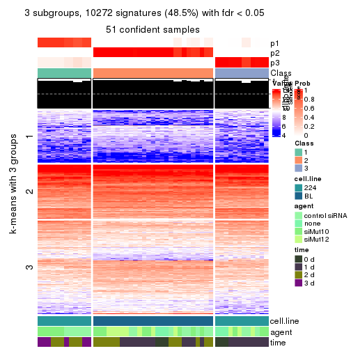
get_signatures(res, k = 4, scale_rows = FALSE)
get_signatures(res, k = 5, scale_rows = FALSE)
get_signatures(res, k = 6, scale_rows = FALSE)
Compare the overlap of signatures from different k:
compare_signatures(res)
get_signature() returns a data frame invisibly. TO get the list of signatures, the function
call should be assigned to a variable explicitly. In following code, if plot argument is set
to FALSE, no heatmap is plotted while only the differential analysis is performed.
# code only for demonstration
tb = get_signature(res, k = ..., plot = FALSE)
An example of the output of tb is:
#> which_row fdr mean_1 mean_2 scaled_mean_1 scaled_mean_2 km
#> 1 38 0.042760348 8.373488 9.131774 -0.5533452 0.5164555 1
#> 2 40 0.018707592 7.106213 8.469186 -0.6173731 0.5762149 1
#> 3 55 0.019134737 10.221463 11.207825 -0.6159697 0.5749050 1
#> 4 59 0.006059896 5.921854 7.869574 -0.6899429 0.6439467 1
#> 5 60 0.018055526 8.928898 10.211722 -0.6204761 0.5791110 1
#> 6 98 0.009384629 15.714769 14.887706 0.6635654 -0.6193277 2
...
The columns in tb are:
which_row: row indices corresponding to the input matrix.fdr: FDR for the differential test. mean_x: The mean value in group x.scaled_mean_x: The mean value in group x after rows are scaled.km: Row groups if k-means clustering is applied to rows.UMAP plot which shows how samples are separated.
dimension_reduction(res, k = 2, method = "UMAP")
dimension_reduction(res, k = 3, method = "UMAP")
dimension_reduction(res, k = 4, method = "UMAP")
dimension_reduction(res, k = 5, method = "UMAP")
dimension_reduction(res, k = 6, method = "UMAP")
Following heatmap shows how subgroups are split when increasing k:
collect_classes(res)
Test correlation between subgroups and known annotations. If the known annotation is numeric, one-way ANOVA test is applied, and if the known annotation is discrete, chi-squared contingency table test is applied.
test_to_known_factors(res)
#> n cell.line(p) agent(p) time(p) k
#> ATC:hclust 51 6.87e-12 0.5277 4.06e-02 2
#> ATC:hclust 51 8.42e-12 0.1524 2.05e-06 3
#> ATC:hclust 50 7.99e-11 0.1869 4.05e-06 4
#> ATC:hclust 50 3.61e-10 0.0007 1.87e-09 5
#> ATC:hclust 50 3.61e-10 0.0007 1.87e-09 6
If matrix rows can be associated to genes, consider to use GO_Enrichment(res,
...) to perform function enrichment for the signature genes.
The object with results only for a single top-value method and a single partition method can be extracted as:
res = res_list["ATC", "kmeans"]
# you can also extract it by
# res = res_list["ATC:kmeans"]
A summary of res and all the functions that can be applied to it:
res
#> A 'ConsensusPartition' object with k = 2, 3, 4, 5, 6.
#> On a matrix with 21168 rows and 51 columns.
#> Top rows (1000, 2000, 3000, 4000, 5000) are extracted by 'ATC' method.
#> Subgroups are detected by 'kmeans' method.
#> Performed in total 1250 partitions by row resampling.
#> Best k for subgroups seems to be 2.
#>
#> Following methods can be applied to this 'ConsensusPartition' object:
#> [1] "cola_report" "collect_classes" "collect_plots"
#> [4] "collect_stats" "colnames" "compare_signatures"
#> [7] "consensus_heatmap" "dimension_reduction" "functional_enrichment"
#> [10] "get_anno_col" "get_anno" "get_classes"
#> [13] "get_consensus" "get_matrix" "get_membership"
#> [16] "get_param" "get_signatures" "get_stats"
#> [19] "is_best_k" "is_stable_k" "membership_heatmap"
#> [22] "ncol" "nrow" "plot_ecdf"
#> [25] "rownames" "select_partition_number" "show"
#> [28] "suggest_best_k" "test_to_known_factors"
collect_plots() function collects all the plots made from res for all k (number of partitions)
into one single page to provide an easy and fast comparison between different k.
collect_plots(res)
The plots are:
k and the heatmap of
predicted classes for each k.k.k.k.All the plots in panels can be made by individual functions and they are plotted later in this section.
select_partition_number() produces several plots showing different
statistics for choosing “optimized” k. There are following statistics:
k;k, the area increased is defined as \(A_k - A_{k-1}\).The detailed explanations of these statistics can be found in the cola vignette.
Generally speaking, lower PAC score, higher mean silhouette score or higher
concordance corresponds to better partition. Rand index and Jaccard index
measure how similar the current partition is compared to partition with k-1.
If they are too similar, we won't accept k is better than k-1.
select_partition_number(res)
The numeric values for all these statistics can be obtained by get_stats().
get_stats(res)
#> k 1-PAC mean_silhouette concordance area_increased Rand Jaccard
#> 2 2 1.000 1.000 1.000 0.5087 0.492 0.492
#> 3 3 0.715 0.337 0.795 0.2089 0.944 0.885
#> 4 4 0.611 0.713 0.770 0.1079 0.774 0.520
#> 5 5 0.598 0.686 0.745 0.0789 0.980 0.931
#> 6 6 0.693 0.723 0.677 0.0728 0.875 0.567
suggest_best_k() suggests the best \(k\) based on these statistics. The rules are as follows:
NA.suggest_best_k(res)
#> [1] 2
Following shows the table of the partitions (You need to click the show/hide
code output link to see it). The membership matrix (columns with name p*)
is inferred by
clue::cl_consensus()
function with the SE method. Basically the value in the membership matrix
represents the probability to belong to a certain group. The finall class
label for an item is determined with the group with highest probability it
belongs to.
In get_classes() function, the entropy is calculated from the membership
matrix and the silhouette score is calculated from the consensus matrix.
cbind(get_classes(res, k = 2), get_membership(res, k = 2))
#> class entropy silhouette p1 p2
#> GSM312684 1 0 1 1 0
#> GSM312685 1 0 1 1 0
#> GSM312686 1 0 1 1 0
#> GSM312693 1 0 1 1 0
#> GSM312694 1 0 1 1 0
#> GSM312695 1 0 1 1 0
#> GSM312699 1 0 1 1 0
#> GSM312700 1 0 1 1 0
#> GSM312701 1 0 1 1 0
#> GSM312705 1 0 1 1 0
#> GSM312706 1 0 1 1 0
#> GSM312707 1 0 1 1 0
#> GSM312687 1 0 1 1 0
#> GSM312688 1 0 1 1 0
#> GSM312689 1 0 1 1 0
#> GSM312696 1 0 1 1 0
#> GSM312697 1 0 1 1 0
#> GSM312698 1 0 1 1 0
#> GSM312702 1 0 1 1 0
#> GSM312703 1 0 1 1 0
#> GSM312704 1 0 1 1 0
#> GSM312690 1 0 1 1 0
#> GSM312691 1 0 1 1 0
#> GSM312692 1 0 1 1 0
#> GSM312708 2 0 1 0 1
#> GSM312709 2 0 1 0 1
#> GSM312710 2 0 1 0 1
#> GSM312719 2 0 1 0 1
#> GSM312720 2 0 1 0 1
#> GSM312721 2 0 1 0 1
#> GSM312722 2 0 1 0 1
#> GSM312731 2 0 1 0 1
#> GSM312732 2 0 1 0 1
#> GSM312733 2 0 1 0 1
#> GSM312734 2 0 1 0 1
#> GSM312711 2 0 1 0 1
#> GSM312712 2 0 1 0 1
#> GSM312713 2 0 1 0 1
#> GSM312714 2 0 1 0 1
#> GSM312723 2 0 1 0 1
#> GSM312724 2 0 1 0 1
#> GSM312725 2 0 1 0 1
#> GSM312726 2 0 1 0 1
#> GSM312715 2 0 1 0 1
#> GSM312716 2 0 1 0 1
#> GSM312717 2 0 1 0 1
#> GSM312718 2 0 1 0 1
#> GSM312727 2 0 1 0 1
#> GSM312728 2 0 1 0 1
#> GSM312729 2 0 1 0 1
#> GSM312730 2 0 1 0 1
cbind(get_classes(res, k = 3), get_membership(res, k = 3))
#> class entropy silhouette p1 p2 p3
#> GSM312684 1 0.1529 0.878 0.960 0.000 0.040
#> GSM312685 1 0.1529 0.878 0.960 0.000 0.040
#> GSM312686 1 0.1529 0.878 0.960 0.000 0.040
#> GSM312693 1 0.0000 0.891 1.000 0.000 0.000
#> GSM312694 1 0.0000 0.891 1.000 0.000 0.000
#> GSM312695 1 0.0000 0.891 1.000 0.000 0.000
#> GSM312699 1 0.4654 0.857 0.792 0.000 0.208
#> GSM312700 1 0.0237 0.891 0.996 0.000 0.004
#> GSM312701 1 0.0237 0.891 0.996 0.000 0.004
#> GSM312705 1 0.4654 0.857 0.792 0.000 0.208
#> GSM312706 1 0.4654 0.857 0.792 0.000 0.208
#> GSM312707 1 0.4654 0.857 0.792 0.000 0.208
#> GSM312687 1 0.0592 0.892 0.988 0.000 0.012
#> GSM312688 1 0.0592 0.892 0.988 0.000 0.012
#> GSM312689 1 0.0592 0.892 0.988 0.000 0.012
#> GSM312696 1 0.6026 0.795 0.624 0.000 0.376
#> GSM312697 1 0.6026 0.795 0.624 0.000 0.376
#> GSM312698 1 0.6026 0.795 0.624 0.000 0.376
#> GSM312702 1 0.6026 0.795 0.624 0.000 0.376
#> GSM312703 1 0.6026 0.795 0.624 0.000 0.376
#> GSM312704 1 0.6026 0.795 0.624 0.000 0.376
#> GSM312690 1 0.0592 0.892 0.988 0.000 0.012
#> GSM312691 1 0.0592 0.892 0.988 0.000 0.012
#> GSM312692 1 0.0592 0.892 0.988 0.000 0.012
#> GSM312708 3 0.6305 1.000 0.000 0.484 0.516
#> GSM312709 3 0.6305 1.000 0.000 0.484 0.516
#> GSM312710 3 0.6305 1.000 0.000 0.484 0.516
#> GSM312719 2 0.0000 0.306 0.000 1.000 0.000
#> GSM312720 2 0.6308 -0.876 0.000 0.508 0.492
#> GSM312721 2 0.6192 -0.512 0.000 0.580 0.420
#> GSM312722 2 0.6204 -0.518 0.000 0.576 0.424
#> GSM312731 2 0.0424 0.304 0.000 0.992 0.008
#> GSM312732 2 0.0000 0.306 0.000 1.000 0.000
#> GSM312733 2 0.0000 0.306 0.000 1.000 0.000
#> GSM312734 2 0.6308 -0.876 0.000 0.508 0.492
#> GSM312711 2 0.0000 0.306 0.000 1.000 0.000
#> GSM312712 2 0.0747 0.300 0.000 0.984 0.016
#> GSM312713 2 0.6308 -0.876 0.000 0.508 0.492
#> GSM312714 2 0.6291 -0.757 0.000 0.532 0.468
#> GSM312723 2 0.1860 0.293 0.000 0.948 0.052
#> GSM312724 2 0.6305 -0.383 0.000 0.516 0.484
#> GSM312725 2 0.6305 -0.383 0.000 0.516 0.484
#> GSM312726 2 0.6305 -0.383 0.000 0.516 0.484
#> GSM312715 2 0.6215 -0.509 0.000 0.572 0.428
#> GSM312716 2 0.6291 -0.667 0.000 0.532 0.468
#> GSM312717 2 0.6235 -0.493 0.000 0.564 0.436
#> GSM312718 2 0.6235 -0.493 0.000 0.564 0.436
#> GSM312727 2 0.6305 -0.383 0.000 0.516 0.484
#> GSM312728 2 0.1860 0.293 0.000 0.948 0.052
#> GSM312729 2 0.6305 -0.383 0.000 0.516 0.484
#> GSM312730 2 0.6305 -0.383 0.000 0.516 0.484
cbind(get_classes(res, k = 4), get_membership(res, k = 4))
#> class entropy silhouette p1 p2 p3 p4
#> GSM312684 1 0.5889 0.496 0.688 0.212 0.100 0.000
#> GSM312685 1 0.5889 0.496 0.688 0.212 0.100 0.000
#> GSM312686 1 0.5889 0.496 0.688 0.212 0.100 0.000
#> GSM312693 1 0.0000 0.718 1.000 0.000 0.000 0.000
#> GSM312694 1 0.0000 0.718 1.000 0.000 0.000 0.000
#> GSM312695 1 0.0000 0.718 1.000 0.000 0.000 0.000
#> GSM312699 1 0.5690 0.356 0.708 0.096 0.196 0.000
#> GSM312700 1 0.2611 0.682 0.896 0.096 0.008 0.000
#> GSM312701 1 0.2611 0.682 0.896 0.096 0.008 0.000
#> GSM312705 1 0.5690 0.356 0.708 0.096 0.196 0.000
#> GSM312706 1 0.5690 0.356 0.708 0.096 0.196 0.000
#> GSM312707 1 0.5690 0.356 0.708 0.096 0.196 0.000
#> GSM312687 1 0.1743 0.703 0.940 0.004 0.056 0.000
#> GSM312688 1 0.1743 0.703 0.940 0.004 0.056 0.000
#> GSM312689 1 0.1743 0.703 0.940 0.004 0.056 0.000
#> GSM312696 3 0.4941 0.972 0.436 0.000 0.564 0.000
#> GSM312697 3 0.4941 0.972 0.436 0.000 0.564 0.000
#> GSM312698 3 0.4941 0.972 0.436 0.000 0.564 0.000
#> GSM312702 3 0.5906 0.972 0.436 0.036 0.528 0.000
#> GSM312703 3 0.5906 0.972 0.436 0.036 0.528 0.000
#> GSM312704 3 0.5906 0.972 0.436 0.036 0.528 0.000
#> GSM312690 1 0.1743 0.703 0.940 0.004 0.056 0.000
#> GSM312691 1 0.1743 0.703 0.940 0.004 0.056 0.000
#> GSM312692 1 0.1743 0.703 0.940 0.004 0.056 0.000
#> GSM312708 2 0.7889 0.686 0.000 0.380 0.304 0.316
#> GSM312709 2 0.7889 0.686 0.000 0.380 0.304 0.316
#> GSM312710 2 0.7889 0.686 0.000 0.380 0.304 0.316
#> GSM312719 4 0.0000 0.865 0.000 0.000 0.000 1.000
#> GSM312720 2 0.7550 0.780 0.000 0.464 0.204 0.332
#> GSM312721 4 0.7218 -0.756 0.000 0.416 0.140 0.444
#> GSM312722 2 0.7463 0.772 0.000 0.440 0.176 0.384
#> GSM312731 4 0.0469 0.864 0.000 0.000 0.012 0.988
#> GSM312732 4 0.0592 0.865 0.000 0.000 0.016 0.984
#> GSM312733 4 0.0336 0.865 0.000 0.000 0.008 0.992
#> GSM312734 2 0.7550 0.780 0.000 0.464 0.204 0.332
#> GSM312711 4 0.0336 0.864 0.000 0.000 0.008 0.992
#> GSM312712 4 0.0927 0.847 0.000 0.008 0.016 0.976
#> GSM312713 2 0.7526 0.782 0.000 0.468 0.200 0.332
#> GSM312714 2 0.7495 0.787 0.000 0.468 0.192 0.340
#> GSM312723 4 0.1256 0.845 0.000 0.028 0.008 0.964
#> GSM312724 2 0.4500 0.771 0.000 0.684 0.000 0.316
#> GSM312725 2 0.4500 0.771 0.000 0.684 0.000 0.316
#> GSM312726 2 0.4500 0.771 0.000 0.684 0.000 0.316
#> GSM312715 2 0.6658 0.793 0.000 0.532 0.092 0.376
#> GSM312716 2 0.6712 0.804 0.000 0.552 0.104 0.344
#> GSM312717 2 0.6637 0.794 0.000 0.540 0.092 0.368
#> GSM312718 2 0.6637 0.794 0.000 0.540 0.092 0.368
#> GSM312727 2 0.4500 0.771 0.000 0.684 0.000 0.316
#> GSM312728 4 0.1256 0.845 0.000 0.028 0.008 0.964
#> GSM312729 2 0.4500 0.771 0.000 0.684 0.000 0.316
#> GSM312730 2 0.4500 0.771 0.000 0.684 0.000 0.316
cbind(get_classes(res, k = 5), get_membership(res, k = 5))
#> class entropy silhouette p1 p2 p3 p4 p5
#> GSM312684 1 0.6918 0.437 0.528 0.000 0.056 0.120 NA
#> GSM312685 1 0.6918 0.437 0.528 0.000 0.056 0.120 NA
#> GSM312686 1 0.6918 0.437 0.528 0.000 0.056 0.120 NA
#> GSM312693 1 0.0290 0.670 0.992 0.000 0.000 0.000 NA
#> GSM312694 1 0.0290 0.670 0.992 0.000 0.000 0.000 NA
#> GSM312695 1 0.0324 0.670 0.992 0.000 0.000 0.004 NA
#> GSM312699 1 0.6529 0.307 0.524 0.000 0.196 0.008 NA
#> GSM312700 1 0.4501 0.563 0.696 0.000 0.020 0.008 NA
#> GSM312701 1 0.4501 0.563 0.696 0.000 0.020 0.008 NA
#> GSM312705 1 0.6529 0.307 0.524 0.000 0.196 0.008 NA
#> GSM312706 1 0.6529 0.307 0.524 0.000 0.196 0.008 NA
#> GSM312707 1 0.6529 0.307 0.524 0.000 0.196 0.008 NA
#> GSM312687 1 0.1216 0.661 0.960 0.000 0.020 0.020 NA
#> GSM312688 1 0.0609 0.663 0.980 0.000 0.020 0.000 NA
#> GSM312689 1 0.0609 0.663 0.980 0.000 0.020 0.000 NA
#> GSM312696 3 0.3837 0.961 0.308 0.000 0.692 0.000 NA
#> GSM312697 3 0.3837 0.961 0.308 0.000 0.692 0.000 NA
#> GSM312698 3 0.3837 0.961 0.308 0.000 0.692 0.000 NA
#> GSM312702 3 0.5386 0.961 0.308 0.000 0.628 0.048 NA
#> GSM312703 3 0.5386 0.961 0.308 0.000 0.628 0.048 NA
#> GSM312704 3 0.5386 0.961 0.308 0.000 0.628 0.048 NA
#> GSM312690 1 0.0609 0.663 0.980 0.000 0.020 0.000 NA
#> GSM312691 1 0.1216 0.661 0.960 0.000 0.020 0.020 NA
#> GSM312692 1 0.0609 0.663 0.980 0.000 0.020 0.000 NA
#> GSM312708 2 0.4718 0.499 0.000 0.540 0.000 0.016 NA
#> GSM312709 2 0.4718 0.499 0.000 0.540 0.000 0.016 NA
#> GSM312710 2 0.4718 0.499 0.000 0.540 0.000 0.016 NA
#> GSM312719 4 0.4397 0.939 0.000 0.264 0.004 0.708 NA
#> GSM312720 2 0.2843 0.697 0.000 0.848 0.000 0.008 NA
#> GSM312721 2 0.3133 0.671 0.000 0.864 0.004 0.052 NA
#> GSM312722 2 0.2623 0.697 0.000 0.884 0.004 0.016 NA
#> GSM312731 4 0.4984 0.908 0.000 0.308 0.008 0.648 NA
#> GSM312732 4 0.4015 0.939 0.000 0.264 0.008 0.724 NA
#> GSM312733 4 0.4782 0.937 0.000 0.264 0.012 0.692 NA
#> GSM312734 2 0.3252 0.693 0.000 0.828 0.008 0.008 NA
#> GSM312711 4 0.3586 0.938 0.000 0.264 0.000 0.736 NA
#> GSM312712 4 0.4944 0.865 0.000 0.344 0.004 0.620 NA
#> GSM312713 2 0.3167 0.694 0.000 0.836 0.008 0.008 NA
#> GSM312714 2 0.2127 0.709 0.000 0.892 0.000 0.000 NA
#> GSM312723 4 0.3461 0.910 0.000 0.224 0.004 0.772 NA
#> GSM312724 2 0.5856 0.617 0.000 0.660 0.220 0.048 NA
#> GSM312725 2 0.5856 0.617 0.000 0.660 0.220 0.048 NA
#> GSM312726 2 0.5856 0.617 0.000 0.660 0.220 0.048 NA
#> GSM312715 2 0.1617 0.705 0.000 0.948 0.012 0.020 NA
#> GSM312716 2 0.1306 0.720 0.000 0.960 0.016 0.008 NA
#> GSM312717 2 0.1405 0.709 0.000 0.956 0.016 0.020 NA
#> GSM312718 2 0.1405 0.709 0.000 0.956 0.016 0.020 NA
#> GSM312727 2 0.5673 0.624 0.000 0.692 0.180 0.052 NA
#> GSM312728 4 0.3430 0.908 0.000 0.220 0.004 0.776 NA
#> GSM312729 2 0.5673 0.624 0.000 0.692 0.180 0.052 NA
#> GSM312730 2 0.5673 0.624 0.000 0.692 0.180 0.052 NA
cbind(get_classes(res, k = 6), get_membership(res, k = 6))
#> class entropy silhouette p1 p2 p3 p4 p5 p6
#> GSM312684 1 0.702 0.314 0.384 0.000 0.332 0.004 0.220 0.060
#> GSM312685 1 0.702 0.314 0.384 0.000 0.332 0.004 0.220 0.060
#> GSM312686 1 0.702 0.314 0.384 0.000 0.332 0.004 0.220 0.060
#> GSM312693 3 0.398 0.922 0.360 0.000 0.628 0.012 0.000 0.000
#> GSM312694 3 0.398 0.922 0.360 0.000 0.628 0.012 0.000 0.000
#> GSM312695 3 0.419 0.923 0.356 0.000 0.624 0.016 0.000 0.004
#> GSM312699 1 0.000 0.527 1.000 0.000 0.000 0.000 0.000 0.000
#> GSM312700 1 0.316 0.340 0.764 0.000 0.232 0.004 0.000 0.000
#> GSM312701 1 0.316 0.340 0.764 0.000 0.232 0.004 0.000 0.000
#> GSM312705 1 0.000 0.527 1.000 0.000 0.000 0.000 0.000 0.000
#> GSM312706 1 0.000 0.527 1.000 0.000 0.000 0.000 0.000 0.000
#> GSM312707 1 0.000 0.527 1.000 0.000 0.000 0.000 0.000 0.000
#> GSM312687 3 0.459 0.940 0.324 0.000 0.636 0.020 0.012 0.008
#> GSM312688 3 0.365 0.954 0.324 0.000 0.672 0.000 0.000 0.004
#> GSM312689 3 0.365 0.954 0.324 0.000 0.672 0.000 0.000 0.004
#> GSM312696 6 0.463 0.961 0.424 0.000 0.032 0.000 0.004 0.540
#> GSM312697 6 0.463 0.961 0.424 0.000 0.032 0.004 0.000 0.540
#> GSM312698 6 0.463 0.961 0.424 0.000 0.032 0.000 0.004 0.540
#> GSM312702 6 0.557 0.962 0.416 0.000 0.052 0.016 0.016 0.500
#> GSM312703 6 0.557 0.962 0.416 0.000 0.052 0.016 0.016 0.500
#> GSM312704 6 0.557 0.962 0.416 0.000 0.052 0.016 0.016 0.500
#> GSM312690 3 0.365 0.954 0.324 0.000 0.672 0.000 0.000 0.004
#> GSM312691 3 0.452 0.934 0.324 0.000 0.640 0.012 0.012 0.012
#> GSM312692 3 0.365 0.954 0.324 0.000 0.672 0.000 0.000 0.004
#> GSM312708 2 0.640 0.350 0.000 0.520 0.056 0.004 0.128 0.292
#> GSM312709 2 0.640 0.350 0.000 0.520 0.056 0.004 0.128 0.292
#> GSM312710 2 0.640 0.350 0.000 0.520 0.056 0.004 0.128 0.292
#> GSM312719 4 0.300 0.915 0.000 0.052 0.028 0.876 0.020 0.024
#> GSM312720 2 0.138 0.597 0.000 0.952 0.020 0.004 0.020 0.004
#> GSM312721 2 0.380 0.528 0.000 0.828 0.032 0.076 0.040 0.024
#> GSM312722 2 0.260 0.580 0.000 0.892 0.020 0.032 0.052 0.004
#> GSM312731 4 0.459 0.882 0.000 0.100 0.044 0.776 0.036 0.044
#> GSM312732 4 0.221 0.916 0.000 0.052 0.008 0.912 0.012 0.016
#> GSM312733 4 0.381 0.909 0.000 0.052 0.036 0.832 0.032 0.048
#> GSM312734 2 0.253 0.578 0.000 0.896 0.052 0.004 0.024 0.024
#> GSM312711 4 0.210 0.915 0.000 0.052 0.016 0.916 0.004 0.012
#> GSM312712 4 0.482 0.814 0.000 0.168 0.048 0.732 0.024 0.028
#> GSM312713 2 0.168 0.595 0.000 0.940 0.024 0.004 0.020 0.012
#> GSM312714 2 0.109 0.588 0.000 0.960 0.024 0.016 0.000 0.000
#> GSM312723 4 0.239 0.911 0.000 0.052 0.020 0.904 0.008 0.016
#> GSM312724 5 0.523 0.903 0.000 0.460 0.032 0.020 0.480 0.008
#> GSM312725 5 0.523 0.903 0.000 0.460 0.032 0.020 0.480 0.008
#> GSM312726 5 0.523 0.903 0.000 0.460 0.032 0.020 0.480 0.008
#> GSM312715 2 0.405 0.462 0.000 0.776 0.016 0.028 0.164 0.016
#> GSM312716 2 0.300 0.461 0.000 0.812 0.000 0.016 0.172 0.000
#> GSM312717 2 0.349 0.452 0.000 0.792 0.008 0.028 0.172 0.000
#> GSM312718 2 0.349 0.452 0.000 0.792 0.008 0.028 0.172 0.000
#> GSM312727 5 0.432 0.901 0.000 0.448 0.000 0.020 0.532 0.000
#> GSM312728 4 0.239 0.911 0.000 0.052 0.020 0.904 0.008 0.016
#> GSM312729 5 0.432 0.901 0.000 0.448 0.000 0.020 0.532 0.000
#> GSM312730 5 0.432 0.901 0.000 0.448 0.000 0.020 0.532 0.000
Heatmaps for the consensus matrix. It visualizes the probability of two samples to be in a same group.
consensus_heatmap(res, k = 2)
consensus_heatmap(res, k = 3)
consensus_heatmap(res, k = 4)
consensus_heatmap(res, k = 5)

consensus_heatmap(res, k = 6)
Heatmaps for the membership of samples in all partitions to see how consistent they are:
membership_heatmap(res, k = 2)

membership_heatmap(res, k = 3)
membership_heatmap(res, k = 4)
membership_heatmap(res, k = 5)
membership_heatmap(res, k = 6)
As soon as we have had the classes for columns, we can look for signatures which are significantly different between classes which can be candidate marks for certain classes. Following are the heatmaps for signatures.
Signature heatmaps where rows are scaled:
get_signatures(res, k = 2)

get_signatures(res, k = 3)
get_signatures(res, k = 4)
get_signatures(res, k = 5)
get_signatures(res, k = 6)
Signature heatmaps where rows are not scaled:
get_signatures(res, k = 2, scale_rows = FALSE)

get_signatures(res, k = 3, scale_rows = FALSE)
get_signatures(res, k = 4, scale_rows = FALSE)
get_signatures(res, k = 5, scale_rows = FALSE)
get_signatures(res, k = 6, scale_rows = FALSE)
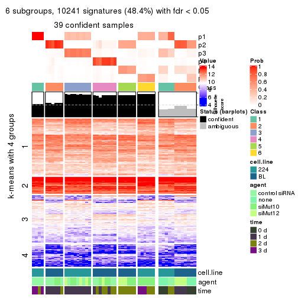
Compare the overlap of signatures from different k:
compare_signatures(res)
get_signature() returns a data frame invisibly. TO get the list of signatures, the function
call should be assigned to a variable explicitly. In following code, if plot argument is set
to FALSE, no heatmap is plotted while only the differential analysis is performed.
# code only for demonstration
tb = get_signature(res, k = ..., plot = FALSE)
An example of the output of tb is:
#> which_row fdr mean_1 mean_2 scaled_mean_1 scaled_mean_2 km
#> 1 38 0.042760348 8.373488 9.131774 -0.5533452 0.5164555 1
#> 2 40 0.018707592 7.106213 8.469186 -0.6173731 0.5762149 1
#> 3 55 0.019134737 10.221463 11.207825 -0.6159697 0.5749050 1
#> 4 59 0.006059896 5.921854 7.869574 -0.6899429 0.6439467 1
#> 5 60 0.018055526 8.928898 10.211722 -0.6204761 0.5791110 1
#> 6 98 0.009384629 15.714769 14.887706 0.6635654 -0.6193277 2
...
The columns in tb are:
which_row: row indices corresponding to the input matrix.fdr: FDR for the differential test. mean_x: The mean value in group x.scaled_mean_x: The mean value in group x after rows are scaled.km: Row groups if k-means clustering is applied to rows.UMAP plot which shows how samples are separated.
dimension_reduction(res, k = 2, method = "UMAP")

dimension_reduction(res, k = 3, method = "UMAP")
dimension_reduction(res, k = 4, method = "UMAP")
dimension_reduction(res, k = 5, method = "UMAP")
dimension_reduction(res, k = 6, method = "UMAP")
Following heatmap shows how subgroups are split when increasing k:
collect_classes(res)
Test correlation between subgroups and known annotations. If the known annotation is numeric, one-way ANOVA test is applied, and if the known annotation is discrete, chi-squared contingency table test is applied.
test_to_known_factors(res)
#> n cell.line(p) agent(p) time(p) k
#> ATC:kmeans 51 6.87e-12 0.52771 4.06e-02 2
#> ATC:kmeans 27 2.42e-05 0.00805 8.05e-03 3
#> ATC:kmeans 43 2.46e-09 0.02353 2.88e-04 4
#> ATC:kmeans 41 6.54e-09 0.03595 2.91e-04 5
#> ATC:kmeans 39 2.37e-07 0.00668 2.11e-06 6
If matrix rows can be associated to genes, consider to use GO_Enrichment(res,
...) to perform function enrichment for the signature genes.
The object with results only for a single top-value method and a single partition method can be extracted as:
res = res_list["ATC", "skmeans"]
# you can also extract it by
# res = res_list["ATC:skmeans"]
A summary of res and all the functions that can be applied to it:
res
#> A 'ConsensusPartition' object with k = 2, 3, 4, 5, 6.
#> On a matrix with 21168 rows and 51 columns.
#> Top rows (1000, 2000, 3000, 4000, 5000) are extracted by 'ATC' method.
#> Subgroups are detected by 'skmeans' method.
#> Performed in total 1250 partitions by row resampling.
#> Best k for subgroups seems to be 2.
#>
#> Following methods can be applied to this 'ConsensusPartition' object:
#> [1] "cola_report" "collect_classes" "collect_plots"
#> [4] "collect_stats" "colnames" "compare_signatures"
#> [7] "consensus_heatmap" "dimension_reduction" "functional_enrichment"
#> [10] "get_anno_col" "get_anno" "get_classes"
#> [13] "get_consensus" "get_matrix" "get_membership"
#> [16] "get_param" "get_signatures" "get_stats"
#> [19] "is_best_k" "is_stable_k" "membership_heatmap"
#> [22] "ncol" "nrow" "plot_ecdf"
#> [25] "rownames" "select_partition_number" "show"
#> [28] "suggest_best_k" "test_to_known_factors"
collect_plots() function collects all the plots made from res for all k (number of partitions)
into one single page to provide an easy and fast comparison between different k.
collect_plots(res)
The plots are:
k and the heatmap of
predicted classes for each k.k.k.k.All the plots in panels can be made by individual functions and they are plotted later in this section.
select_partition_number() produces several plots showing different
statistics for choosing “optimized” k. There are following statistics:
k;k, the area increased is defined as \(A_k - A_{k-1}\).The detailed explanations of these statistics can be found in the cola vignette.
Generally speaking, lower PAC score, higher mean silhouette score or higher
concordance corresponds to better partition. Rand index and Jaccard index
measure how similar the current partition is compared to partition with k-1.
If they are too similar, we won't accept k is better than k-1.
select_partition_number(res)
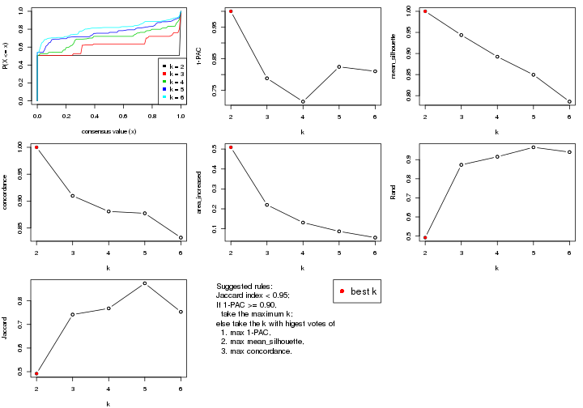
The numeric values for all these statistics can be obtained by get_stats().
get_stats(res)
#> k 1-PAC mean_silhouette concordance area_increased Rand Jaccard
#> 2 2 1.000 1.000 1.000 0.5087 0.492 0.492
#> 3 3 0.788 0.944 0.910 0.2200 0.873 0.742
#> 4 4 0.715 0.892 0.881 0.1312 0.915 0.768
#> 5 5 0.824 0.850 0.877 0.0871 0.965 0.874
#> 6 6 0.810 0.786 0.832 0.0558 0.940 0.753
suggest_best_k() suggests the best \(k\) based on these statistics. The rules are as follows:
NA.suggest_best_k(res)
#> [1] 2
Following shows the table of the partitions (You need to click the show/hide
code output link to see it). The membership matrix (columns with name p*)
is inferred by
clue::cl_consensus()
function with the SE method. Basically the value in the membership matrix
represents the probability to belong to a certain group. The finall class
label for an item is determined with the group with highest probability it
belongs to.
In get_classes() function, the entropy is calculated from the membership
matrix and the silhouette score is calculated from the consensus matrix.
cbind(get_classes(res, k = 2), get_membership(res, k = 2))
#> class entropy silhouette p1 p2
#> GSM312684 1 0 1 1 0
#> GSM312685 1 0 1 1 0
#> GSM312686 1 0 1 1 0
#> GSM312693 1 0 1 1 0
#> GSM312694 1 0 1 1 0
#> GSM312695 1 0 1 1 0
#> GSM312699 1 0 1 1 0
#> GSM312700 1 0 1 1 0
#> GSM312701 1 0 1 1 0
#> GSM312705 1 0 1 1 0
#> GSM312706 1 0 1 1 0
#> GSM312707 1 0 1 1 0
#> GSM312687 1 0 1 1 0
#> GSM312688 1 0 1 1 0
#> GSM312689 1 0 1 1 0
#> GSM312696 1 0 1 1 0
#> GSM312697 1 0 1 1 0
#> GSM312698 1 0 1 1 0
#> GSM312702 1 0 1 1 0
#> GSM312703 1 0 1 1 0
#> GSM312704 1 0 1 1 0
#> GSM312690 1 0 1 1 0
#> GSM312691 1 0 1 1 0
#> GSM312692 1 0 1 1 0
#> GSM312708 2 0 1 0 1
#> GSM312709 2 0 1 0 1
#> GSM312710 2 0 1 0 1
#> GSM312719 2 0 1 0 1
#> GSM312720 2 0 1 0 1
#> GSM312721 2 0 1 0 1
#> GSM312722 2 0 1 0 1
#> GSM312731 2 0 1 0 1
#> GSM312732 2 0 1 0 1
#> GSM312733 2 0 1 0 1
#> GSM312734 2 0 1 0 1
#> GSM312711 2 0 1 0 1
#> GSM312712 2 0 1 0 1
#> GSM312713 2 0 1 0 1
#> GSM312714 2 0 1 0 1
#> GSM312723 2 0 1 0 1
#> GSM312724 2 0 1 0 1
#> GSM312725 2 0 1 0 1
#> GSM312726 2 0 1 0 1
#> GSM312715 2 0 1 0 1
#> GSM312716 2 0 1 0 1
#> GSM312717 2 0 1 0 1
#> GSM312718 2 0 1 0 1
#> GSM312727 2 0 1 0 1
#> GSM312728 2 0 1 0 1
#> GSM312729 2 0 1 0 1
#> GSM312730 2 0 1 0 1
cbind(get_classes(res, k = 3), get_membership(res, k = 3))
#> class entropy silhouette p1 p2 p3
#> GSM312684 1 0.0000 0.942 1.000 0.000 0.000
#> GSM312685 1 0.0000 0.942 1.000 0.000 0.000
#> GSM312686 1 0.0000 0.942 1.000 0.000 0.000
#> GSM312693 1 0.0000 0.942 1.000 0.000 0.000
#> GSM312694 1 0.0000 0.942 1.000 0.000 0.000
#> GSM312695 1 0.0000 0.942 1.000 0.000 0.000
#> GSM312699 1 0.0747 0.939 0.984 0.000 0.016
#> GSM312700 1 0.0000 0.942 1.000 0.000 0.000
#> GSM312701 1 0.0000 0.942 1.000 0.000 0.000
#> GSM312705 1 0.0747 0.939 0.984 0.000 0.016
#> GSM312706 1 0.0747 0.939 0.984 0.000 0.016
#> GSM312707 1 0.0747 0.939 0.984 0.000 0.016
#> GSM312687 1 0.0000 0.942 1.000 0.000 0.000
#> GSM312688 1 0.0000 0.942 1.000 0.000 0.000
#> GSM312689 1 0.0000 0.942 1.000 0.000 0.000
#> GSM312696 1 0.5098 0.822 0.752 0.000 0.248
#> GSM312697 1 0.5098 0.822 0.752 0.000 0.248
#> GSM312698 1 0.5098 0.822 0.752 0.000 0.248
#> GSM312702 1 0.5098 0.822 0.752 0.000 0.248
#> GSM312703 1 0.5098 0.822 0.752 0.000 0.248
#> GSM312704 1 0.5098 0.822 0.752 0.000 0.248
#> GSM312690 1 0.0000 0.942 1.000 0.000 0.000
#> GSM312691 1 0.0000 0.942 1.000 0.000 0.000
#> GSM312692 1 0.0000 0.942 1.000 0.000 0.000
#> GSM312708 2 0.2066 0.921 0.000 0.940 0.060
#> GSM312709 2 0.2066 0.921 0.000 0.940 0.060
#> GSM312710 2 0.2066 0.921 0.000 0.940 0.060
#> GSM312719 3 0.5621 0.985 0.000 0.308 0.692
#> GSM312720 2 0.0000 0.983 0.000 1.000 0.000
#> GSM312721 3 0.6079 0.869 0.000 0.388 0.612
#> GSM312722 2 0.0237 0.980 0.000 0.996 0.004
#> GSM312731 3 0.5621 0.985 0.000 0.308 0.692
#> GSM312732 3 0.5621 0.985 0.000 0.308 0.692
#> GSM312733 3 0.5621 0.985 0.000 0.308 0.692
#> GSM312734 2 0.0000 0.983 0.000 1.000 0.000
#> GSM312711 3 0.5621 0.985 0.000 0.308 0.692
#> GSM312712 3 0.5621 0.985 0.000 0.308 0.692
#> GSM312713 2 0.0000 0.983 0.000 1.000 0.000
#> GSM312714 2 0.0000 0.983 0.000 1.000 0.000
#> GSM312723 3 0.5621 0.985 0.000 0.308 0.692
#> GSM312724 2 0.0000 0.983 0.000 1.000 0.000
#> GSM312725 2 0.0000 0.983 0.000 1.000 0.000
#> GSM312726 2 0.0000 0.983 0.000 1.000 0.000
#> GSM312715 2 0.0237 0.980 0.000 0.996 0.004
#> GSM312716 2 0.0000 0.983 0.000 1.000 0.000
#> GSM312717 2 0.0237 0.980 0.000 0.996 0.004
#> GSM312718 2 0.0237 0.980 0.000 0.996 0.004
#> GSM312727 2 0.0000 0.983 0.000 1.000 0.000
#> GSM312728 3 0.5621 0.985 0.000 0.308 0.692
#> GSM312729 2 0.0000 0.983 0.000 1.000 0.000
#> GSM312730 2 0.0000 0.983 0.000 1.000 0.000
cbind(get_classes(res, k = 4), get_membership(res, k = 4))
#> class entropy silhouette p1 p2 p3 p4
#> GSM312684 1 0.2466 0.833 0.900 0.000 0.096 0.004
#> GSM312685 1 0.2466 0.833 0.900 0.000 0.096 0.004
#> GSM312686 1 0.2466 0.833 0.900 0.000 0.096 0.004
#> GSM312693 1 0.0000 0.897 1.000 0.000 0.000 0.000
#> GSM312694 1 0.0000 0.897 1.000 0.000 0.000 0.000
#> GSM312695 1 0.0336 0.897 0.992 0.000 0.000 0.008
#> GSM312699 1 0.3726 0.700 0.788 0.000 0.212 0.000
#> GSM312700 1 0.0000 0.897 1.000 0.000 0.000 0.000
#> GSM312701 1 0.0000 0.897 1.000 0.000 0.000 0.000
#> GSM312705 1 0.3726 0.700 0.788 0.000 0.212 0.000
#> GSM312706 1 0.3726 0.700 0.788 0.000 0.212 0.000
#> GSM312707 1 0.3726 0.700 0.788 0.000 0.212 0.000
#> GSM312687 1 0.1151 0.896 0.968 0.000 0.024 0.008
#> GSM312688 1 0.1151 0.896 0.968 0.000 0.024 0.008
#> GSM312689 1 0.1151 0.896 0.968 0.000 0.024 0.008
#> GSM312696 3 0.3356 1.000 0.176 0.000 0.824 0.000
#> GSM312697 3 0.3356 1.000 0.176 0.000 0.824 0.000
#> GSM312698 3 0.3356 1.000 0.176 0.000 0.824 0.000
#> GSM312702 3 0.3356 1.000 0.176 0.000 0.824 0.000
#> GSM312703 3 0.3356 1.000 0.176 0.000 0.824 0.000
#> GSM312704 3 0.3356 1.000 0.176 0.000 0.824 0.000
#> GSM312690 1 0.1151 0.896 0.968 0.000 0.024 0.008
#> GSM312691 1 0.1151 0.896 0.968 0.000 0.024 0.008
#> GSM312692 1 0.1042 0.896 0.972 0.000 0.020 0.008
#> GSM312708 2 0.5696 0.655 0.000 0.692 0.076 0.232
#> GSM312709 2 0.5696 0.655 0.000 0.692 0.076 0.232
#> GSM312710 2 0.5696 0.655 0.000 0.692 0.076 0.232
#> GSM312719 4 0.4008 0.983 0.000 0.244 0.000 0.756
#> GSM312720 2 0.0707 0.906 0.000 0.980 0.000 0.020
#> GSM312721 4 0.4643 0.846 0.000 0.344 0.000 0.656
#> GSM312722 2 0.0592 0.913 0.000 0.984 0.000 0.016
#> GSM312731 4 0.4008 0.983 0.000 0.244 0.000 0.756
#> GSM312732 4 0.4008 0.983 0.000 0.244 0.000 0.756
#> GSM312733 4 0.4008 0.983 0.000 0.244 0.000 0.756
#> GSM312734 2 0.0817 0.904 0.000 0.976 0.000 0.024
#> GSM312711 4 0.4008 0.983 0.000 0.244 0.000 0.756
#> GSM312712 4 0.4008 0.983 0.000 0.244 0.000 0.756
#> GSM312713 2 0.0707 0.906 0.000 0.980 0.000 0.020
#> GSM312714 2 0.0336 0.916 0.000 0.992 0.000 0.008
#> GSM312723 4 0.4008 0.983 0.000 0.244 0.000 0.756
#> GSM312724 2 0.1004 0.906 0.000 0.972 0.004 0.024
#> GSM312725 2 0.0657 0.915 0.000 0.984 0.004 0.012
#> GSM312726 2 0.0657 0.915 0.000 0.984 0.004 0.012
#> GSM312715 2 0.0707 0.911 0.000 0.980 0.000 0.020
#> GSM312716 2 0.0188 0.914 0.000 0.996 0.000 0.004
#> GSM312717 2 0.0592 0.914 0.000 0.984 0.000 0.016
#> GSM312718 2 0.0592 0.914 0.000 0.984 0.000 0.016
#> GSM312727 2 0.0376 0.916 0.000 0.992 0.004 0.004
#> GSM312728 4 0.4008 0.983 0.000 0.244 0.000 0.756
#> GSM312729 2 0.0657 0.915 0.000 0.984 0.004 0.012
#> GSM312730 2 0.0376 0.916 0.000 0.992 0.004 0.004
cbind(get_classes(res, k = 5), get_membership(res, k = 5))
#> class entropy silhouette p1 p2 p3 p4 p5
#> GSM312684 1 0.5054 0.713 0.732 0.000 0.076 0.024 0.168
#> GSM312685 1 0.5054 0.713 0.732 0.000 0.076 0.024 0.168
#> GSM312686 1 0.5054 0.713 0.732 0.000 0.076 0.024 0.168
#> GSM312693 1 0.0404 0.822 0.988 0.000 0.000 0.000 0.012
#> GSM312694 1 0.0324 0.824 0.992 0.000 0.000 0.004 0.004
#> GSM312695 1 0.0290 0.824 0.992 0.000 0.000 0.000 0.008
#> GSM312699 1 0.5602 0.508 0.620 0.000 0.304 0.024 0.052
#> GSM312700 1 0.2251 0.807 0.916 0.000 0.008 0.024 0.052
#> GSM312701 1 0.2032 0.810 0.924 0.000 0.004 0.020 0.052
#> GSM312705 1 0.5637 0.496 0.612 0.000 0.312 0.024 0.052
#> GSM312706 1 0.5637 0.496 0.612 0.000 0.312 0.024 0.052
#> GSM312707 1 0.5637 0.496 0.612 0.000 0.312 0.024 0.052
#> GSM312687 1 0.1646 0.820 0.944 0.000 0.020 0.004 0.032
#> GSM312688 1 0.1646 0.820 0.944 0.000 0.020 0.004 0.032
#> GSM312689 1 0.1646 0.820 0.944 0.000 0.020 0.004 0.032
#> GSM312696 3 0.1671 1.000 0.076 0.000 0.924 0.000 0.000
#> GSM312697 3 0.1671 1.000 0.076 0.000 0.924 0.000 0.000
#> GSM312698 3 0.1671 1.000 0.076 0.000 0.924 0.000 0.000
#> GSM312702 3 0.1671 1.000 0.076 0.000 0.924 0.000 0.000
#> GSM312703 3 0.1671 1.000 0.076 0.000 0.924 0.000 0.000
#> GSM312704 3 0.1671 1.000 0.076 0.000 0.924 0.000 0.000
#> GSM312690 1 0.1646 0.820 0.944 0.000 0.020 0.004 0.032
#> GSM312691 1 0.1646 0.820 0.944 0.000 0.020 0.004 0.032
#> GSM312692 1 0.1646 0.820 0.944 0.000 0.020 0.004 0.032
#> GSM312708 5 0.3177 1.000 0.000 0.208 0.000 0.000 0.792
#> GSM312709 5 0.3177 1.000 0.000 0.208 0.000 0.000 0.792
#> GSM312710 5 0.3177 1.000 0.000 0.208 0.000 0.000 0.792
#> GSM312719 4 0.1197 0.971 0.000 0.048 0.000 0.952 0.000
#> GSM312720 2 0.3086 0.858 0.000 0.816 0.000 0.004 0.180
#> GSM312721 4 0.4075 0.735 0.000 0.160 0.000 0.780 0.060
#> GSM312722 2 0.4114 0.818 0.000 0.776 0.000 0.060 0.164
#> GSM312731 4 0.1270 0.968 0.000 0.052 0.000 0.948 0.000
#> GSM312732 4 0.1197 0.971 0.000 0.048 0.000 0.952 0.000
#> GSM312733 4 0.1197 0.971 0.000 0.048 0.000 0.952 0.000
#> GSM312734 2 0.3109 0.840 0.000 0.800 0.000 0.000 0.200
#> GSM312711 4 0.1197 0.971 0.000 0.048 0.000 0.952 0.000
#> GSM312712 4 0.1270 0.968 0.000 0.052 0.000 0.948 0.000
#> GSM312713 2 0.3010 0.862 0.000 0.824 0.000 0.004 0.172
#> GSM312714 2 0.3053 0.866 0.000 0.828 0.000 0.008 0.164
#> GSM312723 4 0.1197 0.971 0.000 0.048 0.000 0.952 0.000
#> GSM312724 2 0.0162 0.829 0.000 0.996 0.000 0.004 0.000
#> GSM312725 2 0.0000 0.831 0.000 1.000 0.000 0.000 0.000
#> GSM312726 2 0.0000 0.831 0.000 1.000 0.000 0.000 0.000
#> GSM312715 2 0.3409 0.861 0.000 0.816 0.000 0.024 0.160
#> GSM312716 2 0.2890 0.866 0.000 0.836 0.000 0.004 0.160
#> GSM312717 2 0.3224 0.865 0.000 0.824 0.000 0.016 0.160
#> GSM312718 2 0.3141 0.868 0.000 0.832 0.000 0.016 0.152
#> GSM312727 2 0.0000 0.831 0.000 1.000 0.000 0.000 0.000
#> GSM312728 4 0.1197 0.971 0.000 0.048 0.000 0.952 0.000
#> GSM312729 2 0.0000 0.831 0.000 1.000 0.000 0.000 0.000
#> GSM312730 2 0.0000 0.831 0.000 1.000 0.000 0.000 0.000
cbind(get_classes(res, k = 6), get_membership(res, k = 6))
#> class entropy silhouette p1 p2 p3 p4 p5 p6
#> GSM312684 5 0.4367 0.418 0.000 0.000 0.228 0.016 0.712 0.044
#> GSM312685 5 0.4367 0.418 0.000 0.000 0.228 0.016 0.712 0.044
#> GSM312686 5 0.4367 0.418 0.000 0.000 0.228 0.016 0.712 0.044
#> GSM312693 3 0.2135 0.735 0.000 0.000 0.872 0.000 0.128 0.000
#> GSM312694 3 0.1863 0.763 0.000 0.000 0.896 0.000 0.104 0.000
#> GSM312695 3 0.1141 0.804 0.000 0.000 0.948 0.000 0.052 0.000
#> GSM312699 5 0.6044 0.495 0.264 0.000 0.328 0.000 0.408 0.000
#> GSM312700 3 0.4583 0.140 0.044 0.000 0.580 0.000 0.376 0.000
#> GSM312701 3 0.4573 0.149 0.044 0.000 0.584 0.000 0.372 0.000
#> GSM312705 5 0.6049 0.500 0.268 0.000 0.324 0.000 0.408 0.000
#> GSM312706 5 0.6053 0.500 0.272 0.000 0.320 0.000 0.408 0.000
#> GSM312707 5 0.6049 0.500 0.268 0.000 0.324 0.000 0.408 0.000
#> GSM312687 3 0.0146 0.825 0.004 0.000 0.996 0.000 0.000 0.000
#> GSM312688 3 0.0146 0.825 0.004 0.000 0.996 0.000 0.000 0.000
#> GSM312689 3 0.0291 0.825 0.004 0.000 0.992 0.000 0.004 0.000
#> GSM312696 1 0.0547 1.000 0.980 0.000 0.020 0.000 0.000 0.000
#> GSM312697 1 0.0547 1.000 0.980 0.000 0.020 0.000 0.000 0.000
#> GSM312698 1 0.0547 1.000 0.980 0.000 0.020 0.000 0.000 0.000
#> GSM312702 1 0.0547 1.000 0.980 0.000 0.020 0.000 0.000 0.000
#> GSM312703 1 0.0547 1.000 0.980 0.000 0.020 0.000 0.000 0.000
#> GSM312704 1 0.0547 1.000 0.980 0.000 0.020 0.000 0.000 0.000
#> GSM312690 3 0.0146 0.825 0.004 0.000 0.996 0.000 0.000 0.000
#> GSM312691 3 0.0436 0.818 0.004 0.000 0.988 0.000 0.004 0.004
#> GSM312692 3 0.0405 0.825 0.004 0.000 0.988 0.000 0.008 0.000
#> GSM312708 6 0.1075 1.000 0.000 0.048 0.000 0.000 0.000 0.952
#> GSM312709 6 0.1075 1.000 0.000 0.048 0.000 0.000 0.000 0.952
#> GSM312710 6 0.1075 1.000 0.000 0.048 0.000 0.000 0.000 0.952
#> GSM312719 4 0.0458 0.951 0.000 0.016 0.000 0.984 0.000 0.000
#> GSM312720 2 0.3250 0.813 0.000 0.788 0.000 0.012 0.004 0.196
#> GSM312721 4 0.4658 0.550 0.000 0.204 0.000 0.696 0.008 0.092
#> GSM312722 2 0.4100 0.786 0.000 0.752 0.000 0.064 0.008 0.176
#> GSM312731 4 0.0547 0.950 0.000 0.020 0.000 0.980 0.000 0.000
#> GSM312732 4 0.0458 0.951 0.000 0.016 0.000 0.984 0.000 0.000
#> GSM312733 4 0.0458 0.951 0.000 0.016 0.000 0.984 0.000 0.000
#> GSM312734 2 0.3859 0.792 0.004 0.756 0.000 0.012 0.020 0.208
#> GSM312711 4 0.0458 0.951 0.000 0.016 0.000 0.984 0.000 0.000
#> GSM312712 4 0.0713 0.943 0.000 0.028 0.000 0.972 0.000 0.000
#> GSM312713 2 0.3226 0.829 0.000 0.808 0.000 0.012 0.012 0.168
#> GSM312714 2 0.3118 0.835 0.000 0.820 0.000 0.012 0.012 0.156
#> GSM312723 4 0.0458 0.951 0.000 0.016 0.000 0.984 0.000 0.000
#> GSM312724 2 0.2006 0.791 0.016 0.904 0.000 0.000 0.080 0.000
#> GSM312725 2 0.2006 0.791 0.016 0.904 0.000 0.000 0.080 0.000
#> GSM312726 2 0.2006 0.791 0.016 0.904 0.000 0.000 0.080 0.000
#> GSM312715 2 0.3464 0.831 0.000 0.812 0.000 0.032 0.016 0.140
#> GSM312716 2 0.3016 0.838 0.000 0.836 0.000 0.012 0.016 0.136
#> GSM312717 2 0.3107 0.837 0.000 0.832 0.000 0.016 0.016 0.136
#> GSM312718 2 0.3260 0.835 0.000 0.824 0.000 0.028 0.012 0.136
#> GSM312727 2 0.1838 0.795 0.016 0.916 0.000 0.000 0.068 0.000
#> GSM312728 4 0.0547 0.948 0.000 0.020 0.000 0.980 0.000 0.000
#> GSM312729 2 0.1838 0.795 0.016 0.916 0.000 0.000 0.068 0.000
#> GSM312730 2 0.1838 0.795 0.016 0.916 0.000 0.000 0.068 0.000
Heatmaps for the consensus matrix. It visualizes the probability of two samples to be in a same group.
consensus_heatmap(res, k = 2)

consensus_heatmap(res, k = 3)
consensus_heatmap(res, k = 4)
consensus_heatmap(res, k = 5)
consensus_heatmap(res, k = 6)
Heatmaps for the membership of samples in all partitions to see how consistent they are:
membership_heatmap(res, k = 2)

membership_heatmap(res, k = 3)
membership_heatmap(res, k = 4)
membership_heatmap(res, k = 5)
membership_heatmap(res, k = 6)
As soon as we have had the classes for columns, we can look for signatures which are significantly different between classes which can be candidate marks for certain classes. Following are the heatmaps for signatures.
Signature heatmaps where rows are scaled:
get_signatures(res, k = 2)

get_signatures(res, k = 3)
get_signatures(res, k = 4)
get_signatures(res, k = 5)

get_signatures(res, k = 6)
Signature heatmaps where rows are not scaled:
get_signatures(res, k = 2, scale_rows = FALSE)

get_signatures(res, k = 3, scale_rows = FALSE)
get_signatures(res, k = 4, scale_rows = FALSE)
get_signatures(res, k = 5, scale_rows = FALSE)
get_signatures(res, k = 6, scale_rows = FALSE)
Compare the overlap of signatures from different k:
compare_signatures(res)
get_signature() returns a data frame invisibly. TO get the list of signatures, the function
call should be assigned to a variable explicitly. In following code, if plot argument is set
to FALSE, no heatmap is plotted while only the differential analysis is performed.
# code only for demonstration
tb = get_signature(res, k = ..., plot = FALSE)
An example of the output of tb is:
#> which_row fdr mean_1 mean_2 scaled_mean_1 scaled_mean_2 km
#> 1 38 0.042760348 8.373488 9.131774 -0.5533452 0.5164555 1
#> 2 40 0.018707592 7.106213 8.469186 -0.6173731 0.5762149 1
#> 3 55 0.019134737 10.221463 11.207825 -0.6159697 0.5749050 1
#> 4 59 0.006059896 5.921854 7.869574 -0.6899429 0.6439467 1
#> 5 60 0.018055526 8.928898 10.211722 -0.6204761 0.5791110 1
#> 6 98 0.009384629 15.714769 14.887706 0.6635654 -0.6193277 2
...
The columns in tb are:
which_row: row indices corresponding to the input matrix.fdr: FDR for the differential test. mean_x: The mean value in group x.scaled_mean_x: The mean value in group x after rows are scaled.km: Row groups if k-means clustering is applied to rows.UMAP plot which shows how samples are separated.
dimension_reduction(res, k = 2, method = "UMAP")
dimension_reduction(res, k = 3, method = "UMAP")

dimension_reduction(res, k = 4, method = "UMAP")
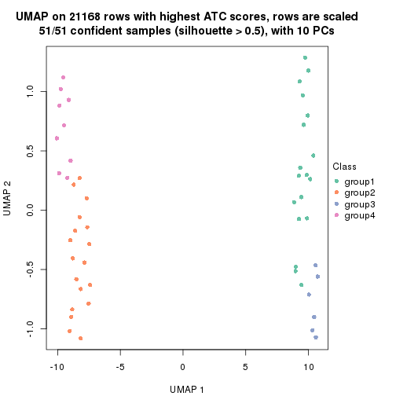
dimension_reduction(res, k = 5, method = "UMAP")
dimension_reduction(res, k = 6, method = "UMAP")
Following heatmap shows how subgroups are split when increasing k:
collect_classes(res)
Test correlation between subgroups and known annotations. If the known annotation is numeric, one-way ANOVA test is applied, and if the known annotation is discrete, chi-squared contingency table test is applied.
test_to_known_factors(res)
#> n cell.line(p) agent(p) time(p) k
#> ATC:skmeans 51 6.87e-12 5.28e-01 4.06e-02 2
#> ATC:skmeans 51 8.42e-12 2.00e-01 1.18e-01 3
#> ATC:skmeans 51 4.89e-11 6.30e-03 2.03e-02 4
#> ATC:skmeans 48 9.44e-10 1.45e-05 4.70e-07 5
#> ATC:skmeans 42 1.67e-08 6.94e-08 1.23e-10 6
If matrix rows can be associated to genes, consider to use GO_Enrichment(res,
...) to perform function enrichment for the signature genes.
The object with results only for a single top-value method and a single partition method can be extracted as:
res = res_list["ATC", "pam"]
# you can also extract it by
# res = res_list["ATC:pam"]
A summary of res and all the functions that can be applied to it:
res
#> A 'ConsensusPartition' object with k = 2, 3, 4, 5, 6.
#> On a matrix with 21168 rows and 51 columns.
#> Top rows (1000, 2000, 3000, 4000, 5000) are extracted by 'ATC' method.
#> Subgroups are detected by 'pam' method.
#> Performed in total 1250 partitions by row resampling.
#> Best k for subgroups seems to be 6.
#>
#> Following methods can be applied to this 'ConsensusPartition' object:
#> [1] "cola_report" "collect_classes" "collect_plots"
#> [4] "collect_stats" "colnames" "compare_signatures"
#> [7] "consensus_heatmap" "dimension_reduction" "functional_enrichment"
#> [10] "get_anno_col" "get_anno" "get_classes"
#> [13] "get_consensus" "get_matrix" "get_membership"
#> [16] "get_param" "get_signatures" "get_stats"
#> [19] "is_best_k" "is_stable_k" "membership_heatmap"
#> [22] "ncol" "nrow" "plot_ecdf"
#> [25] "rownames" "select_partition_number" "show"
#> [28] "suggest_best_k" "test_to_known_factors"
collect_plots() function collects all the plots made from res for all k (number of partitions)
into one single page to provide an easy and fast comparison between different k.
collect_plots(res)
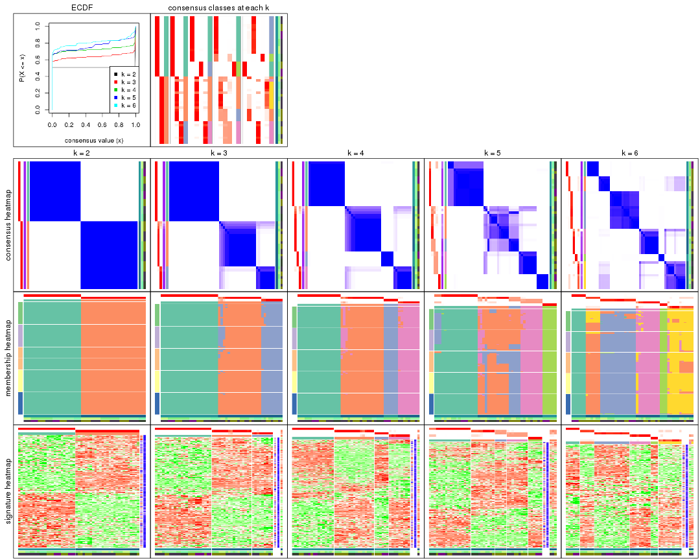
The plots are:
k and the heatmap of
predicted classes for each k.k.k.k.All the plots in panels can be made by individual functions and they are plotted later in this section.
select_partition_number() produces several plots showing different
statistics for choosing “optimized” k. There are following statistics:
k;k, the area increased is defined as \(A_k - A_{k-1}\).The detailed explanations of these statistics can be found in the cola vignette.
Generally speaking, lower PAC score, higher mean silhouette score or higher
concordance corresponds to better partition. Rand index and Jaccard index
measure how similar the current partition is compared to partition with k-1.
If they are too similar, we won't accept k is better than k-1.
select_partition_number(res)
The numeric values for all these statistics can be obtained by get_stats().
get_stats(res)
#> k 1-PAC mean_silhouette concordance area_increased Rand Jaccard
#> 2 2 1.000 1.000 1.000 0.5087 0.492 0.492
#> 3 3 0.980 0.953 0.979 0.2569 0.873 0.742
#> 4 4 0.980 0.950 0.978 0.1326 0.915 0.768
#> 5 5 0.880 0.812 0.887 0.0638 0.949 0.818
#> 6 6 0.918 0.892 0.927 0.0503 0.936 0.732
suggest_best_k() suggests the best \(k\) based on these statistics. The rules are as follows:
NA.suggest_best_k(res)
#> [1] 6
#> attr(,"optional")
#> [1] 2 3 4
There is also optional best \(k\) = 2 3 4 that is worth to check.
Following shows the table of the partitions (You need to click the show/hide
code output link to see it). The membership matrix (columns with name p*)
is inferred by
clue::cl_consensus()
function with the SE method. Basically the value in the membership matrix
represents the probability to belong to a certain group. The finall class
label for an item is determined with the group with highest probability it
belongs to.
In get_classes() function, the entropy is calculated from the membership
matrix and the silhouette score is calculated from the consensus matrix.
cbind(get_classes(res, k = 2), get_membership(res, k = 2))
#> class entropy silhouette p1 p2
#> GSM312684 1 0 1 1 0
#> GSM312685 1 0 1 1 0
#> GSM312686 1 0 1 1 0
#> GSM312693 1 0 1 1 0
#> GSM312694 1 0 1 1 0
#> GSM312695 1 0 1 1 0
#> GSM312699 1 0 1 1 0
#> GSM312700 1 0 1 1 0
#> GSM312701 1 0 1 1 0
#> GSM312705 1 0 1 1 0
#> GSM312706 1 0 1 1 0
#> GSM312707 1 0 1 1 0
#> GSM312687 1 0 1 1 0
#> GSM312688 1 0 1 1 0
#> GSM312689 1 0 1 1 0
#> GSM312696 1 0 1 1 0
#> GSM312697 1 0 1 1 0
#> GSM312698 1 0 1 1 0
#> GSM312702 1 0 1 1 0
#> GSM312703 1 0 1 1 0
#> GSM312704 1 0 1 1 0
#> GSM312690 1 0 1 1 0
#> GSM312691 1 0 1 1 0
#> GSM312692 1 0 1 1 0
#> GSM312708 2 0 1 0 1
#> GSM312709 2 0 1 0 1
#> GSM312710 2 0 1 0 1
#> GSM312719 2 0 1 0 1
#> GSM312720 2 0 1 0 1
#> GSM312721 2 0 1 0 1
#> GSM312722 2 0 1 0 1
#> GSM312731 2 0 1 0 1
#> GSM312732 2 0 1 0 1
#> GSM312733 2 0 1 0 1
#> GSM312734 2 0 1 0 1
#> GSM312711 2 0 1 0 1
#> GSM312712 2 0 1 0 1
#> GSM312713 2 0 1 0 1
#> GSM312714 2 0 1 0 1
#> GSM312723 2 0 1 0 1
#> GSM312724 2 0 1 0 1
#> GSM312725 2 0 1 0 1
#> GSM312726 2 0 1 0 1
#> GSM312715 2 0 1 0 1
#> GSM312716 2 0 1 0 1
#> GSM312717 2 0 1 0 1
#> GSM312718 2 0 1 0 1
#> GSM312727 2 0 1 0 1
#> GSM312728 2 0 1 0 1
#> GSM312729 2 0 1 0 1
#> GSM312730 2 0 1 0 1
cbind(get_classes(res, k = 3), get_membership(res, k = 3))
#> class entropy silhouette p1 p2 p3
#> GSM312684 1 0.000 1.000 1 0.000 0.000
#> GSM312685 1 0.000 1.000 1 0.000 0.000
#> GSM312686 1 0.000 1.000 1 0.000 0.000
#> GSM312693 1 0.000 1.000 1 0.000 0.000
#> GSM312694 1 0.000 1.000 1 0.000 0.000
#> GSM312695 1 0.000 1.000 1 0.000 0.000
#> GSM312699 1 0.000 1.000 1 0.000 0.000
#> GSM312700 1 0.000 1.000 1 0.000 0.000
#> GSM312701 1 0.000 1.000 1 0.000 0.000
#> GSM312705 1 0.000 1.000 1 0.000 0.000
#> GSM312706 1 0.000 1.000 1 0.000 0.000
#> GSM312707 1 0.000 1.000 1 0.000 0.000
#> GSM312687 1 0.000 1.000 1 0.000 0.000
#> GSM312688 1 0.000 1.000 1 0.000 0.000
#> GSM312689 1 0.000 1.000 1 0.000 0.000
#> GSM312696 1 0.000 1.000 1 0.000 0.000
#> GSM312697 1 0.000 1.000 1 0.000 0.000
#> GSM312698 1 0.000 1.000 1 0.000 0.000
#> GSM312702 1 0.000 1.000 1 0.000 0.000
#> GSM312703 1 0.000 1.000 1 0.000 0.000
#> GSM312704 1 0.000 1.000 1 0.000 0.000
#> GSM312690 1 0.000 1.000 1 0.000 0.000
#> GSM312691 1 0.000 1.000 1 0.000 0.000
#> GSM312692 1 0.000 1.000 1 0.000 0.000
#> GSM312708 2 0.000 0.945 0 1.000 0.000
#> GSM312709 2 0.000 0.945 0 1.000 0.000
#> GSM312710 2 0.000 0.945 0 1.000 0.000
#> GSM312719 3 0.000 0.977 0 0.000 1.000
#> GSM312720 2 0.000 0.945 0 1.000 0.000
#> GSM312721 3 0.304 0.885 0 0.104 0.896
#> GSM312722 2 0.543 0.626 0 0.716 0.284
#> GSM312731 3 0.000 0.977 0 0.000 1.000
#> GSM312732 3 0.000 0.977 0 0.000 1.000
#> GSM312733 3 0.000 0.977 0 0.000 1.000
#> GSM312734 2 0.000 0.945 0 1.000 0.000
#> GSM312711 3 0.000 0.977 0 0.000 1.000
#> GSM312712 3 0.226 0.925 0 0.068 0.932
#> GSM312713 2 0.000 0.945 0 1.000 0.000
#> GSM312714 2 0.000 0.945 0 1.000 0.000
#> GSM312723 3 0.000 0.977 0 0.000 1.000
#> GSM312724 2 0.116 0.928 0 0.972 0.028
#> GSM312725 2 0.000 0.945 0 1.000 0.000
#> GSM312726 2 0.000 0.945 0 1.000 0.000
#> GSM312715 2 0.103 0.930 0 0.976 0.024
#> GSM312716 2 0.000 0.945 0 1.000 0.000
#> GSM312717 2 0.406 0.796 0 0.836 0.164
#> GSM312718 2 0.615 0.368 0 0.592 0.408
#> GSM312727 2 0.000 0.945 0 1.000 0.000
#> GSM312728 3 0.000 0.977 0 0.000 1.000
#> GSM312729 2 0.000 0.945 0 1.000 0.000
#> GSM312730 2 0.000 0.945 0 1.000 0.000
cbind(get_classes(res, k = 4), get_membership(res, k = 4))
#> class entropy silhouette p1 p2 p3 p4
#> GSM312684 1 0.0000 0.999 1.00 0.000 0.00 0.000
#> GSM312685 1 0.0000 0.999 1.00 0.000 0.00 0.000
#> GSM312686 1 0.0000 0.999 1.00 0.000 0.00 0.000
#> GSM312693 1 0.0000 0.999 1.00 0.000 0.00 0.000
#> GSM312694 1 0.0000 0.999 1.00 0.000 0.00 0.000
#> GSM312695 1 0.0000 0.999 1.00 0.000 0.00 0.000
#> GSM312699 1 0.0000 0.999 1.00 0.000 0.00 0.000
#> GSM312700 1 0.0000 0.999 1.00 0.000 0.00 0.000
#> GSM312701 1 0.0000 0.999 1.00 0.000 0.00 0.000
#> GSM312705 1 0.0000 0.999 1.00 0.000 0.00 0.000
#> GSM312706 1 0.0000 0.999 1.00 0.000 0.00 0.000
#> GSM312707 1 0.0000 0.999 1.00 0.000 0.00 0.000
#> GSM312687 1 0.0000 0.999 1.00 0.000 0.00 0.000
#> GSM312688 1 0.0000 0.999 1.00 0.000 0.00 0.000
#> GSM312689 1 0.0000 0.999 1.00 0.000 0.00 0.000
#> GSM312696 3 0.0000 1.000 0.00 0.000 1.00 0.000
#> GSM312697 3 0.0000 1.000 0.00 0.000 1.00 0.000
#> GSM312698 3 0.0000 1.000 0.00 0.000 1.00 0.000
#> GSM312702 3 0.0000 1.000 0.00 0.000 1.00 0.000
#> GSM312703 3 0.0000 1.000 0.00 0.000 1.00 0.000
#> GSM312704 3 0.0000 1.000 0.00 0.000 1.00 0.000
#> GSM312690 1 0.0000 0.999 1.00 0.000 0.00 0.000
#> GSM312691 1 0.0707 0.980 0.98 0.000 0.02 0.000
#> GSM312692 1 0.0000 0.999 1.00 0.000 0.00 0.000
#> GSM312708 2 0.0000 0.944 0.00 1.000 0.00 0.000
#> GSM312709 2 0.0000 0.944 0.00 1.000 0.00 0.000
#> GSM312710 2 0.0000 0.944 0.00 1.000 0.00 0.000
#> GSM312719 4 0.0000 0.972 0.00 0.000 0.00 1.000
#> GSM312720 2 0.0000 0.944 0.00 1.000 0.00 0.000
#> GSM312721 4 0.2408 0.870 0.00 0.104 0.00 0.896
#> GSM312722 2 0.4304 0.626 0.00 0.716 0.00 0.284
#> GSM312731 4 0.0000 0.972 0.00 0.000 0.00 1.000
#> GSM312732 4 0.0000 0.972 0.00 0.000 0.00 1.000
#> GSM312733 4 0.0000 0.972 0.00 0.000 0.00 1.000
#> GSM312734 2 0.0000 0.944 0.00 1.000 0.00 0.000
#> GSM312711 4 0.0000 0.972 0.00 0.000 0.00 1.000
#> GSM312712 4 0.1792 0.914 0.00 0.068 0.00 0.932
#> GSM312713 2 0.0000 0.944 0.00 1.000 0.00 0.000
#> GSM312714 2 0.0000 0.944 0.00 1.000 0.00 0.000
#> GSM312723 4 0.0000 0.972 0.00 0.000 0.00 1.000
#> GSM312724 2 0.0921 0.927 0.00 0.972 0.00 0.028
#> GSM312725 2 0.0000 0.944 0.00 1.000 0.00 0.000
#> GSM312726 2 0.0000 0.944 0.00 1.000 0.00 0.000
#> GSM312715 2 0.0817 0.930 0.00 0.976 0.00 0.024
#> GSM312716 2 0.0000 0.944 0.00 1.000 0.00 0.000
#> GSM312717 2 0.3219 0.796 0.00 0.836 0.00 0.164
#> GSM312718 2 0.4877 0.368 0.00 0.592 0.00 0.408
#> GSM312727 2 0.0000 0.944 0.00 1.000 0.00 0.000
#> GSM312728 4 0.0000 0.972 0.00 0.000 0.00 1.000
#> GSM312729 2 0.0000 0.944 0.00 1.000 0.00 0.000
#> GSM312730 2 0.0000 0.944 0.00 1.000 0.00 0.000
cbind(get_classes(res, k = 5), get_membership(res, k = 5))
#> class entropy silhouette p1 p2 p3 p4 p5
#> GSM312684 1 0.3857 0.70993 0.688 0.000 0.000 0.312 0.000
#> GSM312685 1 0.3876 0.70955 0.684 0.000 0.000 0.316 0.000
#> GSM312686 1 0.3857 0.70993 0.688 0.000 0.000 0.312 0.000
#> GSM312693 1 0.0000 0.94797 1.000 0.000 0.000 0.000 0.000
#> GSM312694 1 0.0000 0.94797 1.000 0.000 0.000 0.000 0.000
#> GSM312695 1 0.0162 0.94770 0.996 0.000 0.000 0.004 0.000
#> GSM312699 1 0.0162 0.94639 0.996 0.000 0.000 0.000 0.004
#> GSM312700 1 0.0000 0.94797 1.000 0.000 0.000 0.000 0.000
#> GSM312701 1 0.0000 0.94797 1.000 0.000 0.000 0.000 0.000
#> GSM312705 1 0.0000 0.94797 1.000 0.000 0.000 0.000 0.000
#> GSM312706 1 0.0000 0.94797 1.000 0.000 0.000 0.000 0.000
#> GSM312707 1 0.0000 0.94797 1.000 0.000 0.000 0.000 0.000
#> GSM312687 1 0.0162 0.94770 0.996 0.000 0.000 0.004 0.000
#> GSM312688 1 0.0162 0.94770 0.996 0.000 0.000 0.004 0.000
#> GSM312689 1 0.0162 0.94770 0.996 0.000 0.000 0.004 0.000
#> GSM312696 5 0.0000 1.00000 0.000 0.000 0.000 0.000 1.000
#> GSM312697 5 0.0000 1.00000 0.000 0.000 0.000 0.000 1.000
#> GSM312698 5 0.0000 1.00000 0.000 0.000 0.000 0.000 1.000
#> GSM312702 5 0.0000 1.00000 0.000 0.000 0.000 0.000 1.000
#> GSM312703 5 0.0000 1.00000 0.000 0.000 0.000 0.000 1.000
#> GSM312704 5 0.0000 1.00000 0.000 0.000 0.000 0.000 1.000
#> GSM312690 1 0.0162 0.94770 0.996 0.000 0.000 0.004 0.000
#> GSM312691 1 0.0771 0.93534 0.976 0.000 0.000 0.004 0.020
#> GSM312692 1 0.0162 0.94770 0.996 0.000 0.000 0.004 0.000
#> GSM312708 2 0.2929 0.62334 0.000 0.820 0.000 0.180 0.000
#> GSM312709 2 0.2929 0.62334 0.000 0.820 0.000 0.180 0.000
#> GSM312710 2 0.2929 0.62334 0.000 0.820 0.000 0.180 0.000
#> GSM312719 4 0.4307 0.97772 0.000 0.000 0.496 0.504 0.000
#> GSM312720 2 0.2329 0.63325 0.000 0.876 0.000 0.124 0.000
#> GSM312721 4 0.5718 0.89086 0.000 0.084 0.420 0.496 0.000
#> GSM312722 2 0.5274 0.35130 0.000 0.600 0.336 0.064 0.000
#> GSM312731 4 0.4307 0.97772 0.000 0.000 0.496 0.504 0.000
#> GSM312732 4 0.4307 0.97772 0.000 0.000 0.496 0.504 0.000
#> GSM312733 4 0.4307 0.97772 0.000 0.000 0.496 0.504 0.000
#> GSM312734 2 0.0162 0.62104 0.000 0.996 0.000 0.004 0.000
#> GSM312711 4 0.4307 0.97772 0.000 0.000 0.496 0.504 0.000
#> GSM312712 4 0.5393 0.92599 0.000 0.056 0.440 0.504 0.000
#> GSM312713 2 0.0000 0.61915 0.000 1.000 0.000 0.000 0.000
#> GSM312714 2 0.0000 0.61915 0.000 1.000 0.000 0.000 0.000
#> GSM312723 4 0.4307 0.97772 0.000 0.000 0.496 0.504 0.000
#> GSM312724 3 0.4300 0.95264 0.000 0.476 0.524 0.000 0.000
#> GSM312725 3 0.4307 0.98628 0.000 0.496 0.504 0.000 0.000
#> GSM312726 3 0.4307 0.98628 0.000 0.496 0.504 0.000 0.000
#> GSM312715 2 0.0693 0.61646 0.000 0.980 0.012 0.008 0.000
#> GSM312716 2 0.0000 0.61915 0.000 1.000 0.000 0.000 0.000
#> GSM312717 2 0.3176 0.52840 0.000 0.856 0.080 0.064 0.000
#> GSM312718 2 0.5504 0.00411 0.000 0.488 0.448 0.064 0.000
#> GSM312727 3 0.4307 0.98131 0.000 0.500 0.500 0.000 0.000
#> GSM312728 4 0.4307 0.97772 0.000 0.000 0.496 0.504 0.000
#> GSM312729 3 0.4307 0.98628 0.000 0.496 0.504 0.000 0.000
#> GSM312730 2 0.4305 -0.96432 0.000 0.512 0.488 0.000 0.000
cbind(get_classes(res, k = 6), get_membership(res, k = 6))
#> class entropy silhouette p1 p2 p3 p4 p5 p6
#> GSM312684 5 0.0146 1.0000 0.000 0.000 0.004 0.000 0.996 0.000
#> GSM312685 5 0.0146 1.0000 0.000 0.000 0.004 0.000 0.996 0.000
#> GSM312686 5 0.0146 1.0000 0.000 0.000 0.004 0.000 0.996 0.000
#> GSM312693 3 0.0146 0.9612 0.000 0.000 0.996 0.000 0.004 0.000
#> GSM312694 3 0.0146 0.9612 0.000 0.000 0.996 0.000 0.004 0.000
#> GSM312695 3 0.0291 0.9612 0.000 0.004 0.992 0.000 0.004 0.000
#> GSM312699 3 0.1605 0.9463 0.016 0.044 0.936 0.000 0.004 0.000
#> GSM312700 3 0.1285 0.9507 0.000 0.052 0.944 0.000 0.004 0.000
#> GSM312701 3 0.0692 0.9588 0.000 0.020 0.976 0.000 0.004 0.000
#> GSM312705 3 0.1349 0.9491 0.000 0.056 0.940 0.000 0.004 0.000
#> GSM312706 3 0.1349 0.9491 0.000 0.056 0.940 0.000 0.004 0.000
#> GSM312707 3 0.1349 0.9491 0.000 0.056 0.940 0.000 0.004 0.000
#> GSM312687 3 0.1082 0.9555 0.000 0.040 0.956 0.000 0.004 0.000
#> GSM312688 3 0.1082 0.9555 0.000 0.040 0.956 0.000 0.004 0.000
#> GSM312689 3 0.1082 0.9555 0.000 0.040 0.956 0.000 0.004 0.000
#> GSM312696 1 0.0000 1.0000 1.000 0.000 0.000 0.000 0.000 0.000
#> GSM312697 1 0.0000 1.0000 1.000 0.000 0.000 0.000 0.000 0.000
#> GSM312698 1 0.0000 1.0000 1.000 0.000 0.000 0.000 0.000 0.000
#> GSM312702 1 0.0000 1.0000 1.000 0.000 0.000 0.000 0.000 0.000
#> GSM312703 1 0.0000 1.0000 1.000 0.000 0.000 0.000 0.000 0.000
#> GSM312704 1 0.0000 1.0000 1.000 0.000 0.000 0.000 0.000 0.000
#> GSM312690 3 0.1082 0.9555 0.000 0.040 0.956 0.000 0.004 0.000
#> GSM312691 3 0.1442 0.9492 0.012 0.040 0.944 0.000 0.004 0.000
#> GSM312692 3 0.0937 0.9564 0.000 0.040 0.960 0.000 0.000 0.000
#> GSM312708 6 0.0000 0.7908 0.000 0.000 0.000 0.000 0.000 1.000
#> GSM312709 6 0.0000 0.7908 0.000 0.000 0.000 0.000 0.000 1.000
#> GSM312710 6 0.0000 0.7908 0.000 0.000 0.000 0.000 0.000 1.000
#> GSM312719 4 0.0000 0.9117 0.000 0.000 0.000 1.000 0.000 0.000
#> GSM312720 6 0.1204 0.8076 0.000 0.056 0.000 0.000 0.000 0.944
#> GSM312721 4 0.1610 0.8439 0.000 0.000 0.000 0.916 0.000 0.084
#> GSM312722 6 0.3782 0.2862 0.000 0.000 0.000 0.412 0.000 0.588
#> GSM312731 4 0.0000 0.9117 0.000 0.000 0.000 1.000 0.000 0.000
#> GSM312732 4 0.0000 0.9117 0.000 0.000 0.000 1.000 0.000 0.000
#> GSM312733 4 0.0000 0.9117 0.000 0.000 0.000 1.000 0.000 0.000
#> GSM312734 6 0.2697 0.8169 0.000 0.188 0.000 0.000 0.000 0.812
#> GSM312711 4 0.0000 0.9117 0.000 0.000 0.000 1.000 0.000 0.000
#> GSM312712 4 0.1204 0.8730 0.000 0.000 0.000 0.944 0.000 0.056
#> GSM312713 6 0.2730 0.8159 0.000 0.192 0.000 0.000 0.000 0.808
#> GSM312714 6 0.2730 0.8159 0.000 0.192 0.000 0.000 0.000 0.808
#> GSM312723 4 0.0000 0.9117 0.000 0.000 0.000 1.000 0.000 0.000
#> GSM312724 2 0.1858 0.9864 0.000 0.904 0.000 0.004 0.000 0.092
#> GSM312725 2 0.1765 0.9906 0.000 0.904 0.000 0.000 0.000 0.096
#> GSM312726 2 0.1765 0.9906 0.000 0.904 0.000 0.000 0.000 0.096
#> GSM312715 6 0.3168 0.8100 0.000 0.192 0.000 0.016 0.000 0.792
#> GSM312716 6 0.2730 0.8159 0.000 0.192 0.000 0.000 0.000 0.808
#> GSM312717 6 0.4863 0.6959 0.000 0.200 0.000 0.140 0.000 0.660
#> GSM312718 4 0.4091 -0.0685 0.000 0.008 0.000 0.520 0.000 0.472
#> GSM312727 2 0.1814 0.9885 0.000 0.900 0.000 0.000 0.000 0.100
#> GSM312728 4 0.0000 0.9117 0.000 0.000 0.000 1.000 0.000 0.000
#> GSM312729 2 0.1765 0.9906 0.000 0.904 0.000 0.000 0.000 0.096
#> GSM312730 2 0.2048 0.9653 0.000 0.880 0.000 0.000 0.000 0.120
Heatmaps for the consensus matrix. It visualizes the probability of two samples to be in a same group.
consensus_heatmap(res, k = 2)

consensus_heatmap(res, k = 3)
consensus_heatmap(res, k = 4)
consensus_heatmap(res, k = 5)
consensus_heatmap(res, k = 6)
Heatmaps for the membership of samples in all partitions to see how consistent they are:
membership_heatmap(res, k = 2)

membership_heatmap(res, k = 3)
membership_heatmap(res, k = 4)
membership_heatmap(res, k = 5)
membership_heatmap(res, k = 6)
As soon as we have had the classes for columns, we can look for signatures which are significantly different between classes which can be candidate marks for certain classes. Following are the heatmaps for signatures.
Signature heatmaps where rows are scaled:
get_signatures(res, k = 2)

get_signatures(res, k = 3)
get_signatures(res, k = 4)
get_signatures(res, k = 5)
get_signatures(res, k = 6)
Signature heatmaps where rows are not scaled:
get_signatures(res, k = 2, scale_rows = FALSE)

get_signatures(res, k = 3, scale_rows = FALSE)

get_signatures(res, k = 4, scale_rows = FALSE)
get_signatures(res, k = 5, scale_rows = FALSE)

get_signatures(res, k = 6, scale_rows = FALSE)
Compare the overlap of signatures from different k:
compare_signatures(res)
get_signature() returns a data frame invisibly. TO get the list of signatures, the function
call should be assigned to a variable explicitly. In following code, if plot argument is set
to FALSE, no heatmap is plotted while only the differential analysis is performed.
# code only for demonstration
tb = get_signature(res, k = ..., plot = FALSE)
An example of the output of tb is:
#> which_row fdr mean_1 mean_2 scaled_mean_1 scaled_mean_2 km
#> 1 38 0.042760348 8.373488 9.131774 -0.5533452 0.5164555 1
#> 2 40 0.018707592 7.106213 8.469186 -0.6173731 0.5762149 1
#> 3 55 0.019134737 10.221463 11.207825 -0.6159697 0.5749050 1
#> 4 59 0.006059896 5.921854 7.869574 -0.6899429 0.6439467 1
#> 5 60 0.018055526 8.928898 10.211722 -0.6204761 0.5791110 1
#> 6 98 0.009384629 15.714769 14.887706 0.6635654 -0.6193277 2
...
The columns in tb are:
which_row: row indices corresponding to the input matrix.fdr: FDR for the differential test. mean_x: The mean value in group x.scaled_mean_x: The mean value in group x after rows are scaled.km: Row groups if k-means clustering is applied to rows.UMAP plot which shows how samples are separated.
dimension_reduction(res, k = 2, method = "UMAP")

dimension_reduction(res, k = 3, method = "UMAP")
dimension_reduction(res, k = 4, method = "UMAP")
dimension_reduction(res, k = 5, method = "UMAP")
dimension_reduction(res, k = 6, method = "UMAP")
Following heatmap shows how subgroups are split when increasing k:
collect_classes(res)
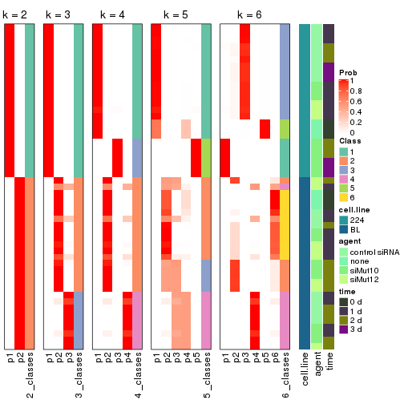
Test correlation between subgroups and known annotations. If the known annotation is numeric, one-way ANOVA test is applied, and if the known annotation is discrete, chi-squared contingency table test is applied.
test_to_known_factors(res)
#> n cell.line(p) agent(p) time(p) k
#> ATC:pam 51 6.87e-12 5.28e-01 4.06e-02 2
#> ATC:pam 50 1.39e-11 2.85e-01 1.24e-01 3
#> ATC:pam 50 7.99e-11 1.04e-02 2.18e-02 4
#> ATC:pam 48 9.44e-10 1.09e-02 1.36e-03 5
#> ATC:pam 49 2.22e-09 6.22e-06 6.29e-07 6
If matrix rows can be associated to genes, consider to use GO_Enrichment(res,
...) to perform function enrichment for the signature genes.
The object with results only for a single top-value method and a single partition method can be extracted as:
res = res_list["ATC", "mclust"]
# you can also extract it by
# res = res_list["ATC:mclust"]
A summary of res and all the functions that can be applied to it:
res
#> A 'ConsensusPartition' object with k = 2, 3, 4, 5, 6.
#> On a matrix with 21168 rows and 51 columns.
#> Top rows (1000, 2000, 3000, 4000, 5000) are extracted by 'ATC' method.
#> Subgroups are detected by 'mclust' method.
#> Performed in total 1250 partitions by row resampling.
#> Best k for subgroups seems to be 2.
#>
#> Following methods can be applied to this 'ConsensusPartition' object:
#> [1] "cola_report" "collect_classes" "collect_plots"
#> [4] "collect_stats" "colnames" "compare_signatures"
#> [7] "consensus_heatmap" "dimension_reduction" "functional_enrichment"
#> [10] "get_anno_col" "get_anno" "get_classes"
#> [13] "get_consensus" "get_matrix" "get_membership"
#> [16] "get_param" "get_signatures" "get_stats"
#> [19] "is_best_k" "is_stable_k" "membership_heatmap"
#> [22] "ncol" "nrow" "plot_ecdf"
#> [25] "rownames" "select_partition_number" "show"
#> [28] "suggest_best_k" "test_to_known_factors"
collect_plots() function collects all the plots made from res for all k (number of partitions)
into one single page to provide an easy and fast comparison between different k.
collect_plots(res)
The plots are:
k and the heatmap of
predicted classes for each k.k.k.k.All the plots in panels can be made by individual functions and they are plotted later in this section.
select_partition_number() produces several plots showing different
statistics for choosing “optimized” k. There are following statistics:
k;k, the area increased is defined as \(A_k - A_{k-1}\).The detailed explanations of these statistics can be found in the cola vignette.
Generally speaking, lower PAC score, higher mean silhouette score or higher
concordance corresponds to better partition. Rand index and Jaccard index
measure how similar the current partition is compared to partition with k-1.
If they are too similar, we won't accept k is better than k-1.
select_partition_number(res)
The numeric values for all these statistics can be obtained by get_stats().
get_stats(res)
#> k 1-PAC mean_silhouette concordance area_increased Rand Jaccard
#> 2 2 1.000 1.000 1.000 0.5087 0.492 0.492
#> 3 3 0.873 0.902 0.929 0.1911 0.915 0.828
#> 4 4 0.718 0.794 0.823 0.1771 0.795 0.517
#> 5 5 0.845 0.889 0.907 0.0418 0.811 0.461
#> 6 6 0.884 0.925 0.917 0.0508 0.958 0.845
suggest_best_k() suggests the best \(k\) based on these statistics. The rules are as follows:
NA.suggest_best_k(res)
#> [1] 2
Following shows the table of the partitions (You need to click the show/hide
code output link to see it). The membership matrix (columns with name p*)
is inferred by
clue::cl_consensus()
function with the SE method. Basically the value in the membership matrix
represents the probability to belong to a certain group. The finall class
label for an item is determined with the group with highest probability it
belongs to.
In get_classes() function, the entropy is calculated from the membership
matrix and the silhouette score is calculated from the consensus matrix.
cbind(get_classes(res, k = 2), get_membership(res, k = 2))
#> class entropy silhouette p1 p2
#> GSM312684 1 0 1 1 0
#> GSM312685 1 0 1 1 0
#> GSM312686 1 0 1 1 0
#> GSM312693 1 0 1 1 0
#> GSM312694 1 0 1 1 0
#> GSM312695 1 0 1 1 0
#> GSM312699 1 0 1 1 0
#> GSM312700 1 0 1 1 0
#> GSM312701 1 0 1 1 0
#> GSM312705 1 0 1 1 0
#> GSM312706 1 0 1 1 0
#> GSM312707 1 0 1 1 0
#> GSM312687 1 0 1 1 0
#> GSM312688 1 0 1 1 0
#> GSM312689 1 0 1 1 0
#> GSM312696 1 0 1 1 0
#> GSM312697 1 0 1 1 0
#> GSM312698 1 0 1 1 0
#> GSM312702 1 0 1 1 0
#> GSM312703 1 0 1 1 0
#> GSM312704 1 0 1 1 0
#> GSM312690 1 0 1 1 0
#> GSM312691 1 0 1 1 0
#> GSM312692 1 0 1 1 0
#> GSM312708 2 0 1 0 1
#> GSM312709 2 0 1 0 1
#> GSM312710 2 0 1 0 1
#> GSM312719 2 0 1 0 1
#> GSM312720 2 0 1 0 1
#> GSM312721 2 0 1 0 1
#> GSM312722 2 0 1 0 1
#> GSM312731 2 0 1 0 1
#> GSM312732 2 0 1 0 1
#> GSM312733 2 0 1 0 1
#> GSM312734 2 0 1 0 1
#> GSM312711 2 0 1 0 1
#> GSM312712 2 0 1 0 1
#> GSM312713 2 0 1 0 1
#> GSM312714 2 0 1 0 1
#> GSM312723 2 0 1 0 1
#> GSM312724 2 0 1 0 1
#> GSM312725 2 0 1 0 1
#> GSM312726 2 0 1 0 1
#> GSM312715 2 0 1 0 1
#> GSM312716 2 0 1 0 1
#> GSM312717 2 0 1 0 1
#> GSM312718 2 0 1 0 1
#> GSM312727 2 0 1 0 1
#> GSM312728 2 0 1 0 1
#> GSM312729 2 0 1 0 1
#> GSM312730 2 0 1 0 1
cbind(get_classes(res, k = 3), get_membership(res, k = 3))
#> class entropy silhouette p1 p2 p3
#> GSM312684 1 0.5363 0.639 0.724 0.000 0.276
#> GSM312685 1 0.5363 0.639 0.724 0.000 0.276
#> GSM312686 1 0.5363 0.639 0.724 0.000 0.276
#> GSM312693 1 0.0747 0.799 0.984 0.000 0.016
#> GSM312694 1 0.0592 0.797 0.988 0.000 0.012
#> GSM312695 1 0.0592 0.797 0.988 0.000 0.012
#> GSM312699 1 0.5706 0.694 0.680 0.000 0.320
#> GSM312700 1 0.4235 0.785 0.824 0.000 0.176
#> GSM312701 1 0.4235 0.785 0.824 0.000 0.176
#> GSM312705 1 0.6111 0.601 0.604 0.000 0.396
#> GSM312706 1 0.6274 0.504 0.544 0.000 0.456
#> GSM312707 1 0.5678 0.694 0.684 0.000 0.316
#> GSM312687 1 0.0424 0.797 0.992 0.000 0.008
#> GSM312688 1 0.3941 0.791 0.844 0.000 0.156
#> GSM312689 1 0.4178 0.785 0.828 0.000 0.172
#> GSM312696 3 0.1031 1.000 0.024 0.000 0.976
#> GSM312697 3 0.1031 1.000 0.024 0.000 0.976
#> GSM312698 3 0.1031 1.000 0.024 0.000 0.976
#> GSM312702 3 0.1031 1.000 0.024 0.000 0.976
#> GSM312703 3 0.1031 1.000 0.024 0.000 0.976
#> GSM312704 3 0.1031 1.000 0.024 0.000 0.976
#> GSM312690 1 0.3038 0.802 0.896 0.000 0.104
#> GSM312691 1 0.0892 0.800 0.980 0.000 0.020
#> GSM312692 1 0.0592 0.799 0.988 0.000 0.012
#> GSM312708 2 0.0000 0.995 0.000 1.000 0.000
#> GSM312709 2 0.0000 0.995 0.000 1.000 0.000
#> GSM312710 2 0.0000 0.995 0.000 1.000 0.000
#> GSM312719 2 0.0592 0.994 0.000 0.988 0.012
#> GSM312720 2 0.0000 0.995 0.000 1.000 0.000
#> GSM312721 2 0.0592 0.994 0.000 0.988 0.012
#> GSM312722 2 0.0592 0.994 0.000 0.988 0.012
#> GSM312731 2 0.0592 0.994 0.000 0.988 0.012
#> GSM312732 2 0.0592 0.994 0.000 0.988 0.012
#> GSM312733 2 0.0592 0.994 0.000 0.988 0.012
#> GSM312734 2 0.0000 0.995 0.000 1.000 0.000
#> GSM312711 2 0.0592 0.994 0.000 0.988 0.012
#> GSM312712 2 0.0592 0.994 0.000 0.988 0.012
#> GSM312713 2 0.0000 0.995 0.000 1.000 0.000
#> GSM312714 2 0.0000 0.995 0.000 1.000 0.000
#> GSM312723 2 0.0592 0.994 0.000 0.988 0.012
#> GSM312724 2 0.0000 0.995 0.000 1.000 0.000
#> GSM312725 2 0.0000 0.995 0.000 1.000 0.000
#> GSM312726 2 0.0000 0.995 0.000 1.000 0.000
#> GSM312715 2 0.0592 0.994 0.000 0.988 0.012
#> GSM312716 2 0.0000 0.995 0.000 1.000 0.000
#> GSM312717 2 0.0592 0.994 0.000 0.988 0.012
#> GSM312718 2 0.0592 0.994 0.000 0.988 0.012
#> GSM312727 2 0.0000 0.995 0.000 1.000 0.000
#> GSM312728 2 0.0592 0.994 0.000 0.988 0.012
#> GSM312729 2 0.0000 0.995 0.000 1.000 0.000
#> GSM312730 2 0.0000 0.995 0.000 1.000 0.000
cbind(get_classes(res, k = 4), get_membership(res, k = 4))
#> class entropy silhouette p1 p2 p3 p4
#> GSM312684 1 0.6764 0.451 0.556 0.332 0.112 0.000
#> GSM312685 1 0.6764 0.451 0.556 0.332 0.112 0.000
#> GSM312686 1 0.6764 0.451 0.556 0.332 0.112 0.000
#> GSM312693 1 0.0188 0.751 0.996 0.004 0.000 0.000
#> GSM312694 1 0.0000 0.751 1.000 0.000 0.000 0.000
#> GSM312695 1 0.0000 0.751 1.000 0.000 0.000 0.000
#> GSM312699 3 0.4981 0.305 0.464 0.000 0.536 0.000
#> GSM312700 1 0.4585 0.304 0.668 0.000 0.332 0.000
#> GSM312701 1 0.3726 0.577 0.788 0.000 0.212 0.000
#> GSM312705 3 0.4933 0.362 0.432 0.000 0.568 0.000
#> GSM312706 3 0.4898 0.382 0.416 0.000 0.584 0.000
#> GSM312707 3 0.4981 0.305 0.464 0.000 0.536 0.000
#> GSM312687 1 0.0000 0.751 1.000 0.000 0.000 0.000
#> GSM312688 1 0.3400 0.622 0.820 0.000 0.180 0.000
#> GSM312689 1 0.4072 0.507 0.748 0.000 0.252 0.000
#> GSM312696 3 0.0000 0.738 0.000 0.000 1.000 0.000
#> GSM312697 3 0.0000 0.738 0.000 0.000 1.000 0.000
#> GSM312698 3 0.0000 0.738 0.000 0.000 1.000 0.000
#> GSM312702 3 0.0000 0.738 0.000 0.000 1.000 0.000
#> GSM312703 3 0.0000 0.738 0.000 0.000 1.000 0.000
#> GSM312704 3 0.0000 0.738 0.000 0.000 1.000 0.000
#> GSM312690 1 0.2675 0.707 0.892 0.008 0.100 0.000
#> GSM312691 1 0.1059 0.744 0.972 0.012 0.016 0.000
#> GSM312692 1 0.0000 0.751 1.000 0.000 0.000 0.000
#> GSM312708 2 0.4585 1.000 0.000 0.668 0.000 0.332
#> GSM312709 2 0.4585 1.000 0.000 0.668 0.000 0.332
#> GSM312710 2 0.4585 1.000 0.000 0.668 0.000 0.332
#> GSM312719 4 0.0000 0.944 0.000 0.000 0.000 1.000
#> GSM312720 2 0.4585 1.000 0.000 0.668 0.000 0.332
#> GSM312721 4 0.2011 0.918 0.000 0.080 0.000 0.920
#> GSM312722 4 0.2011 0.918 0.000 0.080 0.000 0.920
#> GSM312731 4 0.0707 0.944 0.000 0.020 0.000 0.980
#> GSM312732 4 0.0000 0.944 0.000 0.000 0.000 1.000
#> GSM312733 4 0.0000 0.944 0.000 0.000 0.000 1.000
#> GSM312734 2 0.4585 1.000 0.000 0.668 0.000 0.332
#> GSM312711 4 0.0000 0.944 0.000 0.000 0.000 1.000
#> GSM312712 4 0.0817 0.943 0.000 0.024 0.000 0.976
#> GSM312713 2 0.4585 1.000 0.000 0.668 0.000 0.332
#> GSM312714 2 0.4585 1.000 0.000 0.668 0.000 0.332
#> GSM312723 4 0.0000 0.944 0.000 0.000 0.000 1.000
#> GSM312724 2 0.4585 1.000 0.000 0.668 0.000 0.332
#> GSM312725 2 0.4585 1.000 0.000 0.668 0.000 0.332
#> GSM312726 2 0.4585 1.000 0.000 0.668 0.000 0.332
#> GSM312715 4 0.2011 0.918 0.000 0.080 0.000 0.920
#> GSM312716 2 0.4585 1.000 0.000 0.668 0.000 0.332
#> GSM312717 4 0.2011 0.918 0.000 0.080 0.000 0.920
#> GSM312718 4 0.2011 0.918 0.000 0.080 0.000 0.920
#> GSM312727 2 0.4585 1.000 0.000 0.668 0.000 0.332
#> GSM312728 4 0.0000 0.944 0.000 0.000 0.000 1.000
#> GSM312729 2 0.4585 1.000 0.000 0.668 0.000 0.332
#> GSM312730 2 0.4585 1.000 0.000 0.668 0.000 0.332
cbind(get_classes(res, k = 5), get_membership(res, k = 5))
#> class entropy silhouette p1 p2 p3 p4 p5
#> GSM312684 3 0.4437 1.000 0.464 0.000 0.532 0.000 0.004
#> GSM312685 3 0.4437 1.000 0.464 0.000 0.532 0.000 0.004
#> GSM312686 3 0.4437 1.000 0.464 0.000 0.532 0.000 0.004
#> GSM312693 1 0.0404 0.936 0.988 0.000 0.012 0.000 0.000
#> GSM312694 1 0.0404 0.936 0.988 0.000 0.012 0.000 0.000
#> GSM312695 1 0.0290 0.940 0.992 0.000 0.008 0.000 0.000
#> GSM312699 1 0.1671 0.877 0.924 0.000 0.000 0.000 0.076
#> GSM312700 1 0.0290 0.947 0.992 0.000 0.000 0.000 0.008
#> GSM312701 1 0.0290 0.947 0.992 0.000 0.000 0.000 0.008
#> GSM312705 1 0.1671 0.877 0.924 0.000 0.000 0.000 0.076
#> GSM312706 1 0.1671 0.877 0.924 0.000 0.000 0.000 0.076
#> GSM312707 1 0.1671 0.877 0.924 0.000 0.000 0.000 0.076
#> GSM312687 1 0.0000 0.946 1.000 0.000 0.000 0.000 0.000
#> GSM312688 1 0.0290 0.947 0.992 0.000 0.000 0.000 0.008
#> GSM312689 1 0.0290 0.947 0.992 0.000 0.000 0.000 0.008
#> GSM312696 5 0.0000 1.000 0.000 0.000 0.000 0.000 1.000
#> GSM312697 5 0.0000 1.000 0.000 0.000 0.000 0.000 1.000
#> GSM312698 5 0.0000 1.000 0.000 0.000 0.000 0.000 1.000
#> GSM312702 5 0.0000 1.000 0.000 0.000 0.000 0.000 1.000
#> GSM312703 5 0.0000 1.000 0.000 0.000 0.000 0.000 1.000
#> GSM312704 5 0.0000 1.000 0.000 0.000 0.000 0.000 1.000
#> GSM312690 1 0.0000 0.946 1.000 0.000 0.000 0.000 0.000
#> GSM312691 1 0.0000 0.946 1.000 0.000 0.000 0.000 0.000
#> GSM312692 1 0.0000 0.946 1.000 0.000 0.000 0.000 0.000
#> GSM312708 2 0.4287 0.538 0.000 0.540 0.460 0.000 0.000
#> GSM312709 2 0.4287 0.538 0.000 0.540 0.460 0.000 0.000
#> GSM312710 2 0.4287 0.538 0.000 0.540 0.460 0.000 0.000
#> GSM312719 4 0.0000 0.986 0.000 0.000 0.000 1.000 0.000
#> GSM312720 2 0.1732 0.847 0.000 0.920 0.080 0.000 0.000
#> GSM312721 2 0.2411 0.822 0.000 0.884 0.008 0.108 0.000
#> GSM312722 2 0.2411 0.822 0.000 0.884 0.008 0.108 0.000
#> GSM312731 2 0.3642 0.717 0.000 0.760 0.008 0.232 0.000
#> GSM312732 4 0.0162 0.985 0.000 0.000 0.004 0.996 0.000
#> GSM312733 4 0.1357 0.940 0.000 0.048 0.004 0.948 0.000
#> GSM312734 2 0.2280 0.831 0.000 0.880 0.120 0.000 0.000
#> GSM312711 4 0.0162 0.985 0.000 0.004 0.000 0.996 0.000
#> GSM312712 2 0.3246 0.760 0.000 0.808 0.008 0.184 0.000
#> GSM312713 2 0.1908 0.843 0.000 0.908 0.092 0.000 0.000
#> GSM312714 2 0.1671 0.848 0.000 0.924 0.076 0.000 0.000
#> GSM312723 4 0.0000 0.986 0.000 0.000 0.000 1.000 0.000
#> GSM312724 2 0.1121 0.855 0.000 0.956 0.044 0.000 0.000
#> GSM312725 2 0.0290 0.858 0.000 0.992 0.008 0.000 0.000
#> GSM312726 2 0.0000 0.858 0.000 1.000 0.000 0.000 0.000
#> GSM312715 2 0.2411 0.822 0.000 0.884 0.008 0.108 0.000
#> GSM312716 2 0.1671 0.848 0.000 0.924 0.076 0.000 0.000
#> GSM312717 2 0.2411 0.822 0.000 0.884 0.008 0.108 0.000
#> GSM312718 2 0.2411 0.822 0.000 0.884 0.008 0.108 0.000
#> GSM312727 2 0.0162 0.858 0.000 0.996 0.004 0.000 0.000
#> GSM312728 4 0.0000 0.986 0.000 0.000 0.000 1.000 0.000
#> GSM312729 2 0.0000 0.858 0.000 1.000 0.000 0.000 0.000
#> GSM312730 2 0.0162 0.858 0.000 0.996 0.004 0.000 0.000
cbind(get_classes(res, k = 6), get_membership(res, k = 6))
#> class entropy silhouette p1 p2 p3 p4 p5 p6
#> GSM312684 5 0.3615 1.000 0.008 0.000 0.292 0.000 0.700 0.000
#> GSM312685 5 0.3615 1.000 0.008 0.000 0.292 0.000 0.700 0.000
#> GSM312686 5 0.3615 1.000 0.008 0.000 0.292 0.000 0.700 0.000
#> GSM312693 3 0.0260 0.992 0.000 0.000 0.992 0.000 0.008 0.000
#> GSM312694 3 0.0260 0.992 0.000 0.000 0.992 0.000 0.008 0.000
#> GSM312695 3 0.0260 0.992 0.000 0.000 0.992 0.000 0.008 0.000
#> GSM312699 3 0.0000 0.994 0.000 0.000 1.000 0.000 0.000 0.000
#> GSM312700 3 0.0260 0.992 0.000 0.000 0.992 0.000 0.008 0.000
#> GSM312701 3 0.0260 0.992 0.000 0.000 0.992 0.000 0.008 0.000
#> GSM312705 3 0.0260 0.987 0.008 0.000 0.992 0.000 0.000 0.000
#> GSM312706 3 0.0260 0.987 0.008 0.000 0.992 0.000 0.000 0.000
#> GSM312707 3 0.0000 0.994 0.000 0.000 1.000 0.000 0.000 0.000
#> GSM312687 3 0.0146 0.993 0.000 0.000 0.996 0.000 0.004 0.000
#> GSM312688 3 0.0000 0.994 0.000 0.000 1.000 0.000 0.000 0.000
#> GSM312689 3 0.0000 0.994 0.000 0.000 1.000 0.000 0.000 0.000
#> GSM312696 1 0.0000 1.000 1.000 0.000 0.000 0.000 0.000 0.000
#> GSM312697 1 0.0000 1.000 1.000 0.000 0.000 0.000 0.000 0.000
#> GSM312698 1 0.0000 1.000 1.000 0.000 0.000 0.000 0.000 0.000
#> GSM312702 1 0.0000 1.000 1.000 0.000 0.000 0.000 0.000 0.000
#> GSM312703 1 0.0000 1.000 1.000 0.000 0.000 0.000 0.000 0.000
#> GSM312704 1 0.0000 1.000 1.000 0.000 0.000 0.000 0.000 0.000
#> GSM312690 3 0.0000 0.994 0.000 0.000 1.000 0.000 0.000 0.000
#> GSM312691 3 0.0000 0.994 0.000 0.000 1.000 0.000 0.000 0.000
#> GSM312692 3 0.0000 0.994 0.000 0.000 1.000 0.000 0.000 0.000
#> GSM312708 6 0.0000 0.997 0.000 0.000 0.000 0.000 0.000 1.000
#> GSM312709 6 0.0000 0.997 0.000 0.000 0.000 0.000 0.000 1.000
#> GSM312710 6 0.0146 0.995 0.000 0.004 0.000 0.000 0.000 0.996
#> GSM312719 4 0.0260 0.988 0.000 0.008 0.000 0.992 0.000 0.000
#> GSM312720 2 0.2527 0.796 0.000 0.832 0.000 0.000 0.000 0.168
#> GSM312721 2 0.3797 0.792 0.000 0.692 0.000 0.000 0.292 0.016
#> GSM312722 2 0.3797 0.792 0.000 0.692 0.000 0.000 0.292 0.016
#> GSM312731 2 0.4341 0.773 0.000 0.668 0.000 0.032 0.292 0.008
#> GSM312732 4 0.0363 0.987 0.000 0.012 0.000 0.988 0.000 0.000
#> GSM312733 4 0.0632 0.975 0.000 0.024 0.000 0.976 0.000 0.000
#> GSM312734 2 0.2912 0.773 0.000 0.784 0.000 0.000 0.000 0.216
#> GSM312711 4 0.0146 0.989 0.000 0.004 0.000 0.996 0.000 0.000
#> GSM312712 2 0.3954 0.788 0.000 0.688 0.000 0.012 0.292 0.008
#> GSM312713 2 0.2562 0.794 0.000 0.828 0.000 0.000 0.000 0.172
#> GSM312714 2 0.2527 0.796 0.000 0.832 0.000 0.000 0.000 0.168
#> GSM312723 4 0.0000 0.988 0.000 0.000 0.000 1.000 0.000 0.000
#> GSM312724 2 0.0405 0.818 0.000 0.988 0.000 0.000 0.008 0.004
#> GSM312725 2 0.0405 0.818 0.000 0.988 0.000 0.000 0.008 0.004
#> GSM312726 2 0.0260 0.819 0.000 0.992 0.000 0.000 0.008 0.000
#> GSM312715 2 0.3797 0.792 0.000 0.692 0.000 0.000 0.292 0.016
#> GSM312716 2 0.2491 0.797 0.000 0.836 0.000 0.000 0.000 0.164
#> GSM312717 2 0.3835 0.792 0.000 0.684 0.000 0.000 0.300 0.016
#> GSM312718 2 0.3797 0.792 0.000 0.692 0.000 0.000 0.292 0.016
#> GSM312727 2 0.0260 0.819 0.000 0.992 0.000 0.000 0.008 0.000
#> GSM312728 4 0.0000 0.988 0.000 0.000 0.000 1.000 0.000 0.000
#> GSM312729 2 0.0260 0.819 0.000 0.992 0.000 0.000 0.008 0.000
#> GSM312730 2 0.0260 0.819 0.000 0.992 0.000 0.000 0.008 0.000
Heatmaps for the consensus matrix. It visualizes the probability of two samples to be in a same group.
consensus_heatmap(res, k = 2)

consensus_heatmap(res, k = 3)
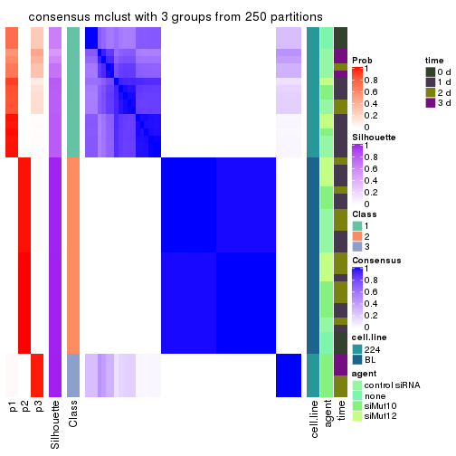
consensus_heatmap(res, k = 4)
consensus_heatmap(res, k = 5)
consensus_heatmap(res, k = 6)
Heatmaps for the membership of samples in all partitions to see how consistent they are:
membership_heatmap(res, k = 2)

membership_heatmap(res, k = 3)
membership_heatmap(res, k = 4)
membership_heatmap(res, k = 5)
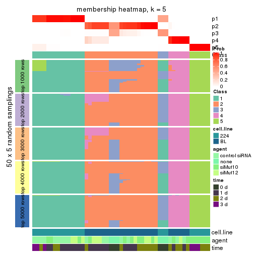
membership_heatmap(res, k = 6)
As soon as we have had the classes for columns, we can look for signatures which are significantly different between classes which can be candidate marks for certain classes. Following are the heatmaps for signatures.
Signature heatmaps where rows are scaled:
get_signatures(res, k = 2)

get_signatures(res, k = 3)
get_signatures(res, k = 4)

get_signatures(res, k = 5)
get_signatures(res, k = 6)
Signature heatmaps where rows are not scaled:
get_signatures(res, k = 2, scale_rows = FALSE)

get_signatures(res, k = 3, scale_rows = FALSE)
get_signatures(res, k = 4, scale_rows = FALSE)
get_signatures(res, k = 5, scale_rows = FALSE)
get_signatures(res, k = 6, scale_rows = FALSE)
Compare the overlap of signatures from different k:
compare_signatures(res)
get_signature() returns a data frame invisibly. TO get the list of signatures, the function
call should be assigned to a variable explicitly. In following code, if plot argument is set
to FALSE, no heatmap is plotted while only the differential analysis is performed.
# code only for demonstration
tb = get_signature(res, k = ..., plot = FALSE)
An example of the output of tb is:
#> which_row fdr mean_1 mean_2 scaled_mean_1 scaled_mean_2 km
#> 1 38 0.042760348 8.373488 9.131774 -0.5533452 0.5164555 1
#> 2 40 0.018707592 7.106213 8.469186 -0.6173731 0.5762149 1
#> 3 55 0.019134737 10.221463 11.207825 -0.6159697 0.5749050 1
#> 4 59 0.006059896 5.921854 7.869574 -0.6899429 0.6439467 1
#> 5 60 0.018055526 8.928898 10.211722 -0.6204761 0.5791110 1
#> 6 98 0.009384629 15.714769 14.887706 0.6635654 -0.6193277 2
...
The columns in tb are:
which_row: row indices corresponding to the input matrix.fdr: FDR for the differential test. mean_x: The mean value in group x.scaled_mean_x: The mean value in group x after rows are scaled.km: Row groups if k-means clustering is applied to rows.UMAP plot which shows how samples are separated.
dimension_reduction(res, k = 2, method = "UMAP")

dimension_reduction(res, k = 3, method = "UMAP")
dimension_reduction(res, k = 4, method = "UMAP")
dimension_reduction(res, k = 5, method = "UMAP")
dimension_reduction(res, k = 6, method = "UMAP")
Following heatmap shows how subgroups are split when increasing k:
collect_classes(res)
Test correlation between subgroups and known annotations. If the known annotation is numeric, one-way ANOVA test is applied, and if the known annotation is discrete, chi-squared contingency table test is applied.
test_to_known_factors(res)
#> n cell.line(p) agent(p) time(p) k
#> ATC:mclust 51 6.87e-12 5.28e-01 4.06e-02 2
#> ATC:mclust 51 8.42e-12 1.08e-02 6.91e-03 3
#> ATC:mclust 43 2.46e-09 2.19e-02 4.68e-05 4
#> ATC:mclust 51 2.23e-10 1.70e-05 1.29e-05 5
#> ATC:mclust 51 8.65e-10 7.18e-09 5.15e-09 6
If matrix rows can be associated to genes, consider to use GO_Enrichment(res,
...) to perform function enrichment for the signature genes.
The object with results only for a single top-value method and a single partition method can be extracted as:
res = res_list["ATC", "NMF"]
# you can also extract it by
# res = res_list["ATC:NMF"]
A summary of res and all the functions that can be applied to it:
res
#> A 'ConsensusPartition' object with k = 2, 3, 4, 5, 6.
#> On a matrix with 21168 rows and 51 columns.
#> Top rows (1000, 2000, 3000, 4000, 5000) are extracted by 'ATC' method.
#> Subgroups are detected by 'NMF' method.
#> Performed in total 1250 partitions by row resampling.
#> Best k for subgroups seems to be 2.
#>
#> Following methods can be applied to this 'ConsensusPartition' object:
#> [1] "cola_report" "collect_classes" "collect_plots"
#> [4] "collect_stats" "colnames" "compare_signatures"
#> [7] "consensus_heatmap" "dimension_reduction" "functional_enrichment"
#> [10] "get_anno_col" "get_anno" "get_classes"
#> [13] "get_consensus" "get_matrix" "get_membership"
#> [16] "get_param" "get_signatures" "get_stats"
#> [19] "is_best_k" "is_stable_k" "membership_heatmap"
#> [22] "ncol" "nrow" "plot_ecdf"
#> [25] "rownames" "select_partition_number" "show"
#> [28] "suggest_best_k" "test_to_known_factors"
collect_plots() function collects all the plots made from res for all k (number of partitions)
into one single page to provide an easy and fast comparison between different k.
collect_plots(res)
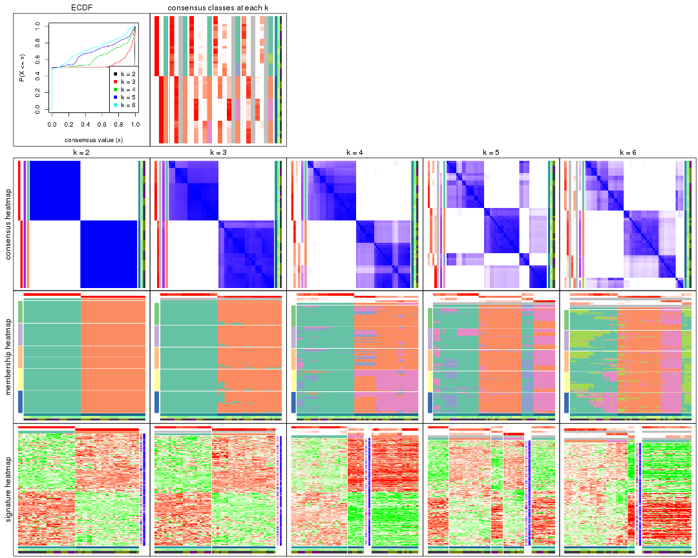
The plots are:
k and the heatmap of
predicted classes for each k.k.k.k.All the plots in panels can be made by individual functions and they are plotted later in this section.
select_partition_number() produces several plots showing different
statistics for choosing “optimized” k. There are following statistics:
k;k, the area increased is defined as \(A_k - A_{k-1}\).The detailed explanations of these statistics can be found in the cola vignette.
Generally speaking, lower PAC score, higher mean silhouette score or higher
concordance corresponds to better partition. Rand index and Jaccard index
measure how similar the current partition is compared to partition with k-1.
If they are too similar, we won't accept k is better than k-1.
select_partition_number(res)
The numeric values for all these statistics can be obtained by get_stats().
get_stats(res)
#> k 1-PAC mean_silhouette concordance area_increased Rand Jaccard
#> 2 2 1.000 1.000 1.000 0.5087 0.492 0.492
#> 3 3 0.881 0.946 0.949 0.0794 1.000 1.000
#> 4 4 0.706 0.492 0.713 0.1461 0.873 0.742
#> 5 5 0.654 0.660 0.786 0.1029 0.798 0.529
#> 6 6 0.585 0.575 0.740 0.0582 0.894 0.697
suggest_best_k() suggests the best \(k\) based on these statistics. The rules are as follows:
NA.suggest_best_k(res)
#> [1] 2
Following shows the table of the partitions (You need to click the show/hide
code output link to see it). The membership matrix (columns with name p*)
is inferred by
clue::cl_consensus()
function with the SE method. Basically the value in the membership matrix
represents the probability to belong to a certain group. The finall class
label for an item is determined with the group with highest probability it
belongs to.
In get_classes() function, the entropy is calculated from the membership
matrix and the silhouette score is calculated from the consensus matrix.
cbind(get_classes(res, k = 2), get_membership(res, k = 2))
#> class entropy silhouette p1 p2
#> GSM312684 1 0 1 1 0
#> GSM312685 1 0 1 1 0
#> GSM312686 1 0 1 1 0
#> GSM312693 1 0 1 1 0
#> GSM312694 1 0 1 1 0
#> GSM312695 1 0 1 1 0
#> GSM312699 1 0 1 1 0
#> GSM312700 1 0 1 1 0
#> GSM312701 1 0 1 1 0
#> GSM312705 1 0 1 1 0
#> GSM312706 1 0 1 1 0
#> GSM312707 1 0 1 1 0
#> GSM312687 1 0 1 1 0
#> GSM312688 1 0 1 1 0
#> GSM312689 1 0 1 1 0
#> GSM312696 1 0 1 1 0
#> GSM312697 1 0 1 1 0
#> GSM312698 1 0 1 1 0
#> GSM312702 1 0 1 1 0
#> GSM312703 1 0 1 1 0
#> GSM312704 1 0 1 1 0
#> GSM312690 1 0 1 1 0
#> GSM312691 1 0 1 1 0
#> GSM312692 1 0 1 1 0
#> GSM312708 2 0 1 0 1
#> GSM312709 2 0 1 0 1
#> GSM312710 2 0 1 0 1
#> GSM312719 2 0 1 0 1
#> GSM312720 2 0 1 0 1
#> GSM312721 2 0 1 0 1
#> GSM312722 2 0 1 0 1
#> GSM312731 2 0 1 0 1
#> GSM312732 2 0 1 0 1
#> GSM312733 2 0 1 0 1
#> GSM312734 2 0 1 0 1
#> GSM312711 2 0 1 0 1
#> GSM312712 2 0 1 0 1
#> GSM312713 2 0 1 0 1
#> GSM312714 2 0 1 0 1
#> GSM312723 2 0 1 0 1
#> GSM312724 2 0 1 0 1
#> GSM312725 2 0 1 0 1
#> GSM312726 2 0 1 0 1
#> GSM312715 2 0 1 0 1
#> GSM312716 2 0 1 0 1
#> GSM312717 2 0 1 0 1
#> GSM312718 2 0 1 0 1
#> GSM312727 2 0 1 0 1
#> GSM312728 2 0 1 0 1
#> GSM312729 2 0 1 0 1
#> GSM312730 2 0 1 0 1
cbind(get_classes(res, k = 3), get_membership(res, k = 3))
#> class entropy silhouette p1 p2 p3
#> GSM312684 1 0.4178 0.882 0.828 0.000 NA
#> GSM312685 1 0.4974 0.839 0.764 0.000 NA
#> GSM312686 1 0.4178 0.882 0.828 0.000 NA
#> GSM312693 1 0.0747 0.960 0.984 0.000 NA
#> GSM312694 1 0.0747 0.960 0.984 0.000 NA
#> GSM312695 1 0.0592 0.960 0.988 0.000 NA
#> GSM312699 1 0.0000 0.961 1.000 0.000 NA
#> GSM312700 1 0.0237 0.961 0.996 0.000 NA
#> GSM312701 1 0.0592 0.960 0.988 0.000 NA
#> GSM312705 1 0.0000 0.961 1.000 0.000 NA
#> GSM312706 1 0.0000 0.961 1.000 0.000 NA
#> GSM312707 1 0.0000 0.961 1.000 0.000 NA
#> GSM312687 1 0.0237 0.961 0.996 0.000 NA
#> GSM312688 1 0.0424 0.961 0.992 0.000 NA
#> GSM312689 1 0.0000 0.961 1.000 0.000 NA
#> GSM312696 1 0.2711 0.935 0.912 0.000 NA
#> GSM312697 1 0.2878 0.932 0.904 0.000 NA
#> GSM312698 1 0.2711 0.935 0.912 0.000 NA
#> GSM312702 1 0.3267 0.924 0.884 0.000 NA
#> GSM312703 1 0.3116 0.927 0.892 0.000 NA
#> GSM312704 1 0.3116 0.927 0.892 0.000 NA
#> GSM312690 1 0.0747 0.960 0.984 0.000 NA
#> GSM312691 1 0.0747 0.960 0.984 0.000 NA
#> GSM312692 1 0.0424 0.961 0.992 0.000 NA
#> GSM312708 2 0.5291 0.802 0.000 0.732 NA
#> GSM312709 2 0.4974 0.829 0.000 0.764 NA
#> GSM312710 2 0.3879 0.892 0.000 0.848 NA
#> GSM312719 2 0.0892 0.966 0.000 0.980 NA
#> GSM312720 2 0.1529 0.958 0.000 0.960 NA
#> GSM312721 2 0.0424 0.966 0.000 0.992 NA
#> GSM312722 2 0.0424 0.966 0.000 0.992 NA
#> GSM312731 2 0.0892 0.966 0.000 0.980 NA
#> GSM312732 2 0.1163 0.964 0.000 0.972 NA
#> GSM312733 2 0.0892 0.966 0.000 0.980 NA
#> GSM312734 2 0.1411 0.960 0.000 0.964 NA
#> GSM312711 2 0.1163 0.964 0.000 0.972 NA
#> GSM312712 2 0.0892 0.966 0.000 0.980 NA
#> GSM312713 2 0.1860 0.959 0.000 0.948 NA
#> GSM312714 2 0.0892 0.964 0.000 0.980 NA
#> GSM312723 2 0.1860 0.957 0.000 0.948 NA
#> GSM312724 2 0.1411 0.964 0.000 0.964 NA
#> GSM312725 2 0.1529 0.962 0.000 0.960 NA
#> GSM312726 2 0.1753 0.962 0.000 0.952 NA
#> GSM312715 2 0.0424 0.966 0.000 0.992 NA
#> GSM312716 2 0.1031 0.963 0.000 0.976 NA
#> GSM312717 2 0.0000 0.966 0.000 1.000 NA
#> GSM312718 2 0.0237 0.966 0.000 0.996 NA
#> GSM312727 2 0.1411 0.962 0.000 0.964 NA
#> GSM312728 2 0.1289 0.964 0.000 0.968 NA
#> GSM312729 2 0.1289 0.964 0.000 0.968 NA
#> GSM312730 2 0.1643 0.961 0.000 0.956 NA
cbind(get_classes(res, k = 4), get_membership(res, k = 4))
#> class entropy silhouette p1 p2 p3 p4
#> GSM312684 1 0.4840 0.764 0.732 0.000 0.240 0.028
#> GSM312685 1 0.6259 0.662 0.616 0.000 0.300 0.084
#> GSM312686 1 0.5596 0.735 0.696 0.000 0.236 0.068
#> GSM312693 1 0.0336 0.913 0.992 0.000 0.008 0.000
#> GSM312694 1 0.0376 0.913 0.992 0.000 0.004 0.004
#> GSM312695 1 0.0188 0.914 0.996 0.000 0.000 0.004
#> GSM312699 1 0.1637 0.910 0.940 0.000 0.060 0.000
#> GSM312700 1 0.0469 0.914 0.988 0.000 0.012 0.000
#> GSM312701 1 0.0336 0.914 0.992 0.000 0.008 0.000
#> GSM312705 1 0.2011 0.906 0.920 0.000 0.080 0.000
#> GSM312706 1 0.2081 0.905 0.916 0.000 0.084 0.000
#> GSM312707 1 0.2011 0.906 0.920 0.000 0.080 0.000
#> GSM312687 1 0.0672 0.915 0.984 0.000 0.008 0.008
#> GSM312688 1 0.0524 0.914 0.988 0.000 0.004 0.008
#> GSM312689 1 0.0376 0.914 0.992 0.000 0.004 0.004
#> GSM312696 1 0.3024 0.886 0.852 0.000 0.148 0.000
#> GSM312697 1 0.3123 0.883 0.844 0.000 0.156 0.000
#> GSM312698 1 0.3123 0.883 0.844 0.000 0.156 0.000
#> GSM312702 1 0.4792 0.791 0.680 0.000 0.312 0.008
#> GSM312703 1 0.4343 0.827 0.732 0.000 0.264 0.004
#> GSM312704 1 0.4008 0.840 0.756 0.000 0.244 0.000
#> GSM312690 1 0.0336 0.913 0.992 0.000 0.000 0.008
#> GSM312691 1 0.0592 0.913 0.984 0.000 0.000 0.016
#> GSM312692 1 0.0188 0.914 0.996 0.000 0.000 0.004
#> GSM312708 4 0.4426 0.442 0.000 0.204 0.024 0.772
#> GSM312709 4 0.4644 0.471 0.000 0.228 0.024 0.748
#> GSM312710 4 0.5206 0.534 0.000 0.308 0.024 0.668
#> GSM312719 2 0.0804 0.483 0.000 0.980 0.012 0.008
#> GSM312720 4 0.4985 0.620 0.000 0.468 0.000 0.532
#> GSM312721 2 0.1792 0.442 0.000 0.932 0.000 0.068
#> GSM312722 2 0.4977 -0.533 0.000 0.540 0.000 0.460
#> GSM312731 2 0.0592 0.482 0.000 0.984 0.000 0.016
#> GSM312732 2 0.1488 0.458 0.000 0.956 0.032 0.012
#> GSM312733 2 0.0657 0.482 0.000 0.984 0.012 0.004
#> GSM312734 4 0.5288 0.609 0.000 0.472 0.008 0.520
#> GSM312711 2 0.0469 0.483 0.000 0.988 0.012 0.000
#> GSM312712 2 0.0524 0.483 0.000 0.988 0.004 0.008
#> GSM312713 4 0.4994 0.612 0.000 0.480 0.000 0.520
#> GSM312714 2 0.5168 -0.629 0.000 0.500 0.004 0.496
#> GSM312723 2 0.0469 0.484 0.000 0.988 0.012 0.000
#> GSM312724 2 0.6212 -0.389 0.000 0.560 0.060 0.380
#> GSM312725 2 0.5506 -0.589 0.000 0.512 0.016 0.472
#> GSM312726 2 0.5512 -0.639 0.000 0.492 0.016 0.492
#> GSM312715 2 0.5167 -0.609 0.000 0.508 0.004 0.488
#> GSM312716 4 0.4999 0.590 0.000 0.492 0.000 0.508
#> GSM312717 2 0.5167 -0.610 0.000 0.508 0.004 0.488
#> GSM312718 2 0.5151 -0.550 0.000 0.532 0.004 0.464
#> GSM312727 4 0.5512 0.573 0.000 0.492 0.016 0.492
#> GSM312728 2 0.0188 0.484 0.000 0.996 0.004 0.000
#> GSM312729 2 0.5408 -0.623 0.000 0.500 0.012 0.488
#> GSM312730 4 0.5409 0.576 0.000 0.492 0.012 0.496
cbind(get_classes(res, k = 5), get_membership(res, k = 5))
#> class entropy silhouette p1 p2 p3 p4 p5
#> GSM312684 1 0.4703 0.450 0.732 0.032 0.024 0.000 NA
#> GSM312685 1 0.5833 0.303 0.576 0.064 0.020 0.000 NA
#> GSM312686 1 0.5607 0.340 0.608 0.048 0.024 0.000 NA
#> GSM312693 1 0.1331 0.604 0.952 0.000 0.040 0.000 NA
#> GSM312694 1 0.1124 0.607 0.960 0.000 0.036 0.000 NA
#> GSM312695 1 0.0290 0.612 0.992 0.000 0.008 0.000 NA
#> GSM312699 1 0.4557 -0.272 0.584 0.000 0.404 0.000 NA
#> GSM312700 1 0.3353 0.434 0.796 0.000 0.196 0.000 NA
#> GSM312701 1 0.3519 0.388 0.776 0.000 0.216 0.000 NA
#> GSM312705 1 0.4604 -0.338 0.560 0.000 0.428 0.000 NA
#> GSM312706 1 0.4610 -0.348 0.556 0.000 0.432 0.000 NA
#> GSM312707 1 0.4504 -0.334 0.564 0.000 0.428 0.000 NA
#> GSM312687 1 0.1310 0.604 0.956 0.000 0.024 0.000 NA
#> GSM312688 1 0.1399 0.602 0.952 0.000 0.020 0.000 NA
#> GSM312689 1 0.0740 0.612 0.980 0.004 0.008 0.000 NA
#> GSM312696 1 0.4446 -0.649 0.520 0.000 0.476 0.000 NA
#> GSM312697 3 0.4305 0.672 0.488 0.000 0.512 0.000 NA
#> GSM312698 3 0.4291 0.725 0.464 0.000 0.536 0.000 NA
#> GSM312702 3 0.3928 0.758 0.296 0.004 0.700 0.000 NA
#> GSM312703 3 0.4015 0.823 0.348 0.000 0.652 0.000 NA
#> GSM312704 3 0.4030 0.824 0.352 0.000 0.648 0.000 NA
#> GSM312690 1 0.1106 0.607 0.964 0.000 0.012 0.000 NA
#> GSM312691 1 0.1978 0.589 0.928 0.004 0.044 0.000 NA
#> GSM312692 1 0.0671 0.611 0.980 0.000 0.016 0.000 NA
#> GSM312708 2 0.2983 0.714 0.000 0.864 0.000 0.096 NA
#> GSM312709 2 0.3085 0.742 0.000 0.852 0.000 0.116 NA
#> GSM312710 2 0.3810 0.793 0.000 0.792 0.000 0.168 NA
#> GSM312719 4 0.0000 0.970 0.000 0.000 0.000 1.000 NA
#> GSM312720 2 0.3884 0.919 0.000 0.708 0.004 0.288 NA
#> GSM312721 4 0.2020 0.821 0.000 0.100 0.000 0.900 NA
#> GSM312722 2 0.4030 0.881 0.000 0.648 0.000 0.352 NA
#> GSM312731 4 0.0451 0.966 0.000 0.000 0.008 0.988 NA
#> GSM312732 4 0.1082 0.942 0.000 0.000 0.008 0.964 NA
#> GSM312733 4 0.0290 0.969 0.000 0.000 0.000 0.992 NA
#> GSM312734 2 0.4546 0.914 0.000 0.688 0.020 0.284 NA
#> GSM312711 4 0.0000 0.970 0.000 0.000 0.000 1.000 NA
#> GSM312712 4 0.0000 0.970 0.000 0.000 0.000 1.000 NA
#> GSM312713 2 0.4015 0.919 0.000 0.708 0.004 0.284 NA
#> GSM312714 2 0.4240 0.919 0.000 0.684 0.008 0.304 NA
#> GSM312723 4 0.0566 0.962 0.000 0.000 0.012 0.984 NA
#> GSM312724 2 0.5316 0.840 0.000 0.600 0.012 0.348 NA
#> GSM312725 2 0.4645 0.912 0.000 0.672 0.016 0.300 NA
#> GSM312726 2 0.4262 0.919 0.000 0.696 0.012 0.288 NA
#> GSM312715 2 0.3913 0.912 0.000 0.676 0.000 0.324 NA
#> GSM312716 2 0.3816 0.919 0.000 0.696 0.000 0.304 NA
#> GSM312717 2 0.3837 0.919 0.000 0.692 0.000 0.308 NA
#> GSM312718 2 0.3895 0.914 0.000 0.680 0.000 0.320 NA
#> GSM312727 2 0.4243 0.911 0.000 0.712 0.000 0.264 NA
#> GSM312728 4 0.0324 0.968 0.000 0.004 0.004 0.992 NA
#> GSM312729 2 0.4240 0.918 0.000 0.684 0.008 0.304 NA
#> GSM312730 2 0.4086 0.920 0.000 0.704 0.000 0.284 NA
cbind(get_classes(res, k = 6), get_membership(res, k = 6))
#> class entropy silhouette p1 p2 p3 p4 p5 p6
#> GSM312684 5 0.501 0.6499 0.272 0.000 NA 0.000 0.616 NA
#> GSM312685 5 0.520 0.6143 0.192 0.000 NA 0.000 0.616 NA
#> GSM312686 5 0.530 0.6645 0.260 0.000 NA 0.000 0.588 NA
#> GSM312693 1 0.406 0.0427 0.556 0.000 NA 0.000 0.436 NA
#> GSM312694 1 0.392 0.0850 0.580 0.000 NA 0.000 0.416 NA
#> GSM312695 1 0.383 0.0634 0.556 0.000 NA 0.000 0.444 NA
#> GSM312699 1 0.158 0.4322 0.936 0.000 NA 0.000 0.048 NA
#> GSM312700 1 0.304 0.3298 0.792 0.000 NA 0.000 0.200 NA
#> GSM312701 1 0.335 0.3043 0.768 0.000 NA 0.000 0.216 NA
#> GSM312705 1 0.216 0.4311 0.912 0.000 NA 0.000 0.028 NA
#> GSM312706 1 0.162 0.4380 0.940 0.000 NA 0.000 0.024 NA
#> GSM312707 1 0.175 0.4350 0.932 0.000 NA 0.000 0.024 NA
#> GSM312687 1 0.470 -0.0494 0.492 0.000 NA 0.000 0.472 NA
#> GSM312688 1 0.465 -0.0392 0.492 0.000 NA 0.000 0.476 NA
#> GSM312689 1 0.408 0.0395 0.540 0.000 NA 0.000 0.452 NA
#> GSM312696 1 0.314 0.4310 0.788 0.000 NA 0.000 0.012 NA
#> GSM312697 1 0.354 0.4187 0.756 0.000 NA 0.000 0.016 NA
#> GSM312698 1 0.310 0.4296 0.788 0.000 NA 0.000 0.004 NA
#> GSM312702 1 0.382 0.2721 0.564 0.000 NA 0.000 0.000 NA
#> GSM312703 1 0.356 0.3544 0.664 0.000 NA 0.000 0.000 NA
#> GSM312704 1 0.358 0.3504 0.660 0.000 NA 0.000 0.000 NA
#> GSM312690 1 0.447 -0.0498 0.496 0.000 NA 0.000 0.480 NA
#> GSM312691 5 0.537 -0.0760 0.420 0.000 NA 0.000 0.492 NA
#> GSM312692 1 0.405 0.0876 0.564 0.000 NA 0.000 0.428 NA
#> GSM312708 2 0.515 0.6391 0.000 0.632 NA 0.008 0.116 NA
#> GSM312709 2 0.496 0.6615 0.000 0.656 NA 0.008 0.104 NA
#> GSM312710 2 0.503 0.6805 0.000 0.672 NA 0.016 0.112 NA
#> GSM312719 4 0.298 0.9297 0.000 0.188 NA 0.804 0.000 NA
#> GSM312720 2 0.153 0.8578 0.000 0.928 NA 0.004 0.000 NA
#> GSM312721 4 0.436 0.7226 0.000 0.332 NA 0.636 0.000 NA
#> GSM312722 2 0.310 0.8069 0.000 0.840 NA 0.108 0.000 NA
#> GSM312731 4 0.373 0.9033 0.000 0.228 NA 0.744 0.004 NA
#> GSM312732 4 0.277 0.8861 0.000 0.124 NA 0.852 0.004 NA
#> GSM312733 4 0.333 0.9297 0.000 0.184 NA 0.792 0.004 NA
#> GSM312734 2 0.285 0.8485 0.000 0.876 NA 0.036 0.012 NA
#> GSM312711 4 0.278 0.9269 0.000 0.168 NA 0.824 0.000 NA
#> GSM312712 4 0.322 0.9161 0.000 0.220 NA 0.772 0.000 NA
#> GSM312713 2 0.127 0.8602 0.000 0.940 NA 0.000 0.000 NA
#> GSM312714 2 0.172 0.8607 0.000 0.928 NA 0.032 0.000 NA
#> GSM312723 4 0.248 0.9176 0.000 0.148 NA 0.848 0.000 NA
#> GSM312724 2 0.411 0.6951 0.000 0.744 NA 0.092 0.000 NA
#> GSM312725 2 0.241 0.8423 0.000 0.880 NA 0.028 0.000 NA
#> GSM312726 2 0.194 0.8585 0.000 0.916 NA 0.012 0.000 NA
#> GSM312715 2 0.184 0.8587 0.000 0.924 NA 0.048 0.000 NA
#> GSM312716 2 0.122 0.8661 0.000 0.956 NA 0.000 0.004 NA
#> GSM312717 2 0.131 0.8649 0.000 0.956 NA 0.020 0.004 NA
#> GSM312718 2 0.148 0.8589 0.000 0.944 NA 0.040 0.004 NA
#> GSM312727 2 0.182 0.8587 0.000 0.924 NA 0.008 0.012 NA
#> GSM312728 4 0.315 0.9228 0.000 0.184 NA 0.800 0.004 NA
#> GSM312729 2 0.258 0.8512 0.000 0.896 NA 0.036 0.012 NA
#> GSM312730 2 0.153 0.8633 0.000 0.944 NA 0.008 0.008 NA
Heatmaps for the consensus matrix. It visualizes the probability of two samples to be in a same group.
consensus_heatmap(res, k = 2)

consensus_heatmap(res, k = 3)
consensus_heatmap(res, k = 4)
consensus_heatmap(res, k = 5)
consensus_heatmap(res, k = 6)
Heatmaps for the membership of samples in all partitions to see how consistent they are:
membership_heatmap(res, k = 2)

membership_heatmap(res, k = 3)
membership_heatmap(res, k = 4)
membership_heatmap(res, k = 5)
membership_heatmap(res, k = 6)
As soon as we have had the classes for columns, we can look for signatures which are significantly different between classes which can be candidate marks for certain classes. Following are the heatmaps for signatures.
Signature heatmaps where rows are scaled:
get_signatures(res, k = 2)

get_signatures(res, k = 3)
get_signatures(res, k = 4)
get_signatures(res, k = 5)
get_signatures(res, k = 6)
Signature heatmaps where rows are not scaled:
get_signatures(res, k = 2, scale_rows = FALSE)

get_signatures(res, k = 3, scale_rows = FALSE)
get_signatures(res, k = 4, scale_rows = FALSE)
get_signatures(res, k = 5, scale_rows = FALSE)
get_signatures(res, k = 6, scale_rows = FALSE)
Compare the overlap of signatures from different k:
compare_signatures(res)
get_signature() returns a data frame invisibly. TO get the list of signatures, the function
call should be assigned to a variable explicitly. In following code, if plot argument is set
to FALSE, no heatmap is plotted while only the differential analysis is performed.
# code only for demonstration
tb = get_signature(res, k = ..., plot = FALSE)
An example of the output of tb is:
#> which_row fdr mean_1 mean_2 scaled_mean_1 scaled_mean_2 km
#> 1 38 0.042760348 8.373488 9.131774 -0.5533452 0.5164555 1
#> 2 40 0.018707592 7.106213 8.469186 -0.6173731 0.5762149 1
#> 3 55 0.019134737 10.221463 11.207825 -0.6159697 0.5749050 1
#> 4 59 0.006059896 5.921854 7.869574 -0.6899429 0.6439467 1
#> 5 60 0.018055526 8.928898 10.211722 -0.6204761 0.5791110 1
#> 6 98 0.009384629 15.714769 14.887706 0.6635654 -0.6193277 2
...
The columns in tb are:
which_row: row indices corresponding to the input matrix.fdr: FDR for the differential test. mean_x: The mean value in group x.scaled_mean_x: The mean value in group x after rows are scaled.km: Row groups if k-means clustering is applied to rows.UMAP plot which shows how samples are separated.
dimension_reduction(res, k = 2, method = "UMAP")
dimension_reduction(res, k = 3, method = "UMAP")
dimension_reduction(res, k = 4, method = "UMAP")
dimension_reduction(res, k = 5, method = "UMAP")
dimension_reduction(res, k = 6, method = "UMAP")
Following heatmap shows how subgroups are split when increasing k:
collect_classes(res)
Test correlation between subgroups and known annotations. If the known annotation is numeric, one-way ANOVA test is applied, and if the known annotation is discrete, chi-squared contingency table test is applied.
test_to_known_factors(res)
#> n cell.line(p) agent(p) time(p) k
#> ATC:NMF 51 6.87e-12 0.52771 4.06e-02 2
#> ATC:NMF 51 6.87e-12 0.52771 4.06e-02 3
#> ATC:NMF 31 4.32e-07 0.30542 4.94e-01 4
#> ATC:NMF 41 6.54e-09 0.04061 2.78e-05 5
#> ATC:NMF 30 3.06e-07 0.00358 5.65e-03 6
If matrix rows can be associated to genes, consider to use GO_Enrichment(res,
...) to perform function enrichment for the signature genes.
sessionInfo()
#> R version 3.6.0 (2019-04-26)
#> Platform: x86_64-pc-linux-gnu (64-bit)
#> Running under: CentOS Linux 7 (Core)
#>
#> Matrix products: default
#> BLAS: /usr/lib64/libblas.so.3.4.2
#> LAPACK: /usr/lib64/liblapack.so.3.4.2
#>
#> locale:
#> [1] LC_CTYPE=en_GB.UTF-8 LC_NUMERIC=C LC_TIME=en_GB.UTF-8
#> [4] LC_COLLATE=en_GB.UTF-8 LC_MONETARY=en_GB.UTF-8 LC_MESSAGES=en_GB.UTF-8
#> [7] LC_PAPER=en_GB.UTF-8 LC_NAME=C LC_ADDRESS=C
#> [10] LC_TELEPHONE=C LC_MEASUREMENT=en_GB.UTF-8 LC_IDENTIFICATION=C
#>
#> attached base packages:
#> [1] grid parallel stats graphics grDevices utils datasets methods base
#>
#> other attached packages:
#> [1] genefilter_1.66.0 ComplexHeatmap_2.1.1 markdown_1.1 knitr_1.26
#> [5] preprocessCore_1.46.0 cola_1.3.2 GEOquery_2.52.0 Biobase_2.44.0
#> [9] BiocGenerics_0.30.0 GetoptLong_0.1.7
#>
#> loaded via a namespace (and not attached):
#> [1] bitops_1.0-6 matrixStats_0.55.0 bit64_0.9-7 doParallel_1.0.15
#> [5] RColorBrewer_1.1-2 httr_1.4.1 tools_3.6.0 backports_1.1.5
#> [9] R6_2.4.1 DBI_1.0.0 lazyeval_0.2.2 colorspace_1.4-1
#> [13] withr_2.1.2 tidyselect_0.2.5 gridExtra_2.3 bit_1.1-14
#> [17] compiler_3.6.0 xml2_1.2.2 microbenchmark_1.4-7 pkgmaker_0.28
#> [21] slam_0.1-46 scales_1.1.0 readr_1.3.1 NMF_0.23.6
#> [25] stringr_1.4.0 digest_0.6.23 pkgconfig_2.0.3 bibtex_0.4.2
#> [29] highr_0.8 limma_3.40.6 rlang_0.4.2 GlobalOptions_0.1.1
#> [33] RSQLite_2.1.2 impute_1.58.0 shape_1.4.4 mclust_5.4.5
#> [37] dendextend_1.12.0 dplyr_0.8.3 RCurl_1.95-4.12 magrittr_1.5
#> [41] Matrix_1.2-17 Rcpp_1.0.3 munsell_0.5.0 S4Vectors_0.22.1
#> [45] viridis_0.5.1 lifecycle_0.1.0 stringi_1.4.3 plyr_1.8.4
#> [49] blob_1.2.0 crayon_1.3.4 lattice_0.20-38 splines_3.6.0
#> [53] annotate_1.62.0 circlize_0.4.9 hms_0.5.2 zeallot_0.1.0
#> [57] pillar_1.4.2 rjson_0.2.20 rngtools_1.4 reshape2_1.4.3
#> [61] codetools_0.2-16 stats4_3.6.0 XML_3.98-1.20 glue_1.3.1
#> [65] evaluate_0.14 png_0.1-7 vctrs_0.2.0 foreach_1.4.7
#> [69] polyclip_1.10-0 gtable_0.3.0 purrr_0.3.3 tidyr_1.0.0
#> [73] clue_0.3-57 assertthat_0.2.1 ggplot2_3.2.1 xfun_0.11
#> [77] gridBase_0.4-7 eulerr_6.0.0 xtable_1.8-4 skmeans_0.2-11
#> [81] survival_2.44-1.1 viridisLite_0.3.0 tibble_2.1.3 iterators_1.0.12
#> [85] AnnotationDbi_1.46.1 registry_0.5-1 memoise_1.1.0 IRanges_2.18.3
#> [89] cluster_2.1.0 brew_1.0-6